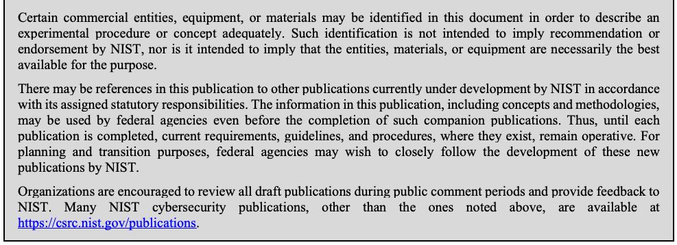
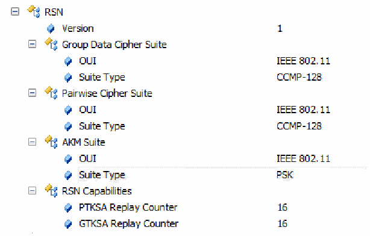
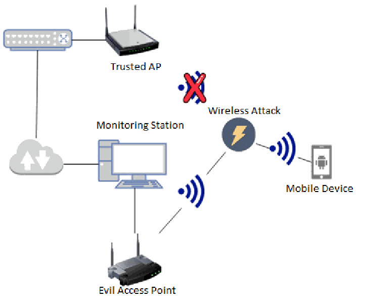
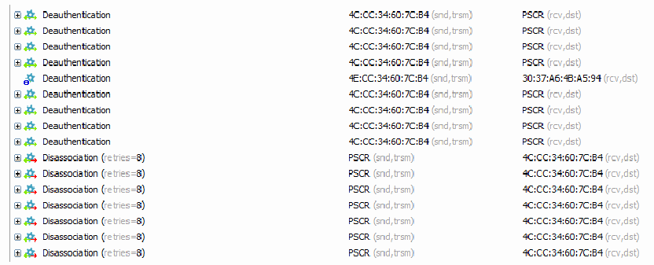
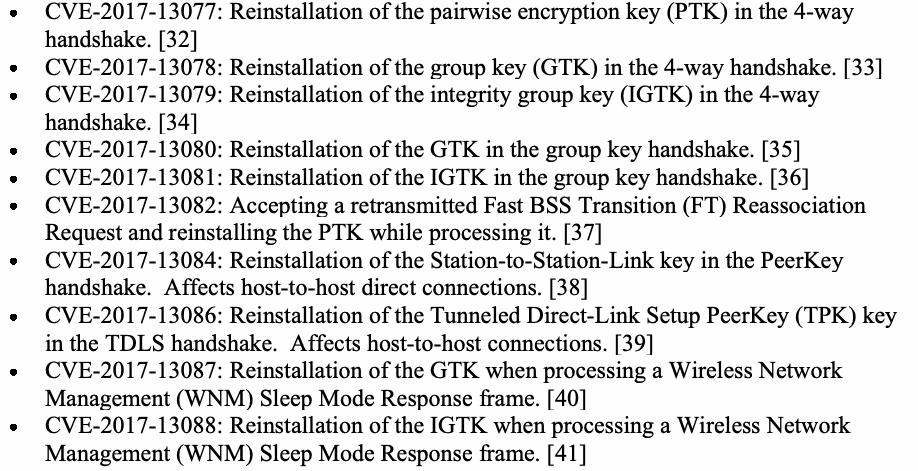
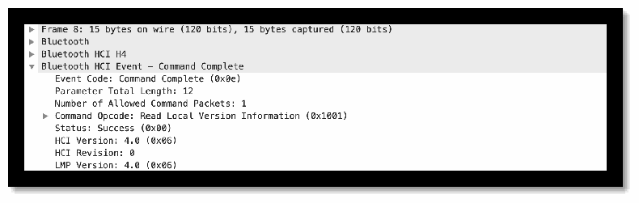

NIST IR 8235 日本語訳
英語タイトル : Security Guidance for First Responder Mobile and Wearable Devices日本語タイトル : ファーストレスポンダー向けモバイルおよびウェアラブルデバイスのセキュリティガイダンス
公開日 : 2022-07-20
原文URL : https://csrc.nist.gov/pubs/ir/8235/final
翻訳編集 : 自動生成（有志による非公式の日本語訳）, 原文取得日 : 2026-10-31, 訳文 : 852 / 874 ブロック
[要約] NIST IR 8235 は、ファーストレスポンダーが使用するモバイルおよびウェアラブルデバイスについて、セキュリティ上のベストプラクティスとガイダンスを示す報告書です。NISTIR 8196 で特定されたセキュリティ目標を用いて、公共安全向けのモバイルおよびウェアラブルデバイスの分析範囲と、それらの目標を満たす現在の機能の範囲を定めています。この取り組みの目的は、管轄区域が安全なデバイスを選定・購入できるようにするガイダンスを提供すること、および、ファーストレスポンダーのニーズに合わせた安全なデバイスを産業界が設計・製造できるよう支援することです。報告書は、技術の概要、分析手法、モバイルとウェアラブルそれぞれのテスト結果の要約を示し、識別・防御・検知・対応・復旧の各機能に沿ったガイダンスを述べています。
NIST IR 8235
NIST IR 8235
Security Guidance for First Responder Mobile and Wearable Devices
ファーストレスポンダー向けモバイルおよびウェアラブルデバイスのセキュリティガイダンス
Gema Howell
Scott Ledgerwood
Kevin G. Brady, Jr.
Donald Harriss
Gema Howell
Scott Ledgerwood
Kevin G. Brady, Jr.
Donald Harriss
This publication is available free of charge from:
https://doi.org/10.6028/NIST.IR.8235
本刊行物は次の場所から無料で入手できます:
https://doi.org/10.6028/NIST.IR.8235
NIST IR 8235
NIST IR 8235
Security Guidance for First Responder Mobile and Wearable Devices
ファーストレスポンダー向けモバイルおよびウェアラブルデバイスのセキュリティガイダンス
Gema Howell
Kevin G. Brady, Jr.
Applied Cybersecurity Division
Information Technology Laboratory
Gema Howell
Kevin G. Brady, Jr.
応用サイバーセキュリティ部門
情報技術研究所
Scott Ledgerwood
Donald Harriss
Public Safety Communications Research Division
Communications Technology Laboratory
Scott Ledgerwood
Donald Harriss
公共安全通信研究部門
通信技術研究所
This publication is available free of charge from:
https://doi.org/10.6028/NIST.IR.8235
本刊行物は次の場所から無料で入手できます:
https://doi.org/10.6028/NIST.IR.8235
July 2022
2022年7月
［米国商務省の紋章。公的な標章のため、この非公式サイトには掲載していません。原本 PDF を参照してください。］
U.S. Department of Commerce
Gina M. Raimondo, Secretary
米国商務省
Gina M. Raimondo 長官
National Institute of Standards and Technology
Laurie E. Locascio, NIST Director and Under Secretary of Commerce for Standards and Technology
国立標準技術研究所
Laurie E. Locascio、NIST 所長兼商務次官（標準・技術担当）
National Institute of Standards and Technology Interagency or Internal Report 8235
118 pages (July 2022)
国立標準技術研究所 省庁間報告書または内部報告書 8235
118ページ（2022年7月）
This publication is available free of charge from:
https://doi.org/10.6028/NIST.IR.8235
本刊行物は次の場所から無料で入手できます:
https://doi.org/10.6028/NIST.IR.8235
Certain commercial entities, equipment, or materials may be identified in this document in order to describe an experimental procedure or concept adequately. Such identification is not intended to imply recommendation or endorsement by NIST, nor is it intended to imply that the entities, materials, or equipment are necessarily the best available for the purpose.
原本PDFの抜粋画像

本文書では、実験の手順や概念を適切に説明するために、特定の商業事業者、機器、材料に言及している場合があります。こうした言及は、NIST による推奨や推薦を意味するものではなく、それらの事業者、材料、機器が目的に照らして必ずしも最良であることを意味するものでもありません。
There may be references in this publication to other publications currently under development by NIST in accordance with its assigned statutory responsibilities. The information in this publication, including concepts and methodologies, may be used by federal agencies even before the completion of such companion publications. Thus, until each publication is completed, current requirements, guidelines, and procedures, where they exist, remain operative. For planning and transition purposes, federal agencies may wish to closely follow the development of these new publications by NIST.
本刊行物には、NIST が法令で定められた責務に従って現在策定中の他の刊行物への言及が含まれる場合があります。そうした関連刊行物の完成前であっても、本刊行物の情報（概念や方法論を含む）を連邦機関が利用してもかまいません。したがって、各刊行物が完成するまでは、現行の要件、ガイドライン、手順が存在する場合には、それらが引き続き有効です。計画および移行のため、連邦機関は、NIST によるこれらの新しい刊行物の策定状況を注意深く追うことを検討してもよいです。
Organizations are encouraged to review all draft publications during public comment periods and provide feedback to NIST. Many NIST cybersecurity publications, other than the ones noted above, are available at https://csrc.nist.gov/publications.
組織には、パブリックコメント期間中にすべてのドラフト刊行物を確認し、NIST にフィードバックを提供することが促されています。上記以外にも、NIST の多くのサイバーセキュリティ刊行物が https://csrc.nist.gov/publications で入手できます。
Submit comments on this publication to: NISTIR8235_Comments@nist.gov
National Institute of Standards and Technology
Attn: Applied Cybersecurity Division, Information Technology Laboratory
100 Bureau Drive (Mail Stop 2000) Gaithersburg, MD 20899-2000
本刊行物に関するコメントの送付先: NISTIR8235_Comments@nist.gov
国立標準技術研究所
宛先: 応用サイバーセキュリティ部門、情報技術研究所
100 Bureau Drive (Mail Stop 2000) Gaithersburg, MD 20899-2000
All comments are subject to release under the Freedom of Information Act (FOIA).
すべてのコメントは、情報自由法（FOIA）に基づく公開の対象となる場合があります。
Reports on Computer Systems Technology
コンピュータシステム技術に関する報告書
The Information Technology Laboratory (ITL) at the National Institute of Standards and Technology (NIST) promotes the U.S. economy and public welfare by providing technical leadership for the Nation’s measurement and standards infrastructure. ITL develops tests, test methods, reference data, proof of concept implementations, and technical analyses to advance the development and productive use of information technology. ITL’s responsibilities include the development of management, administrative, technical, and physical standards and guidelines for the cost-effective security and privacy of other than national security-related information in federal information systems.
国立標準技術研究所（NIST）の情報技術研究所（ITL）は、国の計測・標準インフラストラクチャに対する技術的なリーダーシップを提供することにより、米国の経済と公共の福祉を促進しています。ITL は、情報技術の開発と生産的な利用を進めるために、テスト、テスト手法、参照データ、概念実証の実装、技術分析を開発しています。ITL の責務には、連邦情報システムにおける国家安全保障関連以外の情報について、費用対効果の高いセキュリティおよびプライバシーを実現するための、管理上、運用上、技術上、物理上の標準およびガイドラインの策定が含まれます。
Abstract
要旨
Public safety officials utilizing public safety broadband networks will have access to devices, such as mobile devices, tablets and wearables. These devices offer new ways for first responders to complete their missions but may also introduce new security vulnerabilities to their work environment. To investigate this impact, the security objectives identified in NIST Interagency Report (NISTIR) 8196, Security Analysis of First Responder Mobile and Wearable Devices, were used to scope the analysis of public safety mobile and wearable devices and the current capabilities that meet those security objectives [1]. The purpose of this effort is to provide guidance that enables jurisdictions to select and purchase secure devices; and assist industry to design and build secure devices tailored to the needs of first responders.
公共安全ブロードバンドネットワークを利用する公共安全関係者は、モバイルデバイス、タブレット、ウェアラブルなどのデバイスを使えるようになります。これらのデバイスは、ファーストレスポンダーが任務を遂行する新しい手段をもたらしますが、業務環境に新たなセキュリティ脆弱性を持ち込む可能性もあります。この影響を調査するため、NIST 省庁間報告書（NISTIR）8196『Security Analysis of First Responder Mobile and Wearable Devices』で特定されたセキュリティ目標を用いて、公共安全向けのモバイルおよびウェアラブルデバイスの分析範囲と、それらのセキュリティ目標を満たす現在の機能の範囲を定めました [1]。この取り組みの目的は、管轄区域が安全なデバイスを選定・購入できるようにするガイダンスを提供すること、および、ファーストレスポンダーのニーズに合わせた安全なデバイスを産業界が設計・製造できるよう支援することです。
Keywords
キーワード
cybersecurity; first responders; internet of things; IoT; mobile security; public safety; wearables.
サイバーセキュリティ、ファーストレスポンダー、モノのインターネット、IoT、モバイルセキュリティ、公共安全、ウェアラブル。
Acknowledgments
謝辞
First and foremost, the authors wish to gratefully acknowledge the contributions of the public safety professionals offering their time and rich expertise to our previous study which assisted in the production of NISTIR 8196 Security Analysis of First Responder Mobile and Wearable Devices. Additionally, information gleaned from the Association of Public-Safety Communications Officials (APCO), specifically Mark Reddish, was invaluable. The authors also would like to thank their colleagues who reviewed drafts of this document and contributed to its technical content including John Beltz, Michael Ogata, and Andrew Regenscheid.
まず何よりも、NISTIR 8196『Security Analysis of First Responder Mobile and Wearable Devices』の作成を支えた先行研究に、時間と豊富な専門知識を提供してくださった公共安全の専門家の皆様の貢献に、著者一同深く感謝します。また、Association of Public-Safety Communications Officials（APCO）、特に Mark Reddish 氏から得られた情報は非常に貴重なものでした。さらに、本文書のドラフトをレビューし、その技術的内容に貢献してくださった同僚の John Beltz、Michael Ogata、Andrew Regenscheid の各氏にも感謝します。
Audience
想定読者
This document is intended for those acquiring mobile devices and wearables for deployment in public safety scenarios. This document may also be useful for those designing public safety mobile devices, tablets, and wearable devices.
本文書は、公共安全の場面で配備するモバイルデバイスやウェアラブルを調達する人を対象としています。また、公共安全向けのモバイルデバイス、タブレット、ウェアラブルデバイスを設計する人にも役立つ場合があります。
Patent Disclosure Notice
特許開示に関する通知
NOTICE: ITL has requested that holders of patent claims whose use may be required for compliance with the guidance or requirements of this publication disclose such patent claims to ITL. However, holders of patents are not obligated to respond to ITL calls for patents and ITL has not undertaken a patent search in order to identify which, if any, patents may apply to this publication.
通知: ITL は、本刊行物のガイダンスまたは要件への準拠に使用が必要となる可能性のある特許の請求項の保有者に対し、その請求項を ITL に開示するよう求めています。ただし、特許の保有者には、ITL による特許の募集に応じる義務はなく、ITL は、本刊行物に適用され得る特許があるか、あるとすればどれかを特定するための特許調査を実施していません。
As of the date of publication and following call(s) for the identification of patent claims whose use may be required for compliance with the guidance or requirements of this publication, no such patent claims have been identified to ITL.
発行日時点で、本刊行物のガイダンスまたは要件への準拠に使用が必要となる可能性のある特許の請求項の特定を求める募集を行いましたが、そのような特許の請求項は ITL に対して特定されていません。
No representation is made or implied by ITL that licenses are not required to avoid patent infringement in the use of this publication.
ITL は、本刊行物の利用にあたって特許侵害を避けるためにライセンスが不要であることを、明示的にも黙示的にも表明するものではありません。
Table of Contents
目次
List of Appendices
付録の一覧
List of Tables
表の一覧
List of Figures
図の一覧
Figure 36 - (Left) Android device encryption settings. (Right) Apple iOS device data protection settings
図 36 - （左）Android デバイスの暗号化設定。（右）Apple iOS デバイスのデータ保護設定
Figure 37 - Example packet capture used to identify Bluetooth version
図 37 - Bluetooth のバージョンの特定に使用したパケットキャプチャの例
Figure 38 - Link Key Establishment for Secure Simple Pairing (NIST SP 800-121) [51]
図 38 - Secure Simple Pairing のリンクキー確立（NIST SP 800-121）[51]
Figure 39 - Bluetooth Low Energy Secure Connections Pairing (NIST SP 800-121) [51]
図 39 - Bluetooth Low Energy Secure Connections ペアリング（NIST SP 800-121）[51]
Figure 40 - Security Requirements for Services Protected by Security Mode 4 (NIST SP 800-121) [51]
図 40 - セキュリティモード 4 で保護されるサービスのセキュリティ要件（NIST SP 800-121）[51]
Figure 41 - Secure Simple Pairing Service Levels (NIST SP 800-121) [51]
図 41 - Secure Simple Pairing のサービスレベル（NIST SP 800-121）[51]
1 Introduction
1 はじめに
Public safety first responders are the first at the scene of an emergency incident. Their day-to-day includes life-saving and sometimes life-threatening activities. As commercial and enterprise technology advance, first responders have the opportunity to take advantage of this technology to enhance their efficiency, safety, and capabilities during an incident. The nationwide public safety broadband network (NPSBN), is steadily deployed across the United States. The NPSBN is operated by AT&T under the guidance of the First Responders FirstNet Authority (FirstNet)., per the Middle Class Tax Relief and Job Creation Act of 2012 [2]. Networks like those provided by FirstNet by AT&T and the NPSBN will allow first responders to use modern communication technology (e.g., mobile devices) as well as other Internet of Things (IoT) devices (e.g., wearables) to accomplish their public safety mission.
公共安全のファーストレスポンダーは、緊急事態の現場に最初に到着する人々です。その日常には、人命救助を伴う活動や、ときに生命に関わる危険な活動が含まれます。商用技術やエンタープライズ技術が進歩するにつれ、ファーストレスポンダーは、これらの技術を活用して、インシデント対応中の効率、安全性、能力を高める機会を得ています。全国公共安全ブロードバンドネットワーク（NPSBN）は、米国全土で着実に展開されています。NPSBN は、2012年中間層減税・雇用創出法 [2] に基づき、First Responders FirstNet Authority（FirstNet）の指導の下で AT&T が運用しています。FirstNet by AT&T や NPSBN のようなネットワークにより、ファーストレスポンダーは、公共安全の任務を遂行するために、現代的な通信技術（モバイルデバイスなど）や、その他のモノのインターネット（IoT）デバイス（ウェアラブルなど）を使えるようになります。
As with any new technology, there are security concerns, such as the vulnerabilities and threats to their data and users. In the case of public safety there are concerns that exploits of vulnerabilities may inhibit first responders from performing their duties and put their safety at risk. NISTIR 8196 Security Analysis of First Responder Mobile and Wearable Devices, is a document that was produced in a previous study to understand the specific security needs of mobile and wearable devices for first responders [1]. The document captures the various use cases of public safety mobile and wearable device, the known attacks on public safety mobile and wearable devices, and information received from interviews with actual public safety officials. Due to their unique roles, environments, and situations, the information in NISTIR 8196 is important to grasp the first responder perspective and analyze the security objectives necessary for all first responder devices.
あらゆる新技術と同様に、これらのデバイスにもセキュリティ上の懸念があります。たとえば、データやユーザーに対する脆弱性や脅威です。公共安全の場面では、脆弱性が悪用されることで、ファーストレスポンダーが職務を遂行できなくなり、その安全が危険にさらされるおそれがあります。NISTIR 8196『Security Analysis of First Responder Mobile and Wearable Devices』は、ファーストレスポンダー向けのモバイルおよびウェアラブルデバイスに固有のセキュリティ上のニーズを理解するために、先行研究で作成された文書です [1]。この文書には、公共安全向けモバイルおよびウェアラブルデバイスのさまざまなユースケース、それらに対する既知の攻撃、実際の公共安全関係者へのインタビューから得られた情報がまとめられています。ファーストレスポンダーには固有の役割、環境、状況があるため、NISTIR 8196 の情報は、ファーストレスポンダーの視点を把握し、すべてのファーストレスポンダー向けデバイスに必要なセキュリティ目標を分析するうえで重要です。
Mass production of mobile and wearable devices makes it easy to find and buy any device that may meet one’s wants and needs. Technology is primarily produced for the general consumer or enterprise and not specifically designed with public safety in mind. This could lead to potential repercussions if the appropriate device is procured without consideration of the security and safety of first responders. When it comes to selecting mobile and wearable devices, there is little security guidance that focuses on the particular needs of public safety. During an emergency, a first responder should have some assurance that their devices are reliable and secure.
モバイルおよびウェアラブルデバイスは大量生産されているため、要望やニーズに合うデバイスを見つけて購入することは容易です。技術は主に一般消費者向けまたはエンタープライズ向けに作られており、公共安全を特に念頭に置いて設計されているわけではありません。ファーストレスポンダーの安全とセキュリティを考慮せずに適切なデバイスを調達すると、潜在的な悪影響を招くおそれがあります。モバイルおよびウェアラブルデバイスを選定する際に、公共安全の特有のニーズに焦点を当てたセキュリティガイダンスはほとんどありません。緊急時には、ファーストレスポンダーは自分のデバイスが信頼でき、安全であるという一定の保証を得るべきです。
1.1 Purpose
1.1 目的
The purpose of this document is to share a high-level overview of the current capabilities of public safety mobile and wearable devices. This will give insight of the security capabilities available within today’s devices. Additionally, this document provides guidance for procuring and designing secure mobile and wearable devices specifically for public safety. This document includes the following:
本文書の目的は、公共安全向けモバイルおよびウェアラブルデバイスの現在の機能について、高水準の概要を共有することです。これにより、現在のデバイスで利用できるセキュリティ機能を把握できます。さらに、本文書は、公共安全に特化した安全なモバイルおよびウェアラブルデバイスを調達・設計するためのガイダンスを提供します。本文書には次の内容が含まれます。
•A list of tests developed to analyze public safety mobile and wearable devices
•公共安全向けモバイルおよびウェアラブルデバイスを分析するために策定したテストの一覧
•Each test provides an overview of the outcome and the analysis derived from observation of that outcome
•各テストについて、結果の概要と、その結果の観察から導いた分析
•A collection of best practices and guidance for public safety mobile and wearable devices
•公共安全向けモバイルおよびウェアラブルデバイスのためのベストプラクティスとガイダンスの集成
1.2 Scope
1.2 範囲
This research effort focuses primarily on public safety mobile and wearable devices. Securing broadband networks, for instance, the management, and operation of cellular networks are out of scope. An entire class of devices exists under the IoT umbrella; however, this document solely focuses on wearable IoT devices that may be used by public safety. Additionally, mobile applications that ship with a public safety mobile device are considered in scope, as they are often required to perform typical public safety activities, such as voice communication. Backend services and the communication paths utilized by these mobile applications, to include data transmission from an application to supporting infrastructure, are in scope. Finally, public safety officials work in a variety of disciplines, this Interagency Report (IR) is focused on first responders (i.e., fire service, EMS, and law enforcement) and the public safety device administrators that provide devices to first responders. Testing scenarios, gaps, analysis and guidance beyond those found within this document or the needs of first response, may consult supplementary resources such as the NIST Cybersecurity Framework, the NIST Mobile Security Framework, the Open Web Application Security Project (OWASP), and other device specific security hardening resources.
この調査は、主に公共安全向けのモバイルおよびウェアラブルデバイスに焦点を当てています。ブロードバンドネットワークの保護、たとえばセルラーネットワークの管理と運用は範囲外です。IoT という大きな枠組みの下にはデバイスのクラス全体が存在しますが、本文書は、公共安全で使われる可能性のあるウェアラブル IoT デバイスだけに焦点を当てています。また、公共安全向けモバイルデバイスに同梱されているモバイルアプリケーションは、音声通信など公共安全の典型的な活動を行うために必要となることが多いため、範囲内とみなします。これらのモバイルアプリケーションが利用するバックエンドサービスと通信経路（アプリケーションから支援基盤へのデータ伝送を含む）も範囲内です。最後に、公共安全の関係者はさまざまな分野で働いていますが、この省庁間報告書（IR）は、ファーストレスポンダー（すなわち、消防、救急医療サービス（EMS）、法執行機関）と、ファーストレスポンダーにデバイスを提供する公共安全デバイスの管理者に焦点を当てています。本文書に記載されたものや初動対応のニーズを超えるテストシナリオ、ギャップ、分析、ガイダンスについては、NIST サイバーセキュリティフレームワーク、NIST Mobile Security Framework、Open Web Application Security Project（OWASP）、その他のデバイス固有のセキュリティ強化に関する資料などの補足リソースを参照できます。
1.3 Document Structure
1.3 文書の構成
The document is organized into the following major sections:
本文書は、次の主要な節で構成されています。
•Section 2 provides an overview of the technology analyzed,
•第 2 節では、分析した技術の概要を示します。
•Section 3 outlines the methodology used for analysis
•第 3 節では、分析に用いた手法の概要を示します
•Section 4 summarizes the test plan and findings
•第 4 節では、テスト計画と所見を要約します
•Section 5 suggests best practices and guidance for public safety mobile and wearable devices
•第 5 節では、公共安全向けモバイルおよびウェアラブルデバイスのためのベストプラクティスとガイダンスを示します
•Section 6 concludes the document with a review of the document, future considerations, and other related NIST work
•第 6 節では、本文書のレビュー、今後の検討事項、その他の関連する NIST の取り組みを述べて、本文書を締めくくります
•Section 7 contains a list of references used in the development of this document
•第 7 節には、本文書の作成に使用した参考文献の一覧を示します
The document also contains appendices with supporting material:
本文書には、補足資料を収めた付録もあります。
•Appendix A defines selected acronyms and abbreviations used in this publication, and
•付録 A では、本刊行物で使用している主な頭字語および略語を定義します。
•Appendix B provides a detailed description of each test, including, procedures, analysis, gaps, and guidance
•付録 B では、手順、分析、ギャップ、ガイダンスを含め、各テストの詳細を説明します
2 Technology Overview
2 技術の概要
The following section describes the technologies reviewed throughout this effort. When selecting the public safety devices to analyze, PSCR Engineers searched for public safety-grade technology and devices that could be used in the future to assist first responders. Below is an overview of the types of the devices and why those devices are relevant to this project.
本節では、この取り組みを通じて検討した技術について説明します。分析対象とする公共安全向けデバイスを選定するにあたり、PSCR のエンジニアは、公共安全グレードの技術と、将来ファーストレスポンダーの支援に使える可能性のあるデバイスを探しました。以下に、デバイスの種類と、それらがこのプロジェクトに関連する理由の概要を示します。
2.1 Public Safety Mobile Devices
2.1 公共安全向けモバイルデバイス
The selection of public safety mobile devices was based on knowledge of the upcoming public safety communication systems. The Federal Communications Commission has allocated a portion of the 700 MHz band as the public safety spectrum. This portion of the spectrum is also known as the Band 14 spectrum, which is to be utilized as the national public safety broadband network. This spectrum will allow for device communications to penetrate walls and buildings and prevent congestion issues due to flooded transmissions during an emergency. PSCR Engineers sought out mobile devices that utilized band 14, as well other mobile devices that are not band 14 capable but may be ruggedized or have a secure operating system.
公共安全向けモバイルデバイスの選定は、今後の公共安全通信システムに関する知見に基づいて行いました。連邦通信委員会（FCC）は、700 MHz 帯の一部を公共安全用のスペクトラムとして割り当てています。このスペクトラムは Band 14 スペクトラムとも呼ばれ、全国公共安全ブロードバンドネットワークとして利用される予定です。このスペクトラムにより、デバイス間の通信は壁や建物を透過でき、緊急時に通信が殺到することによる輻輳の問題を防げます。PSCR のエンジニアは、Band 14 を利用するモバイルデバイスのほか、Band 14 には対応していないものの、堅牢化されている、またはセキュアな OS を備えているモバイルデバイスも探しました。
The analyzed public safety mobile devices use rich operating systems supporting downloadable applications, usually based on operating systems found on consumer electronics. Typically, the mobile devices used an Android operating system. The version of the operating system varied per device, some being 4-5 versions behind the latest release.
分析した公共安全向けモバイルデバイスは、ダウンロード可能なアプリケーションに対応した高機能な OS を使用しており、その多くは民生用電子機器に見られる OS をベースにしています。モバイルデバイスは、通常 Android OS を使用していました。OS のバージョンはデバイスごとに異なり、最新リリースより 4～5 バージョン古いものもありました。
2.2 Public Safety Wearable Devices
2.2 公共安全向けウェアラブルデバイス
Wearable devices made specifically for public safety are slowly being introduced to the marketplace. Outside of public safety specific wearable devices, PSCR Engineers also acquired wearable devices that may assist first responders in different ways, such as awareness, communication, and data sharing. Examples of wearable devices include the following:
公共安全のために特別に作られたウェアラブルデバイスは、市場に少しずつ登場しています。PSCR のエンジニアは、公共安全に特化したウェアラブルデバイス以外にも、状況認識、通信、データ共有など、さまざまな面でファーストレスポンダーを支援できるウェアラブルデバイスを入手しました。ウェアラブルデバイスの例には次のものがあります。
•Bluetooth headset
•Bluetooth ヘッドセット
•body camera
•ボディカメラ
•vital-sign monitors/Body sensors
•バイタルサインモニター／ボディセンサー
Most of the wearable devices analyzed, use some variation of Bluetooth and/or Wi-Fi as their wireless communication protocol. These protocols allow for communication between a wearable device and a mobile device or desktop. Wearable devices typically do not have a complex operating system and perform minimal tasks that enable them to process and send information to be interpreted by an application on another system, such as a mobile device or desktop computer. Many of the wearable devices analyzed through this research are dependent on being able to send information to a mobile application to be interpreted, stored, and possibly shared through cloud services.
分析したウェアラブルデバイスの大半は、無線通信プロトコルとして Bluetooth や Wi-Fi の何らかの変種を使用しています。これらのプロトコルにより、ウェアラブルデバイスとモバイルデバイスまたはデスクトップとの間で通信できます。ウェアラブルデバイスは通常、複雑な OS を備えておらず、情報を処理して、モバイルデバイスやデスクトップコンピューターなどの別のシステム上のアプリケーションに解釈させるために送信する、最小限のタスクを実行します。この調査で分析したウェアラブルデバイスの多くは、情報をモバイルアプリケーションに送信して解釈・保存し、場合によってはクラウドサービスを通じて共有することに依存しています。
3 Analysis Methodology
3 分析手法
This section gives an overview of the methodology used to develop the best practices and guidance for securing First Responder mobile and wearable devices. The process required thorough understanding of the security objectives from the perspective of first responders. This was accomplished through interviews with public safety officials and development of NISTIR 8196, Security Analysis of First Responder Mobile and Wearable Devices [1].
本節では、ファーストレスポンダー向けモバイルおよびウェアラブルデバイスを保護するためのベストプラクティスとガイダンスの策定に用いた手法の概要を示します。このプロセスには、ファーストレスポンダーの視点からセキュリティ目標を十分に理解することが必要でした。これは、公共安全関係者へのインタビューと、NISTIR 8196『Security Analysis of First Responder Mobile and Wearable Devices』[1] の作成を通じて達成されました。
With the information gathered from NISTIR 8196, PSCR Engineers were able to take the steps necessary to analyze the security of current mobile and wearable devices and compare their analysis with the security objectives of first responders. This exercise resulted in this document and ultimately security guidance that describes the security capabilities that should be included in mobile and wearable devices for first responders.
NISTIR 8196 から得られた情報により、PSCR のエンジニアは、現在のモバイルおよびウェアラブルデバイスのセキュリティを分析し、その分析結果をファーストレスポンダーのセキュリティ目標と比較するために必要な手順を踏むことができました。この作業の成果が本文書であり、最終的には、ファーストレスポンダー向けのモバイルおよびウェアラブルデバイスに含めるべきセキュリティ機能を示すセキュリティガイダンスです。
3.1 Test Plan
3.1 テスト計画
The previous effort, NISTIR 8196, identified eight (8) security objectives, documented below:
先行する取り組みである NISTIR 8196 では、次に示す 8 つのセキュリティ目標が特定されました。
Table 1 - Handset and Wearable Security Objectives
表 1 - ハンドセットとウェアラブルのセキュリティ目標
| Availability | Confidentiality |
| Ease of Management | Authentication |
| Interoperability | Integrity |
| Isolation | Healthy Ecosystem |
| 可用性 | 機密性 |
| 管理の容易さ | 認証 |
| 相互運用性 | 完全性 |
| 分離 | 健全なエコシステム |
Using these security objectives, the first step was to develop a test plan to perform a security analysis of public safety mobile and wearable devices. The security objectives, which focus on the security needs of public safety, are used to define the scope of the tests. Some, not all, security objectives have sub-objectives. A list of these sub-objectives can be found below:
これらのセキュリティ目標を用いて、最初の手順として、公共安全向けモバイルおよびウェアラブルデバイスのセキュリティ分析を行うためのテスト計画を策定しました。公共安全のセキュリティ上のニーズに焦点を当てたセキュリティ目標は、テストの範囲を定めるために使用されます。すべてではありませんが、一部のセキュリティ目標には副目標があります。これらの副目標の一覧を以下に示します。
Table 2 - Handset and Wearable Security Sub-objectives
表 2 - ハンドセットとウェアラブルのセキュリティ副目標
| SECURITY OBJECTIVE | SUB-OBJECTIVE(S) |
|---|---|
| AVAILABILITY | Network Availability Network Agility Data Availability Device Availability |
| EASE OF MANAGEMENT | N/A |
| INTEROPERABILITY | Device Configuration Infrastructure Interoperability Network Interoperability Security Technology Interoperability Data Format Interoperability |
| ISOLATION | Data Isolation Application Isolation |
| CONFIDENTIALITY | Data In Transit Data At Rest |
| AUTHENTICATION | Ease of Authentication User to Device Authentication Device to Network Authentication User to Third Party Service/Mobile Device/ Wearables |
| INTEGRITY | N/A |
| HEALTHY ECOSYSTEM | Configuration Updates Bundled Applications |
| セキュリティ目標 | 副目標 |
|---|---|
| 可用性 | ネットワークの可用性 ネットワークの俊敏性 データの可用性 デバイスの可用性 |
| 管理の容易さ | N/A |
| 相互運用性 | デバイスの構成 インフラストラクチャの相互運用性 ネットワークの相互運用性 セキュリティ技術の相互運用性 データ形式の相互運用性 |
| 分離 | データの分離 アプリケーションの分離 |
| 機密性 | 伝送中のデータ 保存中のデータ |
| 認証 | 認証の容易さ ユーザーからデバイスへの認証 デバイスからネットワークへの認証 ユーザーとサードパーティサービス／モバイルデバイス／ウェアラブルとの認証 |
| 完全性 | N/A |
| 健全なエコシステム | 構成 更新 同梱アプリケーション |
Many of the sub-objectives are not in scope for this analysis, as these sub-objectives require a more in-depth analysis and test plan than intended for the purposes of this project. The excluded security objectives are important to the needs of public safety and may be analyzed in future research.
副目標の多くは、本分析の範囲外です。これらの副目標には、このプロジェクトの目的で想定していたよりも詳細な分析とテスト計画が必要となるためです。除外したセキュリティ目標は、公共安全のニーズにとって重要であり、今後の研究で分析される可能性があります。
3.2 Testing & Analysis
3.2 テストと分析
PSCR Engineers gathered a series of mobile and wearable devices that are advertised for public safety use or could be used to assist first responders. Using the test plan, PSCR Engineers applied the tests to the acquired devices. With the observed results, an analysis was performed that gave understanding of the current security posture of these devices. Using information gathered from the initial research in NISTIR 8196 and the results from this security analysis, a gap analysis was performed to identify any missing features or capabilities within the public safety mobile and wearable devices. The results of all research allowed for the next step in the overall methodology, the development of best practices and guidance for acquiring secure mobile and wearable devices for public safety.
PSCR のエンジニアは、公共安全での使用を謳っている、またはファーストレスポンダーの支援に使える可能性のあるモバイルおよびウェアラブルデバイスを一式集めました。テスト計画を用いて、入手したデバイスにテストを適用しました。観察した結果に基づいて分析を行い、これらのデバイスの現在のセキュリティ態勢を把握しました。NISTIR 8196 での初期調査から得た情報と、このセキュリティ分析の結果を用いて、ギャップ分析を行い、公共安全向けモバイルおよびウェアラブルデバイスに欠けている機能や能力を特定しました。すべての調査の結果により、手法全体の次の段階である、公共安全向けの安全なモバイルおよびウェアラブルデバイスを調達するためのベストプラクティスとガイダンスの策定に進むことができました。
3.3 Develop Guidance
3.3 ガイダンスの策定
After completion of the security testing and gap analysis, for the final step in the methodology PSCR Engineers developed best practices and guidance. To develop this guidance, PSCR Engineers used information gathered from the test analysis and referenced current security best practices for general information systems that can apply to mobile and wearable devices. These references include the Cybersecurity Framework Version 1.1 [3], NISTIR 8228, Considerations for Managing Internet of Things (IoT) Cybersecurity and Privacy Risks [4], and NISTIR 8259, Foundational Cybersecurity Activities for IoT Device Manufacturers [5].
セキュリティテストとギャップ分析を完了した後、手法の最終段階として、PSCR のエンジニアはベストプラクティスとガイダンスを策定しました。このガイダンスを策定するため、PSCR のエンジニアは、テスト分析から得た情報を用い、モバイルおよびウェアラブルデバイスにも適用できる、一般的な情報システム向けの現行のセキュリティベストプラクティスを参照しました。これらの参照資料には、Cybersecurity Framework Version 1.1 [3]、NISTIR 8228『Considerations for Managing Internet of Things (IoT) Cybersecurity and Privacy Risks』[4]、NISTIR 8259『Foundational Cybersecurity Activities for IoT Device Manufacturers』[5] が含まれます。
4 Test Overview
4 テストの概要
The type of testing performed for this analysis demonstrates an understanding of the state of firmware/software that is pre-installed, the vulnerabilities present on the device, and the types of secure technologies included within the devices. This effort will also assist with understanding what type of external certifications and testing occurs for these devices, such as Ingress Protection (IP) codes which rate device ruggedness against environmental elements [6].
この分析のために実施したテストの種類は、プリインストールされているファームウェア／ソフトウェアの状態、デバイスに存在する脆弱性、デバイスに搭載されているセキュア技術の種類を把握していることを示します。この取り組みは、これらのデバイスについてどのような外部認証やテストが行われているか（たとえば、環境要因に対するデバイスの堅牢性を等級付けする Ingress Protection（IP）コード [6] など）を理解するうえでも役立ちます。
This document does not identify specific devices, manufacturers, or service providers. NIST does not condone, endorse, dissuade or dismiss the use of any specific device, manufacturer, service provider or analysis tool utilized for information collection. All test information was gathered at a specific date and time before the writing of this document and may not accurately reflect the current state, condition or availability of information pertaining to a specific device. In this section information will be collated to reflect a summary of information regarding all devices tested.
本文書は、特定のデバイス、製造者、サービスプロバイダーを特定しません。NIST は、情報収集に利用した特定のデバイス、製造者、サービスプロバイダー、分析ツールの使用を容認、推奨、非推奨、または否定するものではありません。すべてのテスト情報は、本文書の執筆前の特定の日時に収集したものであり、特定のデバイスに関する情報の現在の状態、状況、入手可能性を正確に反映していない場合があります。本節では、テストしたすべてのデバイスに関する情報の要約を反映するように、情報を照合してまとめます。
The following sections provide a summary of the test findings for mobile (section 4.1) and wearable (section 4.2). Each section starts with a table that provides an overview of the tests used to analyze the security capabilities of mobile and wearable devices. The table includes the following:
以下の節では、モバイル（4.1 節）とウェアラブル（4.2 節）のテスト所見を要約します。各節は、モバイルおよびウェアラブルデバイスのセキュリティ機能の分析に使用したテストの概要を示す表から始まります。この表には次の項目が含まれます。
•Test Number – The number associated with each test
•テスト番号 – 各テストに付けた番号
•Test Name –The test name, which summarizes the purpose of the test
•テスト名 – テストの目的を要約したテスト名
•Security Objective(s) – The mapping to one or more of the security objectives from NISTIR 8196 [1]
•セキュリティ目標 – NISTIR 8196 [1] のセキュリティ目標のうち、対応する一つ以上への対応付け
•Test Description – The test description describes the information the test will provide in relation to the security analysis of the mobile and wearable devices
•テストの説明 – モバイルおよびウェアラブルデバイスのセキュリティ分析に関して、そのテストが提供する情報の説明
For more information about the test outcomes, including a detailed analysis of potential impacts, future considerations for public safety, and any gaps found as a result of the test, see Appendix B.
テストの結果の詳細（潜在的な影響の詳細な分析、公共安全に向けた今後の検討事項、テストの結果見つかったギャップを含む）については、付録 B を参照してください。
4.1 Mobile Test Results Summary
4.1 モバイルテスト結果の要約
Table 3 - Mobile Device Tests
表 3 - モバイルデバイスのテスト
| Test No. | Test Name | Security Objectives | Test Description |
|---|---|---|---|
| 1 | Obtain General Hardware Information | Ease of Management Data Availability Healthy Ecosystem | This test identifies information about the device, and how easy it is to do so. |
| 2 | Obtain General Software Information | Ease of Management Network Agility Healthy Ecosystem | This test identifies the name and software version of operating system and major applications that are shipped with the device. This will also attempt to understand the protocol versions for the primary wireless protocols (i.e., Wi-Fi, Bluetooth, and Cellular). |
| 3 | Device Ruggedization Ratings | Device Availability Ease of Management Healthy Ecosystem | Implementation of ruggedization ensures durability for First Responder applications and survivability of day-to-day use. This test identifies the IP ratings and any ruggedization information available for the device. Physical survivability of First Responder mobile devices ensures the integrity of responder data. IP ratings and certification ensure data integrity by reducing occurrence of device failure in extreme environments as well as reliable communications. |
| 4 | Obtaining Vulnerability Information from OS version and known databases | Device Availability Data Availability Integrity Healthy Ecosystem | In this test, PSCR Engineers manually check the software versions of the OS that shipped within the device against a list of vulnerabilities within public databases to understand the types of vulnerabilities already known within the OS. PSCR Engineers look to understand the impact and criticality of all the known vulnerabilities. |
| 5 | Vulnerability Scan via Mobile Threat Defense (MTD) Application | Device Availability Data Availability Integrity Healthy Ecosystem | This test uses publicly available mobile threat defense (MTD) applications to identify vulnerabilities within the mobile OS and applications shipped with the device. PSCR Engineers look to understand the impact and criticality of all the known vulnerabilities |
| 6 | External Fingerprinting | Confidentiality Integrity | Fingerprinting a device is often an initial stage of information gathering before it is attacked. This test uses a set of common network scanning tools to understand the types of ports and protocols open and running on the device. |
| 7 | External Vulnerability Scan | Data Availability Confidentiality Integrity Healthy Ecosystem | This test uses a set of common vulnerability scanners to understand the types of vulnerabilities within the device. An external vulnerability scan device is often part of an information gathering phase before it is attacked. PSCR Engineers look to understand the impact and criticality of all the known vulnerabilities |
| 8 | MAC Address Randomization | Confidentiality | Static device or network identifiers could be used to track a device or user in a physical region. This test determines if a device randomizes these identifiers, including Bluetooth and Wifi MAC addresses. |
| 9 | Device Update Policy | Healthy Ecosystem | This test seeks to understand how often the device is scheduled to receive security updates and other software from the vendor. Specifically, the regularity / cadence, type, and reasons for updating the device and applying security patches will be reviewed. |
| 10 | Rogue Base station Detection | Availability Confidentiality Integrity | This test identifies if the public safety mobile devices can detect rogue base stations that could affect cellular traffic in malicious ways. |
| 11 | Configuration Guidance | Integrity Interoperability Healthy Ecosystem | This test reviews the type of guidance provided from the vendor to the public safety professionals, and if any of this is security guidance dedicated to properly owning, operating, and configuring the device for public safety use. |
| 12 | Wi-Fi Person-in-the-Middle (PitM) Detection | Availability Confidentiality Integrity | This test checks to see if the mobile device is able to locally detect PitM attacks when using Wi-Fi. |
| 13 | Boot Integrity | Integrity | This test checks to see if the mobile device is performing some form of boot validation. Boot validation is an integrity check on device boot files and processes to verify to verify that the mobile OS has not been modified by an unauthorized entity. If validation succeeds, the device will continue to load the system and may perform additional validation. If validation fails, the device will stop the boot sequence, enter an error state and/or reboot. |
| 14 | Data Isolation | Integrity Isolation | In this test, PSCR Engineers seek to understand if the mobile device is utilizing an isolation technology, such as SELinux. |
| 15 | Device Encryption | Confidentiality Ease of Management | In this test, PSCR Engineers seek to understand if the device is using encryption, and how difficult it is to enable. |
| テスト番号 | テスト名 | セキュリティ目標 | テストの説明 |
|---|---|---|---|
| 1 | 一般的なハードウェア情報の取得 | 管理の容易さ データの可用性 健全なエコシステム | このテストでは、デバイスに関する情報と、その情報の取得しやすさを確認します。 |
| 2 | 一般的なソフトウェア情報の取得 | 管理の容易さ ネットワークの俊敏性 健全なエコシステム | このテストでは、デバイスに同梱されている OS と主要なアプリケーションの名称とソフトウェアのバージョンを確認します。また、主要な無線プロトコル（すなわち、Wi-Fi、Bluetooth、セルラー）のプロトコルバージョンの把握も試みます。 |
| 3 | デバイスの堅牢化等級 | デバイスの可用性 管理の容易さ 健全なエコシステム | 堅牢化を実装することで、ファーストレスポンダー向けアプリケーションでの耐久性と、日常的な使用に耐えられる能力が確保されます。このテストでは、デバイスの IP 等級と、入手可能な堅牢化に関する情報を確認します。ファーストレスポンダー向けモバイルデバイスの物理的な耐久性は、レスポンダーのデータの完全性を確保します。IP 等級と認証は、過酷な環境でのデバイス故障の発生を減らすことでデータの完全性を確保し、信頼できる通信を可能にします。 |
| 4 | OS バージョンと既知のデータベースからの脆弱性情報の取得 | デバイスの可用性 データの可用性 完全性 健全なエコシステム | このテストでは、PSCR のエンジニアが、デバイスに同梱されている OS のソフトウェアバージョンを、公開データベースにある脆弱性の一覧と手動で照合し、その OS にすでに知られている脆弱性の種類を把握します。PSCR のエンジニアは、既知のすべての脆弱性の影響と重大度の把握を目指します。 |
| 5 | モバイル脅威防御（MTD）アプリケーションによる脆弱性スキャン | デバイスの可用性 データの可用性 完全性 健全なエコシステム | このテストでは、公開されているモバイル脅威防御（MTD）アプリケーションを使用して、デバイスに同梱されているモバイル OS とアプリケーションの脆弱性を特定します。PSCR のエンジニアは、既知のすべての脆弱性の影響と重大度の把握を目指します |
| 6 | 外部フィンガープリンティング | 機密性 完全性 | デバイスのフィンガープリンティングは、攻撃の前の情報収集の初期段階であることが多いです。 このテストでは、一般的なネットワークスキャンツール一式を使用して、デバイス上で開いて動作しているポートとプロトコルの種類を把握します。 |
| 7 | 外部脆弱性スキャン | データの可用性 機密性 完全性 健全なエコシステム | このテストでは、一般的な脆弱性スキャナー一式を使用して、デバイスの脆弱性の種類を把握します。外部脆弱性スキャン用のデバイスは、攻撃前の情報収集段階の一部であることがよくあります。PSCR のエンジニアは、既知のすべての脆弱性の影響と重大度の把握を目指します |
| 8 | MAC アドレスのランダム化 | 機密性 | 静的なデバイス識別子やネットワーク識別子は、特定の地域内でデバイスやユーザーを追跡するために使われる可能性があります。このテストでは、Bluetooth や Wifi の MAC アドレスを含むこれらの識別子を、デバイスがランダム化するかどうかを判定します。 |
| 9 | デバイスの更新ポリシー | 健全なエコシステム | このテストでは、デバイスがベンダーからセキュリティ更新やその他のソフトウェアを受け取る予定の頻度を把握します。具体的には、デバイスの更新とセキュリティパッチの適用について、その規則性／周期、種類、理由を確認します。 |
| 10 | 不正な基地局の検知 | 可用性 機密性 完全性 | このテストでは、公共安全向けモバイルデバイスが、セルラー通信に悪意ある形で影響を与えうる不正な基地局を検知できるかどうかを確認します。 |
| 11 | 構成ガイダンス | 完全性 相互運用性 健全なエコシステム | このテストでは、ベンダーが公共安全の専門家に提供するガイダンスの種類と、その中に、公共安全での使用に向けてデバイスを適切に所有・運用・構成するためのセキュリティガイダンスがあるかどうかを確認します。 |
| 12 | Wi-Fi における中間者（PitM）の検知 | 可用性 機密性 完全性 | このテストでは、Wi-Fi 使用時に、モバイルデバイスが PitM 攻撃をローカルで検知できるかどうかを確認します。 |
| 13 | ブートの完全性 | 完全性 | このテストでは、モバイルデバイスが何らかの形のブート検証を行っているかどうかを確認します。ブート検証とは、デバイスのブートファイルとプロセスに対する完全性チェックであり、モバイル OS が権限のない主体によって改変されていないことを確認するものです。検証に成功した場合、デバイスはシステムの読み込みを続け、追加の検証を行うこともあります。検証に失敗した場合、デバイスはブートシーケンスを停止し、エラー状態に入るか、再起動するか、またはその両方を行います。 |
| 14 | データの分離 | 完全性 分離 | このテストでは、PSCR のエンジニアが、モバイルデバイスが SELinux などの分離技術を利用しているかどうかを把握します。 |
| 15 | デバイスの暗号化 | 機密性 管理の容易さ | このテストでは、PSCR のエンジニアが、デバイスが暗号化を使用しているかどうかと、それを有効にする難しさを把握します。 |
PSCR Engineers found that most mobile devices have the built-in capabilities and the information necessary to meet the various security objectives of First Responders. Mobile devices have been around for more than 10 years, which has allowed growth in many areas (e.g., functionality and security). With a full OS and screen display, users/administrators can easily find device information within the Settings menu (i.e., hardware and software information). Additional information (e.g., configuration guidance and update policies) is easily accessible in the user manuals available online. All of this information is useful for device administrators to use when making risk decisions and deciding whether to use a specific mobile device that meets the First Responder requirements.
PSCR のエンジニアは、ほとんどのモバイルデバイスに、ファーストレスポンダーのさまざまなセキュリティ目標を満たすための組み込み機能と必要な情報があることを確認しました。モバイルデバイスは 10 年以上前から存在しており、機能やセキュリティなど多くの分野で進歩してきました。完全な OS と画面表示があるため、ユーザーや管理者は、設定メニューからデバイス情報（すなわち、ハードウェアおよびソフトウェアの情報）を容易に見つけることができます。追加情報（構成ガイダンスや更新ポリシーなど）も、オンラインで公開されているユーザーマニュアルから容易に入手できます。これらの情報はすべて、デバイス管理者がリスクに関する判断を行い、ファーストレスポンダーの要件を満たす特定のモバイルデバイスを使用するかどうかを決める際に役立ちます。
Security is not automatically enabled in mobile devices. Although mobile devices have built-in security features, enabling those features requires additional APIs. For example, PSCR Engineers leveraged a free 3rd party mobile application called a Mobile Threat Defense tool to analyze any potential or current vulnerabilities on the mobile device under analysis. A Mobile Threat Defense tool can detect the presence of malicious apps or operating system (OS) software, known vulnerabilities in software or configurations, and connections to denylisted websites/servers or networks [7]. There are other applications/tools that can enable different security features within a mobile device, such as a VPN connection or enforce policies/device configurations.
モバイルデバイスでは、セキュリティが自動的に有効になるわけではありません。モバイルデバイスには組み込みのセキュリティ機能がありますが、それらを有効にするには追加の API が必要です。たとえば、PSCR のエンジニアは、分析対象のモバイルデバイスにある潜在的または現在の脆弱性を分析するために、Mobile Threat Defense ツールと呼ばれる無料の 3rd パーティ製モバイルアプリケーションを活用しました。Mobile Threat Defense ツールは、悪意あるアプリや OS ソフトウェアの存在、ソフトウェアや構成に存在する既知の脆弱性、拒否リストに載ったウェブサイト／サーバーやネットワークへの接続を検知できます [7]。ほかにも、VPN 接続など、モバイルデバイス内のさまざまなセキュリティ機能を有効にしたり、ポリシーやデバイス構成を強制したりできるアプリケーションやツールがあります。
PSCR Engineers found that a few mobile devices were operating on an outdated OS. Using an outdated OS allowed the device to continue to use Public Safety mobile applications that are only supported by the old OS. OS updates are developed to improve features or patch bugs/vulnerabilities. Using an outdated OS may allow a First Responder to use the Public Safety application they need for their daily activities, but may also leave the phone in a vulnerable state because it has not received the necessary patches.
PSCR のエンジニアは、一部のモバイルデバイスが古い OS で動作していることを確認しました。古い OS を使用することで、そのデバイスは、古い OS でのみサポートされる公共安全向けモバイルアプリケーションを引き続き使用できていました。OS の更新は、機能の改善やバグ・脆弱性の修正のために開発されます。古い OS を使用すると、ファーストレスポンダーは日常の活動に必要な公共安全向けアプリケーションを使い続けられる可能性がありますが、必要なパッチを受け取っていないため、スマートフォンが脆弱な状態のままになる可能性もあります。
Lastly, PSCR Engineers found that mobile devices are not able to detect a rogue/fake base station and prevent connection to these base stations. Rogue base stations are not owned or operated by a Mobile Network Operator (MNO), they broadcast cellular network information, and masquerade as a legitimate network [8]. These base stations can be used for PitM attacks to eavesdrop, perform a denial of service, or gather information to track a user’s location. A common attack is using a rogue base station as an International Mobile Subscriber Identity (IMSI) catcher. When a mobile device attempts to connect to a rogue base station, they are able to gather that device’s IMSI information. With a device’s IMSI information, an attacker can track a device as it moves from base station to base station. Recent updates to the 3GPP cellular standards have improved confidentiality of the subscriber identity so that it is more difficult for rogue base stations to track the location a user’s device through normal means [9]. Although this may defeat IMSI catchers, this does not resolve the other potential attacks because mobile devices are constantly trying to connect to a cellular network and may connect to a rogue base station if it has the strongest signal. There are ongoing standards activities and research projects to improve mobile device technology and protect devices against rogue base station attacks.
最後に、PSCR のエンジニアは、モバイルデバイスが不正／偽の基地局を検知し、そのような基地局への接続を防ぐことができないことを確認しました。不正な基地局は、モバイルネットワーク事業者（MNO）が所有も運用もしておらず、セルラーネットワークの情報を報知して正規のネットワークになりすましています [8]。これらの基地局は、盗聴、サービス拒否、ユーザーの位置を追跡するための情報収集を行う PitM 攻撃に使われる可能性があります。一般的な攻撃として、不正な基地局を国際移動体加入者識別情報（IMSI）キャッチャーとして使用するものがあります。モバイルデバイスが不正な基地局への接続を試みると、その基地局はデバイスの IMSI 情報を収集できます。デバイスの IMSI 情報があれば、攻撃者は、デバイスが基地局から基地局へ移動するのに合わせて追跡できます。3GPP セルラー標準の最近の更新により、加入者識別情報の機密性が向上し、不正な基地局が通常の手段でユーザーのデバイスの位置を追跡することはより困難になりました [9]。これは IMSI キャッチャーを無効化する可能性がありますが、その他の潜在的な攻撃を解決するものではありません。モバイルデバイスは常にセルラーネットワークへの接続を試みており、最も強い信号を受信する不正な基地局に接続する可能性があるためです。モバイルデバイス技術を改善し、不正な基地局攻撃からデバイスを保護するための標準化活動や研究プロジェクトが進行中です。
4.2 Wearable Test Results Summary
4.2 ウェアラブルテスト結果の要約
Table 4 - Wearable Device Tests
表 4 - ウェアラブルデバイスのテスト
| Test No. | Test Name | Security Objectives | Test Description |
|---|---|---|---|
| 1 | Obtain General Hardware Information | Ease of Management Data Availability Healthy Ecosystem | This test identifies information about the device, and how easy it is to obtain that information. |
| 2 | Obtain General Software Information | Ease of Management Network Agility Healthy Ecosystem | This test identifies the name and software version of operating system and major applications that are shipped with the device. Note that this is much more difficult on a wearable device than on a mobile device, and NIST engineers will not be performing firmware and binary extraction activities. This will also attempt to understand the protocol versions for the primary wireless protocols (i.e., Wi-Fi, Bluetooth, and Cellular). This test will also investigate the use of wearable specific protocols such as Near field communications (NFC) and long range(LoRa®) technology. |
| 3 | Device Ruggedization Ratings | Device Availability Ease of Management Healthy Ecosystem | Implementation of ruggedization ensures durability for First Responder applications and survivability of day-to-day use. This test identifies the Ingress Protection (IP) ratings and any ruggedization information available for the device. |
| 4 | Obtaining Vulnerability Information from OS version and known databases | Device Availability Data Availability Integrity Healthy Ecosystem | In this test, PSCR Engineers manually check the software versions of the OS that shipped within the device against a list of vulnerabilities within public databases to understand the types of vulnerabilities already known within the OS. PSCR Engineers look to understand the impact and criticality of all the known vulnerabilities. |
| 5 | Device Pairing | Authentication Integrity | This test identifies how the wearable device pairs and authenticates to a mobile device, such as the use of an insecure pairing mechanism. Investigate any encryption, privacy protections, device names, and insecure pairing types. |
| 6 | Device Encryption | Confidentiality | This test identifies how the wearable device communicates with a mobile device, specifically using encryption. This will include the use of secure algorithm, reasonable key sizes, and any PitM protection. |
| 7 | Configuration Guidance | Integrity Interoperability Healthy Ecosystem | This test reviews the type of guidance provided from the vendor to the public safety professionals, and if any of this is security guidance dedicated to properly owning, operating, and configuring the device for public safety use. |
| 8 | MAC Address Randomization | Confidentiality | Static device or network identifiers could be used to track a device or user in a physical region. This test determines if a device randomizes these identifiers, including Bluetooth and Wifi MAC addresses. |
| 9 | Device Update Policy | Healthy Ecosystem | This test seeks to understand how often the device is scheduled to receive security updates and other software from the vendor. Specifically, the regularity / cadence, type, and reasons for updating the device and applying security patches will be reviewed. |
| テスト番号 | テスト名 | セキュリティ目標 | テストの説明 |
|---|---|---|---|
| 1 | 一般的なハードウェア情報の取得 | 管理の容易さ データの可用性 健全なエコシステム | このテストでは、デバイスに関する情報と、その情報の取得しやすさを確認します。 |
| 2 | 一般的なソフトウェア情報の取得 | 管理の容易さ ネットワークの俊敏性 健全なエコシステム | このテストでは、デバイスに同梱されている OS と主要なアプリケーションの名称とソフトウェアのバージョンを確認します。なお、これはウェアラブルデバイスではモバイルデバイスよりはるかに困難であり、NIST のエンジニアはファームウェアやバイナリの抽出作業は行いません。また、主要な無線プロトコル（すなわち、Wi-Fi、Bluetooth、セルラー）のプロトコルバージョンの把握も試みます。さらに、このテストでは、近距離無線通信（NFC）や長距離（LoRa®）技術といった、ウェアラブル特有のプロトコルの使用についても調査します。 |
| 3 | デバイスの耐環境性（堅牢化）の等級 | デバイスの可用性 管理の容易さ 健全なエコシステム | 堅牢化を実装することで、ファーストレスポンダー向けの用途に対する耐久性と、日常的な使用に耐える生存性が確保されます。このテストでは、デバイスの Ingress Protection（IP）等級と、入手可能な堅牢化に関する情報を確認します。 |
| 4 | OS バージョンと既知のデータベースからの脆弱性情報の取得 | デバイスの可用性 データの可用性 完全性 健全なエコシステム | このテストでは、PSCR のエンジニアが、デバイスに同梱されている OS のソフトウェアバージョンを、公開データベースにある脆弱性の一覧と手動で照合し、その OS にすでに知られている脆弱性の種類を把握します。PSCR のエンジニアは、既知のすべての脆弱性の影響と重大度の把握を目指します。 |
| 5 | デバイスのペアリング | 認証 完全性 | このテストでは、ウェアラブルデバイスがモバイルデバイスとどのようにペアリングし、認証するか（たとえば、安全でないペアリングメカニズムの使用）を確認します。暗号化、プライバシー保護、デバイス名、安全でないペアリングの種類を調査します。 |
| 6 | デバイスの暗号化 | 機密性 | このテストでは、ウェアラブルデバイスがモバイルデバイスとどのように通信するか、特に暗号化の使用について確認します。これには、安全なアルゴリズムの使用、妥当な鍵長、PitM に対する防御が含まれます。 |
| 7 | 構成ガイダンス | 完全性 相互運用性 健全なエコシステム | このテストでは、ベンダーが公共安全の専門家に提供するガイダンスの種類と、そのうち、公共安全での使用に向けてデバイスを適切に所有・運用・構成するためのセキュリティガイダンスがあるかどうかを確認します。 |
| 8 | MAC アドレスのランダム化 | 機密性 | 静的なデバイス識別子やネットワーク識別子は、特定の地域内でデバイスやユーザーを追跡するために使われる可能性があります。このテストでは、Bluetooth や Wi-Fi の MAC アドレスを含むこれらの識別子を、デバイスがランダム化するかどうかを判定します。 |
| 9 | デバイスの更新ポリシー | 健全なエコシステム | このテストでは、デバイスがベンダーからセキュリティ更新やその他のソフトウェアを受け取る頻度の予定を把握します。具体的には、デバイスの更新とセキュリティパッチの適用について、その規則性／周期、種類、理由を確認します。 |
Through testing and analysis, PSCR Engineers found that most wearable devices have minimal functionality. The limited functionality seems to be partially intentional because the device requires limited processing power which minimizes batter power usage and allows for longer battery life. This also restricts the general capabilities of the device, including the security capabilities. Wearable devices often do not have a screen display and require another application (e.g., mobile application) to interface with the device and gather information about the device. Alternatively, detailed device information can be found in the user manual or on the device manufacturer’s website.
テストと分析を通じて、PSCR のエンジニアは、ほとんどのウェアラブルデバイスの機能が最小限であることを確認しました。機能が限られているのは、一部は意図的なもののようです。デバイスに必要な処理能力が少ないため、バッテリー電力の消費が抑えられ、バッテリー寿命が長くなるからです。これは、セキュリティ機能を含むデバイスの一般的な機能も制限します。ウェアラブルデバイスには画面表示がないことが多く、デバイスとやり取りしてデバイスに関する情報を収集するために、別のアプリケーション（たとえば、モバイルアプリケーション）が必要になります。あるいは、詳細なデバイス情報は、ユーザーマニュアルやデバイス製造者のウェブサイトで確認できます。
When reviewing access to wearable device information, PSCR Engineers found limited and varying information available on each device. Some information required network traffic analysis to identify information such as, the version of the network protocol being used, or the security levels being implemented by the wearable device. Most devices did not provide an update policy or secure configuration guidance.
ウェアラブルデバイスの情報へのアクセスを確認したところ、PSCR のエンジニアは、各デバイスで入手できる情報が限られており、その内容もまちまちであることを確認しました。使用しているネットワークプロトコルのバージョンや、ウェアラブルデバイスが実装しているセキュリティレベルなどの情報を特定するには、ネットワークトラフィックの分析が必要なものもありました。ほとんどのデバイスは、更新ポリシーも安全な構成ガイダンスも提供していませんでした。
Network protocols varied amongst the wearable devices, with few using Wi-Fi or Cellular protocols. The most common network protocol used across the wearable devices under test (DUTs), was Bluetooth. Many of the devices were using older versions of the Bluetooth specification or were able to downgrade to an earlier version of the protocol for device compatibility reasons. PSCR Engineers analyzed the authentication and encryption capabilities with regards to the Bluetooth device pairing process.
ネットワークプロトコルはウェアラブルデバイスによってさまざまで、Wi-Fi やセルラープロトコルを使うものはわずかでした。テスト対象のウェアラブルデバイス（DUT）全体で最も一般的に使われていたネットワークプロトコルは Bluetooth でした。多くのデバイスは、Bluetooth 仕様の古いバージョンを使用しているか、デバイスの互換性のためにプロトコルの以前のバージョンへダウングレードできました。PSCR のエンジニアは、Bluetooth のデバイスペアリングプロセスに関する認証機能と暗号化機能を分析しました。
For authentication, most wearable DUTs use Simple Pairing Mode to request device access, which does not provide PitM protection. This potentially leaves wearable devices vulnerable to eavesdropping, a denial of service, and location tracking. Devices that utilize version Bluetooth 4.0 or greater have the ability to use the latest authentication, encryption, and key pairing mechanism which is utilized by Bluetooth Classic and Bluetooth Low Energy (BLE)., which can provide PitM protection if the device can display a number or handle input from a user.. Most wearables do not have a display or a way to input the passkey required for PitM protection. PSCR Engineers found that one device used a pairing mode providing PitM protection, but the PIN was static and could easily be brute forced or found in the device manual. Overall most devices used the older Bluetooth pairing method (Simple Pairing Mode) and auto accepts any connection requests. More information can be found in Appendix B section B.2.5.
認証については、ほとんどのウェアラブル DUT は、デバイスへのアクセスを要求するために Simple Pairing Mode を使用しており、これは PitM に対する防御を提供しません。このため、ウェアラブルデバイスは、盗聴、サービス拒否、位置追跡に対して脆弱なままになる可能性があります。Bluetooth 4.0 以降を利用するデバイスは、Bluetooth Classic と Bluetooth Low Energy（BLE）で利用される最新の認証、暗号化、鍵ペアリングメカニズムを使用できます。デバイスが数字を表示できる場合や、ユーザーからの入力を処理できる場合には、これによって PitM に対する防御を提供できます。ほとんどのウェアラブルには、ディスプレイや、PitM に対する防御に必要なパスキーを入力する手段がありません。PSCR のエンジニアは、PitM に対する防御を提供するペアリングモードを使用するデバイスが 1 台あったものの、PIN が固定されており、総当たり攻撃で容易に破られるか、デバイスのマニュアルに記載されていることを確認しました。全体として、ほとんどのデバイスは古い Bluetooth ペアリング方式（Simple Pairing Mode）を使用しており、すべての接続要求を自動的に受け入れていました。詳細は、付録 B の B.2.5 節を参照してください。
The encryption used by the wearable DUTs followed that of devices using older versions of Bluetooth (e.g., Bluetooth version 2.1) and secure simple pairing with security level 2, which uses unauthenticated keys. Some older versions of Bluetooth use encryption algorithms that are no longer approved by the Federal Information Processing Standards (FIPS). Bluetooth versions 4.1 or greater and Bluetooth Low Energy support the use of NIST-approved algorithms [10].
ウェアラブル DUT が使用する暗号化は、古いバージョンの Bluetooth（たとえば、Bluetooth バージョン 2.1）を使用するデバイスのものと同様で、未認証の鍵を使用するセキュリティレベル 2 の Secure Simple Pairing でした。古いバージョンの Bluetooth の一部は、連邦情報処理標準（FIPS）で承認されなくなった暗号アルゴリズムを使用しています。Bluetooth バージョン 4.1 以降と Bluetooth Low Energy は、NIST 承認のアルゴリズムの使用をサポートしています [10]。
Ultimately, PSCR Engineers concluded that wearables are currently able to adhere to a minimum number of Public Safety security objectives. Wearable devices are built to emphasize usability rather than security. In a field such as Public Safety, usability is vital for a First Responder to perform their life-saving activities, but without the proper hardening this could impact the usability of a wearable device (e.g., Denial-of-Service or transmission of inaccurate data) [11]. Wearable devices may require future improvements to better meet the security needs of First Responders.
最終的に、PSCR のエンジニアは、ウェアラブルは現時点では、公共安全のセキュリティ目標のうち最小限のものにしか適合できないと結論づけました。ウェアラブルデバイスは、セキュリティよりも使いやすさを重視して作られています。公共安全のような分野では、ファーストレスポンダーが人命救助の活動を行ううえで使いやすさは不可欠ですが、適切な要塞化がなければ、ウェアラブルデバイスの使いやすさが損なわれる可能性があります（たとえば、サービス拒否や不正確なデータの送信）[11]。ファーストレスポンダーのセキュリティ上のニーズをよりよく満たすため、ウェアラブルデバイスには今後の改善が必要となる場合があります。
5 Best Practices and Guidance
5 ベストプラクティスとガイダンス
After reviewing the test analysis results, PSCR Engineers gained an understanding of the current state of mobile and wearable devices with regards to their security capabilities. These results were then compared to the First Responder security objectives from NISTIR 8196 [1]. This comparison was done to understand gaps in the current capabilities of these devices vs. what first responders are looking for when it comes to the security of their devices.
テスト分析の結果を確認した後、PSCR のエンジニアは、モバイルおよびウェアラブルデバイスのセキュリティ機能に関する現在の状態を把握しました。次に、これらの結果を、NISTIR 8196 [1] のファーストレスポンダーのセキュリティ目標と比較しました。この比較は、デバイスのセキュリティについて、これらのデバイスの現在の機能と、ファーストレスポンダーが求めるものとの間のギャップを把握するために行いました。
In this section, PSCR Engineers provide guidance to assist first responders when acquiring mobile and wearable devices that meet their security needs. This guidance is intended to be beneficial and understandable for all stakeholders within the public safety mobile and wearable device arena. First responders can benefit from this guidance because they are the primary users of these devices and a secure device allows them to focus on their life-saving activities. Also, first responders should have a way to communicate their needs with regards to a secure device. Public safety device administrators are responsible for distribution and configuration of mobile and wearable devices. This guidance will help administrators ensure they are aware of what security features to ask for, how to apply the security features, and train their users for proper use. Finally, this guidance will give device manufacturers insight into the security features and capabilities that first responders are looking for within their mobile and wearable devices. With this information, manufactures can build to meet the security objectives of first responders.
本節では、PSCR のエンジニアが、ファーストレスポンダーがセキュリティ上のニーズを満たすモバイルおよびウェアラブルデバイスを調達する際の支援となるガイダンスを提供します。このガイダンスは、公共安全向けモバイルおよびウェアラブルデバイスの分野のすべての利害関係者にとって有益で、理解しやすいものとすることを意図しています。ファーストレスポンダーは、これらのデバイスの主な利用者であり、安全なデバイスがあれば人命救助の活動に集中できるため、このガイダンスの恩恵を受けられます。また、ファーストレスポンダーは、安全なデバイスに関する自らのニーズを伝える手段を持つべきです。公共安全デバイスの管理者は、モバイルおよびウェアラブルデバイスの配布と構成に責任を負います。このガイダンスは、管理者が、どのようなセキュリティ機能を求めるべきか、それらのセキュリティ機能をどのように適用するか、ユーザーに適切な使い方をどのように訓練するかを確実に認識できるようにするうえで役立ちます。最後に、このガイダンスは、デバイス製造者に、ファーストレスポンダーがモバイルおよびウェアラブルデバイスに求めているセキュリティ機能と能力についての知見を与えます。この情報により、製造者はファーストレスポンダーのセキュリティ目標を満たすものを製造できます。
PSCR Engineers used the Cybersecurity Framework version 1.1, to aid in the guidance communication. The Cybersecurity Framework is a tool that can be used to communicate cybersecurity information to various technical levels within an organization. The Cybersecurity Framework defines five functions (Identify, Protect, Detect Respond, and Recover) that are easy to understand and can be used to communicate in plain language to various members within an organization [3]. PSCR Engineers used these functions to provide high-level guidance to take into consideration when aspiring to acquire secure mobile and wearable devices.
PSCR のエンジニアは、ガイダンスの伝達を助けるために、Cybersecurity Framework バージョン 1.1 を使用しました。Cybersecurity Framework は、組織内のさまざまな技術レベルにサイバーセキュリティ情報を伝えるために使えるツールです。Cybersecurity Framework は、理解しやすい 5 つの機能（識別、防御、検知、対応、復旧）を定義しており、これらは組織内のさまざまな構成員に平易な言葉で伝えるために使えます [3]。PSCR のエンジニアは、これらの機能を用いて、安全なモバイルおよびウェアラブルデバイスの調達を目指す際に考慮すべき高水準のガイダンスを示しました。
5.1 Guidance for Mobile and Wearable Devices
5.1 モバイルおよびウェアラブルデバイス向けガイダンス
Mobile devices have many built-in security capabilities. This is partially due to their size, storage capability, and fully-fledged operating systems. Somewhat mimicking traditional desktops, a mobile phone has various network capabilities (e.g., Bluetooth, Wi-Fi, and cellular connectivity), along with the ability to update firmware and download software to expand the devices abilities even further. Many mobile devices are capable or have the information necessary to meet the security objectives of first responders.
モバイルデバイスには、多くの組み込みセキュリティ機能があります。これは、一つにはそのサイズ、ストレージ容量、本格的な OS によるものです。携帯電話は、従来のデスクトップをいくぶん模倣して、さまざまなネットワーク機能（Bluetooth、Wi-Fi、セルラー接続など）を備えるとともに、ファームウェアを更新し、ソフトウェアをダウンロードしてデバイスの能力をさらに拡張する機能を持っています。多くのモバイルデバイスは、ファーストレスポンダーのセキュリティ目標を満たす能力を持っているか、そのために必要な情報を備えています。
Wearable devices are very different from mobile devices, in that they are typically built primarily to accomplish a specific use (e.g., communication through a headset or to record vital signs). Due to their often-limited processing power, wearable devices do not have various options when it comes to functionality and security. Device information and capabilities vary per wearable device, and the inconsistency with wearable device information makes it difficult for interested parties to find what they need to make risk-decisions. While there is a variance in capabilities, this could be beneficial if the capabilities meet the needs of first responders using them (i.e., functionally and security-wise). The configuration of wearable device capabilities is not as flexible as with mobile devices. Often wearable devices only come with preset abilities and are not updatable. For some wearable devices that interfaced with a mobile application or other external software application, some areas of functionality/firmware could be updated. There are several areas where wearable devices can better address the security objectives of first responders, and they are highlighted in the guidance provided below.
ウェアラブルデバイスはモバイルデバイスとは大きく異なり、通常は特定の用途（ヘッドセットによる通信、バイタルサインの記録など）を果たすことを主眼に作られています。処理能力が限られていることが多いため、ウェアラブルデバイスには、機能とセキュリティについてさまざまな選択肢があるわけではありません。デバイスの情報と機能はウェアラブルデバイスごとに異なり、ウェアラブルデバイスの情報が一貫していないため、関係者がリスクに関する判断に必要な情報を見つけることは困難です。機能にばらつきはありますが、その機能がそれを使うファーストレスポンダーのニーズ（機能面とセキュリティ面）を満たしているのであれば、それは有益な場合があります。ウェアラブルデバイスの機能の構成は、モバイルデバイスほど柔軟ではありません。ウェアラブルデバイスは、あらかじめ設定された機能のみを備え、更新できないことがよくあります。モバイルアプリケーションやその他の外部ソフトウェアアプリケーションと連携するウェアラブルデバイスの一部では、機能やファームウェアの一部の領域を更新できる場合があります。ウェアラブルデバイスがファーストレスポンダーのセキュリティ目標により適切に対応できる領域はいくつかあり、以下に示すガイダンスで強調しています。
Below is a chart that includes the following:
以下の表には、次の項目が含まれます。
•Cybersecurity Framework Function – the Cybersecurity Framework function that provides the plain language term that applies to the guidance
•Cybersecurity Framework の機能 – ガイダンスに該当する、平易な言葉で表された Cybersecurity Framework の機能
•Guidance – the one-line notion that states guidance of what to consider when it comes to the security of first responder mobile and wearable devices
•ガイダンス – ファーストレスポンダー向けモバイルおよびウェアラブルデバイスのセキュリティに関して何を考慮すべきかを示す、1 行の指針
Table 5 – High-Level Guidance for Securing Mobile and Wearable Devices
表 5 – モバイルおよびウェアラブルデバイスを保護するための高水準のガイダンス
| Cybersecurity Framework Function | Guidance |
|---|---|
| Identify | Identify your public safety needs and devices |
| Protect | Protect yourself by applying security and training users |
| Detect | Detect issues by logging and monitoring your devices |
| Respond | Respond with a prepared plan |
| Recover | Recover by implementing the plan and constantly improving |
| Cybersecurity Framework の機能 | ガイダンス |
|---|---|
| 識別 | 公共安全上のニーズとデバイスを識別する |
| 防御 | セキュリティを適用し、ユーザーを訓練して、自らを防御する |
| 検知 | デバイスのログ記録と監視によって問題を検知する |
| 対応 | 準備した計画で対応する |
| 復旧 | 計画を実施し、継続的に改善することで復旧する |
The following subsections give more information about what should be considered when applying each aspect of the guidance mentioned in the chart above. These subsections also map the guidance to the First Responder security objective(s) that are addressed through the guidance. Lastly, the guidance is mapped to any tests that are relevant to the guidance being discussed.
以下の小節では、上の表に示したガイダンスの各側面を適用する際に考慮すべき事項について、さらに詳しく説明します。これらの小節では、ガイダンスを、そのガイダンスが対応するファーストレスポンダーのセキュリティ目標にも対応付けます。最後に、ガイダンスを、議論しているガイダンスに関連するテストにも対応付けます。
5.1.1 Identify – your public safety needs and devices
5.1.1 識別 – 公共安全上のニーズとデバイス
The first step in making decisions about technology acquisition is understanding an organization’s needs. An organization needs may be influenced by the following:
技術の調達に関する意思決定の第一歩は、組織のニーズを理解することです。組織のニーズは、次のものに影響される場合があります。
•use cases
•ユースケース
•threat modeling/risk assessments
•脅威モデリング／リスクアセスメント
•business policies
•事業ポリシー
•desired security objectives
•望ましいセキュリティ目標
An example of these influential components can be found in NISTIR 8196 [1]. This information can be used to guide the search for features and capabilities within a device. Here are some example features and capabilities that may be considered necessary for First Responder devices:
これらの影響要素の例は、NISTIR 8196 [1] に示されています。この情報は、デバイスの機能と能力を探す際の指針として使用できます。ファーストレスポンダー向けデバイスに必要と考えられる機能と能力の例を次に示します。
•Make & model of the device
•デバイスのメーカーと型式
•Firmware and software information
•ファームウェアとソフトウェアの情報
•Network protocols (e.g., Wi-Fi, Bluetooth, Cellular)
•ネットワークプロトコル（Wi-Fi、Bluetooth、セルラーなど）
•Ruggedization ratings (e.g., IP ratings or MIL-STD)
•堅牢化の等級（IP 等級や MIL-STD など）
•Security capabilities (e.g., authentication options and encryption)
•セキュリティ機能（認証オプションや暗号化など）
•Update policies and schedules
•更新ポリシーとスケジュール
Once the organization establishes their device needs, this can be used to identify devices that meet these needs. To identify these devices, device administrators will need to obtain information about their prospective or current devices. A device administrator can use this information to decide whether a device has most of their required features, which may be prioritized by usability and security capabilities [11].
組織がデバイスのニーズを確立したら、それを使って、そのニーズを満たすデバイスを特定できます。これらのデバイスを特定するには、デバイス管理者は、導入予定または現在のデバイスに関する情報を入手する必要があります。デバイス管理者はこの情報を使って、デバイスが必要な機能の大半を備えているかどうかを判断できます。その機能には、使いやすさとセキュリティ機能による優先順位を付けてもよいでしょう [11]。
PSCR Engineers found that mobile devices provide most of the information necessary to allow public safety device administrators to make decisions around whether a device has the security features that meets their needs. Wearable devices differed in that the device information provided varied per device. Many wearable devices require additional research or a discussion with the device vendor to find specific details about the device’s specifications. Some wearable device information that was not readily available include the security capabilities and limitations (e.g., encryption, PitM protection, degradability) within a specific version of Bluetooth.
PSCR のエンジニアは、モバイルデバイスについては、公共安全デバイスの管理者が、そのデバイスが自らのニーズを満たすセキュリティ機能を備えているかどうかを判断するのに必要な情報の大半が提供されていることを確認しました。ウェアラブルデバイスは異なり、提供されるデバイス情報がデバイスごとにまちまちでした。多くのウェアラブルデバイスでは、デバイスの仕様の詳細を知るために、追加の調査や、デバイスベンダーとの協議が必要です。すぐには入手できなかったウェアラブルデバイスの情報には、特定のバージョンの Bluetooth におけるセキュリティ機能と制約（暗号化、PitM に対する防御、ダウングレード可能性など）があります。
This guidance will assist public safety device administrators to identify devices that meet their specific public safety needs. Device information gives insights into device capabilities, including their interoperability with other devices/systems. Also, having information readily available about a device will help device administrators maintain and manage the devices that are used by first responders.
このガイダンスは、公共安全デバイスの管理者が、特有の公共安全上のニーズを満たすデバイスを特定するのに役立ちます。デバイス情報は、他のデバイスやシステムとの相互運用性を含む、デバイスの機能についての知見を与えます。また、デバイスに関する情報をすぐに入手できるようにしておくことは、デバイス管理者がファーストレスポンダーの使用するデバイスを保守・管理するうえでも役立ちます。
Security Objectives: Availability, Ease of Management, Interoperability, Healthy Ecosystem
セキュリティ目標: 可用性、管理の容易さ、相互運用性、健全なエコシステム
Test References in Appendix B:B.1.1, B.1.2, B.1.3, B.1.9, B.1.11, B.1.13, B.2.1, B.2.2, B.2.3, B.2.9
付録 B のテスト参照: B.1.1、B.1.2、B.1.3、B.1.9、B.1.11、B.1.13、B.2.1、B.2.2、B.2.3、B.2.9
5.1.2 Protect – yourself by applying security and training users
5.1.2 防御 – セキュリティを適用し、ユーザーを訓練して自らを防御する
Once devices are acquired security controls must be applied. The security applied should go along with the public safety security needs identified through the prior guidance given in section 5.1.1. Some devices are built with security features automatically enabled. Most devices require secure configuration to allow an organization to configure to their specific needs (e.g., authentication and encryption requirements). When applying security, public safety device administrators should consider both usability and security [11]. Usability and security are both very important to public safety officials. A device needs to be usable to accomplish the necessary tasks during an emergency incident. Security is important because if not applied, it could leave a device vulnerable to attacks, which could then compromise the usability of the device during an emergency incident.
デバイスを調達したら、セキュリティ対策を適用しなければなりません。適用するセキュリティは、5.1.1 節の先のガイダンスで特定した公共安全上のセキュリティニーズに沿ったものにすべきです。セキュリティ機能が最初から自動的に有効になっているデバイスもあります。ほとんどのデバイスでは、組織が特有のニーズ（認証や暗号化の要件など）に合わせて構成できるよう、セキュアな構成が必要です。セキュリティを適用する際、公共安全デバイスの管理者は、使いやすさとセキュリティの両方を考慮すべきです [11]。使いやすさとセキュリティは、どちらも公共安全の関係者にとって非常に重要です。デバイスは、緊急インシデント中に必要なタスクを達成できるよう、使いやすくなければなりません。セキュリティが重要なのは、適用されていなければデバイスが攻撃に対して脆弱なままとなり、それによって緊急インシデント中のデバイスの使いやすさが損なわれる可能性があるからです。
In addition to applying security, public safety device users should receive training to properly use their devices. User error can impact security if users do not do their part to secure their device. Most security configurations should be applied prior to providing a user with a device, but some security controls require user interaction. For example, a public safety user may be required to create a password or use an authenticator for their device. The user should understand the importance of applying the password and the potential risk to sharing their password or authenticators.
セキュリティの適用に加えて、公共安全デバイスのユーザーは、デバイスを正しく使うための訓練を受けるべきです。ユーザーがデバイスを保護するための自らの役割を果たさなければ、ユーザーのミスがセキュリティに影響する可能性があります。ほとんどのセキュリティ構成は、ユーザーにデバイスを渡す前に適用すべきですが、セキュリティ対策の中にはユーザーの操作が必要なものがあります。たとえば、公共安全のユーザーは、デバイスのパスワードを作成したり、認証器を使用したりするよう求められる場合があります。ユーザーは、パスワードを設定することの重要性と、パスワードや認証器を共有することの潜在的なリスクを理解すべきです。
With few exceptions, mobile devices do not apply security by default. Some security features can be enabled manually by a public safety device administrator. Other features require additional third-party services to apply security features such as policy configurations, encrypt data transmissions, or analyze mobile applications. The practice guide, NIST SP 1800-21 Mobile Device Security: Corporate-owned Personally-enabled, discusses some of the various mobile device security solutions that can be used to apply security configurations and policies to a mobile device [12]. These solutions include an Enterprise Mobility Management (EMM) solution, Mobile Application Vetting (MAV), and Virtual Private Network (VPN).
わずかな例外を除き、モバイルデバイスはデフォルトではセキュリティを適用しません。一部のセキュリティ機能は、公共安全デバイスの管理者が手動で有効にできます。ポリシーの構成、データ伝送の暗号化、モバイルアプリケーションの分析といったセキュリティ機能の適用には、追加のサードパーティサービスが必要なものもあります。実践ガイド NIST SP 1800-21『Mobile Device Security: Corporate-owned Personally-enabled』は、モバイルデバイスにセキュリティ構成とポリシーを適用するために使えるさまざまなモバイルデバイスセキュリティソリューションの一部を論じています [12]。これらのソリューションには、Enterprise Mobility Management（EMM）ソリューション、Mobile Application Vetting（MAV）、仮想プライベートネットワーク（VPN）があります。
PSCR Engineers developing applications for wearables may require an API on a mobile device or other system to update and apply certain features. Most security features were unchangeable, which is why it is very important to be aware of the security features within a wearable device; to ensure the device meets the desired public safety security objectives. If future wearable devices are more configurable with their security capabilities, this would allow a single device to be configured to meet the security needs of various different parties.
ウェアラブル向けのアプリケーションを開発する PSCR のエンジニアは、特定の機能を更新・適用するために、モバイルデバイスやその他のシステム上の API を必要とする場合があります。ほとんどのセキュリティ機能は変更できなかったため、デバイスが望ましい公共安全のセキュリティ目標を満たすことを確実にするためにも、ウェアラブルデバイス内のセキュリティ機能を把握しておくことが非常に重要です。今後のウェアラブルデバイスでセキュリティ機能の構成がより自由にできるようになれば、一つのデバイスを構成して、さまざまな関係者のセキュリティ上のニーズを満たせるようになります。
The appropriate security applied to First Responder devices helps to mitigate against threats that could harm the security and usability of a device. Any risk to security of a device could put the safety of a first responder at risk. By applying security and training users in advance, first responders can focus on an emergency incident without the unnecessary distraction of interacting with the device.
ファーストレスポンダー向けデバイスに適切なセキュリティを適用することで、デバイスのセキュリティと使いやすさを損なうおそれのある脅威を緩和しやすくなります。デバイスのセキュリティに対するあらゆるリスクは、ファーストレスポンダーの安全を危険にさらす可能性があります。事前にセキュリティを適用し、ユーザーを訓練することで、ファーストレスポンダーは、デバイスの操作という不要な妨げなしに、緊急インシデントに集中できます。
Security Objectives: Availability, Isolation, Confidentiality, Authentication, Integrity
セキュリティ目標: 可用性、分離、機密性、認証、完全性
Test References: B.1.4, B.1.5, B.1.7, B.1.11, B.1.12, B.1.14, B.1.15, B.2.4, B.2.5, B.2.6, B.2.7
テスト参照: B.1.4、B.1.5、B.1.7、B.1.11、B.1.12、B.1.14、B.1.15、B.2.4、B.2.5、B.2.6、B.2.7
5.1.3 Detect – issues by logging and monitoring your devices
5.1.3 検知 – デバイスのログ記録と監視による問題の検知
First Responder mobile and wearable devices should be constantly monitored to check for compliance, vulnerabilities, and any other issues. While monitoring, it is also important to log events and general device activities. Compliance monitoring will check for any changes to the device configuration, such as changing the password settings or downloading an unauthorized application to the device. Vulnerability monitoring can check for different types of vulnerabilities that may impact the device (e.g., application vulnerabilities, network vulnerabilities, or OS vulnerabilities). Potential issues related to device health are also important to monitor since they can also have significant consequences for the security and usability of devices (e.g., battery health and overheating).
ファーストレスポンダー向けモバイルおよびウェアラブルデバイスは、コンプライアンス、脆弱性、その他の問題を確認するために、常時監視すべきです。監視中は、イベントと一般的なデバイスの活動を記録することも重要です。コンプライアンスの監視では、パスワード設定の変更や、許可されていないアプリケーションのデバイスへのダウンロードなど、デバイス構成の変更を確認します。脆弱性の監視では、デバイスに影響を与える可能性のあるさまざまな種類の脆弱性（アプリケーションの脆弱性、ネットワークの脆弱性、OS の脆弱性など）を確認できます。デバイスの健全性に関する潜在的な問題（バッテリーの状態や過熱など）も、デバイスのセキュリティと使いやすさに重大な影響を及ぼす可能性があるため、監視することが重要です。
Using device information (i.e., make/model, OS, network protocol), public safety device administrators can manually monitor devices by performing a web search for potential vulnerabilities. Mobile device security solutions (e.g., EMM and MTD) can monitor mobile devices, log events and device activities, and send notifications to the administrator and/or the user when it finds a potential vulnerability or policy violation. Some solutions can also perform compliance actions if it finds that a mobile device is violating an enforced policy. An example policy violation is a user removing a required authentication method. To address this policy violation, a compliance action could be enforced to restrict the device’s access to an organization’s resources, until the device is no longer in violation of the policy. Wearable devices do not have easily available monitoring tools and may require manual monitoring through research and analysis. Some devices may provide their own monitoring tools, but this is not consistent across all wearable devices.
公共安全デバイスの管理者は、デバイス情報（すなわち、メーカー／型式、OS、ネットワークプロトコル）を使って、潜在的な脆弱性をウェブで検索することで、デバイスを手動で監視できます。モバイルデバイスセキュリティソリューション（EMM や MTD など）は、モバイルデバイスを監視し、イベントやデバイスの活動を記録し、潜在的な脆弱性やポリシー違反を見つけた場合に管理者やユーザー、またはその両方に通知を送信できます。ソリューションによっては、モバイルデバイスが適用されているポリシーに違反していることを見つけた場合に、コンプライアンス措置を実行できるものもあります。ポリシー違反の例として、ユーザーが必須の認証方法を削除することがあります。このポリシー違反に対処するために、デバイスがポリシーに違反しなくなるまで、組織のリソースへのデバイスのアクセスを制限するコンプライアンス措置を適用できます。ウェアラブルデバイスには、すぐに利用できる監視ツールがなく、調査と分析による手動の監視が必要になる場合があります。独自の監視ツールを提供するデバイスもありますが、すべてのウェアラブルデバイスで一貫しているわけではありません。
By logging and monitoring devices, device administrators are aware of device issues and trends in device activity. This is the information needed to make decisions about how to address issues in the short-term and long-term. With insight into current or potential issues with a device, a device administrator can make risk-based decisions (e.g., likelihood, impact, etc.) for how to address any device concerns. Notification of any anomalous activity allows administrators to address device issues promptly. Lastly, continuous monitoring and logging information provides the ability to monitor cybersecurity incidents and review the effectiveness of the protective measures in place.
デバイスの記録と監視によって、デバイス管理者はデバイスの問題とデバイス活動の傾向を把握できます。これは、問題に短期的・長期的にどう対処するかを決めるために必要な情報です。デバイス管理者は、デバイスの現在または潜在的な問題を把握することで、デバイスに関する懸念にどう対処するかについて、リスクに基づく判断（可能性、影響など）を行えます。異常な活動の通知により、管理者はデバイスの問題に迅速に対処できます。最後に、継続的な監視と記録の情報により、サイバーセキュリティインシデントを監視し、導入している防御策の有効性を確認できます。
Security Objectives: Availability, Integrity, Ease of Management, Healthy Ecosystem
セキュリティ目標: 可用性、完全性、管理の容易さ、健全なエコシステム
Test References: B.1.1, B.1.2, B.1.4, B.1.5, B.1.7, B.2.1, B.2.2, B.2.4
テスト参照: B.1.1、B.1.2、B.1.4、B.1.5、B.1.7、B.2.1、B.2.2、B.2.4
5.1.4 Respond – with a prepared plan to address issues
5.1.4 対応 – 準備した計画による問題への対処
When device issues are found, it is helpful to be prepared with a plan of action to address issues. This may be an immediate plan of action. For example, in the short-term, device issues may be handled by:
デバイスの問題が見つかったときは、問題に対処するための行動計画を準備しておくと役立ちます。これは即時の行動計画である場合があります。たとえば、短期的には、デバイスの問題を次のような方法で処理することがあります。
•Removing a device from deployment and provide an alternative/back-up device to perform during an emergency incident
•デバイスを配備から外し、緊急事態への対応に使用する代替／予備デバイスを提供すること
•Disconnecting a device’s access to public safety resources
•公共安全リソースへのデバイスのアクセスを遮断すること
A combination of understanding the device issue and making a risk-based decision should be taken into consideration when deciding how to address device issues. For first responders, timing and impact of the remediation plan are a few key things to consider because a first responder may not want their device disconnected in the middle of an emergency incident. Communication of any remediation plans is important to share across the first responder team.
デバイスの問題にどう対処するかを決める際には、デバイスの問題の理解と、リスクに基づく判断を組み合わせて考慮すべきです。ファーストレスポンダーにとっては、是正計画の時期と影響が考慮すべき重要な事項の一部です。ファーストレスポンダーは、緊急インシデントの最中にデバイスを切断されることを望まない場合があるからです。是正計画の周知は、ファーストレスポンダーのチーム全体で共有するうえで重要です。
PSCR Engineers found that most mobile devices allowed for device administrators or users to apply some type of immediate response to address certain issues. Mobile tools, such as an EMM, can respond and update a device’s configuration settings if there is a policy in place to address a particular issue or event. As mentioned before, an immediate change in device configuration could cause a disruption while a public safety official is responding to an emergency incident. Instead of applying immediate changes, an EMM can send notifications of any issues/anomalous events to the user/device administrator. With these notifications, the device administrator can make decisions to plan how to appropriately address the issue or event. [13]
PSCR のエンジニアは、ほとんどのモバイルデバイスで、デバイス管理者またはユーザーが、特定の問題に対処するための何らかの即時対応を適用できることを確認しました。EMM などのモバイルツールは、特定の問題やイベントに対処するポリシーがあれば、デバイスの構成設定を更新して対応できます。前述のとおり、デバイス構成を即座に変更すると、公共安全の関係者が緊急インシデントに対応している間に中断を引き起こす可能性があります。即時の変更を適用する代わりに、EMM は問題や異常なイベントの通知をユーザーやデバイス管理者に送信できます。これらの通知により、デバイス管理者は、問題やイベントに適切に対処する方法を計画するための判断を下せます。[13]
Wearable devices do not have the same flexibility with regards to updating device configurations. Most of the wearable devices reviewed by PSCR Engineers, do not have a way to immediately apply fixes or update the device configurations. The lack of updatability may require device administrators to do additional planning for how to address wearable device vulnerabilities, when to decommission, and the purchase of new wearable devices. Devices that are able to be maintained, updated, and patched offer longer use and less of a need to purchase new devices.
ウェアラブルデバイスは、デバイス構成の更新に関して同じような柔軟性を持ちません。PSCR のエンジニアが確認したウェアラブルデバイスの大半には、修正をすぐに適用したり、デバイス構成を更新したりする手段がありません。更新できないことから、デバイス管理者は、ウェアラブルデバイスの脆弱性にどう対処するか、いつ廃棄するか、新しいウェアラブルデバイスをどう購入するかについて、追加の計画が必要になる場合があります。保守、更新、パッチ適用ができるデバイスは、より長く使用でき、新しいデバイスを購入する必要性が少なくなります。
Having a plan prepares public safety officials with methods to address devices issues when they occur. Using an effective plan will help prevent first responders in the field from using devices potentially vulnerable to attack. Communication of any planned remediation keeps all public safety officials aware and allows everyone to plan/prepare accordingly.
計画があれば、公共安全の関係者は、デバイスの問題が発生したときにそれに対処する方法を備えられます。効果的な計画を用いることで、現場のファーストレスポンダーが、攻撃を受ける可能性のある脆弱なデバイスを使用することを防ぎやすくなります。計画された是正の周知により、すべての公共安全関係者が状況を把握し、全員がそれに応じて計画・準備できます。
Security Objectives: Ease of Management, Healthy Ecosystem
セキュリティ目標: 管理の容易さ、健全なエコシステム
Test References: B.1.11, B.2.7
テスト参照: B.1.11、B.2.7
5.1.5 Recover - from issues by implementing the plan and constantly improving
5.1.5 復旧 – 計画を実施し、継続的に改善することによる問題からの復旧
After establishing a plan to handle issues/events, it is important to implement those plans/procedures to restore mobile and wearable devices affected by a cybersecurity issue/event. Additionally, any remediation of issues, should be tested to ensure the issue is resolved as desired and does not impact device functionality. Device administrators should also take note of any lessons learned from the issue/event and from applying the remediation. Once again, communication is key here during and after recovery.
問題やイベントに対処する計画を確立した後は、サイバーセキュリティ上の問題やイベントの影響を受けたモバイルおよびウェアラブルデバイスを復旧させるために、それらの計画や手順を実施することが重要です。さらに、問題の是正は、問題が意図どおりに解決され、デバイスの機能に影響しないことを確認するためにテストすべきです。デバイス管理者も、問題やイベント、および是正の適用から得られた教訓に留意すべきです。ここでも、復旧中および復旧後の周知が鍵となります。
Some device issues require more time and consideration. Some example remediations that may require more planning and preparation include:
デバイスの問題の中には、より多くの時間と検討を要するものがあります。より多くの計画と準備を要する可能性のある是正の例には、次のものがあります。
•Patch/update of a device and redeployment
•デバイスのパッチ適用／更新と再配備
•Decommission/dispose of a device and device replacement
•デバイスの廃棄／処分とデバイスの交換
Device vendors may provide an update policy and/or schedule. This was commonly provided amongst mobile devices. Updates/Patches to vulnerabilities are typically not applied automatically to mobile and wearable devices unless specified to do-so. First responders may not want automatic updates because this could disrupt activities at an emergency incident. Without automatic updates, public safety device administrators can plan an appropriate schedule to apply changes to a public safety mobile and wearable devices. Wearable devices often did not have an update policy/schedule or were not capable of being updated at all. A risk analysis may be necessary to decide how to handle the wearable device issues/vulnerabilities. If, for example, a wearable device is unable to be updated/patched to address a high-risk issue/vulnerability, then the device may need to be decommissioned. Device administrators will then have to consider device replacement.
デバイスベンダーは、更新ポリシーやスケジュール、またはその両方を提供する場合があります。これはモバイルデバイスでは一般的に提供されていました。脆弱性に対する更新／パッチは、指定されていない限り、通常、モバイルおよびウェアラブルデバイスに自動適用されません。ファーストレスポンダーは、自動更新が緊急インシデントでの活動を妨げる可能性があるため、自動更新を望まない場合があります。自動更新がない場合、公共安全デバイスの管理者は、公共安全向けモバイルおよびウェアラブルデバイスに変更を適用する適切なスケジュールを計画できます。ウェアラブルデバイスには、更新ポリシー／スケジュールがないか、そもそも更新できないものが多くありました。ウェアラブルデバイスの問題／脆弱性の扱い方を決めるには、リスク分析が必要になる場合があります。たとえば、ウェアラブルデバイスに高リスクの問題／脆弱性があり、それに対処するための更新／パッチ適用ができない場合、そのデバイスを廃止する必要があるかもしれません。その後、デバイス管理者はデバイスの交換を検討しなければなりません。
Implementing the plan to address device issues assists with protecting first responders and reducing risks to being vulnerable to attack and device malfunctions. Advanced planning for more impactful changes, such device updates and patches ensures that device maintenance doesn’t interfere with first responder daily activities. Applying fixes on a schedule and preparing for decommission/device replacement ensures first responders have a device available to use during emergencies. Testing devices will check to see that the issue is remediated as desired and that any changes do not impact the device’s functionality. The lessons learned throughout the recovery process can be used to improve your plan to address future device issues, more efficiently or before they occur. The fewer issues first responders need to address, the more they can focus on their daily live saving activities. Communication amongst all public safety officials involved helps with the following:
デバイスの問題に対処する計画を実施することは、ファーストレスポンダーを守り、攻撃やデバイスの誤動作に対する脆弱性のリスクを減らすのに役立ちます。デバイスの更新やパッチ適用など、影響の大きい変更について事前に計画しておくことで、デバイスの保守がファーストレスポンダーの日常活動を妨げないようにできます。スケジュールに沿って修正を適用し、廃止やデバイス交換に備えることで、ファーストレスポンダーが緊急時に使えるデバイスを確保できます。デバイスをテストすることで、問題が意図どおりに是正されたことと、変更がデバイスの機能に影響しないことを確認できます。復旧プロセス全体で得られた教訓を活用すれば、将来のデバイスの問題に、より効率的に、または問題が発生する前に対処できるよう、あなたの計画を改善できます。ファーストレスポンダーが対処する必要のある問題が少ないほど、日々の人命救助活動により集中できます。関係するすべての公共安全関係者の間で周知することは、次の点に役立ちます。
•Understanding what the device issue and why it is important to make changes to address the issue
•デバイスの問題が何であるか、また、その問題に対処するため変更することがなぜ重要かを理解する
•Scheduling an appropriate time for device maintenance that doesn’t impact a first responder’s work schedule
•ファーストレスポンダーの勤務スケジュールに影響しない、デバイス保守の適切な時間を設定する
•Teaching/Learning any significant nuances to device functionality after the remediation is applied
•是正を適用した後の、デバイスの機能の重要な細かな違いを教える／学ぶ
•Ensuring the first responder is confident and comfortable using the device
•ファーストレスポンダーが自信を持って、快適にデバイスを使えるようにする
Security Objectives: Healthy Ecosystem
セキュリティ目標: 健全なエコシステム
Test References:B.1.9, B.1.11, B.2.7, B.2.9
テスト参照: B.1.9、B.1.11、B.2.7、B.2.9
6 Conclusion
6 結論
Using the public safety security objectives defined in NISTIR 8196, PSCR Engineers analyzed the security capabilities of public safety mobile and wearable devices [1]. The security objectives assisted in framing the test plan used to analyze the devices. The test analysis of devices fed into the development of suggestions and guidance for future public safety mobile and wearable devices.
PSCR のエンジニアは、NISTIR 8196 で定義された公共安全のセキュリティ目標を用いて、公共安全向けモバイルおよびウェアラブルデバイスのセキュリティ機能を分析しました [1]。セキュリティ目標は、デバイスの分析に使用するテスト計画の枠組みを定めるのに役立ちました。デバイスのテスト分析は、今後の公共安全向けモバイルおよびウェアラブルデバイスに関する提案とガイダンスの策定に反映されました。
The guidance derived from the test analysis, leverages the Cybersecurity Framework Functions to summarize and easily communicate the guidance to various levels within public safety organizations. PSCR Engineers suggest the following high-level guidance for public safety officials interested in acquiring mobile and wearable devices: Identify your public safety needs and devices; Protect yourself by applying security and training users; Detect issues by logging and monitoring your devices; Respond with a prepared plan; Recover by implementing the plan and constantly improving. In addition to this high-level guidance, PSCR Engineers detail specific information and features that should be taken into consideration to accomplish the guidance.
テスト分析から導いたガイダンスは、Cybersecurity Framework の機能を用いて、公共安全組織内のさまざまなレベルにガイダンスを要約し、分かりやすく伝えます。PSCR のエンジニアは、モバイルおよびウェアラブルデバイスの調達に関心のある公共安全関係者に向けて、次の高水準のガイダンスを提案します。公共安全上のニーズとデバイスを識別（IDENTIFY）します。セキュリティを適用し、ユーザーを訓練して防御（PROTECT）します。デバイスのログ記録と監視によって問題を検知（DETECT）します。準備した計画で対応（RESPOND）します。計画を実施し、継続的に改善することで復旧（RECOVER）します。この高水準のガイダンスに加えて、PSCR のエンジニアは、このガイダンスを実現するために考慮すべき具体的な情報と機能を詳しく示しています。
Throughout the analysis of mobile and wearable devices, PSCR Engineers found that mobile devices have advanced greatly over the years and are capable of meeting most of the public safety security objectives. Mobile technology still has room for improvement when it comes to capabilities, such as rogue base station detection. Wearable devices are still being introduced to the public safety market and due to their limited functionality, wearable devices struggle to meet some of the public safety security objectives. Wearable device information was inconsistently provided in manuals and many devices lack the ability to be updated or reconfigured to apply different security settings. Some wearable devices interact with an API, which allows a little more flexibility in gathering information or applying different settings. While Bluetooth specifications are constantly being improved and updated, commercially available wearables still seem to use older versions of Bluetooth, with minimal security levels. Overall, PSCR Engineers found that few devices are built with features that are specific to public safety, such as a ruggedization rating that meets the needs of firefighters.
モバイルおよびウェアラブルデバイスの分析を通じて、PSCR のエンジニアは、モバイルデバイスが長年の間に大きく進歩し、公共安全のセキュリティ目標の大半を満たす能力があることを確認しました。モバイル技術には、不正な基地局の検知などの機能に関して、まだ改善の余地があります。ウェアラブルデバイスは公共安全市場に導入されつつある段階にあり、機能が限られているため、公共安全のセキュリティ目標の一部を満たすのに苦労しています。ウェアラブルデバイスの情報はマニュアルでの提供が一貫しておらず、多くのデバイスは、更新や、異なるセキュリティ設定を適用するための再構成ができません。一部のウェアラブルデバイスは API とやり取りしており、これにより、情報の収集や異なる設定の適用に、もう少し柔軟性があります。Bluetooth の仕様は継続的に改善・更新されていますが、市販のウェアラブルデバイスは依然として、セキュリティレベルが最小限にとどまる古いバージョンの Bluetooth を使用しているようです。全体として、PSCR のエンジニアは、消防士のニーズを満たす堅牢化等級など、公共安全に特有の機能を備えているデバイスはほとんどないことを確認しました。
Through this security analysis and guidance, PSCR Engineers strive to assist public safety officials interested in acquiring mobile and wearable devices that meet their security objectives. This information may also prove informative to device manufacturers that are interested in building devices that meet the public safety security objectives and include features to support our first responders. PSCR Engineers suggests the following publications as supplemental guidance for public safety mobile and wearable devices:
このセキュリティ分析とガイダンスを通じて、PSCR のエンジニアは、セキュリティ目標を満たすモバイルおよびウェアラブルデバイスの調達に関心のある公共安全関係者を支援することを目指しています。この情報は、公共安全のセキュリティ目標を満たし、ファーストレスポンダーを支える機能を備えたデバイスの製造に関心のあるデバイス製造者にとっても有益な可能性があります。PSCR のエンジニアは、公共安全向けモバイルおよびウェアラブルデバイスの補足的なガイダンスとして、次の刊行物を推奨します。
•NISTIR 8196, Security Analysis of First Responder Mobile and Wearable Devices [1]
•NISTIR 8196, Security Analysis of First Responder Mobile and Wearable Devices [1]
•NISTIR 8080, Usability and Security Considerations for Public Safety Mobile Authentication [11]
•NISTIR 8080, Usability and Security Considerations for Public Safety Mobile Authentication [11]
•NISTIR 8228, Considerations for Managing Internet of Things (IoT) Cybersecurity and Privacy Risks [4]
•NISTIR 8228, Considerations for Managing Internet of Things (IoT) Cybersecurity and Privacy Risks [4]
•NISTIR 8259, Foundational Cybersecurity Activities for IoT Device Manufacturers [5]
•NISTIR 8259, Foundational Cybersecurity Activities for IoT Device Manufacturers [5]
•NISTIR 8259A, IoT Device Cybersecurity Capability Core Baseline [14]
•NISTIR 8259A, IoT Device Cybersecurity Capability Core Baseline [14]
•NIST SP 800-124 Revision 2, Guidelines for Managing the Security of Mobile Devices in the Enterprise [7]
•NIST SP 800-124 Revision 2, Guidelines for Managing the Security of Mobile Devices in the Enterprise [7]
•NIST SP 1800-13, Mobile Application Single Sign-On: Improving Authentication for Public Safety First Responders [15]
•NIST SP 1800-13, Mobile Application Single Sign-On: Improving Authentication for Public Safety First Responders [15]
•NISTIR 8181, Incident Scenarios Collection for Public Safety Communications Research: Framing the Context of Use [16]
•NISTIR 8181, Incident Scenarios Collection for Public Safety Communications Research: Framing the Context of Use [16]
References
参考文献
[1] Franklin JM, Howell G, Ledgerwood S, Griffith JL (2020) Security Analysis of First Responder Mobile and Wearable Devices. (National Institute of Standards and Technology, Gaithersburg, MD), NIST Interagency or Internal Report (IR) 8196. https://doi.org/10.6028/NIST.IR.8196
[1] Franklin JM, Howell G, Ledgerwood S, Griffith JL (2020) Security Analysis of First Responder Mobile and Wearable Devices. (National Institute of Standards and Technology, Gaithersburg, MD), NIST Interagency or Internal Report (IR) 8196. https://doi.org/10.6028/NIST.IR.8196
[2] Middle Class Tax Relief and Job Creation Act of 2012, Pub. L. 112–96, 22 http://www.gpo.gov/fdsys/pkg/PLAW-112publ96/pdf/PLAW-112publ96.pdf
[2] Middle Class Tax Relief and Job Creation Act of 2012, Pub. L. 112–96, 22 http://www.gpo.gov/fdsys/pkg/PLAW-112publ96/pdf/PLAW-112publ96.pdf
[3] National Institute of Standards and Technology (2019) Cybersecurity Framework. Available at https://www.nist.gov/cyberframework/
[3] National Institute of Standards and Technology (2019) Cybersecurity Framework. 入手先: https://www.nist.gov/cyberframework/
[4] Boeckl KR, Fagan MJ, Fisher WM, Lefkovitz NB, Megas KN, Nadeau EM, Piccarreta BM, Gabel O'Rourke D, Scarfone KA (2019) Considerations for Managing Internet of Things (IoT) Cybersecurity and Privacy Risks. (National Institute of Standards and Technology, Gaithersburg, MD), NIST Interagency or Internal Report (IR) 8228. https://doi.org/10.6028/NIST.IR.8228
[4] Boeckl KR, Fagan MJ, Fisher WM, Lefkovitz NB, Megas KN, Nadeau EM, Piccarreta BM, Gabel O'Rourke D, Scarfone KA (2019) Considerations for Managing Internet of Things (IoT) Cybersecurity and Privacy Risks. (National Institute of Standards and Technology, Gaithersburg, MD), NIST Interagency or Internal Report (IR) 8228. https://doi.org/10.6028/NIST.IR.8228
[5] Fagan MJ, Megas KN, Scarfone KA, Smith M (2020) Foundational Cybersecurity Activities for IoT Device Manufacturers. (National Institute of Standards and Technology, Gaithersburg, MD), NIST Interagency or Internal Report (IR) 8259. https://doi.org/10.6028/NIST.IR.8259
[5] Fagan MJ, Megas KN, Scarfone KA, Smith M (2020) Foundational Cybersecurity Activities for IoT Device Manufacturers. (National Institute of Standards and Technology, Gaithersburg, MD), NIST Interagency or Internal Report (IR) 8259. https://doi.org/10.6028/NIST.IR.8259
[6] International Electrotechnical Commission (2021) Ingress Protection Ratings Available at https://www.iec.ch/ip-ratings
[6] International Electrotechnical Commission (2021) Ingress Protection Ratings 入手先: https://www.iec.ch/ip-ratings
[7] Franklin JM, Howell G, Sritapan V, Souppaya MP, Scarfone KA (2020) Guidelines for Managing the Security of Mobile Devices in the Enterprise. (National Institute of Standards and Technology, Gaithersburg, MD) Draft NIST Special Publication (SP) 800-124 Rev. 2. https://doi.org/10.6028/NIST.SP.800-124r2-draft
[7] Franklin JM, Howell G, Sritapan V, Souppaya MP, Scarfone KA (2020) Guidelines for Managing the Security of Mobile Devices in the Enterprise. (National Institute of Standards and Technology, Gaithersburg, MD) Draft NIST Special Publication (SP) 800-124 Rev. 2. https://doi.org/10.6028/NIST.SP.800-124r2-draft
[8] Cichonski JA, Franklin JM, Bartock MJ (2016) Guide to LTE Security. (National Institute of Standards and Technology, Gaithersburg, MD), NIST Special Publication (SP) 800-187. https://doi.org/10.6028/NIST.SP.800-187
[8] Cichonski JA, Franklin JM, Bartock MJ (2016) Guide to LTE Security. (National Institute of Standards and Technology, Gaithersburg, MD), NIST Special Publication (SP) 800-187. https://doi.org/10.6028/NIST.SP.800-187
[9] 3rd Generation Partnership Project, 3GPP TS 33.501, (2021) Security architecture and procedures for 5G System. Available at https://www.3gpp.org/DynaReport/33501.htm
[9] 3rd Generation Partnership Project, 3GPP TS 33.501, (2021) Security architecture and procedures for 5G System. 入手先: https://www.3gpp.org/DynaReport/33501.htm
[10] National Institute of Standards and Technology (2019) Security Requirements for Cryptographic Modules. (U.S. Department of Commerce, Washington, DC), Federal Information Processing Standards Publication (FIPS) 140-3. https://doi.org/10.6028/NIST.FIPS.140-3
[10] National Institute of Standards and Technology (2019) Security Requirements for Cryptographic Modules. (U.S. Department of Commerce, Washington, DC), Federal Information Processing Standards Publication (FIPS) 140-3. https://doi.org/10.6028/NIST.FIPS.140-3
[11] Choong Y-Y, Greene KK, Franklin JM (2016) Usability and Security Considerations for Public Safety Mobile Authentication. (National Institute of Standards and Technology, Gaithersburg, MD), NIST Interagency or Internal Report (IR) 8080. https://doi.org/10.6028/NIST.IR.8080
[11] Choong Y-Y, Greene KK, Franklin JM (2016) Usability and Security Considerations for Public Safety Mobile Authentication. (National Institute of Standards and Technology, Gaithersburg, MD), NIST Interagency or Internal Report (IR) 8080. https://doi.org/10.6028/NIST.IR.8080
[12] Franklin J, Howell G, Boeckl K, Lefkovitz N, Nadeau E, Shariati B, Ajmo J, Brown C, Dog S, Javar F, Peck M, Sandlin K (2020) Mobile Device Security: Corporate-Owned Personally-Enabled (COPE). (National Institute of Standards and Technology, Gaithersburg, MD), NIST Special Publication (SP) 1800-21. https://doi.org/10.6028/NIST.SP.1800-21
[12] Franklin J, Howell G, Boeckl K, Lefkovitz N, Nadeau E, Shariati B, Ajmo J, Brown C, Dog S, Javar F, Peck M, Sandlin K (2020) Mobile Device Security: Corporate-Owned Personally-Enabled (COPE). (National Institute of Standards and Technology, Gaithersburg, MD), NIST Special Publication (SP) 1800-21. https://doi.org/10.6028/NIST.SP.1800-21
[13] Souppaya MP, Scarfone KA (2013) Guidelines for Managing the Security of Mobile Devices in the Enterprise. (National Institute of Standards and Technology, Gaithersburg, MD), NIST Special Publication (SP) 800-124, Rev. 1. https://doi.org/10.6028/NIST.SP.800-124r1
[13] Souppaya MP, Scarfone KA (2013) Guidelines for Managing the Security of Mobile Devices in the Enterprise. (National Institute of Standards and Technology, Gaithersburg, MD), NIST Special Publication (SP) 800-124, Rev. 1. https://doi.org/10.6028/NIST.SP.800-124r1
[14] Fagan MJ, Megas KN, Scarfone KA, Smith M (2020) IoT Device Cybersecurity Capability Core Baseline. (National Institute of Standards and Technology, Gaithersburg, MD), NIST Interagency or Internal Report (IR) 8259A. https://doi.org/10.6028/NIST.IR.8259A
[14] Fagan MJ, Megas KN, Scarfone KA, Smith M (2020) IoT Device Cybersecurity Capability Core Baseline. (National Institute of Standards and Technology, Gaithersburg, MD), NIST Interagency or Internal Report (IR) 8259A. https://doi.org/10.6028/NIST.IR.8259A
[15] Fisher W, Grassi PA, Dog S, Jha S, Kim W, McCorkill T, Portner J, Russell M, Umarji S, Barker WC (2021) Mobile Application Single Sign-On: Improving Authentication for Public Safety First Responders. (National Institute of Standards and Technology, Gaithersburg, MD), NIST Special Publication (SP) 1800-13. https://doi.org/10.6028/NIST.SP.1800-13
[15] Fisher W, Grassi PA, Dog S, Jha S, Kim W, McCorkill T, Portner J, Russell M, Umarji S, Barker WC (2021) Mobile Application Single Sign-On: Improving Authentication for Public Safety First Responders. (National Institute of Standards and Technology, Gaithersburg, MD), NIST Special Publication (SP) 1800-13. https://doi.org/10.6028/NIST.SP.1800-13
[16] Choong Y-Y, Dawkins S, Greene KK, Theofanos MF (2017) Incident Scenarios Collection for Public Safety Communications Research: Framing the Context of Use. (National Institute of Standards and Technology, Gaithersburg, MD) NIST Interagency or Internal Report (IR)8181. https://doi.org/10.6028/NIST.IR.8181
[16] Choong Y-Y, Dawkins S, Greene KK, Theofanos MF (2017) Incident Scenarios Collection for Public Safety Communications Research: Framing the Context of Use. (National Institute of Standards and Technology, Gaithersburg, MD) NIST Interagency or Internal Report (IR)8181. https://doi.org/10.6028/NIST.IR.8181
[17] Tests, Department of Defense Test Method Standard Environmental Engineering Considerations and Laboratory (2008) MIL-STD-810G. Available at https://www.atec.army.mil/publications/mil-std-810g/mil-std-810g.pdf.
[17] Tests, Department of Defense Test Method Standard Environmental Engineering Considerations and Laboratory (2008) MIL-STD-810G. 入手先: https://www.atec.army.mil/publications/mil-std-810g/mil-std-810g.pdf.
[18] Motorola Solutions (2021) LEX L11 MISSION CRITICAL LTE DEVICE. Available at https://www.motorolasolutions.com/en_us/products/lte-user-devices/lexl11.html#tabproductinfo
[18] Motorola Solutions (2021) LEX L11 MISSION CRITICAL LTE DEVICE. 入手先: https://www.motorolasolutions.com/en_us/products/lte-user-devices/lexl11.html#tabproductinfo
[19] The MITRE Corporation (2021) CVE List Home. Available at https://cve.mitre.org/cve/
[19] The MITRE Corporation (2021) CVE List Home. 入手先: https://cve.mitre.org/cve/
[20] CVE Details (2020) CVE Details. Available at https://www.cvedetails.com/
[20] CVE Details (2020) CVE Details. 入手先: https://www.cvedetails.com/
[21] CVE Details (2020) CVE security vulnerability database. Security vulnerabilities, exploits, references and more. Available at https://www.cvedetails.com/
[21] CVE Details (2020) CVE security vulnerability database. Security vulnerabilities, exploits, references and more. 入手先: https://www.cvedetails.com/
[22] opensource.srlabs.de (2021) Snoopsnitch. Available at https://opensource.srlabs.de/projects/snoopsnitch
[22] opensource.srlabs.de (2021) Snoopsnitch. 入手先: https://opensource.srlabs.de/projects/snoopsnitch
[23] National Institute of Standards and Technology (2018) National Vulnerability Database CVE-2018-9497 Detail. Available at https://nvd.nist.gov/vuln/detail/CVE-2018-9497
[23] National Institute of Standards and Technology (2018) National Vulnerability Database CVE-2018-9497 Detail. 入手先: https://nvd.nist.gov/vuln/detail/CVE-2018-9497
[24] Sophos Ltd. (2021) Intercept X for Mobile for Android. Available at https://www.sophos.com/en-us/products/free-tools/sophos-mobile-security-free-edition
[24] Sophos Ltd. (2021) Intercept X for Mobile for Android. 入手先: https://www.sophos.com/en-us/products/free-tools/sophos-mobile-security-free-edition
[25] Lyon G (2021) NMAP. Insecure.org Available at https://nmap.org/
[25] Lyon G (2021) NMAP. Insecure.org 入手先: https://nmap.org/
[26] Tenable (2020) Tenable. Available at https://www.tenable.com
[26] Tenable (2020) Tenable. 入手先: https://www.tenable.com
[27] Franklin JM, Bowler K, Brown CJ, Dog SE, Edwards S, McNab N, Steele M (2019) Mobile Device Security: Cloud and Hybrid Builds. (National Institute of Standards and Technology, Gaithersburg, MD), NIST Special Publication (SP) 1800-4. https://doi.org/10.6028/NIST.SP.1800-4
[27] Franklin JM, Bowler K, Brown CJ, Dog SE, Edwards S, McNab N, Steele M (2019) Mobile Device Security: Cloud and Hybrid Builds. (National Institute of Standards and Technology, Gaithersburg, MD), NIST Special Publication (SP) 1800-4. https://doi.org/10.6028/NIST.SP.1800-4
[28] Blue Line Computing (2021) SignalCheck. Available at https://bluelinepc.com/signalcheck/
[28] Blue Line Computing (2021) SignalCheck. 入手先: https://bluelinepc.com/signalcheck/
[29] Android (2020) Android Open Source Project. Available at https://source.android.com/devices/tech/connect/wifi-network-selection
[29] Android (2020) Android Open Source Project. 入手先: https://source.android.com/devices/tech/connect/wifi-network-selection
[30] Apple Inc. (2021) How iOS decides which wireless network to auto-join. Available at https://support.apple.com/en-us/HT202831
[30] Apple Inc. (2021) How iOS decides which wireless network to auto-join. 入手先: https://support.apple.com/en-us/HT202831
[31] Vanhoef M, Piessens F (2021) Release the Kraken: New KRACKs in the 802.11 Standard. Available at https://papers.mathyvanhoef.com/ccs2018.pdf
[31] Vanhoef M, Piessens F (2021) Release the Kraken: New KRACKs in the 802.11 Standard. 入手先: https://papers.mathyvanhoef.com/ccs2018.pdf
[32] The MITRE Corporation (2017) CVE-2017-13077. Available at https://cve.mitre.org/cgi-bin/cvename.cgi?name=CVE-2017-13077
[32] The MITRE Corporation (2017) CVE-2017-13077. 入手先: https://cve.mitre.org/cgi-bin/cvename.cgi?name=CVE-2017-13077
[33] The MITRE Corporation (2017) CVE-2017-13078. Available at https://cve.mitre.org/cgi-bin/cvename.cgi?name=%E2%80%A2CVE-2017-13078
[33] The MITRE Corporation (2017) CVE-2017-13078. 入手先: https://cve.mitre.org/cgi-bin/cvename.cgi?name=%E2%80%A2CVE-2017-13078
[34] The MITRE Corporation (2017) CVE-2017-13079. Availabile at https://cve.mitre.org/cgi-bin/cvename.cgi?name=%E2%80%A2CVE-2017-13079
[34] The MITRE Corporation (2017) CVE-2017-13079. 入手先: https://cve.mitre.org/cgi-bin/cvename.cgi?name=%E2%80%A2CVE-2017-13079
[35] The MITRE Corporation (2017) CVE-2017-13080. Available at https://cve.mitre.org/cgi-bin/cvename.cgi?name=•CVE-2017-13080
[35] The MITRE Corporation (2017) CVE-2017-13080. 入手先: https://cve.mitre.org/cgi-bin/cvename.cgi?name=•CVE-2017-13080
[36] The MITRE Corporation (2017) CVE-2017-13081. Available at https://cve.mitre.org/cgi-bin/cvename.cgi?name=%E2%80%A2CVE-2017-13081
[36] The MITRE Corporation (2017) CVE-2017-13081. 入手先: https://cve.mitre.org/cgi-bin/cvename.cgi?name=%E2%80%A2CVE-2017-13081
[37] The MITRE Corporation. (2017) CVE-2017-13082. Available at https://cve.mitre.org/cgi-bin/cvename.cgi?name=%E2%80%A2CVE-2017-13082
[37] The MITRE Corporation. (2017) CVE-2017-13082. 入手先: https://cve.mitre.org/cgi-bin/cvename.cgi?name=%E2%80%A2CVE-2017-13082
[38] The MITRE Corporation. (2017) CVE-2017-13084. Available at https://cve.mitre.org/cgi-bin/cvename.cgi?name=%E2%80%A2CVE-2017-13084
[38] The MITRE Corporation. (2017) CVE-2017-13084. 入手先: https://cve.mitre.org/cgi-bin/cvename.cgi?name=%E2%80%A2CVE-2017-13084
[39] The MITRE Corporation. (2017) CVE-2017-13086. Available at https://cve.mitre.org/cgi-bin/cvename.cgi?name=%E2%80%A2CVE-2017-13086
[39] The MITRE Corporation. (2017) CVE-2017-13086. 入手先: https://cve.mitre.org/cgi-bin/cvename.cgi?name=%E2%80%A2CVE-2017-13086
[40] The MITRE Corporation. (2017) CVE-2017-13087. Available at https://cve.mitre.org/cgi-bin/cvename.cgi?name=%E2%80%A2CVE-2017-13087
[40] The MITRE Corporation. (2017) CVE-2017-13087. 入手先: https://cve.mitre.org/cgi-bin/cvename.cgi?name=%E2%80%A2CVE-2017-13087
[41] The MITRE Corporation. (2017) CVE-2017-13088. Available at https://cve.mitre.org/cgi-bin/cvename.cgi?name=%E2%80%A2CVE-2017-13088
[41] The MITRE Corporation. (2017) CVE-2017-13088. 入手先: https://cve.mitre.org/cgi-bin/cvename.cgi?name=%E2%80%A2CVE-2017-13088
[42] imec-DistriNet. M. Vanhoef (2017) Key Reinstallation Attacks Breaking WPA2 by forcing nonce reuse. Available at https://www.krackattacks.com/
[42] imec-DistriNet. M. Vanhoef (2017) Key Reinstallation Attacks Breaking WPA2 by forcing nonce reuse. 入手先: https://www.krackattacks.com/
[43] Wi-Fi Alliance (2017) Security Update October 2017. Available at https://www.wi-fi.org/security-update-october-2017
[43] Wi-Fi Alliance (2017) Security Update October 2017. 入手先: https://www.wi-fi.org/security-update-october-2017
[44] PingTools (2015) PingTools. Available at https://pingtools.org
[44] PingTools (2015) PingTools. 入手先: https://pingtools.org
[45] Rose SW, Borchert O, Mitchell S, Connelly S (2020) Zero Trust Architecture. (National Institute of Standards and Technology, Gaithersburg, MD), NIST Special Publication (SP) 800-207. https://doi.org/10.6028/NIST.SP.800-207
[45] Rose SW, Borchert O, Mitchell S, Connelly S (2020) Zero Trust Architecture. (National Institute of Standards and Technology, Gaithersburg, MD), NIST Special Publication (SP) 800-207. https://doi.org/10.6028/NIST.SP.800-207
[46] Android (2020) Security-Enhanced Linux in Android : Android Open Source Project. Available at https://source.android.com/security/selinux
[46] Android (2020) Security-Enhanced Linux in Android : Android Open Source Project. 入手先: https://source.android.com/security/selinux
[47] Apple (2021) Apple Platform Security. Available at https://manuals.info.apple.com/MANUALS/1000/MA1902/en_US/apple-platform-security-guide.pdf
[47] Apple (2021) Apple Platform Security. 入手先: https://manuals.info.apple.com/MANUALS/1000/MA1902/en_US/apple-platform-security-guide.pdf
[48] Ogata MA, Franklin JM, Voas JM, Sritapan V, Quirolgico S (2019) Vetting the Security of Mobile Applications. (National Institute of Standards and Technology, Gaithersburg, MD), NIST Special Publication (SP) 800-163, Rev. 1. https://doi.org/10.6028/NIST.SP.800-163r1
[48] Ogata MA, Franklin JM, Voas JM, Sritapan V, Quirolgico S (2019) Vetting the Security of Mobile Applications. (National Institute of Standards and Technology, Gaithersburg, MD), NIST Special Publication (SP) 800-163, Rev. 1. https://doi.org/10.6028/NIST.SP.800-163r1
[49] Android (2020) Encryption : Android Open Source Project. Available at https://source.android.com/security/encryption
[49] Android (2020) Encryption : Android Open Source Project. 入手先: https://source.android.com/security/encryption
[50] National Institute of Standards and Technologies (2022) National Vulnerability Database. Available at https://nvd.nist.gov/
[50] National Institute of Standards and Technologies (2022) National Vulnerability Database. 入手先: https://nvd.nist.gov/
[51] Padgette J, Bahr J, Holtmann M, Batra M, Chen L, Smithbey R, Scarfone KA (2017) Guide to Bluetooth Security. (National Institute of Standards and Technology, Gaithersburg, MD), NIST Special Publication (SP) 800-121, Rev. 2. Includes updates as of January 19, 2022. https://doi.org/10.6028/NIST.SP.800-121r2-upd1
[51] Padgette J, Bahr J, Holtmann M, Batra M, Chen L, Smithbey R, Scarfone KA (2017) Guide to Bluetooth Security. (National Institute of Standards and Technology, Gaithersburg, MD), NIST Special Publication (SP) 800-121, Rev. 2. Includes updates as of January 19, 2022. https://doi.org/10.6028/NIST.SP.800-121r2-upd1
Appendix A—Acronyms
付録 A—略語
Selected acronyms and abbreviations used in this paper are defined below.
本書で使用している主な略語を以下に定義します。
2G
2nd Generation
2G
第 2 世代（2nd Generation）
3G
3rd Generation
3G
第 3 世代（3rd Generation）
3GPP
3rd Generation Partnership Project
3GPP
第 3 世代パートナーシッププロジェクト（3rd Generation Partnership Project）
4G
4th Generation
4G
第 4 世代（4th Generation）
5G
5th Generation
5G
第 5 世代（5th Generation）
AP
Access Point
AP
アクセスポイント
AES
Advanced Encryption Standard
AES
高度暗号化標準
AES-CCM
Advanced Encryption Standard-Counter with CBC-MAC
AES-CCM
高度暗号化標準 - CBC-MAC 付きカウンター（Counter with CBC-MAC）
AKM
Authentication and Key Management
AKM
認証および鍵管理
ANonce
Authenticator number once
ANonce
認証側の一度限りの数値
APCO
Association of Public Safety Communications Officials
APCO
Association of Public Safety Communications Officials（公共安全通信担当者協会）
BLE
Bluetooth Low Energy
BLE
Bluetooth Low Energy
BSSID
Basic Service Set Identifier
BSSID
基本サービスセット識別子
CBC-MAC
Cipher Block Chaining Message Authentication Code
CBC-MAC
暗号ブロック連鎖メッセージ認証コード
CCMP
Counter Mode Cipher Block Chaining Message Authentication Code Protocol
CCMP
カウンターモード暗号ブロック連鎖メッセージ認証コードプロトコル
CVE
Common Vulnerabilities and Exposures
CVE
共通脆弱性識別子（Common Vulnerabilities and Exposures）
DHCP
Dynamic Host Configuration Protocol
DHCP
動的ホスト構成プロトコル
DHS
Department of Homeland Security
DHS
国土安全保障省
EAP
Extensible Authentication Protocol
EAP
拡張認証プロトコル
EAPoL
Extensible Authentication Protocol over Local Area Network
EAPoL
ローカルエリアネットワーク上の拡張認証プロトコル
ECDH
Elliptic Curve Diffie–Hellman
ECDH
楕円曲線ディフィー・ヘルマン
EMM
Enterprise Mobility Management
EMM
エンタープライズモビリティ管理
EMS
Emergency Medical Services
EMS
救急医療サービス
EMT
Emergency Medical Technician
EMT
救急救命士
ESSID
Extended Service Set Identifier
ESSID
拡張サービスセット識別子
FILS
Fast Initial Link Setup
FILS
高速初期リンク設定
FIPS
Federal Information Processing Standards
FIPS
連邦情報処理標準
FT
Fast Transition
FT
高速遷移
GSM
Global System for Mobile Communications
GSM
汎欧州デジタル移動通信システム（Global System for Mobile Communications）
GMK
Group Main Key
GMK
グループメイン鍵
GTK
Group Temporal Key
GTK
グループ一時鍵
HSTS
HTTP Strict-Transport-Security
HSTS
HTTP Strict-Transport-Security
HTTP
Hypertext Transfer Protocol
HTTP
ハイパーテキスト転送プロトコル
HTTPS
Hypertext Transfer Protocol Secure
HTTPS
ハイパーテキスト転送プロトコルセキュア
IP
Ingress Protection
IP
侵入保護等級
IP
Internet Protocol
IP
インターネットプロトコル
IR
Interagency Report
IR
省庁間報告書
IoT
Internet of Things
IoT
モノのインターネット
ITL
Information Technology Laboratory
ITL
情報技術研究所
ISM
Industrial, Scientific, and Medical
ISM
産業・科学・医療
KRACK
Key Reinstallation Attack
KRACK
鍵再インストール攻撃
LAN
Local Area Network
LAN
ローカルエリアネットワーク
LE
Low Energy
LE
低消費電力
LEO
Law Enforcement Officer
LEO
法執行官
LMR
Land Mobile Radio
LMR
陸上移動無線
LTE
Long Term Evolution
LTE
Long Term Evolution
MHz
Megahertz
MHz
メガヘルツ
MIC
Message Integrity Code
MIC
メッセージ完全性コード
MTD
Mobile Threat Defense
MTD
モバイル脅威防御
MAC
Media Access Control Address
MAC
メディアアクセス制御アドレス
MAV
Mobile Application Vetting
MAV
モバイルアプリケーション審査
NFC
Near Field Communication
NFC
近距離無線通信
NIST
National Institute of Standards and Technology
NIST
国立標準技術研究所
NPSBN
Nationwide Public Safety Broadband Network
NPSBN
全国公共安全ブロードバンドネットワーク
OS
Operating System
OS
オペレーティングシステム
OUI
Organizationally Unique Identifier
OUI
組織固有識別子
PAN
Personal Area Network
PAN
パーソナルエリアネットワーク
PIN
Personal Identification Number
PIN
暗証番号
PMF
Protected Management Frame(s)
PMF
保護された管理フレーム
PMK
Pairwise Main Key
PMK
ペアワイズメイン鍵
PTK
Pairwise Transient Key
PTK
ペアワイズ一時鍵
PITM
Person in the Middle
PITM
中間者
PSCR
Public Safety Communications Research
PSCR
公共安全通信研究
PSK
Pre-shared Key
PSK
事前共有鍵
RFID
Radio-Frequency Identification
RFID
無線自動識別
RSN
Robust Security Network
RSN
ロバストセキュリティネットワーク
SNonce
Supplicant Number once
SNonce
サプリカントの一度限りのナンス
SP
Special Publication
SP
特別刊行物
SSID
Service Set Identifier
SSID
サービスセット識別子
SSL
Secure Sockets Layer
SSL
Secure Sockets Layer
SSO
Single Sign-on
SSO
シングルサインオン
TLS
Transport Layer Security
TLS
トランスポート層セキュリティ
TPK
Temporal Pairwise Key
TPK
一時ペアワイズ鍵
UI
User Interface
UI
ユーザーインターフェース
VPN
Virtual Private Network
VPN
仮想プライベートネットワーク
WEP
Wired Equivalent Privacy
WEP
Wired Equivalent Privacy
WLC
Wireless Local Area Network Controller
WLC
無線ローカルエリアネットワークコントローラー
WNM
Wireless Network Management
WNM
無線ネットワーク管理
WPA
Wi-Fi Protected Access
WPA
Wi-Fi Protected Access
WPS
Wi-Fi Protected Setup
WPS
Wi-Fi Protected Setup
Appendix B—Tests and Results
付録 B—テストと結果
The type of testing performed for this analysis includes an understanding of the type and state of the software that is pre-installed, the vulnerabilities residing within the device, and the types of secure technologies included within the devices. This effort will also assist with understanding what type of external certifications and testing occurs for these devices, such as the Ingress Protection (IP) ratings.
この分析のために実施したテストの種類には、プリインストールされているソフトウェアの種類と状態、デバイスに存在する脆弱性、デバイスに搭載されているセキュア技術の種類の把握が含まれます。この取り組みは、これらのデバイスについてどのような外部認証やテストが行われているか（たとえば、Ingress Protection（IP）等級など）を理解するうえでも役立ちます。
This section provides the test plan used to analyze the security capabilities of the device. Below is an outline of the layout for each test case description:
本節では、デバイスのセキュリティ機能の分析に使用したテスト計画を示します。各テストケースの説明の構成の概要を以下に示します。
•Test Number: Test Name – Each test is numbered and given a name with summarizes the purpose of the test.
•テスト番号: テスト名 – 各テストには番号が付けられ、テストの目的を要約する名前が付けられています。
•Security Objective – The objective of each test is mapped to one or more of the security objectives from NISTIR 8196 [1]
•セキュリティ目標 – 各テストの目的を、NISTIR 8196 [1] のセキュリティ目標のうち一つ以上に対応付けたもの
•Test Description – The test description describes the information the test will provide concerning the security analysis of the mobile and wearable devices
•テストの説明 – モバイルおよびウェアラブルデバイスのセキュリティ分析に関して、そのテストが提供する情報の説明
•Test Procedures – PSCR Engineers documented the procedures used to perform each test. These procedures provide insight into how these tests can be replicated for personal analysis
•テスト手順 – PSCR のエンジニアは、各テストの実施に用いた手順を記録しました。これらの手順は、個人的な分析のためにテストをどのように再現できるかを示します
•Test Outcome – After completion of each test, the engineers documented the outcome.
•テスト結果 – 各テストの完了後に、エンジニアが結果を記録したもの。
•Analysis – The results of each test are reviewed for potential impacts and future considerations for public safety. This analysis also includes gaps found as a result of the test.
•分析 – 各テストの結果を、潜在的な影響と公共安全に向けた今後の検討事項の観点で確認したもの。この分析には、テストの結果見つかったギャップも含まれます。
•Guidance – Finally, each test concludes with suggested guidelines for how to address the Security Objective(s) and concerns discussed in the Analysis. This guidance also includes potential benefits to implementing the provided guidance.
•ガイダンス – 最後に、各テストは、「分析」で論じたセキュリティ目標と懸念事項にどう対処するかについての提案ガイドラインで締めくくられます。このガイダンスには、提示したガイダンスを実施することによる潜在的な利点も含まれます。
B.1 Mobile Test Results
B.1 モバイルテストの結果
B.1.1 Test 1: Obtain General Hardware Information
B.1.1 テスト 1: 一般的なハードウェア情報の取得
Security Objective(s): Ease of management of the mobile device, availability of technical specifications, and the ability to maintain a healthy device ecosystem.
セキュリティ目標: モバイルデバイスの管理の容易さ、技術仕様の入手可能性、健全なデバイスエコシステムを維持する能力。
Test Description: Obtaining device documentation is the starting point towards understanding the basic operating functions of a mobile device. In this test, general information is gathered from the accompanying documentation contained in the box of the device, the manufacturer’s website, or the service provider’s website. Specific device information can also be obtained from the device’s “About” or help settings. This test intends to find hardware information/specifications and ease of access to assistive or help documentation.
テストの説明: デバイスの文書を入手することは、モバイルデバイスの基本的な動作機能を理解するための出発点です。このテストでは、デバイスの箱に同梱された付属文書、製造者のウェブサイト、またはサービスプロバイダーのウェブサイトから、一般的な情報を収集します。具体的なデバイス情報は、デバイスの「デバイス情報」またはヘルプの設定からも入手できます。このテストは、ハードウェアの情報／仕様と、補助的な文書やヘルプ文書へのアクセスのしやすさを確認することを目的としています。
Test Procedures: Check the accompanying documentation that shipped with the device. Record ease of access to the information and note the presence of quick-start guides, detailed guides, links to online resources. Check online web resources for ease of access, quick start guides, and supplementary links. Check help and about settings on the device for online guides or search features. Note the presence of hardware information or specifications from these sources.
テスト手順: デバイスに同梱されていた付属文書を確認します。情報へのアクセスのしやすさを記録し、クイックスタートガイド、詳細ガイド、オンラインリソースへのリンクの有無を記録します。オンラインのウェブリソースについて、アクセスのしやすさ、クイックスタートガイド、補足的なリンクを確認します。デバイスのヘルプと「デバイス情報」の設定で、オンラインガイドや検索機能を確認します。これらの情報源に、ハードウェア情報や仕様があるかどうかを記録します。
Test Outcome: General hardware information can be obtained directly from manufacturers’ websites. All devices tested contained a printed manual that contained information, quick start guides, and/or links to web-related resources. Both new and older devices contained at least one source of information to obtain general hardware information or help functions. A simple web search provided results to online resources to either the manufacturer or service provider of the mobile device. Newer devices had specific links to online help services from the mobile OS settings menu, however, older devices only contained general hardware information from the “About” screen.
テスト結果: 一般的なハードウェア情報は、製造者のウェブサイトから直接入手できます。テストしたすべてのデバイスに、情報、クイックスタートガイド、および／またはウェブ関連リソースへのリンクを含む印刷されたマニュアルが付属していました。新しいデバイスにも古いデバイスにも、一般的なハードウェア情報やヘルプ機能を入手できる情報源が少なくとも一つありました。簡単なウェブ検索で、モバイルデバイスの製造者またはサービスプロバイダーのオンラインリソースが見つかりました。新しいデバイスには、モバイル OS の設定メニューからオンラインのヘルプサービスへの具体的なリンクがありましたが、古いデバイスには「デバイス情報」画面に一般的なハードウェア情報しかありませんでした。
［第三者の画像。第三者の著作物のため、この非公式サイトには掲載していません。原本 PDF を参照してください。］
Figure 1 - Example 1: Device Information
図 1 - 例 1: デバイス情報
Figure 1 shows the “About” and “Phone Status” screen on an Android device. These images show basic phone information including hardware platform, software versions, and builds. This information can be used to obtain further information about the phone, either through web searches, manufacturers’ web site or OS vendor web site. This information serves as a base reference for subsequent mobile tests performed in this guidance document.
図 1 は、Android デバイスの「デバイス情報」画面と「端末の状態」画面を示しています。これらの画像には、ハードウェアプラットフォーム、ソフトウェアバージョン、ビルドを含む、基本的なスマートフォン情報が示されています。この情報は、ウェブ検索、製造者のウェブサイト、または OS ベンダーのウェブサイトを通じて、スマートフォンに関するさらなる情報を入手するために利用できます。この情報は、本ガイダンス文書で実施する以降のモバイルテストの基礎となる参照情報として役立ちます。
Analysis: General hardware information for mobile devices is easy to obtain for both new and old mobile devices. With access to the mobile device, a user can find information within the Android “Settings” application under “About device” or “General > About” for iOS devices. This section provides information, such as the make and model of mobile devices. Each device comes with a manual or data sheet within the packaging. Alternatively, a web search using the device’s name and model provides direct links to the device’s manufacturer and the device’s manual and/or specification sheet. Documentation accompanying the device contained general setup guidance that corresponded with the OEM OS and version contained on the device, out-of-the-box. Subsequent device updates from the OEM OS contained variations that did not match the insert documentation, however through intuition, settings often closely matched previous versions.
分析: モバイルデバイスの一般的なハードウェア情報は、新しいモバイルデバイスでも古いモバイルデバイスでも容易に入手できます。ユーザーは、モバイルデバイスにアクセスできれば、Android では「設定」アプリケーションの「デバイス情報」、iOS デバイスでは「一般 > 情報」の中から情報を見つけられます。この部分には、モバイルデバイスのメーカーと型式などの情報があります。各デバイスの梱包内には、マニュアルまたはデータシートが入っています。あるいは、デバイスの名称と型式を使ってウェブ検索すれば、デバイスの製造者や、デバイスのマニュアルまたは仕様書へ直接のリンクが見つかります。デバイスに付属する文書には、デバイスに初期状態で搭載されている OEM の OS とバージョンに対応した一般的なセットアップガイダンスが含まれていました。OEM の OS のその後のデバイス更新には、同梱文書と一致しない差異がありましたが、直感的な操作で、設定は以前のバージョンとほぼ同じであることが多くありました。
Gaps: Updates to the device’s operating system may alter results, conflict, or invalidate documentation sources. Device specifications may have slight variations among minor hardware revisions or among service providers that use the same manufacturer and model of a device. More in-depth web searches may be required by referencing the device's serial number or part number to ensure up-to-date and accurate documentation sources.
ギャップ: デバイスのオペレーティングシステムの更新により、結果が変わったり、文書情報源と矛盾したり、文書情報源が無効になったりする場合があります。デバイスの仕様は、ハードウェアのマイナーなリビジョン間や、同じ製造者・型式のデバイスを扱うサービスプロバイダー間で、わずかに異なる場合があります。最新で正確な文書情報源を確保するには、デバイスのシリアル番号や部品番号を参照した、より詳細なウェブ検索が必要となる場合があります。
Guidance: Manufacturers should continue to provide the general hardware information for mobile devices and public safety users/device administrators should leverage this information as necessary (e.g., inventory, awareness, etc.). Documentation that accompanies the device should reflect the OEM OS contained on the phone, however valid web resources or links should be referenced so the user can obtain the latest update and guidance information.
ガイダンス: 製造者は、モバイルデバイスの一般的なハードウェア情報を引き続き提供すべきであり、公共安全分野のユーザー／デバイス管理者は、この情報を必要に応じて（たとえば、資産目録、状況認識などに）活用すべきです。デバイスに付属する文書は、スマートフォンに搭載されている OEM の OS を反映すべきですが、ユーザーが最新の更新情報とガイダンス情報を入手できるよう、有効なウェブリソースやリンクを参照すべきです。
Benefits: Easy access to the general hardware information allows the user to easily identify the device. Device serial numbers, OS version, and model numbers can be used to gather more information to make configurations to the device, solve technical or usability issues, as well as secure the device. Device hardware on mobile devices is generally considered “non-upgradable” and therefore unlikely to deviate over the device’s lifespan. Occasionally manufacturers may perform minor hardware revisions through the device’s lifespan and are often reflected in the device’s serial or hardware model number.
利点: 一般的なハードウェア情報に容易にアクセスできると、ユーザーはデバイスを容易に識別できます。デバイスのシリアル番号、OS バージョン、型式番号は、デバイスの設定、技術上や使いやすさの問題の解決、デバイスの保護に役立つ情報の収集に利用できます。モバイルデバイスのハードウェアは一般に「アップグレード不可」とみなされるため、デバイスの寿命にわたって変化する可能性は低いです。製造者は、デバイスの寿命中に軽微なハードウェア改訂を行う場合があり、その改訂はデバイスのシリアル番号やハードウェア型式番号に反映されることがよくあります。
B.1.2 Test 2: Obtain General Software Information
B.1.2 テスト 2: 一般的なソフトウェア情報の取得
Security Objective(s): Ease of Management, Network Agility, and Healthy Device Ecosystem
セキュリティ目標: 管理の容易さ、ネットワークの俊敏性、健全なデバイスエコシステム
Test Description: This test will identify the name and software version of the operating system and major applications that are shipped with the device. This will also attempt to understand the protocol versions for the primary wireless protocols (i.e., Wi-Fi, Bluetooth, and Cellular).
テストの説明: このテストでは、デバイスに同梱されているオペレーティングシステムと主要なアプリケーションの名称とソフトウェアバージョンを確認します。また、主要な無線プロトコル（すなわち、Wi-Fi、Bluetooth、セルラー）のプロトコルバージョンの把握も試みます。
Test Procedures: Device information is obtained via documentation obtained using the methodology described in Test 1. OS software information can be obtained on Android devices under Settings > About or on iOS General > About. Web searches for the specific OS version to find information from the OS software provider. Network capabilities are obtained via the device’s technical specifications documentation or manufacturer website. Applications that ship with the device are identified under the Settings > Applications (Apps) listing and/or within the "apps" menu. Apple iOS displays a list of apps under the settings menu.
テスト手順: デバイス情報は、テスト 1 で説明した方法で入手した文書から取得します。OS ソフトウェア情報は、Android デバイスでは「設定 > デバイス情報」、iOS では「一般 > 情報」で確認できます。OS ソフトウェアプロバイダーの情報を得るため、特定の OS バージョンをウェブ検索します。ネットワーク機能は、デバイスの技術仕様の文書または製造者のウェブサイトから入手します。デバイスに同梱されているアプリケーションは、「設定 > アプリケーション（アプリ）」の一覧や「アプリ」メニューで確認します。Apple iOS では、設定メニューの下にアプリの一覧が表示されます。
［第三者の画像。第三者の著作物のため、この非公式サイトには掲載していません。原本 PDF を参照してください。］
Figure 2 - id applications listing (left), iOS applications listing (right)
図 2 - id アプリケーション一覧（左）、iOS アプリケーション一覧（右）
Test Outcome: Basic information can be gathered from the device through the use of the mobile’s user interface or graphical user interface. Of the devices analyzed, the OEM OS was not at the latest patch level. Upon connecting to the internet, devices automatically downloaded new OS versions and/or patches that corrected most known vulnerabilities and added features. While pre-provisioned devices are at risk upon unboxing, it is commonly accepted risk and part of normal onboarding operations for enterprise and First Responder mobile devices.
テスト結果: 基本的な情報は、モバイルのユーザーインターフェースまたはグラフィカルユーザーインターフェースを使って、デバイスから収集できます。分析したデバイスのうち、OEM の OS は最新のパッチレベルではありませんでした。インターネットに接続すると、デバイスは新しい OS バージョンやパッチを自動的にダウンロードし、既知の脆弱性の大半が修正され、機能が追加されました。事前プロビジョニングされたデバイスは開封時にリスクにさらされますが、これは一般に受け入れられているリスクであり、エンタープライズおよびファーストレスポンダー向けモバイルデバイスの通常のオンボーディング運用の一部です。
Some Pre-installed applications are viewable to the user under the applications listing or under Settings menus. Of the observed applications, only one observed device revealed a remote-management application. Upon further inspection, the application is used as a remote-management and provisioning platform used by enhanced management services. Unlike most general consumer market devices, First Responder devices only included applications such as the default Google applications, First Responder focused applications, and/or service provider installed applications.
プリインストールされているアプリケーションの一部は、アプリケーション一覧または設定メニューでユーザーが確認できます。確認したアプリケーションの中で、リモート管理アプリケーションが確認されたのは、観察したデバイスのうち1台だけでした。詳しく調べたところ、このアプリケーションは、拡張管理サービスが使用するリモート管理およびプロビジョニングのプラットフォームとして使われていました。一般消費者市場向けデバイスの大半とは異なり、ファーストレスポンダー向けデバイスには、デフォルトの Google アプリケーション、ファーストレスポンダー向けアプリケーション、サービスプロバイダーがインストールしたアプリケーションなどが含まれていました。
All devices observed are capable of Wi-Fi, Bluetooth, and Cellular network capabilities. Of the devices tested, only three mobiles were Band 14 capable, however, all devices but two supported up to Bluetooth version 5 and Wi-Fi 802.11ac also known as Wi-Fi 5. None of the devices tested supported Wi-Fi version 802.11ax also known as Wi-Fi 6.
確認したすべてのデバイスは、Wi-Fi、Bluetooth、セルラーのネットワーク機能に対応しています。テストしたデバイスのうち、Band 14 に対応していたモバイルは 3 台だけでしたが、2 台を除くすべてのデバイスが、Bluetooth バージョン 5 までと、Wi-Fi 5 とも呼ばれる Wi-Fi 802.11ac に対応していました。テストしたデバイスのうち、Wi-Fi 6 とも呼ばれる Wi-Fi バージョン 802.11ax に対応しているものはありませんでした。
Analysis: Operating system and application data can be easily obtained through the Settings menu within the mobile device. Application data is found within the applications menu and/or the settings menu. Of the applications observed, those that are not part of the default OS installation are designed to assist or enhance the experience for Public Safety officials. Those applications are specifically designed for mobility services, such as talk groups, remote management, or public safety-specific data services. Complete network capabilities are not easily obtained via the OS settings; however, the general specifications of network capability are contained within the device documentation as described in Test 1. All devices supported protocols and capabilities to operate on cellular and Wi-Fi networks, however, older devices lacked the hardware capability necessary to connect to future network technology protocols and methods.
分析: オペレーティングシステムとアプリケーションのデータは、モバイルデバイス内の設定メニューから容易に入手できます。アプリケーションデータは、アプリケーションメニューまたは設定メニューにあります。確認したアプリケーションのうち、デフォルトの OS インストールに含まれないものは、公共安全の関係者を支援するか、その体験を向上させるように設計されています。これらのアプリケーションは、トークグループ、リモート管理、公共安全に特化したデータサービスなどのモビリティサービス向けに特別に設計されています。ネットワーク機能の全体は OS の設定から容易には入手できませんが、ネットワーク機能の一般的な仕様は、テスト 1 で説明したようにデバイスの文書に含まれています。すべてのデバイスが、セルラーネットワークと Wi-Fi ネットワークで動作するプロトコルと機能に対応していましたが、古いデバイスには、将来のネットワーク技術のプロトコルや方式に接続するために必要なハードウェア機能がありませんでした。
Gaps: Many of the default OS shipped applications are not necessary or applicable to the First Responder mission or enhance the goals of Public Safety. Likewise, supplementary applications shipped with the device do not reflect the entirety of Public Safety’s needs to include Police, Firefighters, or EMS. Also, note that some default OS applications cannot be removed. Similarly, some applications “hide” as background processes or daemons and cannot be easily analyzed without 3rd party tools. Such applications do not appear within the user space of the OS.
ギャップ: OS にデフォルトで同梱されているアプリケーションの多くは、ファーストレスポンダーの任務に必要でも該当するものでもなく、公共安全の目標を高めるものでもありません。同様に、デバイスに同梱されている補足的なアプリケーションは、警察、消防士、EMS を含む公共安全のニーズの全体を反映していません。また、OS にデフォルトで含まれるアプリケーションの中には、削除できないものがあることにも注意が必要です。同様に、一部のアプリケーションはバックグラウンドプロセスやデーモンとして「隠れて」おり、3rd パーティ製ツールがなければ容易に分析できません。このようなアプリケーションは、OS のユーザー空間には表示されません。
Guidance: Software information including OS, general app inventory, and network protocols should be readily available to the Public Safety. To leverage the NSPBN FirstNet Network, Public Safety mobile devices must have band 14 capability. The FirstNet NPSBN contains a certified list of applications and requirements for certification available from the FirstNet developer portal at https://developer.firstnet.com. Applications should only be installed from trusted platform providers, such as Android Google Play or Apple iOS App Store. Any applications not relevant to the needs of first responders should be uninstalled, where possible. Onboarding practices vary by organization and mobile device management (MDM) implementations, however, it is recommended that new device onboarding be performed on an isolated network segment. Isolated network segments only contain crucial network connections necessary for device updating, application installation, federation, and device integration. Devices that are onboarded via the cellular interface should utilize private VPN connections for MDM integration.
ガイダンス: OS、一般的なアプリの目録、ネットワークプロトコルを含むソフトウェア情報は、公共安全の関係者がすぐに入手できるようにすべきです。NPSBN の FirstNet ネットワークを活用するには、公共安全向けモバイルデバイスに Band 14 対応機能が必要です。FirstNet NPSBN には、認定アプリケーションの一覧と認定の要件があり、FirstNet の開発者ポータル https://developer.firstnet.com から入手できます。アプリケーションは、Android の Google Play や Apple iOS の App Store など、信頼できるプラットフォームプロバイダーからのみインストールすべきです。ファーストレスポンダーのニーズに関係のないアプリケーションは、可能であればアンインストールすべきです。オンボーディングの実践方法は、組織やモバイルデバイス管理（MDM）の実装によって異なりますが、新しいデバイスのオンボーディングは、分離されたネットワークセグメントで行うことが推奨されます。分離されたネットワークセグメントには、デバイスの更新、アプリケーションのインストール、フェデレーション、デバイスの統合に必要な、不可欠なネットワーク接続だけを含めます。セルラーインターフェース経由でオンボーディングされるデバイスは、MDM との統合にプライベート VPN 接続を使用すべきです。
Benefits: Accessibility to OS, application data and network capability allow the user to understand software and hardware capability of the device. These factors foster comprehension of the device’s point in its lifecycle. Similarly, the presence of default applications in first responder devices should reflect the goal or mission of the device. Network capability and performance should adequately support the purpose of default applications to ensure resilience and reliability required of First Responders.
利点: OS、アプリケーションデータ、ネットワーク機能にアクセスできると、ユーザーはデバイスのソフトウェア機能とハードウェア機能を理解できます。これらの要素は、デバイスがライフサイクルのどの時点にあるかの理解を促します。同様に、ファーストレスポンダー向けデバイスに含まれるデフォルトのアプリケーションは、デバイスの目標や任務を反映すべきです。ネットワーク機能と性能は、ファーストレスポンダーに求められるレジリエンスと信頼性を確保するため、デフォルトのアプリケーションの目的を適切に支えるべきです。
Mobile devices with Band 14 capabilities can utilize the NSPBN FirstNet network, which hosts reserved spectrum for public safety to remediate any concerns of potential congestion due to mass communications transmissions that may occur on the traditional cellular networks. This congestion may be caused due to a heavily populated area without the supporting infrastructure, a major emergency incident where citizens are attempting to contact loved ones all at the same time.
Band 14 に対応したモバイルデバイスは、NPSBN の FirstNet ネットワークを利用できます。このネットワークは公共安全向けに予約されたスペクトラムを提供し、従来のセルラーネットワークで大量通信によって発生する可能性がある輻輳に対処します。この輻輳は、支える基盤が整っていない人口密集地域や、市民が一斉に大切な人に連絡を取ろうとする大規模な緊急インシデントが原因で発生する可能性があります。
Most mobile devices have multiple network capabilities. This provides network agility by allowing the device to alternate between Wi-Fi, Bluetooth, or cellular if one network protocol is unavailable. Awareness of the network protocols available on a mobile device allows Public Safety Officials to be aware of any potential limitations to their network agility.
ほとんどのモバイルデバイスは、複数のネットワーク機能を備えています。これにより、ある一つのネットワークプロトコルが利用できない場合に、デバイスが Wi-Fi、Bluetooth、セルラーの間で切り替えられるため、ネットワークの俊敏性が確保されます。モバイルデバイスで利用可能なネットワークプロトコルを把握しておくことで、公共安全の関係者は、ネットワークの俊敏性に対する潜在的な制約に気づくことができます。
B.1.3 Test 3: Device Ruggedization Ratings
B.1.3 テスト 3: デバイスの耐環境性（堅牢化）の等級
Security Objective(s): Device availability and integrity through survivability, healthy mobile ecosystem through continuous operation, and ease of management in day-to-day operations.
セキュリティ目標: 生存性によるデバイスの可用性と完全性、継続的な運用による健全なモバイルエコシステム、日常業務における管理の容易さ。
Test Description: Implementation of ruggedization ensures durability for First Responder applications and survivability of day-to-day use. This test identifies the Ingress Protection (IP) ratings and any ruggedization information available for the device. IP ratings are followed by two numbers that correspond with the device's protection. The first number defines protection against solid objects. The second number defines the device's protection against liquids. A larger number designates more protection against environmental particulate or liquids. The lowest and highest IP rating for a device is IP00 and IP69 respectively [6]. Physical survivability of First Responder mobile devices ensures the integrity of responder data. IP ratings and certification ensure data integrity by reducing the occurrence of device failure in extreme environments as well as reliable communications.
テストの説明: 堅牢化を実装することで、ファーストレスポンダー向けの用途に対する耐久性と、日常的な使用に耐える生存性が確保されます。このテストでは、デバイスの Ingress Protection（IP）等級と、入手可能な堅牢化に関する情報を確認します。IP 等級の後には、デバイスの保護に対応する 2 つの数字が続きます。1 つ目の数字は固形物に対する保護を定義します。2 つ目の数字は液体に対するデバイスの保護を定義します。数字が大きいほど、環境中の粒子や液体に対する保護が高いことを示します。デバイスの IP 等級の最低は IP00、最高は IP69 です [6]。ファーストレスポンダー向けモバイルデバイスの物理的な生存性は、レスポンダーのデータの完全性を確保します。IP 等級と認証は、過酷な環境でのデバイス故障の発生を減らすことでデータの完全性を確保し、信頼できる通信も確保します。
Test Procedures: Utilizing the methodologies described in Test 1, obtain metrics to determine any certifications of ruggedization. Through local observation, inspect any protective surfaces or covers that enhance device survival in demanding environments. Check any fortifications that ensure battery operation or temperature threshold parameters.
テスト手順: テスト 1 で説明した方法を用いて、堅牢化の認証を判断するための指標を入手します。現地での観察により、厳しい環境でのデバイスの耐久性を高める保護面やカバーを検査します。バッテリー動作や温度しきい値のパラメーターを確保する補強部位を確認します。
Test Outcome: Device ruggedization metrics and certifications are obtained through a combination of online documentation, product inserts, and queries to the manufacturer's technical support. Physical observations can also determine if a device is built specifically for First Responder applications. Attributes include, but are not limited to, features such as protective glass, fortified case, and high-impact plastics. The most common ruggedization standard utilized is the MIL-STD-810G [17]. Of the phones analyzed, only three handhelds claim conformation to MIL-STD-810G, one rating was self-certified. All devices under analysis conformed to IP67 ruggedization certification. One device is certified IP69, which includes high-temperature, high-pressure ruggedization.
テスト結果: デバイスの堅牢化の指標と認証は、オンライン文書、製品の同梱物、製造者の技術サポートへの問い合わせを組み合わせて入手します。物理的な観察からも、デバイスがファーストレスポンダー向けの用途のために特別に作られたものかどうかを判断できます。属性には、保護ガラス、補強ケース、耐衝撃性プラスチックなどの特徴が含まれますが、これらに限られません。最も一般的に利用されている堅牢化の標準は MIL-STD-810G です [17]。分析したスマートフォンのうち、MIL-STD-810G に適合しているとするハンドヘルドは 3 台だけで、そのうち 1 台の評価は自己認証でした。分析したすべてのデバイスが IP67 の堅牢化認証に適合していました。1 台のデバイスは IP69 の認証を受けており、高温・高圧に対する堅牢化が含まれています。
Analysis: Devices that conform to the MIL-STD-810G standard are generally bulky and contain rubber and/or hard plastics to fortify against impacts and drops. Devices that contain IP67 certification are not as easily discernable, however of the devices that contained the certification and contained a removable battery, supplementary seals, screws, and latches are present to enhance protection against water. It may also be noted that of the devices tested, the removable batteries do not correlate to the same temperature thresholds as the mobile device. Survivability of the device does not necessarily correlate to operational ability through a first responder event.
分析: MIL-STD-810G 標準に適合するデバイスは、一般にかさばり、衝撃や落下に耐えるよう、ゴムや硬質プラスチックを使用しています。IP67 認証を受けたデバイスは、見た目では判別しにくいものの、認証を受けていて取り外し可能なバッテリーを備えたデバイスには、水に対する保護を高める補助的なシール、ネジ、ラッチがあります。また、テストしたデバイスでは、取り外し可能なバッテリーの温度のしきい値が、モバイルデバイス本体と同じではないことにも注意が必要です。デバイスの生存性は、必ずしもファーストレスポンダーの出動中の運用能力に対応するわけではありません。
［第三者の画像。第三者の著作物のため、この非公式サイトには掲載していません。原本 PDF を参照してください。］
Figure 3 - Example ruggedized device [18]
図 3 - 堅牢化されたデバイスの例 [18]
Figure 3 is an example of a mission-critical handsets that is typically bigger, with ruggedized features adapted for mission-critical applications. Handsets may include additional interfaces than consumer-based handsets, such as buttons for push-to-talk, emergency request buttons, and switches to toggle between talk groups.
図 3 は、ミッションクリティカルなハンドセットの例です。一般に大型で、ミッションクリティカルな用途に適応した堅牢化機能を備えています。ハンドセットには、プッシュ・トゥ・トーク用のボタン、緊急要請ボタン、トークグループを切り替えるスイッチなど、消費者向けハンドセットにはない追加のインターフェースが含まれる場合があります。
Gaps: Although ruggedization rating information is available in some form. There are no specific standards with regards to what is required for a public safety device. The ruggedization rating may differ per public safety personnel (i.e., law enforcement, firefighter, EMS). Ruggedization ratings may only be held at face value due to non-conformality or non-regulation of IP or MIL implementations. Comparison analysis among rating standards may be required (by the user) to determine if a device applies to their need(s).
ギャップ: 堅牢化の等級情報は何らかの形で入手できます。公共安全向けデバイスに何が求められるかについての具体的な標準はありません。堅牢化の等級は、公共安全要員（すなわち、法執行機関、消防士、EMS）ごとに異なる場合があります。IP や MIL の実装に適合性がない、または規制がないため、堅牢化の等級は額面どおりにしか受け取れない場合があります。デバイスが自らのニーズに適合するかどうかを判断するには、等級標準の比較分析が（ユーザーによって）必要となる場合があります。
Guidance: While high-grade ruggedization may be ideal, public safety mobile devices should meet the appropriate ruggedization ratings for their purposes. This information should be easily available for Public Safety to determine whether the ruggedization level of the device meets their desired needs. Such information should be provided within the product documentation or on the manufacturer’s website. Mobile carriers often group mission-critical devices as a separate offering and are presented on a different web page than standard consumer mobile devices. Public safety devices that do not require or contain additional OEM ruggedization may benefit from the application of a mobile case and/or screen protector.
ガイダンス: 高水準の堅牢化が理想的な場合もありますが、公共安全向けモバイルデバイスは、その目的に適した堅牢化の等級を満たすべきです。公共安全の関係者が、デバイスの堅牢化レベルが求める水準を満たすかどうかを判断できるよう、この情報は容易に入手できるようにすべきです。そのような情報は、製品文書または製造者のウェブサイトで提供すべきです。携帯電話事業者は、ミッションクリティカルなデバイスを別の提供製品としてまとめていることが多く、標準的な消費者向けモバイルデバイスとは異なるウェブページに掲載されています。OEM による追加の堅牢化を必要としない、または備えていない公共安全向けデバイスは、モバイルケースや画面保護フィルムを適用することで利点が得られる場合があります。
Benefits: Ruggedization certification ensures that a mobile device is properly designed with extreme environments in mind. A public-safety-specific ruggedization certification or guide could be beneficial to assist public safety personnel in choosing a device with the appropriate ruggedization grade. For example, a law enforcement officer’s device may not require the same heat-resistant capabilities as a firefighter’s device. Due to the occupational extremities required of public safety and first responders, ruggedization is required for the day-to-day survivability and operation of the device.
利点: 堅牢化の認証は、モバイルデバイスが過酷な環境を念頭に置いて適切に設計されていることを保証します。公共安全に特化した堅牢化の認証やガイドがあれば、公共安全の要員が適切な堅牢化等級のデバイスを選ぶ際に役立つ可能性があります。たとえば、法執行官のデバイスには、消防士のデバイスと同じ耐熱機能は必要ない場合があります。公共安全やファーストレスポンダーには職務上の極限状況があるため、デバイスの日常的な生存性と運用には堅牢化が必要です。
B.1.4 Test 4: Obtaining Vulnerability Information from OS version and known databases
B.1.4 テスト 4: OS バージョンと既知のデータベースからの脆弱性情報の取得
Security Objective(s): Availability of the mobile operating system, the integrity of the mobile and user data, and maintaining a healthy device ecosystem.
セキュリティ目標: モバイルオペレーティングシステムの可用性、モバイルデータとユーザーデータの完全性、健全なデバイスエコシステムの維持。
Test Description: The Analysis of the OEM software version can be verified against a list of vulnerabilities within public databases describing Common Vulnerabilities and Exposures (CVEs) [19]. While most cellular service providers and device manufacturers provide patching and updates to help mitigate known CVEs, the application of updates are generally initiated by the end-user. Older mobile devices, particularly those that are out of production cycle or end-of-life, may lack necessary updates and patches to ensure operating system integrity. Since many public safety mobile devices are built for longevity and incur higher costs to the user/first responder organization, the likelihood of use beyond the manufacturer's lifetime is higher than normal consumer mobile devices. By comparing the current operating system with known CVE databases, it can be determined if operating system support is being provided and known vulnerabilities are being patched by the user, device manufacturer, or service provider.
テストの説明: OEM が提供するソフトウェアバージョンの分析は、共通脆弱性識別子（CVE）を記述した公開データベース内の脆弱性の一覧と照合して検証できます [19]。ほとんどの携帯電話サービスプロバイダーとデバイス製造者は、既知の CVE を緩和するためのパッチ適用と更新を提供していますが、更新の適用は一般にエンドユーザーが開始します。古いモバイルデバイス、特に生産サイクルを過ぎたものやサポート終了のものは、オペレーティングシステムの完全性を確保するために必要な更新やパッチを欠いている場合があります。公共安全向けモバイルデバイスの多くは長期間の使用を前提に作られ、ユーザーやファーストレスポンダー組織にとって高いコストがかかるため、製造者が想定する寿命を超えて使用される可能性は、通常の消費者向けモバイルデバイスより高くなります。現在のオペレーティングシステムを既知の CVE データベースと比較することで、オペレーティングシステムのサポートが提供されているか、既知の脆弱性がユーザー、デバイス製造者、またはサービスプロバイダーによってパッチ適用されているかを判断できます。
［第三者の画像。第三者の著作物のため、この非公式サイトには掲載していません。原本 PDF を参照してください。］
Figure 4 - Example Android CVEs [20]
図 4 - Android の CVE の例 [20]
Figure 4 is an example of one of the CVE databases that contain extensive analysis for each Android or Apple iOS version. Many databases rate the severity of the CVE, vulnerability type, and when or if a patch is available. This data can be cross-referenced with the currently running version on the handset under test to ensure it is protected [21].
図 4 は、Android または Apple iOS の各バージョンについて広範な分析を含む CVE データベースの一例です。多くのデータベースは、CVE の重大度、脆弱性の種類、パッチの有無と提供時期を評価しています。このデータを、テスト対象のハンドセットで現在動作している OS バージョンと突き合わせることで、保護されていることを確認できます [21]。
Test Procedures: Obtain the OS version of the device and search for CVEs on known databases. Where possible, search for the specific OS build number to provide more refined results. Make a specific note of the number of vulnerabilities in critical categories.
テスト手順: デバイスの OS バージョンを取得し、既知のデータベースで CVE を検索します。可能であれば、より絞り込んだ結果を得るために、特定の OS ビルド番号で検索します。重大なカテゴリの脆弱性の数を具体的に記録します。
In this test, it is important to note that the results reflect the date that the test was conducted. Reiterations of these tests will result in different outcomes due to newly discovered vulnerabilities and the issuance of new CVEs. Likewise, before all tests were performed, all devices under test (DUT) were upgraded and patched to the latest available version from the manufacturer or service provider. It is also important to note that older versions of operating systems do not necessarily mean less patching support. Adequate patching of both new and old operating systems is necessary to ensure device integrity. Gaps in patching, delays in patching, or missing patches were not instigated in this study.
このテストでは、結果がテストを実施した日付を反映していることに注意が必要です。新たに発見された脆弱性や新しい CVE の発行により、これらのテストを繰り返すと異なる結果になります。同様に、すべてのテストを実施する前に、テスト対象のデバイス（DUT）はすべて、製造者またはサービスプロバイダーから入手できる最新バージョンにアップグレードされ、パッチが適用されました。また、古いバージョンのオペレーティングシステムが、必ずしもパッチ適用のサポートが少ないことを意味するわけではない点にも注意が必要です。デバイスの完全性を確保するには、新旧どちらのオペレーティングシステムにも適切なパッチ適用が必要です。本研究では、パッチ適用の抜け、遅延、パッチの欠落を意図的に発生させていません。
Test Outcome: Of all the devices, only one mobile device contained a patch level within three months of the date of the testing. While this resulted in fewer CVEs, many critical categories remained. Likewise, only one device contained an operating system and patch level that was no longer supported and no longer receiving updates. Two of the devices tested contained Android Version 7.1.1 with different patch levels and one device contained version 6.0.1 with a patch level issued within the past 3 months of testing.
テスト結果: すべてのデバイスのうち、テスト日から 3 か月以内のパッチレベルにあったモバイルデバイスは 1 台だけでした。これにより CVE は少なくなりましたが、多くの重大なカテゴリが残っていました。同様に、サポートが終了して更新を受け取らなくなったオペレーティングシステムとパッチレベルを持つデバイスは 1 台だけでした。テストしたデバイスのうち 2 台は、異なるパッチレベルの Android バージョン 7.1.1 を搭載しており、1 台は、テスト前の過去 3 か月以内に発行されたパッチレベルのバージョン 6.0.1 を搭載していました。
［第三者の画像。第三者の著作物のため、この非公式サイトには掲載していません。原本 PDF を参照してください。］
Figure 5 - Vulnerability scanner results [22]
図 5 - 脆弱性スキャナーの結果 [22]
Vulnerability scanners, such as SnoopSnitch in Figure 5, can scan a device and provide patch analysis reports to inform the user of any potential vulnerabilities. The results in the above report, show two potential vulnerabilities. The device under test (DUT) is running Android version 7.1.1, patch level June 1st, 2018. No subsequent updates were available for this device, potentially putting the device at risk.
図 5 の SnoopSnitch のような脆弱性スキャナーは、デバイスをスキャンし、パッチ分析レポートを提供して、潜在的な脆弱性をユーザーに知らせます。上記のレポートの結果では、2 件の潜在的な脆弱性が示されています。テスト対象のデバイス（DUT）は、Android バージョン 7.1.1、パッチレベル 2018 年 6 月 1st 日のものでした。このデバイスにはその後の更新がなく、デバイスが危険にさらされる可能性があります。
Analysis: CVE databases are easily accessible through online sources and patch-level analysis tools are available for free use. Most CVEs can be mitigated through regular patching and updates. Those that can’t be mitigated through patching must utilize alternative methods of protection, such as mobile threat defense and detection applications. While CVEs are easy to find and identify, the level of threat and user applicability may differ, depending on the device, OS, and build. Some CVEs are listed as informal notifications that affect a large breadth of devices but may not directly affect the DUT.
分析: CVE データベースはオンラインの情報源から容易にアクセスでき、パッチレベルの分析ツールは無料で利用できます。ほとんどの CVE は、定期的なパッチ適用と更新で緩和できます。パッチ適用では緩和できない脆弱性については、モバイル脅威防御・検知アプリケーションなどの代替の防御手段を使用する必要があります。CVE は容易に見つけて識別できますが、脅威のレベルとユーザーへの該当性は、デバイス、OS、ビルドによって異なる場合があります。CVE の中には、広範なデバイスに影響する非公式の通知として掲載されているものの、DUT には直接影響しない場合があるものもあります。
Gaps: Individual patch levels may further be analyzed to determine if a specific software build contains vulnerabilities. Not all patch levels are publicly disclosed. Software builds may also be specific to a device, vendor, hardware platform, and/or service provider. It may be difficult for a first responder to interpret what CVEs impact their device. The information presented is not always clear and concise for the average user and may require additional research. The requirement of additional time investment may not be feasible for most public safety groups.
ギャップ: 個々のパッチレベルをさらに分析して、特定のソフトウェアビルドに脆弱性が含まれているかどうかを判断できる場合があります。すべてのパッチレベルが公開されているわけではありません。ソフトウェアビルドも、デバイス、ベンダー、ハードウェアプラットフォーム、サービスプロバイダーに固有のものである場合があります。ファーストレスポンダーが、どの CVE が自らのデバイスに影響するかを解釈することは困難な場合があります。提示される情報は、一般的なユーザーにとって常に明確で簡潔とは限らず、追加の調査が必要になる場合があります。追加の時間を投入する必要があることは、ほとんどの公共安全グループにとって現実的でない場合があります。
Guidance: Enterprise administrators of public safety mobile devices should be aware of CVEs that pertain to current running versions. Since devices typically run under a common administration using mobile device management (MDM) solution in enterprise scenarios, keeping devices up-to-date and patching CVEs is a cumulative task. Individual managed devices and personal devices are administered at the discretion of the first responder and/or mobile ISP service provider. It is recommended to check for device software updates regularly and apply those patches when available. Note that not all CVEs may apply to a specific device, nor may it be possible to address or patch the CVE. OS and patch-level information should be readily available to the device user at any time of inquiry.
ガイダンス: 公共安全向けモバイルデバイスのエンタープライズ管理者は、現在動作しているバージョンに関連する CVE を把握しておくべきです。エンタープライズのシナリオでは、デバイスは通常、モバイルデバイス管理（MDM）ソリューションを使った共通の管理下で運用されるため、デバイスを最新の状態に保ち、CVE にパッチを適用することは、累積的な作業になります。個別に管理されるデバイスや個人のデバイスは、ファーストレスポンダーやモバイル ISP サービスプロバイダー、またはその両方の裁量で管理されます。デバイスのソフトウェア更新を定期的に確認し、利用可能になったらそれらのパッチを適用すべきです。すべての CVE が特定のデバイスに該当するとは限らず、CVE に対処したりパッチを適用したりすることができない場合もあることに注意してください。OS とパッチレベルの情報は、デバイスのユーザーが問い合わせたいときにいつでもすぐに入手できるようにすべきです。
![Screenshot of the National Vulnerability Database page “CVE-2018-9497 Detail” (with a bug icon). Section “Current Description”: “In impeg2_fmt_conv_yuv420p_to_yuv420sp_uv_av8 of impeg2_format_conv.s there is a possible out of bounds write due to missing bounds check. This could lead to remote code execution with no additional execution privileges needed. User interaction is needed for exploitation. Product: Android Versions: Android-7.0 Android-7.1.1 Android-7.1.2 Android-8.0 Android-8.1 Android-9.0 Android ID: A-74078669”. “Source: MITRE”, link “View Analysis Description”. Section “Severity” with tabs “CVSS Version 3.x” (selected) and “CVSS Version 2.0”; “CVSS 3.x Severity and Metrics:”; NVD logo, “NIST: NVD”, “Base Score: 7.8 HIGH” (red label), “Vector: CVSS:3.0/AV:L/AC:L/PR:N/UI:R/S:U/C:H/I:H/A:H”.](assets/ir-8235/p0051-figure-01.png)
NISTの脆弱性データベース（NVD）の「CVE-2018-9497 Detail」のページの画面です（虫のアイコン付き）。「Current Description」には「In impeg2_fmt_conv_yuv420p_to_yuv420sp_uv_av8 of impeg2_format_conv.s there is a possible out of bounds write due to missing bounds check. This could lead to remote code execution with no additional execution privileges needed. User interaction is needed for exploitation. Product: Android Versions: Android-7.0 Android-7.1.1 Android-7.1.2 Android-8.0 Android-8.1 Android-9.0 Android ID: A-74078669」（境界検査がないため範囲外への書き込みが起こり得て、追加の権限なしにリモートでコードが実行され得る、悪用には利用者の操作が必要、という内容）とあります。「Source: MITRE」と「View Analysis Description」のリンクがあります。「Severity」の欄には「CVSS Version 3.x」（選択中）と「CVSS Version 2.0」のタブがあり、「CVSS 3.x Severity and Metrics:」の下に、NVDのロゴ、「NIST: NVD」、「Base Score: 7.8 HIGH」（赤いラベル）、「Vector: CVSS:3.0/AV:L/AC:L/PR:N/UI:R/S:U/C:H/I:H/A:H」が示されています。
Figure 6 - CVE reference in National Vulnerability Database
図 6 - National Vulnerability Database における CVE の参照
Using one of the CVE’s found in Figure 5, Figure 6, cross-references the CVE-2018-9497 ID in the NIST National Vulnerability Database to obtain more information about the unpatched vulnerability [23]. Detailed information can be used to determine if a patch is available or if further action is needed to mitigate the risk.
図 5 で見つかった CVE の一つを用いて、図 6 は、パッチ未適用の脆弱性についてさらに情報を得るため、NIST National Vulnerability Database で CVE-2018-9497 の ID を相互参照した結果を示しています [23]。詳細情報を使って、パッチが利用可能か、リスクを緩和するためにさらなる対応が必要かを判断できます。
Benefits: Analysis of known vulnerabilities informs the user of potential threats that the device may incur. CVE analysis allows the users to determine the next steps to secure the device, such as if the device can be updated, if further protections are necessary, or supplemental mitigation mechanisms must be employed.
利点: 既知の脆弱性の分析により、デバイスが被る可能性のある潜在的な脅威をユーザーに知らせます。CVE の分析により、ユーザーは、デバイスを更新できるか、さらなる防御が必要か、補足的な緩和メカニズムを採用しなければならないかなど、デバイスを保護するための次の手順を判断できます。
B.1.5 Test 5: Vulnerability Scan via Mobile Threat Defense (MTD) Application
B.1.5 テスト 5: モバイル脅威防御（MTD）アプリケーションによる脆弱性スキャン
Security Objective(s): Device integrity, availability, and health can be enhanced using a mobile threat defense application.
セキュリティ目標: デバイスの完全性、可用性、健全性は、モバイル脅威防御アプリケーションを使用することで強化できます。
Test Description: Vulnerability scanning on a mobile device is commonly achieved using a 3rd party application downloaded from a mobile application store. Frequent use of an MTD ensures the integrity of both the mobile device operating system as well as any applications installed by the user, manufacturer, or service provider. MTDs expedite and automate vulnerability scanning reducing time invested into searching for vulnerabilities. This test uses publicly available MTD applications to identify vulnerabilities within the mobile OS and applications shipped with the device. MTD information may be cross-referenced with the results in Test 4 CVEs or via the manufacturer's website to ensure consistency among results. In most cases, the MTD will produce a report and prompt notification of any potential threats to the mobile device.
テストの説明: モバイルデバイスの脆弱性スキャンは、一般に、モバイルアプリケーションストアからダウンロードした 3rd パーティ製アプリケーションを使って行います。MTD を頻繁に使用することで、モバイルデバイスのオペレーティングシステムと、ユーザー、製造者、またはサービスプロバイダーがインストールしたアプリケーションの両方の完全性が確保されます。MTD は脆弱性スキャンを迅速化・自動化し、脆弱性の検索にかかる時間を減らします。このテストでは、公開されている MTD アプリケーションを使用して、モバイル OS と、デバイスに同梱されているアプリケーションの脆弱性を特定します。結果に一貫性があることを確認するため、MTD の情報をテスト 4 の CVE の結果、または製造者のウェブサイトと照合してもよいです。ほとんどの場合、MTD はレポートを生成し、モバイルデバイスに対する潜在的な脅威を即時に通知します。
Test Procedures: Download and install an MTD application that reference CVE databases and provide applications ratings. Observe and compare the results, cross-referencing patch databases.
テスト手順: CVE データベースを参照し、アプリケーション評価を提供する MTD アプリケーションをダウンロードしてインストールします。パッチデータベースと照合しながら、結果を観察し、比較します。
Test Outcome: Overall, the 3rd party application found that all CVEs were patched at the current level (after the mobile device was updated) for three of the DUTs. The remaining devices contained less than five patched CVEs. The 3rd party application reported many “inconclusive” results for all the DUTs. Inconclusive indicates that the MTD could not find evidence of the patch related to the OS. The number of pre-installed/OEM apps and several files analyzed by the MTD varied among all the devices tested. Only one false-positive result was reported among the OEM applications installed. The MTD reported a potential command and control application. The application in question was used for device remote provisioning and deployment. Referring to Test 2, due to the unique application of First Responder mobile devices, pre-installed applications represented less risk compared to consumer mobile devices.
テスト結果: 全体として、3rd パーティ製アプリケーションは、3 台の DUT について、モバイルデバイスの更新後、現在のレベルですべての CVE にパッチが適用されていると判定しました。残りのデバイスには、パッチ適用済みの CVE が 5 件未満でした。3rd パーティ製アプリケーションは、すべての DUT について、多くの「判定不能（inconclusive）」の結果を報告しました。判定不能とは、MTD が OS 関連のパッチを示す証拠を見つけられなかったことを意味します。MTD が分析したプリインストール／OEM アプリの数とファイルの数は、テストしたデバイス間で異なっていました。インストールされた OEM アプリケーションについて報告された誤検知は 1 件だけでした。MTD は、潜在的なコマンドアンドコントロールアプリケーションを報告しました。問題のアプリケーションは、デバイスのリモートプロビジョニングと展開に使用されていました。テスト 2 を参照すると、ファーストレスポンダー向けモバイルデバイス特有の用途のため、プリインストールされたアプリケーションは消費者向けモバイルデバイスと比べてリスクが低いと判断されました。
［第三者の画像。第三者の著作物のため、この非公式サイトには掲載していません。原本 PDF を参照してください。］
Figure 7 – Sophos MTD scan results [24]
図 7 – Sophos MTD のスキャン結果 [24]
MTD software can scan devices for app-based vulnerabilities in addition to systems scans (see Figure 7). Most MTD applications can be configured to run on a continuous or “active” basis to intercept malicious apps in real-time. Regular, full-system scans should be running daily to ensure existing apps have not been compromised.
MTD ソフトウェアは、システムスキャンに加えて、アプリベースの脆弱性についてもデバイスをスキャンできます（図 7 を参照）。ほとんどの MTD アプリケーションは、悪意あるアプリをリアルタイムで阻止するために、継続的または「アクティブ」な方式で動作するように構成できます。既存のアプリが危殆化していないことを確実にするため、定期的な全システムスキャンを毎日実行すべきです。
Analysis: MTD software is easily obtained through OS application stores and can be configured to scan the device automatically regularly. Most MTD applications will also provide active application analysis, web browsing security, connection monitoring, and privacy settings optimization. When a threat is detected, the application immediately informs the user of the threat and will take action to mitigate the problem. Full system scans give the user a detailed report and accounting log of executed actions. MTD application updates and definition updates occur upon installation of the MTD and check on a regularly preconfigured schedule.
分析: MTD ソフトウェアは、OS のアプリケーションストアから容易に入手でき、デバイスを定期的に自動でスキャンするように構成できます。ほとんどの MTD アプリケーションは、アクティブなアプリケーション分析、ウェブ閲覧のセキュリティ、接続の監視、プライバシー設定の最適化も提供します。脅威が検知されると、アプリケーションはただちにユーザーに脅威を知らせ、問題を緩和するための措置を講じます。全システムスキャンは、ユーザーに詳細なレポートと、実行された措置の記録ログを提供します。MTD アプリケーションの更新と定義の更新は、MTD のインストール時に行われ、あらかじめ設定された定期的なスケジュールで確認されます。
Gaps: Results differ among MTD software providers. MTD definitions must be updated to ensure the latest vulnerabilities are defined and discoverable. Users and administrators must be aware that malware on an infected device may alter results from MTD applications. The occurrence of false-positive results also varies among MTD software providers. MTDs are powerful tools to help the user secure their device, however, human intervention and judgment must be made to determine if an unpatched CVE presents a risk to the device. Analysis of CVEs can be time-consuming and requires familiarity with cybersecurity-related technologies to determine if a CVE presents a risk.
ギャップ: 結果は MTD ソフトウェアプロバイダーによって異なります。最新の脆弱性が定義され、検出できるようにするため、MTD の定義を更新しなければなりません。ユーザーと管理者は、感染したデバイス上のマルウェアが MTD アプリケーションの結果を改変する可能性があることを認識しなければなりません。誤検知の発生率も MTD ソフトウェアプロバイダーによって異なります。MTD は、ユーザーがデバイスを保護するのに役立つ強力なツールですが、パッチ未適用の CVE がデバイスにリスクをもたらすかどうかを判断するには、人間の介入と判断が必要です。CVE の分析には時間がかかることがあり、CVE がリスクをもたらすかどうかを判断するには、サイバーセキュリティ関連技術への習熟が必要です。
Guidance: For both public safety enterprise administrators and individual first responder users, it is recommended to consider using mobile security tools, such as the MTD application tool used in this test. MTD applications can be used in conjunction with an EMM solution to ensure a complete device health ecosystem. An MTD tool scans the mobile device and alerts the user/administrator of potential vulnerabilities. In addition to EMM, MDM, and MTD solutions, users can also consider Mobile Application Vetting Services. More information can be found in NIST SP 800-124 rev. 2 Guidelines for Managing the Security of Mobile Devices in the Enterprise [7]. Daily scans should be performed to ensure no new threats are present. Users and/or administrators should be alerted if a threat is present. A log or summary of the scan information should be presented in the application or remote management software upon request. MTD applications offer protections such as zero-day mitigations and enhanced device management optimizations. First responders should install and run a MTD application to apply additional protections to their first responder device. Most mobile devices include built-in MTD functionality which are enabled by default. The MTD capabilities on Android devices can be checked by opening the Google Play application, tap the user profile icon, tap Play Protect, then Settings. Most mobiles manufactured after 2013 have the latest version of Android OS should support Play Protect.
ガイダンス: 公共安全のエンタープライズ管理者と個々のファーストレスポンダーユーザーは、このテストで使用した MTD アプリケーションツールなどのモバイルセキュリティツールの利用を検討すべきです。MTD アプリケーションは、デバイスの健全性に関する完全なエコシステムを確保するため、EMM ソリューションと組み合わせて使用できます。MTD ツールは、モバイルデバイスをスキャンし、潜在的な脆弱性をユーザーや管理者に警告します。EMM、MDM、MTD の各ソリューションに加えて、ユーザーはモバイルアプリケーション審査サービスも検討できます。詳細は、NIST SP 800-124 rev. 2『エンタープライズにおけるモバイルデバイスのセキュリティ管理に関するガイドライン』[7] を参照してください。新たな脅威が存在しないことを確認するため、毎日スキャンを実行すべきです。脅威が存在する場合は、ユーザーや管理者に警告すべきです。スキャン情報のログまたは概要は、要求に応じて、アプリケーションまたはリモート管理ソフトウェアで提示すべきです。MTD アプリケーションは、ゼロデイの緩和策や、強化されたデバイス管理の最適化などの防御を提供します。ファーストレスポンダーは、ファーストレスポンダー向けデバイスに追加の防御を適用するため、MTD アプリケーションをインストールして実行すべきです。ほとんどのモバイルデバイスには、デフォルトで有効になっている組み込みの MTD 機能が含まれています。Android デバイスの MTD 機能は、Google Play アプリケーションを開き、ユーザープロファイルアイコンをタップし、Play Protect、次に Settings をタップして確認できます。2013 年以降に製造されたほとんどのモバイルデバイスは最新バージョンの Android OS を搭載しており、Play Protect をサポートしています。
Benefits: Mobile security tools such as MTDs inform the user of potential vulnerabilities and low reputation applications installed on the mobile device. Information and awareness are beneficial to public safety device administrators by allowing them to take necessary action to address any potential vulnerabilities or concerns. By addressing these vulnerabilities, public safety officials can avoid any potential compromise of a mobile device and its capabilities. Scanned app information can be used to make decisions on an app’s trustworthiness or weigh the benefits of the app versus the potential risk of using the app. This decision can prompt further investigation of the app in question and the data that it has access to. Maintaining logs or summaries of information from the mobile security tools can assist with future policy analysis and risk considerations.
利点: MTD などのモバイルセキュリティツールは、モバイルデバイスにインストールされた潜在的な脆弱性や評価の低いアプリケーションをユーザーに知らせます。情報と認識は、公共安全デバイスの管理者が潜在的な脆弱性や懸念に対処するために必要な措置を講じられるため、有益です。これらの脆弱性に対処することで、公共安全の関係者は、モバイルデバイスとその機能が危殆化する可能性を回避できます。スキャンしたアプリの情報は、アプリの信頼性についての判断や、アプリの利点と使用に伴う潜在的なリスクの比較検討に利用できます。この判断により、問題のアプリと、そのアプリがアクセスできるデータについて、さらなる調査が促されることがあります。モバイルセキュリティツールの情報のログまたは概要を保持しておくことは、今後のポリシー分析やリスクの検討に役立ちます。
B.1.6 Test 6: External Fingerprinting
B.1.6 テスト 6: 外部フィンガープリンティング
Security Objective(s): Device integrity and confidentiality can be inspected through the use of network-based scanning tools.
セキュリティ目標: デバイスの完全性と機密性は、ネットワークベースのスキャンツールを使用して検査できます。
Test Description: Device integrity can be verified by performing external scanning and fingerprinting over a network connection. Most internet-connected devices utilize application sockets to communicate using either Transmission Control Protocol (TCP) or User Datagram Protocol (UDP) transport mechanisms. Open TCP or UDP sockets on a device may indicate a “listening” service or application on the mobile device. Network sockets are typically used for enhanced user experience and network operation/functionality. In some cases, an open socket may be used to exploit a device application or be indicative of malicious applications on the mobile device. Knowledge of open service ports may lead to further analysis of the application or services requesting the service port. Fingerprinting a device is often the initial stage of information gathering before it is attacked over a network.
テストの説明: デバイスの完全性は、ネットワーク接続を介して外部スキャンとフィンガープリンティングを行うことで検証できます。インターネットに接続されたほとんどのデバイスは、アプリケーションソケットを利用して、Transmission Control Protocol（TCP）または User Datagram Protocol（UDP）のトランスポートメカニズムのいずれかで通信します。デバイス上で開いている TCP または UDP ソケットは、モバイルデバイス上で「待ち受けている」サービスまたはアプリケーションがあることを示す場合があります。ネットワークソケットは通常、ユーザー体験の向上とネットワークの運用／機能のために使用されます。場合によっては、開いているソケットがデバイスのアプリケーションを悪用するために使われたり、モバイルデバイス上の悪意あるアプリケーションの存在を示したりすることがあります。開いているサービスポートを知ることで、そのサービスポートを要求しているアプリケーションやサービスのさらなる分析につながる場合があります。デバイスのフィンガープリンティングは、ネットワーク経由で攻撃する前の情報収集の初期段階であることが多いです。
Test Procedures: Identify the Wi-Fi IP address of the mobile device. Using a network-based scanning tool, such as Nmap, scan the DUT [25]. Determine which, if any network sockets are open, what services are running on the ports, and if the device OS and/or hardware can be identified.
テスト手順: モバイルデバイスの Wi-Fi IP アドレスを特定します。Nmap のようなネットワークベースのスキャンツールを使用して、DUT をスキャンします [25]。ネットワークソケットが開いているか（開いている場合はどれか）、ポートでどのサービスが動作しているか、デバイスの OS やハードウェアを特定できるかを判定します。
Test Outcome: Analyzed devices displayed open ports via Wi-Fi scanning with Nmap. Open ports did not indicate a listening service to establish a session with the specified TCP/UDP socket. Of the devices tested, DHCPS UDP/67, DHCPC UDP/68, and zeroconf were observed as common open ports. All three ports are typically used for device configuration and IP assignment. Although all three ports were “open” the scan indicated that the devices did not respond or actively closed the connection. One device indicated SIP TCP/5060 service port, commonly used for Voice over IP applications. Two of the devices scanned indicated open IMAP TCP/143 and TCP/993 and pop3 ports, TCP/110 and TCP/995 typically used for email services. Overall, potential findings indicate the presence of applications, such as pop and sip services, that could be further exploited. To minimize exposure, unnecessary applications and services should be disabled or removed. The scan could not indicate what applications used these open ports. Further investigation of running applications should be investigated to determine the need of the application. Device hardware could only be extrapolated by the manufacturer due to the 24-bit Organizationally Unique Identifier (OUI) of the Wi-Fi MAC address.
テスト結果: 分析したデバイスでは、Nmap による Wi-Fi スキャンで、開いているポートが表示されました。開いているポートは、指定された TCP/UDP ソケットとのセッションを確立するための待ち受けサービスを示しませんでした。テストしたデバイスでは、DHCPS UDP/67、DHCPC UDP/68、zeroconf が共通して開いているポートとして観察されました。3 つのポートはいずれも通常、デバイスの構成と IP アドレスの割り当てに使用されます。3 つのポートはすべて「開いて」いましたが、スキャンの結果では、デバイスが応答しないか、接続を積極的に閉じていることが示されました。1 台のデバイスでは、Voice over IP アプリケーションで一般的に使用される SIP の TCP/5060 サービスポートが示されました。スキャンした 2 台のデバイスでは、電子メールサービスで通常使用される IMAP の TCP/143 と TCP/993、および pop3 のポート TCP/110 と TCP/995 が開いていることが示されました。全体として、潜在的な所見は、pop や sip サービスなど、さらに悪用される可能性のあるアプリケーションの存在を示しています。露出を最小限にするため、不要なアプリケーションとサービスは無効化または削除すべきです。スキャンでは、これらの開いているポートをどのアプリケーションが使用しているかは分かりませんでした。実行中のアプリケーションについてさらに調査し、そのアプリケーションが必要かどうかを判断する必要があります。Wi-Fi MAC アドレスの24ビットの組織固有識別子（OUI）により、デバイスのハードウェアは製造者を通じてしか推定できませんでした。
![Terminal screenshot of an Nmap scan. Command: “:~$ sudo nmap -sS -sU -PN 10.230.101.124”. Output: “Starting Nmap 7.60 ( https://nmap.org ) at 2018-08-21 17:13 MDT”, “Nmap scan report for 10.230.101.124”, “Host is up (0.081s latency).”, “Not shown: 1996 closed ports”, a table with columns PORT, STATE, SERVICE: “5060/tcp filtered sip”, “67/udp open|filtered dhcps”, “68/udp open|filtered dhcpc”, “5353/udp open|filtered zeroconf”; “MAC Address:” (blank); “Nmap done: 1 IP address (1 host up) scanned in 1010.91 seconds”.](assets/ir-8235/p0055-figure-01.png)
Nmapによるポートスキャンの端末画面です。コマンドは「:~$ sudo nmap -sS -sU -PN 10.230.101.124」です。出力は「Starting Nmap 7.60 ( https://nmap.org ) at 2018-08-21 17:13 MDT」「Nmap scan report for 10.230.101.124」「Host is up (0.081s latency).」「Not shown: 1996 closed ports」に続き、PORT・STATE・SERVICEの列で「5060/tcp filtered sip」「67/udp open|filtered dhcps」「68/udp open|filtered dhcpc」「5353/udp open|filtered zeroconf」が並びます。「MAC Address:」は空欄で、最後に「Nmap done: 1 IP address (1 host up) scanned in 1010.91 seconds」とあります。
Figure 8 - NMAP port scan
図 8 - NMAP によるポートスキャン
Network-based scanning tools, such as NMAP (see Figure 8), can provide insight into open ports, indicating a potential running service on the device. Other information can be extrapolated from in-depth scans, such as OS type, running applications, and hardware information.
NMAP のようなネットワークベースのスキャンツール（図 8 を参照）は、開いているポートについての知見を提供でき、デバイス上で動作している可能性のあるサービスを示します。詳細なスキャンからは、OS の種類、実行中のアプリケーション、ハードウェア情報など、その他の情報も推定できます。
Analysis: Network-based scanning tools utilized in this test returned results indicating that the devices filtered any open network ports. While this does indicate an active running service, the device actively mitigated any attempts to probe or exploit those ports. In general, mobile devices, in their default configuration, protect against network-based attacks using methods built-in to the devices’ OS. However, the manufacturer of the device can be easily obtained through the device's MAC OUI if the device does not support MAC address randomization. The device manufacturer of all the tested devices was determined, however detailed information, such as device type and actual running applications, could not be determined.
分析: このテストで使用したネットワークベースのスキャンツールは、デバイスが開いているネットワークポートをすべてフィルタリングしていることを示す結果を返しました。これは動作中のサービスがあることを示していますが、デバイスは、それらのポートへの探査や悪用の試みを積極的に緩和していました。一般に、モバイルデバイスは、デフォルトの構成では、デバイスの OS に組み込まれた手法でネットワークベースの攻撃から保護されています。ただし、デバイスが MAC アドレスのランダム化に対応していない場合は、デバイスの MAC OUI から製造者を容易に特定できます。テストしたすべてのデバイスについて製造者を特定できましたが、デバイスの種類や実際に実行中のアプリケーションなどの詳細な情報は判明しませんでした。
Gaps: Network-based port scanning does not provide information on the specific application using the open port. Host-based tools may be used to determine the nature of the application and legitimacy of its presence on a device. Accordingly, if a device has multiple network interfaces, e.g. Wi-Fi, Bluetooth, and/or LTE data connection, all interfaces must be analyzed to determine listening service ports. Depending on the network configuration, accurate results may be skewed due to intermediate network devices, filters, firewalls, or other middleware boxes.
ギャップ: ネットワークベースのポートスキャンは、開いているポートを使用している特定のアプリケーションに関する情報を提供しません。アプリケーションの性質と、デバイス上に存在することの正当性を判断するために、ホストベースのツールを使用してもよいでしょう。したがって、デバイスに複数のネットワークインターフェース（たとえば、Wi-Fi、Bluetooth、LTE データ接続）がある場合、待ち受けサービスのポートを判定するために、すべてのインターフェースを分析しなければなりません。ネットワーク構成によっては、中間のネットワークデバイス、フィルター、ファイアウォール、その他のミドルウェアボックスのために、正確な結果が歪められる場合があります。
Guidance: Devices under a common administration should be routinely scanned over a managed local network for potential network vulnerabilities. Since most broadband mobile devices operate over LTE networks, the opportunity to externally scan the device on a locally controlled Wi-Fi network may not be possible. If a device cannot be regularly scanned over a locally controlled Wi-Fi network, an MTD should be used and a mobile management policy should be implemented to ensure the device can be periodically scanned. MDM solutions, as explained in Test 7, can perform detailed device scans if the mobile can connect to the internet. Devices not under a common administration should run an MTD daily. Only applications required for mission-critical operations should be present on the device.
ガイダンス: 共通の管理下にあるデバイスは、潜在的なネットワークの脆弱性について、管理されたローカルネットワークを介して定期的にスキャンすべきです。ほとんどのブロードバンドモバイルデバイスは LTE ネットワークで動作するため、ローカルで管理された Wi-Fi ネットワーク上でデバイスを外部からスキャンする機会がない場合があります。デバイスをローカルで管理された Wi-Fi ネットワーク上で定期的にスキャンできない場合は、MTD を使用し、デバイスを定期的にスキャンできるようにモバイル管理ポリシーを実装すべきです。テスト 7 で説明するように、MDM ソリューションは、モバイルがインターネットに接続できれば、詳細なデバイススキャンを実行できます。共通の管理下にないデバイスは、MTD を毎日実行すべきです。デバイス上には、ミッションクリティカルな運用に必要なアプリケーションだけを置くべきです。
Benefits: Network scanning allows the user to determine how network-based or “outside” hosts may connect to the mobile device. Scanning reveals potential exploitable sources of entry as well as applications that allow external access to the device.
利点: ネットワークスキャンにより、ユーザーは、ネットワークベースまたは「外部」のホストがモバイルデバイスにどのように接続できるかを判断できます。スキャンにより、悪用される可能性のある侵入口の候補と、デバイスへの外部アクセスを許可するアプリケーションが明らかになります。
B.1.7 Test 7: External Vulnerability Scan
B.1.7 テスト 7: 外部脆弱性スキャン
Security Objective(s): Mobile device availability, confidentiality, and integrity.
セキュリティ目標: モバイルデバイスの可用性、機密性、完全性。
Test Description: Vulnerability scanning is the next step beyond external fingerprinting and is often executed to ensure device integrity. Vulnerability scanning suites utilize scripts and automated methods to determine if an open network port or service can be exploited. This level of scanning is much more intrusive but can provide an in-depth analysis concerning a device’s network security posture. An external vulnerability scan is often part of an information-gathering phase before it is attacked.
テストの説明: 脆弱性スキャンは外部フィンガープリンティングの次の段階であり、デバイスの完全性を確保するために実行されることが多いです。脆弱性スキャンスイートは、スクリプトと自動化された手法を利用して、開いているネットワークポートやサービスが悪用可能かどうかを判定します。このレベルのスキャンは、はるかに侵入的ですが、デバイスのネットワークセキュリティ態勢に関する詳細な分析を提供できます。外部脆弱性スキャンは、攻撃の前の情報収集段階の一部であることが多いです。
Test Procedure: Determine the Wi-Fi IP address of the DUT. Using a network-based vulnerability scanner, execute a scan to determine if the open ports in Test 6 are exploitable and if OS information can be enumerated.
テスト手順: DUT の Wi-Fi IP アドレスを特定します。ネットワークベースの脆弱性スキャナーを使用して、テスト 6 で見つかった開いているポートが悪用可能かどうか、OS 情報を列挙できるかどうかを判定するスキャンを実行します。
Test Outcome: Test results indicated only informative level findings providing network enumeration values, such as hostname, IP address, and network diameter information. No known vulnerabilities were discovered, indicating that the ports discovered in Test 6 were not active listening services. Overall indications reveal that external, network-originated attacks on mobile OS services do not represent a high risk for the DUT. Specific OS information could not be determined without an authenticated scan. The scanner could only determine that the mobile devices run a variant of Linux.
テスト結果: テストの結果、ホスト名、IP アドレス、ネットワークの直径情報などのネットワーク列挙値を示す、情報レベルの所見のみが示されました。既知の脆弱性は発見されず、テスト 6 で見つかったポートが、動作中の待ち受けサービスではなかったことを示しています。全体として、モバイル OS のサービスに対する、ネットワーク発の外部からの攻撃は、DUT にとって高いリスクではないことが示されています。認証付きスキャンを行わなければ、具体的な OS 情報は判明しませんでした。スキャナーは、モバイルデバイスが Linux の派生版で動作していることしか判定できませんでした。
［第三者の画像。第三者の著作物のため、この非公式サイトには掲載していません。原本 PDF を参照してください。］
Figure 9 – Tenable Nessus External vulnerability scan results [26]
図 9 – Tenable Nessus による外部脆弱性スキャンの結果 [26]
External vulnerability scanners can perform detailed analysis against networked hosts, including mobile devices (see Figure 9). Authenticated scans can also be performed to provide an administrative level scan against the device. Authenticated scans may require the installation of additional apps and device policy modifications to maximize results. Scans should only be performed over Wi-Fi connections under locally controlled administration.
外部脆弱性スキャナーは、モバイルデバイスを含むネットワーク上のホストに対して、詳細な分析を実行できます（図 9 を参照）。認証付きスキャンを実行して、デバイスに対する管理者レベルのスキャンを行うこともできます。認証付きスキャンでは、結果を最大化するために、追加のアプリのインストールやデバイスポリシーの変更が必要となる場合があります。スキャンは、ローカルで管理された Wi-Fi 接続上でのみ実行すべきです。
Analysis: Observed devices produce informational findings using unauthenticated scans. Authenticated scans using an MDM solution produced a detailed analysis that included CVE checks against OS patch levels and application versions. Authenticated scans produced warnings concerning installed applications, including those requiring updating and potential low reputation apps.
分析: 観察したデバイスは、認証なしスキャンでは情報レベルの所見を生成しました。MDM ソリューションを使用した認証付きスキャンでは、OS のパッチレベルとアプリケーションのバージョンに対する CVE チェックを含む詳細な分析が得られました。認証付きスキャンでは、インストールされているアプリケーションについて、更新が必要なものや評価が低い可能性のあるアプリを含む警告が生成されました。
［第三者の画像。第三者の著作物のため、この非公式サイトには掲載していません。原本 PDF を参照してください。］
Figure 10 - External vulnerability scan results
図 10 - 外部脆弱性スキャンの結果
Another example of external vulnerability scanning can be found in Figure 10 which is a Nessus Android vulnerability report. [26]
外部脆弱性スキャンの別の例は、Nessus の Android 脆弱性レポートである図 10 に示されています。[26]
Gaps: Authenticated scans provide enhanced scanning by remotely logging into the DUT. Most mobile devices do not allow authenticated scans without root account access, which is often restricted or prohibited by the manufacturer or service provider. Like Test 6, all network ports should be analyzed to determine a device’s integrity.
ギャップ: 認証付きスキャンは、DUT にリモートでログインすることで、強化されたスキャンを提供します。ほとんどのモバイルデバイスは、ルートアカウントへのアクセスなしには認証付きスキャンを許可せず、ルートアカウントへのアクセスは製造者やサービスプロバイダーによって制限または禁止されていることが多いです。テスト 6 と同様に、デバイスの完全性を判断するため、すべてのネットワークポートを分析すべきです。
Guidance: Like guidance in Test 6, devices under a common administration should be routinely scanned over a managed local network using for potential network vulnerabilities. An MDM solution and mobile management policy should be implemented to ensure periotic scanning. Only applications required for mission-critical operations should be present on the device. Non-essential applications should be removed to ensure no external network connections can be made to the device. Authenticated scans are typically performed on devices running an MDM and an associated scanner plugin. The scanner application works in conjunction with the MDM application to provide detailed analysis of device applications and patches. Devices that cannot be scanned or are scanned using unauthenticated methods should have an MTD installed and scheduled to run daily. For more information on MDM implementation, consult NIST SPECIAL PUBLICATION 1800-4, “Mobile Device Security Cloud and Hybrid Builds.” This publication includes detailed procedures on how to architect enterprise-class protection for mobile devices accessing corporate resources. [27]
ガイダンス: テスト 6 のガイダンスと同様に、共通の管理下にあるデバイスは、潜在的なネットワーク脆弱性を調べるため、管理されたローカルネットワークを使用して定期的にスキャンすべきです。定期的なスキャンを確実に行うため、MDM ソリューションとモバイル管理ポリシーを実装すべきです。デバイス上には、ミッションクリティカルな運用に必要なアプリケーションだけを置くべきです。デバイスへの外部ネットワーク接続が確立されないようにするため、不要なアプリケーションは削除すべきです。認証付きスキャンは通常、MDM と関連するスキャナープラグインを実行しているデバイスで実施されます。スキャナーアプリケーションは MDM アプリケーションと連携して、デバイスのアプリケーションとパッチの詳細な分析を提供します。スキャンできないデバイスや、認証なしの方法でスキャンされるデバイスには、MTD をインストールし、毎日実行するようスケジュールすべきです。MDM の実装の詳細については、NIST SPECIAL PUBLICATION 1800-4, “Mobile Device Security Cloud and Hybrid Builds.” を参照してください。この刊行物には、企業のリソースにアクセスするモバイルデバイスに対して、エンタープライズクラスの防御を設計する詳細な手順が含まれています。[27]
Benefits: External vulnerability scans allow the user to determine if the mobile device is exploitable. When possible, the scanning software will attempt to determine OS type, hardware platform, exploitable applications, services and exploit unpatched systems.
利点: 外部脆弱性スキャンにより、ユーザーは、モバイルデバイスが悪用可能かどうかを判断できます。可能な場合、スキャンソフトウェアは OS の種類、ハードウェアプラットフォーム、悪用可能なアプリケーションやサービスを特定し、パッチ未適用のシステムを悪用しようとします。
B.1.8 Test 8: MAC Address Randomization
B.1.8 テスト 8: MAC アドレスのランダム化
Security Objective(s): Mobile device confidentiality
セキュリティ目標: モバイルデバイスの機密性
Test Description: Device confidentiality and autonomy can be maintained using MAC address randomization. Static MAC addresses can be used as a mechanism to track First Responders between networks and potentially build a profile of users, locations, and network activity. MAC address randomization may also be limited due to hardware, OS, and device limitations.
テストの説明: デバイスの機密性と自律性は、MAC アドレスのランダム化を使用して維持できます。静的な MAC アドレスは、ネットワーク間でファーストレスポンダーを追跡し、ユーザー、場所、ネットワーク活動のプロファイルを作成する可能性がある手段として使われる場合があります。MAC アドレスのランダム化は、ハードウェア、OS、デバイスの制約によって制限される場合もあります。
Test Procedure: Check the device’s MAC address under the Settings menu. Connect to a Wi-Fi network and compare the MAC address to the address in the settings menu. Perform the same analysis on different Wi-Fi networks. Using an external Wi-Fi network sniffer, capture traffic to and from the device. Analyze the packets and compare the MAC address in the capture with the MAC address under the Settings menu.
テスト手順: 設定メニューでデバイスの MAC アドレスを確認します。Wi-Fi ネットワークに接続し、MAC アドレスを設定メニューのアドレスと比較します。異なる Wi-Fi ネットワークでも同じ分析を行います。外部の Wi-Fi ネットワークスニファーを使用して、デバイスとの間のトラフィックをキャプチャします。パケットを分析し、キャプチャ内の MAC アドレスを設定メニューの MAC アドレスと比較します。
Test Outcome: Over the air packet captures confirmed that MAC address changed between different Wi-Fi networks. Only the devices running Android 8 and IOS 8 or greater performed the MAC address change. Older devices did not have a menu option to use MAC address randomization. Over-the-air captures confirmed that older devices did not change their MAC address.
テスト結果: 無線でのパケットキャプチャにより、MAC アドレスが異なる Wi-Fi ネットワーク間で変化することが確認されました。MAC アドレスを変更したのは、Android 8 および IOS 8 以上を搭載したデバイスだけでした。古いデバイスには、MAC アドレスのランダム化を使用するためのメニューオプションがありませんでした。無線でのキャプチャにより、古いデバイスが MAC アドレスを変更しなかったことが確認されました。
［第三者の画像。第三者の著作物のため、この非公式サイトには掲載していません。原本 PDF を参照してください。］
Figure 11 - Mac address randomization analysis
図 11 - MAC アドレスのランダム化の分析
Figure 11’s over-the-air capture shows MAC address an Android device with MAC address unchanged. This device did not support MAC address randomization. Note device MAC address in the 802.11 MAC Header Source (left), matches the device MAC address 4C:CC:34:60:7C:B4 (right)
図 11 の無線キャプチャは、MAC アドレスが変更されていない Android デバイスの MAC アドレスを示しています。このデバイスは、MAC アドレスのランダム化に対応していませんでした。802.11 MAC ヘッダーの送信元（左）に表示されたデバイスの MAC アドレスが、右側に示されたデバイスの MAC アドレス 4C:CC:34:60:7C:B4 と一致していることに注意してください。
Analysis: In Android version 8, the MAC address randomization feature was added to devices with supported Wi-Fi chipsets. Similarly, MAC address randomization was enabled starting in iOS version 8, but it is enabled only during specific user configurations. iOS will randomize the MAC address of the device when connecting to a new access point. The below figure displays an Android device running Android version 10, showing MAC address randomization enabled.
分析: Android バージョン 8 では、対応する Wi-Fi チップセットを搭載したデバイスに、MAC アドレスのランダム化機能が追加されました。同様に、MAC アドレスのランダム化は iOS バージョン 8 から有効になりましたが、特定のユーザー構成の場合にのみ有効になります。iOS は、新しいアクセスポイントに接続するときに、デバイスの MAC アドレスをランダム化します。下の図は、Android バージョン 10 を搭載した Android デバイスで、MAC アドレスのランダム化が有効になっている状態を示しています。
［第三者の画像。第三者の著作物のため、この非公式サイトには掲載していません。原本 PDF を参照してください。］
Figure 12 - Optional Mac address randomization setting
図 12 - MAC アドレスのランダム化の任意設定
Figure 12 shows an Android device’s Wi-Fi network settings where a randomized MAC address can be set under the specific Wi-Fi network. As shown in the figure, randomization is enabled by default.
図 12 は、Android デバイスの Wi-Fi ネットワーク設定を示しており、特定の Wi-Fi ネットワークの下で、ランダム化された MAC アドレスを設定できます。図に示すように、ランダム化はデフォルトで有効になっています。
Gaps: Network and systems administrators must take note of the MAC address randomization feature during device enrollment to ensure proper device connectivity and tracking. When a mobile device connects to a Wi-Fi network, it will save the randomized MAC address into a network profile. Subsequent associations to the same Wi-Fi network will utilize the saved network profile information. It is important to recognize if the feature is enabled and which MAC address is the device’s permanent and randomized address. Alternative enrollment methods may be required if MAC address based network access controls and/or MDM inventory tracking are used.
ギャップ: ネットワーク管理者とシステム管理者は、適切なデバイス接続と追跡を確実にするため、デバイスの登録時に MAC アドレスのランダム化機能に留意しなければなりません。モバイルデバイスが Wi-Fi ネットワークに接続すると、ランダム化された MAC アドレスがネットワークプロファイルに保存されます。同じ Wi-Fi ネットワークへのその後の接続では、保存されたネットワークプロファイルの情報が使用されます。この機能が有効かどうか、どの MAC アドレスがデバイスの恒久的なアドレスで、どれがランダム化されたアドレスかを認識することが重要です。MAC アドレスに基づくネットワークアクセス制御や、MDM の資産追跡を使用している場合は、代替の登録方法が必要になる場合があります。
Wi-Fi probe requests, device traffic patterns, and frame sequence numbers from the mobile device may be used to profile or fingerprint certain mobile devices, despite enabling MAC address randomization. MAC address randomization alone does not ensure device confidentiality due to advanced heuristic tracking methods.
モバイルデバイスからの Wi-Fi プローブ要求、デバイスのトラフィックパターン、フレームシーケンス番号は、MAC アドレスのランダム化が有効であっても、特定のモバイルデバイスのプロファイリングやフィンガープリンティングに使用される可能性があります。高度なヒューリスティック追跡手法のため、MAC アドレスのランダム化だけではデバイスの機密性は確保されません。
Guidance: MAC address randomization should be enabled and used when possible. Network access control considerations should be given for devices that authenticate to enterprise wireless networks. The use of authentication methods that depend on static MAC addressing cannot be used. Additional device protections, as discussed in this document, are recommended in addition to MAC address randomization.
ガイダンス: MAC アドレスのランダム化は、可能な場合は有効にして使用すべきです。エンタープライズの無線ネットワークに認証するデバイスについては、ネットワークアクセス制御を考慮すべきです。静的な MAC アドレスに依存する認証方法は使用できません。本文書で論じているような追加のデバイス防御が、MAC アドレスのランダム化に加えて推奨されます。
Only trusted Wi-Fi networks should be used while using a mission-critical, first responder device. When outside of a trusted network, LTE broadband networks should be used.
ミッションクリティカルなファーストレスポンダー向けデバイスを使用している間は、信頼できる Wi-Fi ネットワークのみを使用すべきです。信頼できるネットワークの外にいるときは、LTE ブロードバンドネットワークを使用すべきです。
Benefits: MAC address randomization ensures confidentiality by preventing the tracking of a device within or between networks. Similarly, a randomized MAC address may prevent identification of the device hardware if the OUI portion of the address is randomized.
利点: MAC アドレスのランダム化は、ネットワーク内またはネットワーク間でのデバイスの追跡を防ぐことで、機密性を確保します。同様に、アドレスの OUI 部分がランダム化されていれば、ランダム化された MAC アドレスによって、デバイスハードウェアの識別を防げる場合があります。
B.1.9 Test 9: Device Update Policy
B.1.9 テスト 9: デバイスの更新ポリシー
Security Objective(s): Device Ease of Management, Integrity, and Healthy Ecosystem.
セキュリティ目標: デバイスの管理の容易さ、完全性、健全なエコシステム。
Test Description: Verifying the device update policy seeks to understand how often the device is scheduled to receive security updates and other software from the vendor. Specifically, the regularity,/cadence, type, and reasons for updating the device and applying security patches are common policies contained in the updated policy.
テストの説明: デバイスの更新ポリシーを検証する目的は、デバイスがベンダーからセキュリティ更新やその他のソフトウェアを受け取る予定の頻度を把握することです。具体的には、更新の規則性／周期、更新の種類、デバイスを更新してセキュリティパッチを適用する理由が、更新ポリシーに一般に含まれる項目です。
Test Outcome: Update procedures and implementation are clearly defined within device user guides, however, specific information concerning frequency and scheduling of updates were not easily obtained. Both Android and Apple IOS have defined roadmaps for OS updates and releases at their respective websites, but most mobile providers and mobile device vendors control the actual implementation and release of updates, patches, and features. Since Apple IOS devices are sourced from a single vendor, roadmaps, releases, and patch notes can easily be found from the Apple support site. Specific versions can be found on the Apple website and release notes have specific, clear sections for features that received updates. A specific section for privacy and security contained high-level descriptions for specific security updates or features.
テスト結果: 更新の手順と実施方法は、デバイスのユーザーガイドに明確に定義されていますが、更新の頻度とスケジュールに関する具体的な情報は容易には入手できませんでした。Android も Apple IOS も、それぞれのウェブサイトで、OS の更新とリリースのロードマップを定義していますが、更新、パッチ、機能の実際の実装とリリースは、ほとんどのモバイルプロバイダーとモバイルデバイスベンダーが管理しています。Apple IOS デバイスは単一のベンダーから供給されるため、ロードマップ、リリース、パッチノートは Apple のサポートサイトで容易に見つかります。特定のバージョンは Apple のウェブサイトで確認でき、リリースノートには、更新された機能に関する具体的で明確なセクションがあります。プライバシーとセキュリティに関する専用のセクションには、特定のセキュリティ更新や機能の高水準の説明が含まれていました。
For Android devices, none of the vendor/platform-specific user guides or websites contained information concerning security update roadmaps. Some of the mobile device vendors have software update histories and change reports freely available, while others required support account logins to view update information. Overall, the information for security-related updates are difficult to find for Android devices in vendor-specific handsets. Vendor-produced documentation does not include detailed information concerning security patches. More detailed information can be found through the Android support and developer websites; however, the information only refers to the general Android OS and not the vendor-specific, OEM version of the mission-critical device.
Android デバイスについては、ベンダー／プラットフォーム固有のユーザーガイドやウェブサイトのいずれにも、セキュリティ更新のロードマップに関する情報は含まれていませんでした。モバイルデバイスベンダーの中には、ソフトウェア更新の履歴や変更レポートを自由に閲覧できるようにしているところもありましたが、更新情報を閲覧するためにサポートアカウントへのログインが必要なところもありました。全体として、ベンダー固有のハンドセットでは、Android デバイスのセキュリティ関連更新情報は見つけにくいものでした。ベンダーが作成した文書には、セキュリティパッチに関する詳細な情報が含まれていません。より詳細な情報は、Android のサポートサイトや開発者向けウェブサイトで見つかりますが、その情報は一般的な Android OS に関するものであり、ミッションクリティカルなデバイスのベンダー固有の OEM バージョンに関するものではありません。
Analysis: Specific device software and security patching roadmaps are not readability available. Device manufacturers did not contain specific information regarding patching but did contain update procedure documentation. The website of cellular providers supporting the device contained the most recent information for device updates. Update information didn’t contain road-mapping information to address outstanding patch fixes for security vulnerabilities.
分析: 具体的なデバイスのソフトウェアとセキュリティパッチ適用のロードマップは、容易に入手できません。デバイス製造者の情報にはパッチ適用に関する具体的な内容が含まれていませんでしたが、更新手順の文書は含まれていました。デバイスをサポートする携帯電話事業者のウェブサイトには、デバイスの更新に関する最新の情報が含まれていました。更新情報には、セキュリティ脆弱性に対する未解決のパッチ修正に対処するロードマップ情報は含まれていませんでした。
［第三者の画像。第三者の著作物のため、この非公式サイトには掲載していません。原本 PDF を参照してください。］
Figure 13 - Example update information
図 13 - 更新情報の例
Most cellular service providers implement and control the distribution of software and security patch updates. This information can be found for specific devices on the cellular service provider’s website (see Figure 13).
ほとんどの携帯電話サービスプロバイダーは、ソフトウェアとセキュリティパッチの更新の配布を実施し、管理しています。この情報は、携帯電話サービスプロバイダーのウェブサイトで、特定のデバイスについて確認できます（図 13 を参照）。
Gaps: Update policies are either non-existent or not consistent among the Android devices tested. Update policies are difficult to find and often do not contain detailed information to make formal decisions.
ギャップ: 更新ポリシーは、テストした Android デバイスでは、存在しないか、一貫していません。更新ポリシーは見つけにくく、正式な判断を下すための詳細な情報を含んでいないことが多いです。
Guidance: End-users and administrators should configure devices to receive notifications when patches and updates are available. This configuration is commonly the default for both Android and Apple iOS devices but should be verified before initial deployment. Both Android and iOS devices are set to automatically check for updates and notify the user when updates are available. Users and administrators should be aware of the vendor's current support for respective devices. Software versioning and patch levels can be found under the devices about menu on both iOS and Android devices. The specific version and patch level for a device can be cross-referenced with online documentation to ensure the latest software is in use. As discussed in Test 4, OS versions and patch levels can be referenced in CVE databases to check existing vulnerabilities.
ガイダンス: エンドユーザーと管理者は、パッチや更新が利用可能になったときに通知を受け取るようにデバイスを構成すべきです。この構成は、Android と Apple iOS のデバイスの両方で一般にデフォルトですが、最初の配備の前に確認すべきです。Android デバイスも iOS デバイスも、更新を自動的に確認し、更新が利用可能になったときにユーザーに通知するよう設定されています。ユーザーと管理者は、それぞれのデバイスに対するベンダーの現在のサポート状況を把握しておくべきです。ソフトウェアのバージョンとパッチレベルは、iOS と Android の両方のデバイスで、デバイス情報メニューから確認できます。デバイスの具体的なバージョンとパッチレベルを、オンライン文書と照合することで、最新のソフトウェアが使用されていることを確認できます。テスト 4 で論じたように、OS のバージョンとパッチレベルを CVE データベースで参照して、既存の脆弱性を確認できます。
End-users and administrators should also consider the schedule/timing of applying software updates. Applying a patch/update during an emergency incident can impact First Responders' ability to perform their public safety activities. Device administrators should also ensure that all public safety applications are compatible with the software before performing an update. Lack of compatibility can prevent a First Responder from accessing public safety resources.
エンドユーザーと管理者は、ソフトウェア更新を適用するスケジュール／タイミングも考慮すべきです。緊急インシデント中にパッチ／更新を適用すると、ファーストレスポンダーが公共安全の活動を行う能力に影響を与える可能性があります。デバイス管理者は、更新を実施する前に、すべての公共安全アプリケーションがそのソフトウェアと互換性があることも確認すべきです。互換性がないと、ファーストレスポンダーが公共安全リソースにアクセスできなくなる可能性があります。
Benefits: A defined device update policy informs the user of ensured continuity of device support. It notifies the user of any potential vulnerabilities or enhancements made to the device OS. Applying patches assist in protecting a first responders’ mobile device from known vulnerabilities.
利点: 明確に定められたデバイスの更新ポリシーは、デバイスのサポートが継続されることをユーザーに知らせます。また、デバイス OS に加えられた機能強化や、発生する可能性のある脆弱性についてユーザーに通知します。パッチを適用することは、ファーストレスポンダーのモバイルデバイスを既知の脆弱性から守るのに役立ちます。
B.1.10 Test 10: Rogue Base Station Detection
B.1.10 テスト 10: 不正な基地局の検知
Security Objective(s): Availability, Confidentiality, Integrity, and Authentication
セキュリティ目標: 可用性、機密性、完全性、認証
Test Description: Long-Term Evolution (LTE) is commonly known as 4G in the 3GPP specification. This test serves to identify the known LTE vulnerabilities and how public safety and first responder groups can protect against these attacks. The analysis will include settings that can be configured by first responders, conditions to observe during an LTE service attack, and appropriate response actions.
テストの説明: Long-Term Evolution（LTE）は、3GPP 仕様では一般に 4G として知られています。このテストは、既知の LTE の脆弱性と、公共安全およびファーストレスポンダーのグループがこれらの攻撃からどのように防御できるかを特定する役割を果たします。分析には、ファーストレスポンダーが構成できる設定、LTE サービスへの攻撃中に観察すべき状況、適切な対応措置が含まれます。
There are three general attack methods that bad actors will use when targeting mobile devices utilizing LTE networks.
LTE ネットワークを利用するモバイルデバイスを標的にする際に、悪意ある行為者が使用する一般的な攻撃手法は 3 つあります。
1.Denial of Service
1.サービス拒否
2.PitM or rogue base station
2.PitM または不正な基地局
3.Location Tracking
3.位置追跡
Denial of service attacks are the most successful because they can be performed in multiple ways. Bad actors can “jam” the operating frequency, denying the use of the mobile spectrum. Another way is to impersonate an LTE base station and send a fabricated network rejection message. Note that rogue base stations are also referred to as rogue eNodeBs or stingrays in some publications or articles.
サービス拒否攻撃は、複数の方法で実行できるため、最も成功しやすい攻撃です。悪意ある行為者は、動作周波数を「ジャミング」して、モバイルスペクトラムの使用を妨げることができます。別の方法は、LTE 基地局になりすまして、偽造されたネットワーク拒否メッセージを送信することです。不正な基地局は、一部の刊行物や記事では、不正な eNodeB やスティングレイとも呼ばれることに注意してください。
PitM attacks involve both impersonating an eNodeB as well as causing a “downgrade attack.” In this method, the bad actor will send a rejection message, causing the mobile to disconnect from the trusted network as in the denial of service attack. Secondly, the bad actor will also run a 2G eNodeB that the mobile will believe is a valid service node. 2G services lack mutual authentication and weak encryption methods required in modern communications networks. Once the mobile connects, the bad actor can intercept all traffic the user sends over the network.
PitM 攻撃には、eNodeB へのなりすましと、「ダウングレード攻撃」を引き起こすことの両方が含まれます。この手法では、悪意ある行為者は拒否メッセージを送信し、サービス拒否攻撃と同様に、モバイルを信頼できるネットワークから切断させます。次に、悪意ある行為者は、モバイルが有効なサービスノードだと信じる 2G eNodeB も稼働させます。2G サービスには、現代の通信ネットワークに必要な相互認証がなく、暗号化方式も脆弱です。モバイルが接続すると、悪意ある行為者は、ユーザーがネットワーク経由で送信するすべてのトラフィックを傍受できます。
Location tracking attacks utilize a weakness in how eNodeBs identify mobiles in each cell. In general, the information gathered from this attack cannot be detected by the user and is gathered by the bad actor using passive sniffing techniques.
位置追跡攻撃は、各セル内で eNodeB がモバイルを識別する方法の弱点を利用します。一般に、この攻撃で収集される情報はユーザーが検知できず、悪意ある行為者はパッシブなスニッフィング手法を使って収集します。
Test Outcome: In the default configuration, mobile devices will attach to any “valid” eNodeB providing a mobile connection. The order of preference is to attach to the network providing the topmost tier connection within the provisioned “home” network. For example, if the mobile’s provisioned network has an available 4G LTE signal, the phone will authenticate and connect to that network first. In the event of signal degradation or poor coverage, the handset will connect to the next best service tier. Fallback to 3G or 2G will occur when those services are available in absence of higher quality links and/or access to the mobile’s “home” network. When a rogue eNodeB is introduced, the mobile handset will attach to the rogue base station in scenarios where legitimate services are lost or degraded to an unusable status. This will only occur if the rogue base station is configured to imitate an existing base station and to accept and authenticate with the handset.
テスト結果: デフォルトの構成では、モバイルデバイスは、モバイル接続を提供する任意の「有効な」eNodeB に接続します。優先順位は、プロビジョニングされた「ホーム」ネットワーク内で最上位の階層の接続を提供するネットワークに接続することです。たとえば、モバイルのプロビジョニング済みネットワークで 4G LTE の信号が利用できる場合、スマートフォンはまずそのネットワークに認証して接続します。信号の劣化や電波状況の悪化があった場合、ハンドセットは次に良いサービス階層に接続します。より高品質なリンクやモバイルの「ホーム」ネットワークへのアクセスがない場合に 3G または 2G サービスが利用可能であれば、これらのサービスにフォールバックします。不正な eNodeB が導入されると、正規のサービスが失われた場合や、利用できない状態まで劣化した場合に、モバイルハンドセットは不正な基地局に接続します。これは、不正な基地局が既存の基地局を模倣し、ハンドセットを受け入れて認証するように構成されている場合にのみ発生します。
Analysis: A tradeoff scenario occurs whilst determining greater protection versus reduce cell signal quality. Out of the box, most mobile devices are provisioned to connect to cellular services of any connection level, if available. This behavior is normal to ensure maximum coverage for cellular subscribers. Some mobile devices can be configured to only connect to specific quality connections, e.g. 5G, 4G, 3G, 2G, or a combination of those services. Similarly, most devices allow the user to configure “home only” connections or disabling roaming when home networks are not available. All of the first responder-specific mobiles that were analyzed gave the user both the option to configure connection type as well as roaming options. However, many of the devices, not designed for first responder needs, only contained options for roaming configuration.
分析: より高い防御と、セルラー信号品質の低下とのトレードオフが生じます。初期状態では、ほとんどのモバイルデバイスは、利用可能であれば、どの接続レベルのセルラーサービスにも接続するようにプロビジョニングされています。この動作は、セルラー加入者に最大限のカバレッジを確保するための通常のものです。一部のモバイルデバイスは、特定の品質の接続（たとえば、5G、4G、3G、2G、またはそれらのサービスの組み合わせ）にのみ接続するように構成できます。同様に、ほとんどのデバイスでは、ユーザーが「ホームのみ」の接続を構成したり、ホームネットワークが利用できないときのローミングを無効にしたりできます。分析したファーストレスポンダー向けのモバイルはすべて、ユーザーに接続タイプとローミングオプションの両方を構成するオプションを与えていました。しかし、ファーストレスポンダーのニーズのために設計されていない多くのデバイスには、ローミング構成のオプションしかありませんでした。
Gaps: Device types and OS may alter user-configurable settings to control cellular connection parameters.
ギャップ: デバイスの種類と OS によって、セルラー接続パラメーターを制御するためのユーザーが構成可能な設定が変わる場合があります。
Most cellular vulnerabilities are inherent issues within the LTE standard and cannot be mitigated by the user. Ratifications within the 3GPP LTE standard would have to include methods to hide sensitive identifiers mobile providers use to authenticate and track handsets.
セルラーの脆弱性の多くは LTE 標準に内在する問題であり、ユーザーが緩和することはできません。3GPP LTE 標準の変更には、モバイルプロバイダーがハンドセットの認証と追跡に使用する機微な識別子を隠す方法を含める必要があります。
Some mitigations can only occur within the mobile provider network, including encryption of sensitive identifiers of mobile devices.
緩和策の一部は、モバイルデバイスの機微な識別子の暗号化を含め、モバイルプロバイダーのネットワーク内でしか実施できません。
Guidance: Mobile providers should ensure baseline configurations of LTE network components include maximum security and encryption for public safety and first responder devices. Device users should be aware of the potential behaviors of LTE-based attacks. Many of these attacks are localized, meaning the bad actor is specifically targeting a responder or group of responders with the intent of further mal intent. While targeted campaigns on mobile devices are rare, special events or circumstances may make an LTE-based attack a viable method.
ガイダンス: モバイルプロバイダーは、LTE ネットワークコンポーネントの基準構成に、公共安全およびファーストレスポンダー向けデバイスのための最大限のセキュリティと暗号化が含まれていることを確実にすべきです。デバイスのユーザーは、LTE ベースの攻撃で起こりうる挙動を認識しておくべきです。これらの攻撃の多くは局所的であり、悪意ある行為者が、さらなる悪意をもってレスポンダーまたはレスポンダーのグループを特に標的にしていることを意味します。モバイルデバイスに対する標的型のキャンペーンはまれですが、特別なイベントや状況によっては、LTE ベースの攻撃が現実的な手法になる場合があります。
Denial of Service mitigations – Users should observe behaviors in signal drops and outages. A fabricated Attach Reject message from a rogue eNodeB causes a mobile device to go into an out-of-service state. Attach Reject messages are temporary blocks that can be removed by rebooting the mobile device or toggling off and on Airplane mode. The only way a first responder may know they have been affected by an Attach Reject attack is the loss of signal, “no bars” or inability to use network services. Another type of denial of service attack is using signal spectrum jamming. Jamming attacks can only be mitigated by moving into an area not affected by the jam or using alternative signaling channels. Localized controls, such as deployable LTE eNodeBs, may also counteract weaker jamming signals. Alternative protocols, such as LTE over Wi-Fi, or IMS over Wi-Fi can also be utilized if cellular service is unavailable.
サービス拒否の緩和策 – ユーザーは、信号の低下や途絶時の挙動を観察すべきです。不正な eNodeB からの偽造された Attach Reject メッセージにより、モバイルデバイスは圏外状態になります。Attach Reject メッセージは一時的なブロックであり、モバイルデバイスを再起動するか、機内モードをオフにしてからオンに切り替えることで解除できます。ファーストレスポンダーが Attach Reject 攻撃の影響を受けたと知る唯一の方法は、信号の喪失、「アンテナ表示がゼロ」の状態、またはネットワークサービスを利用できないことです。サービス拒否攻撃のもう一つの種類は、信号スペクトラムのジャミングを使用するものです。ジャミング攻撃は、ジャミングの影響を受けていない地域へ移動するか、代替のシグナリングチャネルを使用することでしか緩和できません。展開可能な LTE eNodeB などの局所的な制御により、より弱いジャミング信号に対抗できる場合もあります。セルラーサービスが利用できない場合は、LTE over Wi-Fi や IMS over Wi-Fi などの代替プロトコルも使用できます。
PitM or rogue base station mitigations – Like denial of service, observations in signal dropping and outages are inherent to these attacks. Users may also observe a downgrade in service from 4G/3G to 2G GSM. If the downgrade of service occurs in an area where 4G LTE service is inherent, this may be indicative of a downgrade attack. Users can mitigate these attacks by configuring the device to only attach to 4G LTE networks. However, the drawback is that coverage may be limited in areas where legitimate services are available. Configuring the device in 4G LTE only mode will prevent the device from connecting to mobile services in poor reception or coverage areas.
PitM または不正な基地局の緩和策 – サービス拒否と同様に、信号の途絶や停止の観察は、これらの攻撃に付きものです。ユーザーは、4G/3G から 2G GSM へのサービスのダウングレードを観察することもあります。4G LTE サービスが本来利用できる地域でサービスのダウングレードが発生した場合、ダウングレード攻撃を示している可能性があります。ユーザーは、4G LTE ネットワークにのみ接続するようにデバイスを構成することで、これらの攻撃を緩和できます。ただし、正規のサービスが利用できる地域でも、カバレッジが制限される場合があるという欠点があります。デバイスを 4G LTE のみのモードに構成すると、受信状態やカバレッジの悪い地域では、デバイスがモバイルサービスに接続できなくなります。
［第三者の画像。第三者の著作物のため、この非公式サイトには掲載していません。原本 PDF を参照してください。］
Figure 14 - Preferred network selection on an Android device
図 14 - Android デバイスでの優先ネットワークの選択
The preferred network can be configured to LTE-only mode on some mobile devices (see Figure 14 - Preferred network selection on an Android device). Configuration can set the mobile to only connect to the home subscriber network or automatic mode. The home subscriber setting ensures the device only connects to an NPSBN and the Automatic selection will select the best available network, which can be a non-NPSBN, commercial network, or rogue base station. Be aware that selecting a specific preferred network, e.g. LTE only, and/or home only setting will effectively limit coverage for the device. These settings should only be used in situations where increased security is necessitated over mobile coverage requirements.
一部のモバイルデバイスでは、優先ネットワークを LTE のみのモードに構成できます（図 14 - Android デバイスでの優先ネットワークの選択を参照）。構成により、モバイルをホーム加入者ネットワークのみに接続するか、自動モードにするかを設定できます。ホーム加入者の設定では、デバイスが NPSBN にのみ接続することが確実になり、自動選択では、利用可能な最良のネットワークが選択されます。それは NPSBN 以外の商用ネットワークや不正な基地局である場合があります。LTE のみやホームのみなど、特定の優先ネットワークを選択すると、デバイスのカバレッジが事実上制限されることに注意してください。これらの設定は、モバイルカバレッジの要件よりもセキュリティの強化が必要な状況でのみ使用すべきです。
［第三者の画像。第三者の著作物のため、この非公式サイトには掲載していません。原本 PDF を参照してください。］
Figure 15 - Mobile network connection monitor [28]
図 15 - モバイルネットワーク接続モニター [28]
3rd Party applications, such as SignalCheck in Figure 15, can be used to monitor connected LTE networks. Users and administrators may utilize these utilities to determine signal quality and legitimate LTE connections in special operations scenarios.
図 15 の SignalCheck のような 3rd パーティ製アプリケーションは、接続している LTE ネットワークを監視するために使用できます。ユーザーと管理者は、特殊な作戦のシナリオで、信号品質と正規の LTE 接続を判断するために、これらのユーティリティを利用できます。
Location Tracking mitigations – Bad actors can utilize both passive monitoring and the PitM methods to track LTE users. First Responders should use the guidance for mitigating PitM attacks. However, since passive monitoring cannot be mitigated by the user, service providers should ensure that mission-critical networks contain provisioning to prevent tracking of local mobile identifiers, such as international mobile subscriber identities (IMSI) or Cell Random Network Temporary Identifiers (C-RNTI.) These identifiers should be transmitted via encrypted methods to ensure passive monitoring attacks are mitigated.
位置追跡の緩和策 – 悪意ある行為者は、パッシブな監視と PitM 手法の両方を利用して LTE ユーザーを追跡できます。ファーストレスポンダーは、PitM 攻撃を緩和するためのガイダンスを利用すべきです。ただし、パッシブな監視はユーザーが緩和できないため、サービスプロバイダーは、ミッションクリティカルなネットワークに、国際移動体加入者識別番号（IMSI）や Cell Random Network Temporary Identifier（C-RNTI）などのローカルなモバイル識別子の追跡を防ぐプロビジョニングが含まれていることを確実にすべきです。パッシブな監視攻撃を緩和するため、これらの識別子は暗号化された方法で送信すべきです。
Benefits: First Responders should have a general situation awareness of LTE mobile devices. While LTE-based attacks are unlikely, they may be used in specific circumstances where the bad actor is savvy with communication technologies. Such circumstances may include investigative cases, SWAT scenarios, or coordinated campaigns.
利点: ファーストレスポンダーは、LTE モバイルデバイスについて、一般的な状況認識を持つべきです。LTE ベースの攻撃が行われる可能性は低いものの、悪意ある行為者が通信技術に精通している特定の状況で使用される可能性があります。そのような状況には、捜査案件、SWAT のシナリオ、組織的なキャンペーンなどがあります。
B.1.11 Test 11: Configuration Guidance
B.1.11 テスト 11: 構成ガイダンス
Security Objective(s): Integrity, Device & Ecosystem Health, Interoperability
セキュリティ目標: 完全性、デバイスとエコシステムの健全性、相互運用性
Test Description: Mobile device configuration guidance provides the user instruction to configuring the device, ensuring integrity, device ecosystem health, and interoperability. This test will review the type of guidance provided by the vendor to the public safety professionals. The analysis will determine if any of the contained information contains security guidance dedicated to properly owning, operating, and configuring the device for public safety use. The procedure of this test utilizes the outcome observed in Test 1; however, this test focuses specifically on user guidance after device unboxing and post-provisioning.
テストの説明: モバイルデバイスの構成ガイダンスは、ユーザーにデバイスを構成するための指示を提供し、完全性、デバイスエコシステムの健全性、相互運用性を確保します。このテストでは、ベンダーが公共安全の専門家に提供するガイダンスの種類を確認します。分析では、含まれる情報の中に、公共安全での使用に向けてデバイスを適切に所有・運用・構成するためのセキュリティガイダンスがあるかどうかを判断します。このテストの手順は、テスト 1 で観察した結果を利用しますが、このテストは特に、デバイスの開封後とプロビジョニング後のユーザー向けガイダンスに焦点を当てています。
Test Outcome: Devices have specific user guidance in the user manual to secure the mobile device. Configuration settings include enabling/disabling location tracking, account settings, user accounts, unlock settings, and linked accounts. Detailed user guides can also be found online from both the device manufacturer and the cellular service provider.
テスト結果: デバイスには、モバイルデバイスを保護するための具体的なユーザーガイダンスが、ユーザーマニュアルに記載されています。構成設定には、位置追跡の有効化／無効化、アカウント設定、ユーザーアカウント、ロック解除設定、連携アカウントが含まれます。詳細なユーザーガイドは、デバイス製造者と携帯電話サービスプロバイダーの両方のオンラインでも見つかります。
Analysis: Out-of-the-box devices will go through a setup procedure to secure settings such as location tracking, encryption, and lock screen settings. Application-specific settings are configured after the device is initialized and in some cases after applications are installed. Configuration guidance is easily obtained through the device manufacturer’s website, accompanying documentation, and the cellular provider’s website. The most accurate guidance information is contained on the cellular service provider’s website for Android devices. Guidance for Apple iOS devices is best obtained through Apple’s support website. Specific app settings must be obtained through the application’s vendor or developer website. MDM solutions and local settings are also available for further device controls, such as camera access and app store access.
分析: 初期状態のデバイスは、位置追跡、暗号化、ロック画面の設定などの設定を保護するセットアップ手順を踏みます。アプリケーション固有の設定は、デバイスの初期化後、場合によってはアプリケーションのインストール後に構成されます。構成ガイダンスは、デバイス製造者のウェブサイト、付属の文書、携帯電話事業者のウェブサイトから容易に入手できます。Android デバイスについては、最も正確なガイダンス情報は、携帯電話サービスプロバイダーのウェブサイトに掲載されています。Apple iOS デバイスのガイダンスは、Apple のサポートウェブサイトから入手するのが最適です。特定のアプリの設定は、アプリケーションのベンダーまたは開発者のウェブサイトから入手しなければなりません。カメラへのアクセスやアプリストアへのアクセスなど、デバイスのさらなる制御には、MDM ソリューションやローカル設定も利用できます。
Gaps: OS updates and patches may alter the location of specific settings. Likewise, updates and patches can alter previously set configurations and/or add additional settings. Deviations from updates and patches may require the user to either find new settings or search online for additional settings. MDM software can help mitigate settings-induced risk among devices that are under common administration. App-specific settings are variable, and users must refer to the specific app vendor for configuration guidance.
ギャップ: OS の更新やパッチにより、特定の設定の場所が変わる場合があります。同様に、更新やパッチにより、以前に設定した構成が変更されたり、追加の設定が加わったりする場合があります。更新やパッチによる差異のため、ユーザーは新しい設定を探したり、追加の設定をオンラインで検索したりする必要がある場合があります。MDM ソフトウェアは、共通の管理下にあるデバイス間で、設定に起因するリスクを緩和するのに役立ちます。アプリ固有の設定はさまざまであり、ユーザーは構成ガイダンスについて、そのアプリのベンダーを参照しなければなりません。
Guidance: It is recommended to perform post-provisioning of devices, especially after installation of additional mission-critical applications. Only the minimum services and permissions should be enabled to allow the functionality of mission-critical applications and perform routine duties. Configurations, such as location tracking should be turned off for non-essential applications, including OS-provided tracking services. Application permissions are configured upon installation or can be changed post-installation in the settings menus.
ガイダンス: デバイスのプロビジョニング後の作業を実施することが推奨されます。特に、ミッションクリティカルなアプリケーションを追加でインストールした後は重要です。ミッションクリティカルなアプリケーションの機能を可能にし、日常の職務を遂行するために、必要最小限のサービスと権限のみを有効にすべきです。位置追跡などの構成は、OS が提供する追跡サービスを含め、不可欠でないアプリケーションについてはオフにすべきです。アプリケーションの権限は、インストール時に構成されるか、インストール後に設定メニューで変更できます。
［第三者の画像。第三者の著作物のため、この非公式サイトには掲載していません。原本 PDF を参照してください。］
Figure 16 - Android device location permissions
図 16 - Android デバイスの位置情報の権限
［第三者の画像。第三者の著作物のため、この非公式サイトには掲載していません。原本 PDF を参照してください。］
Figure 17 - Android device location permissions
図 17 - Android デバイスの位置情報の権限
Android contains specific provisioning for location and permissions for each installed app. Figure 16 displays a system-wide setting for location tracking as well as a log of recent tracking requests. The right image of Figure 16 shows specific settings for an individual application. Figure 17 shows a warning message notifying the user that disabling location services for certain apps may negatively affect basic device functionality and permissive variables for device functionality.
Android には、インストールされた各アプリの位置情報と権限に関する具体的なプロビジョニングがあります。図 16 は、位置追跡のシステム全体の設定と、最近の追跡要求のログを表示しています。図 16 の右の画像は、個々のアプリケーションの具体的な設定を示しています。図 17 は、特定のアプリの位置情報サービスを無効にすると、基本的なデバイス機能やデバイス機能に関わる許可設定に悪影響を及ぼす可能性があることをユーザーに通知する警告メッセージを示しています。
［第三者の画像。第三者の著作物のため、この非公式サイトには掲載していません。原本 PDF を参照してください。］
Figure 18 – iOS device location permissions
図 18 – iOS デバイスの位置情報の権限
Figure 18 shows how Apple iOS devices contain a similar menu to control location permissions for the entire device or individual apps.
図 18 は、Apple iOS デバイスにも、デバイス全体または個々のアプリの位置情報の権限を制御する同様のメニューがあることを示しています。
Mobile devices allow for application-specific settings for various permission. Note that some permissions must be enabled for the device to operate properly. The application will typically re-prompt the user if an application requires additional permissions. Users and administrators should regularly review device permissions and services to ensure device integrity and prevent profile tracking of responders.
モバイルデバイスでは、さまざまな権限についてアプリケーション固有の設定ができます。デバイスが正しく動作するために有効にしなければならない権限があることに注意してください。アプリケーションが追加の権限を必要とする場合、通常、アプリケーションはユーザーに再度確認を求めます。ユーザーと管理者は、デバイスの完全性を確保し、レスポンダーのプロファイル追跡を防ぐために、デバイスの権限とサービスを定期的に見直すべきです。
Since settings are subject to change with OS versions and device type, it is recommended to utilize web-based resources for configuration guidance for specific devices. Most mobile OSs provide detailed lists of apps and associated permissions as shown in the Android Permissions Manager in the figure above. It is recommended to regularly test applications, especially after updates or permission changes, to ensure that first responder applications remain operational. Policies applied through an MDM soliton should be regularly tested to ensure proper policy implementation as well as adequate operation of the responder devices. Negligence in performing regression testing of security policies and operational functionality puts the first responder at risk. For example, a security policy that limits the use of the device’s camera may impact the ability to collect incident evidence at a crime scene. In some reported cases, public safety personnel has resorted to using non-secure, personal devices to collect such evidence. These actions prevent the responder from completing their job, exposes their asset to external risk, and may invalidate the evidence and chain-of-custody processes.
設定は OS のバージョンやデバイスの種類によって変わる可能性があるため、特定のデバイスの構成ガイダンスには、ウェブベースのリソースを利用することが推奨されます。ほとんどのモバイル OS は、上の図の Android の権限マネージャーに示されているように、アプリと関連する権限の詳細な一覧を提供しています。ファーストレスポンダー向けアプリケーションが引き続き動作することを確実にするため、特に更新や権限の変更の後に、アプリケーションを定期的にテストすることが推奨されます。MDM ソリューションを通じて適用されるポリシーは、ポリシーが適切に実装されていることと、レスポンダーのデバイスが十分に動作することを確認するため、定期的にテストすべきです。セキュリティポリシーと運用機能の回帰テストを怠ると、ファーストレスポンダーがリスクにさらされます。たとえば、デバイスのカメラの使用を制限するセキュリティポリシーは、犯罪現場でインシデントの証拠を収集する能力に影響する可能性があります。報告された事例の一部では、公共安全の要員が、そのような証拠を収集するために、安全でない個人のデバイスを使わざるを得なくなっています。こうした行為は、レスポンダーが職務を完了することを妨げ、資産を外部のリスクにさらし、証拠と証拠保全の連鎖（チェーン・オブ・カストディ）のプロセスを無効にする可能性があります。
Benefits: Post provisioning of device security settings ensure device integrity by securing device permissions. Location services can allow profiling through apps and tracking of First Responder devices. Linked accounts may provide app access to mobile settings, cameras, haptic devices, and databases. Linked accounts may present the potential for remote application execution or device exploitation through the installation of backdoor trojans or solicitation exploitation. Users should be aware of configuration and security settings to ensure the continued health of the mobile device in post-provisioning situations. Post-provisioning, post-policy application regression testing should be performed on test devices before being applied to first responder devices in the field. Field users should be notified of changes and updates so that devices can be operationally verified in a non-emergency setting.
利点: デバイスのセキュリティ設定のプロビジョニング後、デバイスの権限を保護することでデバイスの完全性が確保されます。位置情報サービスにより、アプリを通じたプロファイリングや、ファーストレスポンダーのデバイスの追跡が可能になる場合があります。連携アカウントは、アプリにモバイル設定、カメラ、触覚デバイス、データベースへのアクセスを与える場合があります。連携アカウントは、バックドア型トロイの木馬のインストールや、ソーシャルエンジニアリングを通じて、リモートでのアプリケーション実行やデバイスの悪用につながる可能性があります。ユーザーは、プロビジョニング後の状況でモバイルデバイスの健全性を継続的に維持するために、構成とセキュリティ設定を認識しておくべきです。プロビジョニング後、およびポリシー適用後の回帰テストは、現場のファーストレスポンダー向けデバイスに適用する前に、テスト用デバイスで実施すべきです。緊急ではない状況でデバイスの動作を確認できるよう、現場のユーザーには変更や更新を通知すべきです。
B.1.12 Test 12: Wi-Fi PitM, Denial of Service, and Rogue Access Point Detection
B.1.12 テスト 12: Wi-Fi の PitM、サービス拒否、不正アクセスポイントの検知
Security Objective(s): Integrity, Confidentiality
セキュリティ目標: 完全性、機密性
Test Description: This test checks to see if the mobile device can locally detect Evil Access Points and/or PitM attacks when using Wi-Fi.
テストの説明: このテストでは、Wi-Fi 使用時に、モバイルデバイスが不正アクセスポイント（Evil Access Point）や PitM 攻撃をローカルで検知できるかどうかを確認します。
Wireless network selection varies between Android and Apple iOS devices if the screen is off or on, previous user selection, security level/types, etc [29] [30]. The details of the selection process may also change in future OS and hardware iterations. Technologists, IT administrators, and mobile users must always be aware of potential changes and threats that may impact mobile device day-to-day usage. While this document primarily focuses on the mobile device, it is also important to secure and protect the wireless network infrastructure that the mobile device connects to.
無線ネットワークの選択は、画面がオフかオンか、以前のユーザーの選択、セキュリティレベル／種類などによって、Android と Apple iOS デバイスで異なります [29] [30]。選択プロセスの詳細は、将来の OS やハードウェアの世代で変わる可能性もあります。技術者、IT 管理者、モバイルユーザーは、モバイルデバイスの日常的な使用に影響を与えうる変化や脅威を、常に認識しておかなければなりません。本文書は主にモバイルデバイスに焦点を当てていますが、モバイルデバイスが接続する無線ネットワークインフラストラクチャを保護することも重要です。
Note: Most Wi-Fi networks consist of three main components or devices; the mobile device, the Access Point (AP,) and optionally an authentication server. The mobile device can be any Wi-Fi-capable client, user device, computer, etc. The AP may also consist of a Wireless LAN Controller (WLC) to control several APs under a common administration. The authentication server is any computing device that contains a user database. The authentication server may be built into the AP and/or WLC, however, it may also be a separate server that contains a user database. This document will interchangeably refer to the Wi-Fi-capable client as the supplicant or mobile device. The AP, Wi-Fi controller and/or WLC will be referred to as the authenticator. The authentication server will retain this terminology.
注: ほとんどの Wi-Fi ネットワークは、モバイルデバイス、アクセスポイント（AP）、および任意の認証サーバーという 3 つの主要なコンポーネントまたはデバイスで構成されます。モバイルデバイスは、Wi-Fi 対応のクライアント、ユーザーデバイス、コンピューターなど、何でもかまいません。AP は、共通の管理下にある複数の AP を制御する無線 LAN コントローラー（WLC）で構成される場合もあります。認証サーバーは、ユーザーデータベースを含む任意のコンピューティングデバイスです。認証サーバーは AP や WLC、またはその両方に組み込まれている場合もありますが、ユーザーデータベースを含む別のサーバーである場合もあります。本文書では、Wi-Fi 対応のクライアントを、サプリカントまたはモバイルデバイスと互換的に呼びます。AP、Wi-Fi コントローラー、WLC は、オーセンティケーターと呼びます。認証サーバーは、この呼称のままとします。
To obtain a better understanding of different Wi-Fi attacks, including PitM, it is important to understand the wireless association and authentication processes. 802.11, Wi-Fi connections typically exist in one of three states:
PitM を含むさまざまな Wi-Fi 攻撃をよりよく理解するには、無線のアソシエーションと認証のプロセスを理解することが重要です。802.11 の Wi-Fi 接続は、通常、次の 3 つの状態のいずれかにあります。
1.Not Authenticated or associated with an authenticator
1.オーセンティケーターに対して、認証もアソシエーションもされていない
2.Authenticated, but not associated
2.認証されているが、アソシエーションされていない
3.Authenticated and associated
3.認証もアソシエーションもされている
Moving through these states is a multi-step process that includes low-level, physical layer checks, followed by higher-level authentication. It’s important to note that two authentication sequences typically take place in Wi-Fi networks, even with modern security protocols. The first authentication sequence comprises the three steps mentioned above, and the second sequence involves a 4-way handshake. Both sequences are detailed in the following steps.
これらの状態を移行するのは、低レベルの物理層のチェックに続いて、より高レベルの認証を行う、複数の手順からなるプロセスです。最新のセキュリティプロトコルを用いる場合でも、Wi-Fi ネットワークでは通常 2 つの認証シーケンスが行われることに注意が必要です。最初の認証シーケンスは上記の 3 つの手順で構成され、2 番目のシーケンスは 4-way ハンドシェイクを伴います。両方のシーケンスを、次の手順で詳しく説明します。
1.The supplicant starts as unassociated and may be sending out inquiries probes to find compatible Wi-Fi authenticators. The end-user will typically see this as a list of Wi-Fi networks in their Wi-Fi management application.
1.サプリカントはアソシエーションされていない状態から始まり、互換性のある Wi-Fi オーセンティケーターを見つけるために、問い合わせプローブを送信している場合があります。エンドユーザーには、通常、Wi-Fi 管理アプリケーションの Wi-Fi ネットワークの一覧として見えます。
2.Authenticators receiving probes will compare received data rates to see if there is a compatible rate. If there is a rate match, the authenticator will respond with its supported parameters and information, such as Service Set IDentifier (SSID), encryption types, and other wireless capabilities.
2.プローブを受信したオーセンティケーターは、受信したデータレートを比較して、互換性のあるレートがあるかどうかを確認します。レートが一致した場合、オーセンティケーターは、サービスセット識別子（SSID）、暗号化の種類、その他の無線機能など、サポートするパラメーターと情報を応答します。
3.The end-user or supplicant will select the desired wireless network or SSID. Once selected, the supplicant will respond to the select SSID with a low-level “authentication” probe with the sequence 0x0001, see Figure 19. This step is only used to provide initial communications between the authenticator and supplicant. Secure authentication methods, such, Wi-Fi Protected Access (WPA), WPA2, WPA3, and/or 802.1X are performed in a later, high-level authentication sequence.
3.エンドユーザーまたはサプリカントが、目的の無線ネットワークまたは SSID を選択します。選択されると、サプリカントは、選択された SSID に対して、シーケンス 0x0001 の低レベルの「認証」プローブで応答します（図 19 を参照）。この手順は、オーセンティケーターとサプリカントの間の初期の通信を行うためにのみ使われます。Wi-Fi Protected Access（WPA）、WPA2、WPA3、802.1X などのセキュアな認証方式は、その後の高レベルの認証シーケンスで実行されます。
Note: Wired Equivalent Privacy (WEP), WPA, and WPA2 are considered insecure and should not be used when possible. Similarly, Temporal Key Integrity Protocol (TKIP), encryption protocol should also not be used due to known vulnerabilities. WPA and WPA2 support Counter Mode Cipher Block Chaining Message Authentication Code Protocol (CCMP) / Advanced Encryption Standard (AES) and should be used in cases where these protocols must be used. While it is still being used in many deployments, WPA2 is also considered insecure due to a vulnerability known as Key Reinstallation Attack (KRACK.) Where possible, deployments should utilize WPA3 with AES encryption, and mobile devices should be upgraded or replaced to support the new Wi-Fi standard. WPA3 was introduced in January of 2018, so devices manufactured before or around this time may not support WPA3. Public safety organizations must determine use and risk factors by continuing to use older encryption protocols. Most Wi-Fi APs and controllers support mixed mode security for migration purposes, so both older WPA2 and newer WPA3 devices can run concurrently.
注: Wired Equivalent Privacy（WEP）、WPA、WPA2 は安全でないとみなされており、可能な限り使用すべきではありません。同様に、Temporal Key Integrity Protocol（TKIP）暗号化プロトコルも、既知の脆弱性のため使用すべきではありません。WPA と WPA2 は Counter Mode Cipher Block Chaining Message Authentication Code Protocol（CCMP）／高度暗号化標準（AES）をサポートしており、これらのプロトコルを使用しなければならない場合には、それを使用すべきです。多くの展開でまだ使用されていますが、WPA2 も、鍵再インストール攻撃（KRACK）として知られる脆弱性のため、安全でないとみなされています。可能であれば、展開では AES 暗号化を伴う WPA3 を利用すべきであり、新しい Wi-Fi 標準に対応するため、モバイルデバイスをアップグレードまたは交換すべきです。WPA3 は 2018年1月に導入されたため、それ以前またはその頃に製造されたデバイスは WPA3 に対応していない場合があります。公共安全組織は、古い暗号化プロトコルを使い続けることによる使用状況とリスク要因を判断しなければなりません。ほとんどの Wi-Fi AP とコントローラーは、移行のための混在モードのセキュリティをサポートしているため、古い WPA2 デバイスと新しい WPA3 デバイスを同時に運用できます。
Note: There is another Wi-Fi security standard known as Wi-Fi Protected Setup (WPS), that was primarily created to assist home Wi-Fi users to secure their wireless networks. The protocol allows users to add wireless devices to their network without having to remember passphrases. WPS is considered insecure and easily subject to brute-force attacks. WPS should not be used in corporate, first response, or enterprise networks.
注: Wi-Fi Protected Setup（WPS）として知られる別の Wi-Fi セキュリティ標準があり、主に家庭の Wi-Fi ユーザーが無線ネットワークを保護するのを支援するために作られました。このプロトコルにより、ユーザーはパスフレーズを覚えなくても、無線デバイスをネットワークに追加できます。WPS は安全でないとみなされており、総当たり攻撃を受けやすいです。WPS は、企業、ファーストレスポンス、エンタープライズのネットワークでは使用すべきではありません。
4.The authenticator receives the low-level authentication frame and responds with an acknowledgment frame of 0x0002. If the authenticator doesn’t receive the 0x0001 frame or receives any other frame from the supplicant, it will return the supplicant's status to unassociated.
4.オーセンティケーターは低レベルの認証フレームを受信し、0x0002 の確認応答フレームで応答します。オーセンティケーターが 0x0001 フレームを受信しない場合、またはサプリカントから他のフレームを受信した場合は、サプリカントの状態をアソシエーションされていない状態に戻します。
![Packet capture analyzer screenshot with two expanded frames. “Request: Authentication”: 802.11 Information; 802.11 Frame; Frame Control; Duration 314 us; Address 1 “PSCR” 30:37:A6:4B:A5:D0 (rc…; Address 2 4C:CC:34:60:7C:B4 (snd, trsm); Address 3 “PSCR” 30:37:A6:4B:A5:D0; Sequence Control: Fragment Number 0, Sequence Number 2’049; Frame Body: Authentication Algoritm Open System, Authentication Seq number 0x0001, Status Code Successful. “Response: Authentication”: 802.11 Information; 802.11 Frame; Frame Control; Duration 314 us; Address 1 4C:CC:34:60:7C:B4 (rcv, dst); Address 2 “PSCR” 30:37:A6:4B:A5:D0 (s…; Address 3 “PSCR” 30:37:A6:4B:A5:D0; Sequence Control: Fragment Number 0, Sequence Number 1’201; Frame Body: Authentication Algoritm Open System, Authentication Seq number 0x0002, Status Code Successful. The values “Open System”, “0x0001” and “0x0002” are highlighted in yellow.](assets/ir-8235/p0074-figure-01.png)
パケット解析ツールの画面で、2つのフレームを展開しています。「Request: Authentication」は、802.11 Information、802.11 Frame、Frame Control、Duration 314 us、Address 1「PSCR」30:37:A6:4B:A5:D0 (rc…、Address 2 4C:CC:34:60:7C:B4 (snd, trsm)、Address 3「PSCR」30:37:A6:4B:A5:D0、Sequence Control（Fragment Number 0、Sequence Number 2’049）、Frame Body（Authentication Algoritm Open System、Authentication Seq number 0x0001、Status Code Successful）です。「Response: Authentication」は、802.11 Information、802.11 Frame、Frame Control、Duration 314 us、Address 1 4C:CC:34:60:7C:B4 (rcv, dst)、Address 2「PSCR」30:37:A6:4B:A5:D0 (s…、Address 3「PSCR」30:37:A6:4B:A5:D0、Sequence Control（Fragment Number 0、Sequence Number 1’201）、Frame Body（Authentication Algoritm Open System、Authentication Seq number 0x0002、Status Code Successful）です。「Open System」「0x0001」「0x0002」が黄色で強調されています。
Figure 19: Wi-Fi capture displaying authentication process. Open authentication algorithm and sequence numbers highlighted.
図 19: 認証プロセスを示す Wi-Fi キャプチャ。オープン認証アルゴリズムとシーケンス番号を強調表示。
5.The supplicant will now be considered authenticated, but unassociated. The supplicant will send an association request to the authenticator with the chosen encryption ciphers and compatible 802.11 capabilities.
5.これでサプリカントは、認証されているがアソシエーションされていない状態とみなされます。サプリカントは、選択した暗号スイートと互換性のある 802.11 の機能を含むアソシエーション要求を、オーセンティケーターに送信します。
![Packet capture analyzer screenshot of “Request: Association Request”: 802.11 Information; 802.11 Frame; Frame Control; Duration 314 us; Address 1 “PSCR” 30:37:A6:4B:A5:D0 (rc…; Address 2 4C:CC:34:60:7C:B4 (snd, trsm); Address 3 “PSCR” 30:37:A6:4B:A5:D0; Sequence Control; Frame Body; 802.11 Association Request: Capabilities; Listen Interval 1 Time Units (1.02 ms); SSID “PSCR”; Supported Rates; HT Capabilities; RSN: Version 1; Group Data Cipher Suite: OUI IEEE 802.11, Suite Type CCMP-128; Pairwise Cipher Suite: OUI IEEE 802.11, Suite Type CCMP-128; AKM Suite: OUI IEEE 802.11, Suite Type PSK; RSN Capabilities: PTKSA Replay Counter 16, GTKSA Replay Counter 16; Extended Supported Rates; Supported Operating Class; Vendor Specific; Vendor Specific: OUI Cisco Systems, Inc, Vendor Specific Content 03 04; Vendor Specific: OUI Qualcomm Inc., Vendor Specific Content 01 01 02 01 00. The two “CCMP-128” values, “PSK” and the second “Vendor Specific” entry are highlighted in yellow.](assets/ir-8235/p0075-figure-01.png)
パケット解析ツールの「Request: Association Request」の画面です。802.11 Information、802.11 Frame、Frame Control、Duration 314 us、Address 1「PSCR」30:37:A6:4B:A5:D0 (rc…、Address 2 4C:CC:34:60:7C:B4 (snd, trsm)、Address 3「PSCR」30:37:A6:4B:A5:D0、Sequence Control、Frame Body、802.11 Association Request が並びます。その下に Capabilities、Listen Interval 1 Time Units (1.02 ms)、SSID「PSCR」、Supported Rates、HT Capabilities、RSN（Version 1、Group Data Cipher Suite の OUI IEEE 802.11 と Suite Type CCMP-128、Pairwise Cipher Suite の OUI IEEE 802.11 と Suite Type CCMP-128、AKM Suite の OUI IEEE 802.11 と Suite Type PSK、RSN Capabilities の PTKSA Replay Counter 16 と GTKSA Replay Counter 16）、Extended Supported Rates、Supported Operating Class、Vendor Specific、Vendor Specific（OUI Cisco Systems, Inc、Vendor Specific Content 03 04）、Vendor Specific（OUI Qualcomm Inc.、Vendor Specific Content 01 01 02 01 00）があります。2つの「CCMP-128」、「PSK」、2番目の「Vendor Specific」が黄色で強調されています。
Figure 20: Wi-Fi capture of association frame sent from a mobile device.
図 20: モバイルデバイスから送信されたアソシエーションフレームの Wi-Fi キャプチャ。
Figure 20 shows a frame that contains information that can be useful to a bad actor, such as MAC addresses of sender and receiver and cipher suites. CCMP-128 with Pre-shared Key (PSK) indicates that AES encryption with a pre-shared key is being used, so one can deduce that WPA2-Personal is being used as the encryption protocol suite, which is subject to the KRACK vulnerability. Also, note the Vendor-Specific attributes of the mobile device. This information is normally used to include vendor-specific information in Wi-Fi management frames.
図 20 は、送信者と受信者の MAC アドレスや暗号スイートなど、悪意ある行為者にとって有用となりうる情報を含むフレームを示しています。事前共有鍵（PSK）付きの CCMP-128 は、事前共有鍵による AES 暗号化が使用されていることを示すため、暗号化プロトコルスイートとして WPA2-Personal が使われていると推定でき、これは KRACK の脆弱性の影響を受けます。また、モバイルデバイスのベンダー固有の属性にも注意してください。この情報は通常、Wi-Fi 管理フレームにベンダー固有の情報を含めるために使われます。
6.The authenticator receives the supplicant’s association request, checks matching capabilities, and will create an association ID for the supplicant. The authenticator will respond with an association response, granting the supplicant to the wireless network. Like step 4, if the authenticator receives any frame other than an association request, the authenticator will move the supplicant back to the unassociated state.
6.オーセンティケーターは、サプリカントのアソシエーション要求を受信し、一致する機能を確認して、サプリカントのアソシエーション ID を作成します。オーセンティケーターは、アソシエーション応答で応答し、サプリカントに無線ネットワークへの接続を許可します。手順 4 と同様に、オーセンティケーターがアソシエーション要求以外のフレームを受信した場合、オーセンティケーターはサプリカントをアソシエーションされていない状態に戻します。
7.While the supplicant is considered associated, if the authenticator requires WPA, WPA2, or WPA3 authentication, an additional 4-way handshake must take place to be fully authenticated. If the authenticator is using Open or WEP authentication (not recommended), then the mobile device will be granted access to the network.
7.サプリカントがアソシエーションされているとみなされている間、オーセンティケーターが WPA、WPA2、WPA3 の認証を必要とする場合は、完全に認証されるために、追加の 4-way ハンドシェイクが行われなければなりません。オーセンティケーターがオープン認証または WEP 認証（非推奨）を使用している場合、モバイルデバイスにはネットワークへのアクセスが許可されます。
![Packet capture analyzer screenshot listing a collapsed sequence of frames in three columns (frame, source, destination): Beacon (“PSCR”, 18 Mb/s, x 162) — PSCR (snd,trsm) — Broadcast (rcv,dst); Association Request (retries=2) — C3:F0:00:2E:AA:AA (snd,trsm) — 00:00:A4:53:0E:7A (rcv,dst); Probe — 4C:CC:34:60:7C:B4 — PSCR; Authentication (Device=00:00:00:00:00:00, AP=00:00:00:00:00:00) — 4C:CC:34:60:7C:B4 (snd,trsm) — PSCR (rcv,dst), containing Authentication — 4C:CC:34:60:7C:B4 (snd,trsm) — PSCR (rcv,dst) and Authentication — PSCR (snd,trsm) — 4C:CC:34:60:7C:B4 (rcv,dst); Association (Device=4C:CC:34:60:7C:B4, AP=PSCR) — 4C:CC:34:60:7C:B4 (snd,trsm) — PSCR (rcv,dst), containing Association Request — 4C:CC:34:60:7C:B4 (snd,trsm) — PSCR (rcv,dst) and Association Response (18 Mb/s) — PSCR (snd,trsm) — 4C:CC:34:60:7C:B4 (rcv,dst); 4-Way Handshake, containing four QoS Data frames alternating PSCR (snd,trsm,ap) → 4C:CC:34:60:7C:B4 (rcv,dst) and 4C:CC:34:60:7C:B4 (snd,trsm) → PSCR (rcv,dst,ap); Block Ack Setup (Status=Successful); Block Ack Req — PSCR (snd,trsm) — 4C:CC:34:60:7C:B4 (rcv,dst); Block Ack ( x 6) — 4C:CC:34:60:7C:B4 (snd,trsm) — PSCR (rcv,dst); Block Ack Setup (Status=Successful); UDP › DHCP Boot Request — 0.0.0.0 | 68 — 255.255.255.255 | 67 (twice).](assets/ir-8235/p0076-figure-01.png)
パケット解析ツールの画面で、一連のフレームを折りたたんだ一覧を、フレーム・送信元・宛先の3列で示しています。Beacon（「PSCR」、18 Mb/s、x 162）は PSCR (snd,trsm) から Broadcast (rcv,dst) へ、Association Request (retries=2) は C3:F0:00:2E:AA:AA (snd,trsm) から 00:00:A4:53:0E:7A (rcv,dst) へ、Probe は 4C:CC:34:60:7C:B4 から PSCR へ送られています。Authentication (Device=00:00:00:00:00:00, AP=00:00:00:00:00:00) は 4C:CC:34:60:7C:B4 (snd,trsm) から PSCR (rcv,dst) へで、その中には、4C:CC:34:60:7C:B4 (snd,trsm) から PSCR (rcv,dst) への Authentication と、PSCR (snd,trsm) から 4C:CC:34:60:7C:B4 (rcv,dst) への Authentication があります。Association (Device=4C:CC:34:60:7C:B4, AP=PSCR) の中に、4C:CC:34:60:7C:B4 (snd,trsm) から PSCR (rcv,dst) への Association Request と、PSCR (snd,trsm) から 4C:CC:34:60:7C:B4 (rcv,dst) への Association Response (18 Mb/s) があります。4-Way Handshake の中に、PSCR (snd,trsm,ap) から 4C:CC:34:60:7C:B4 (rcv,dst) へ、4C:CC:34:60:7C:B4 (snd,trsm) から PSCR (rcv,dst,ap) へと交互に送られる4つの QoS Data があります。続いて Block Ack Setup (Status=Successful)、PSCR (snd,trsm) から 4C:CC:34:60:7C:B4 (rcv,dst) への Block Ack Req、4C:CC:34:60:7C:B4 (snd,trsm) から PSCR (rcv,dst) への Block Ack ( x 6)、Block Ack Setup (Status=Successful)、0.0.0.0 | 68 から 255.255.255.255 | 67 への UDP › DHCP Boot Request（2回）があります。
Figure 21: Wi-Fi capture showing a collapsed view of the Wi-Fi authentication process.
図 21: Wi-Fi 認証プロセスを折りたたんで表示した Wi-Fi キャプチャ。
Figure 21 shows the 4-way handshake and Dynamic Host Configuration Protocol (DHCP) exchange after a successful connection. Note that DHCP packets are unencrypted through the Wi-Fi capture utility for viewer reference. Normally these packets are not viewable without knowledge of the encryption key or PSK.
図 21 は、接続成功後の 4-way ハンドシェイクと Dynamic Host Configuration Protocol（DHCP）のやり取りを示しています。DHCP パケットは、閲覧者の参考のため、Wi-Fi キャプチャユーティリティで暗号化されていない状態で表示されていることに注意してください。通常、これらのパケットは、暗号化鍵または PSK を知らなければ閲覧できません。
Note: WPA3 mandates the use of a feature called Protected Management Frames (PMF.) PMF protects management frames that contain sensitive device information as demonstrated in the Wi-Fi captures above. PMF prevents eavesdropping and further reduces the risk to mobile devices and Wi-Fi networks. WPA2 supports PMF, but it is an optional integration component that may not be supported on all devices. Support attributes for PMF are advertised by the AP in beacon broadcasts. However, note that initial management frames used in authentication are not protected since no encryption security mechanism has been established.
注: WPA3 は、保護された管理フレーム（PMF）と呼ばれる機能の使用を義務付けています。PMF は、上記の Wi-Fi キャプチャで示したような、機微なデバイス情報を含む管理フレームを保護します。PMF は盗聴を防ぎ、モバイルデバイスと Wi-Fi ネットワークに対するリスクをさらに低減します。WPA2 は PMF をサポートしていますが、これは任意の統合コンポーネントであり、すべてのデバイスが対応しているとは限りません。PMF のサポート属性は、AP がビーコンブロードキャストで通知します。ただし、暗号化セキュリティメカニズムがまだ確立されていないため、認証に使われる最初の管理フレームは保護されないことに注意してください。
8.After a device is associated and authenticated, high-level authentication takes place. Optionally, depending on the Wi-Fi architecture, 802.1X is a network authentication that may be used to form trust relationships between network devices. 802.1X is used with networks that use a remote authentication server or centralized user database. The additional AAA infrastructure in combination with WPA, WPA2, or WPA3 protocol is generally known as Enterprise level authentication, e.g. WPA3-Enterprise used in corporate networks as opposed to WPA3-personal, used in private or home networks. Enterprise Wi-Fi architectures are used in implementations where user scalability and role-based access are required. 802.1X uses an end-to-end encryption protocol called Extensible Authentication Protocol (EAP), to supplement authentication between the supplicant, authenticator, and the authentication server. EAP may utilize Transport Layer Security (TLS), with Public-Private Key Cryptography to establish trust relationships between devices used in 802.1X authentication. Other EAP encryption methods exist, but TLS with Public-Private Key Cryptography is the recommended configuration, as of this publication date.
8.デバイスがアソシエーションされ、認証された後、高レベルの認証が行われます。Wi-Fi のアーキテクチャによっては、任意で、802.1X がネットワーク認証としてネットワークデバイス間の信頼関係を形成するために使われる場合があります。802.1X は、リモート認証サーバーまたは集中管理されたユーザーデータベースを使用するネットワークで使われます。WPA、WPA2、WPA3 プロトコルと組み合わせた追加の AAA インフラストラクチャは、一般にエンタープライズレベルの認証として知られています。たとえば、企業ネットワークで使われる WPA3-Enterprise に対し、私的なネットワークや家庭のネットワークで使われるのが WPA3-Personal です。エンタープライズ Wi-Fi アーキテクチャは、ユーザーのスケーラビリティとロールベースのアクセスが必要な実装で使用されます。802.1X は、サプリカント、オーセンティケーター、認証サーバーの間の認証を補うために、拡張認証プロトコル（EAP）と呼ばれるエンドツーエンドの暗号化プロトコルを使用します。EAP は、802.1X 認証で使われるデバイス間に信頼関係を確立するため、公開鍵暗号を用いたトランスポート層セキュリティ（TLS）を利用する場合があります。他の EAP 暗号化方式もありますが、本刊行物の発行日時点では、公開鍵暗号を用いた TLS が推奨される構成です。
Note: 802.1X is used often interchangeably with the term Extensible Authentication Protocol through 802.1X (EAPOL) in Wi-Fi technical documentation. Both refer to the authentication framework used in many network connections, to form trust connections.
注: Wi-Fi の技術文書では、802.1X は、Extensible Authentication Protocol through 802.1X（EAPOL）という用語と、しばしば互換的に使われます。どちらも、多くのネットワーク接続で信頼関係を形成するために使われる認証フレームワークを指します。
Note: 802.1X is still used in WPA, WPA2, and WPA3 personal protocols, however, it generally takes place within the authenticator since an authenticator server is not used in WPA personal networks.
注: 802.1X は WPA、WPA2、WPA3 のパーソナルプロトコルでも引き続き使用されますが、WPA パーソナルネットワークでは認証サーバーを使用しないため、一般にオーセンティケーター内で行われます。
9.The last step in the Wi-Fi authentication process is the 4-way handshake. The 4-way handshake is used in both personal and enterprise Wi-Fi networks where any version of WPA is used. The 4-way handshake is the process and exchange of four messages between the supplicant, authenticator, and optionally the authentication server to generate encryption keys used to encrypt and decrypt data over the wireless media. WPA3 is currently the recommended and latest key exchange protocol that secures the 4-way handshake key exchange.
9.Wi-Fi 認証プロセスの最後の手順は、4-way ハンドシェイクです。4-way ハンドシェイクは、いずれかのバージョンの WPA が使われているパーソナルおよびエンタープライズの Wi-Fi ネットワークの両方で使用されます。4-way ハンドシェイクは、サプリカント、オーセンティケーター、および任意で認証サーバーの間で4つのメッセージをやり取りするプロセスであり、無線媒体上でデータの暗号化と復号に使われる暗号化鍵を生成します。WPA3 は、現在、4-way ハンドシェイクの鍵交換を保護する、推奨される最新の鍵交換プロトコルです。
To understand the 4-way handshake some terms need to be defined. The purpose of the 4-way handshake is so the authenticator and supplicant can independently verify each other without disclosing the PSK. See Figure 22 below for handshake chart visual representation.
4-way ハンドシェイクを理解するために、いくつかの用語を定義する必要があります。4-way ハンドシェイクの目的は、オーセンティケーターとサプリカントが、PSK を開示せずに、互いを独立して検証できるようにすることです。ハンドシェイクの図による表現は、以下の図 22 を参照してください。
1.Pairwise Main Key (PMK) – For this document, this is the same as the PSK. When a PSK is entered into the supplicant and authenticator, it is converted from a human-readable passphrase to a bit string. If 802.1X authentication is used, the PMK is derived through the EAP method.
1.ペアワイズメイン鍵（PMK）– 本文書では、PSK と同じです。PSK がサプリカントとオーセンティケーターに入力されると、人間が読めるパスフレーズからビット列に変換されます。802.1X 認証が使われる場合、PMK は EAP 方式を通じて導出されます。
2.Group Temporal Key (GTK) – Encryption key used for exchange between an authenticator and supplicant. The GTK is used to encrypt all broadcast and multicast transmission between the authenticator and multiple supplicants on the same authenticator. Each authenticator in a Wi-Fi network has a different GTK, but all supplicants on the same authenticator have the same GTK.
2.グループ一時鍵（GTK）– オーセンティケーターとサプリカントの間のやり取りに使われる暗号化鍵です。GTK は、オーセンティケーターと、同じオーセンティケーターに接続する複数のサプリカントの間で行われる、すべてのブロードキャストおよびマルチキャスト伝送を暗号化するために使われます。Wi-Fi ネットワーク内の各オーセンティケーターは異なる GTK を持ちますが、同じオーセンティケーターに接続するすべてのサプリカントは同じ GTK を持ちます。
3.Group Main Key (GMK) – The GMK is used to create the GTK, unique to each authenticator and refreshed periodically to prevent compromise.
3.グループメイン鍵（GMK）– GMK は GTK を作成するために使われ、オーセンティケーターごとに固有で、危殆化を防ぐために定期的に更新されます。
4.Message Integrity Code (MIC) – Also sometimes known as Message Authentication Code or tag. MIC is used to verify the sender’s message by providing message integrity and authenticity checking.
4.メッセージ完全性コード（MIC）– メッセージ認証コードまたはタグと呼ばれることもあります。MIC は、メッセージの完全性と真正性のチェックを提供することで、送信者のメッセージを検証するために使われます。
5.Authenticator nonce-value (ANonce) – Random number generated by the authenticator.
5.オーセンティケーターのナンス値（ANonce）– オーセンティケーターが生成する乱数。
6.Supplicant nonce-value (SNonce) – Random number generated by the supplicant.
6.サプリカントのナンス値（SNonce）– サプリカントが生成する乱数。
7.Pairwise Transient Key (PTK) – Encryption key used for unicast traffic between the authenticator and supplicant.
7.ペアワイズ一時鍵（PTK）– オーセンティケーターとサプリカントの間のユニキャストトラフィックに使われる暗号化鍵。
8.Integrity Group Temporal Key (IGTK) – Used to check the integrity of broadcast/multicast management frames and used to compute the MIC for broadcast/multicast frames. This key is sent in message 3 and generated by the authenticator when broadcast or multicast is used in the 4-way handshake.
8.完全性グループ一時鍵（IGTK）– ブロードキャスト／マルチキャスト管理フレームの完全性を確認するために使われ、ブロードキャスト／マルチキャストフレームの MIC を計算するために使われます。この鍵は、4-way ハンドシェイクでブロードキャストまたはマルチキャストが使われる場合に、オーセンティケーターによって生成され、メッセージ 3 で送信されます。
![Sequence diagram of the 4-way handshake between “Supplicant (client)” (laptop icon, left) and “Authenticator (Access Point or Wireless Controller)” (antenna icon, right). Text at the top: “The PMK is known/configured by both”, “Supplicant generates Snonce”, “Authenticator generates Anonce”, “Main Keys: PMK + GMK”, “Temporal Keys: PK + GTK”. Key icons: “PMK (PSK)” under the supplicant; “PMK (PSK)” and “GMK” under the authenticator. Messages from top to bottom: “Association Request” (supplicant to authenticator); “Association Response” (authenticator to supplicant); “Message 1: ANonce” (authenticator to supplicant); the supplicant then “Derive PTK”; “Message 2: EAPOL Key (Snonce, MIC)” (supplicant to authenticator); the authenticator then “Derive PTK and GTK”; “Message 3: Encrypted GTK, EAPOL Key, MIC” (authenticator to supplicant); “Message 4: EAPOL Key (MIC)” (supplicant to authenticator), after which the supplicant shows “Install PTK and GTK” and the authenticator “Install PTK”.](assets/ir-8235/p0079-figure-01.png)
「Supplicant (client)」（左、ノートパソコンのアイコン）と「Authenticator (Access Point or Wireless Controller)」（右、アンテナのアイコン）の間の4ウェイハンドシェイクのシーケンス図です。上部に「The PMK is known/configured by both」「Supplicant generates Snonce」「Authenticator generates Anonce」「Main Keys: PMK + GMK」「Temporal Keys: PK + GTK」と書かれています。鍵のアイコンとして、サプリカントの下に「PMK (PSK)」、オーセンティケーターの下に「PMK (PSK)」と「GMK」があります。メッセージは上から順に、「Association Request」（サプリカントからオーセンティケーターへ）、「Association Response」（オーセンティケーターからサプリカントへ）、「Message 1: ANonce」（オーセンティケーターからサプリカントへ）です。続いてサプリカントが「Derive PTK」を行い、「Message 2: EAPOL Key (Snonce, MIC)」（サプリカントからオーセンティケーターへ）を送ります。オーセンティケーターは「Derive PTK and GTK」を行い、「Message 3: Encrypted GTK, EAPOL Key, MIC」（オーセンティケーターからサプリカントへ）を送ります。最後に「Message 4: EAPOL Key (MIC)」（サプリカントからオーセンティケーターへ）が送られ、サプリカント側に「Install PTK and GTK」、オーセンティケーター側に「Install PTK」と示されています。
Figure 22: 4-Way handshake, key exchange used in WPA, WPA2, and WPA3 personal protocols.
図 22: WPA、WPA2、WPA3 パーソナルプロトコルで使われる鍵交換である 4-Way ハンドシェイク。
Wireless attacks usually combine two aspects to perform a PitM attack. One part is the creation of a rogue access point, referred to as an Evil AP, to mimic an existing Wi-Fi access point and the second part is utilizing a signal-jamming mechanism to “capture” a wireless host from the trusted wireless network. Alternatively, the bad actor may also utilize other methods such as Wi-fi deauthenticaiton or brute-force attacks against the authenticator to achieve similar results. Replay vulnerabilities may also be utilized by manipulating and replaying cryptographic handshake messages, tricking the target device into installing already-in-use keys. WPA2 does not check to see if previously used keys are being replayed, however, this has been corrected in WPA3.
無線への攻撃は通常、PitM 攻撃を実行するために 2 つの側面を組み合わせます。一つは、既存の Wi-Fi アクセスポイントを模倣する、Evil AP と呼ばれる不正アクセスポイントの作成であり、もう一つは、信頼できる無線ネットワークから無線ホストを「捕捉」するための信号ジャミングの仕組みの利用です。あるいは、悪意ある行為者は、Wi-Fi の認証解除（deauthentication）や、オーセンティケーターに対する総当たり攻撃など、他の手法を利用して同様の結果を得ることもあります。暗号ハンドシェイクメッセージを操作して再送するリプレイの脆弱性も利用され、標的デバイスをだまして、すでに使用中の鍵をインストールさせることがあります。WPA2 は、以前に使用された鍵が再送されていないかを確認しませんが、WPA3 ではこれが修正されています。
PitM attacks can be profiled using a six-phase procedure as follows:
PitM 攻撃は、次のとおり 6 つの段階の手順でプロファイルできます。
1.A bad actor performs reconnaissance to gather information from the target Wi-Fi network. Of particular interest are the Robust Secure Network (RSN) parameters (see Figure below), which include the preferred authentication method of the target authenticator, and supported cipher suites for key exchange. Other reconnaissance information includes parameters, such as Service Set Identifier (SSID), Basic Service Set Identifier (BSSID,) Extended Service Set Identifier (ESSID,) MAC address of the target authenticator, the signal strength of the target authenticator, operating channel of the target authenticator and other parameters. Much of this information is provided by the target authenticator through Wi-Fi broadcast beacons.
1.悪意ある行為者は、標的の Wi-Fi ネットワークから情報を収集するために偵察を行います。特に関心が持たれるのは、ロバストセキュアネットワーク（RSN）パラメーター（下の図を参照）であり、標的オーセンティケーターの優先認証方式と、鍵交換でサポートされる暗号スイートが含まれます。その他の偵察情報には、サービスセット識別子（SSID）、基本サービスセット識別子（BSSID）、拡張サービスセット識別子（ESSID）、標的オーセンティケーターの MAC アドレス、信号強度、動作チャネルなどのパラメーターがあります。この情報の多くは、標的オーセンティケーターが Wi-Fi ブロードキャストビーコンを通じて提供します。

パケット解析ツールで、ビーコンのRSN要素を表示した画面です。RSN、Version 1、Group Data Cipher Suite（OUI IEEE 802.11、Suite Type CCMP-128）、Pairwise Cipher Suite（OUI IEEE 802.11、Suite Type CCMP-128）、AKM Suite（OUI IEEE 802.11、Suite Type PSK。この行は網掛け）、RSN Capabilities（PTKSA Replay Counter 16、GTKSA Replay Counter 16）が並びます。
Figure 23: Wireless capture of an access point beacon, displaying Robust Security Network (RSN) and 802.11i parameters.
図 23: ロバストセキュリティネットワーク（RSN）と 802.11i のパラメーターを示す、アクセスポイントのビーコンの無線キャプチャ。
Figure 23 shows RSN attributes such as Authentication and Key Management (AKM), and cipher suite capabilities. PSK is a passphrase that indicates both the Wi-Fi authenticator and mobile client have prior knowledge of the connection. The use of PSK is common, however can be subject to brute-force attacks.
図 23 は、認証および鍵管理（AKM）や暗号スイートの機能などの RSN 属性を示しています。PSK は、Wi-Fi オーセンティケーターとモバイルクライアントの両方が、あらかじめ接続について知っていることを示すパスフレーズです。PSK の使用は一般的ですが、総当たり攻撃を受ける可能性があります。
![Packet capture analyzer screenshot of a beacon frame: 802.11 Frame; Frame Control: Type Management, Sub Type Beacon, To DS No, From DS No, Power Management Active mode; Duration 0; Address 1 Broadcast (rcv, dst); Address 2 “PSCR” 30:37:A6:4B:A5:D0 (snd, trsm); Address 3 “PSCR” 30:37:A6:4B:A5:D0; Sequence Control: Fragment Number 0, Sequence Number 1’152; Frame Body: Timestamp 0x000000000EFC2978, Beacon Interval 102 Time Units (104 ms); Capabilities: ESS Yes, Privacy Yes, Short Preamble Yes, Short Slot Time Yes; SSID “PSCR”; Supported Rates: Rate 1 Mb/s (basic rate), Rate 2 Mb/s (basic rate), Rate 5.5 Mb/s (basic rate), Rate 6 Mb/s, Rate 9 Mb/s, Rate 11 Mb/s (basic rate), Rate 12 Mb/s, Rate 18 Mb/s; Current Channel 11.](assets/ir-8235/p0081-figure-01.png)
パケット解析ツールでビーコンフレームを表示した画面です。802.11 Frame、Frame Control（Type Management、Sub Type Beacon、To DS No、From DS No、Power Management Active mode）、Duration 0、Address 1 Broadcast (rcv, dst)、Address 2「PSCR」30:37:A6:4B:A5:D0 (snd, trsm)、Address 3「PSCR」30:37:A6:4B:A5:D0、Sequence Control（Fragment Number 0、Sequence Number 1’152）、Frame Body（Timestamp 0x000000000EFC2978、Beacon Interval 102 Time Units (104 ms)）、Capabilities（ESS Yes、Privacy Yes、Short Preamble Yes、Short Slot Time Yes）、SSID「PSCR」、Supported Rates（Rate 1 Mb/s (basic rate)、Rate 2 Mb/s (basic rate)、Rate 5.5 Mb/s (basic rate)、Rate 6 Mb/s、Rate 9 Mb/s、Rate 11 Mb/s (basic rate)、Rate 12 Mb/s、Rate 18 Mb/s）、Current Channel 11 が並びます。
Figure 24: Wireless capture of authenticator beacon information displaying supported 802.11 capabilities.
図 24: サポートされる 802.11 の機能を示す、オーセンティケーターのビーコン情報の無線キャプチャ。
2.The second, optional step is to gather similar information from the target mobile device that is being targeted. Much of the same information can be gathered from the target mobile probe broadcast, see Figure 24. Probe broadcasts are like authenticator beacons in that they contain connection parameters/capabilities of the mobile device. Even if a mobile device is already connected to a wireless authenticator, it may still send out probe broadcasts to scan for wireless networks, especially if the mobile device user is using the wireless network selection utility. If the timing is correct, the bad actor may capture the 4-way handshake, gathering key information to help perform replay attacks against the handshake. Note that Wi-Fi operation depends on probe broadcasts and authenticator beacons, however, there are mitigation methods to help reduce risk. Mitigations include using strong authentication methods, strong encryption protocols, management frame protection, or turning off the mobile Wi-Fi when not in use.
2.2 番目の任意の手順は、標的のモバイルデバイスから同様の情報を収集することです。同じ情報の多くは、標的のモバイルのプローブブロードキャストから収集できます（図 24 を参照）。プローブブロードキャストは、モバイルデバイスの接続パラメーター／機能を含むという点で、オーセンティケーターのビーコンに似ています。モバイルデバイスがすでに無線オーセンティケーターに接続されている場合でも、特にモバイルデバイスのユーザーが無線ネットワーク選択ユーティリティを使用している場合は、無線ネットワークをスキャンするためにプローブブロードキャストを送信することがあります。タイミングが合えば、悪意ある行為者は4-wayハンドシェイクを捕捉し、ハンドシェイクに対するリプレイ攻撃の実行に役立つ鍵情報を収集できます。Wi-Fi の動作はプローブブロードキャストとオーセンティケーターのビーコンに依存していますが、リスク低減に役立つ緩和策があります。緩和策には、強力な認証方式、強力な暗号化プロトコル、管理フレーム保護の使用、または未使用時にモバイルデバイスの Wi-Fi をオフにすることが含まれます。
3.Third, the bad actor will create a rogue authenticator with the same attributes as the legitimate wireless network. For example, the same ESSID, BSSID, same wireless frequency, wireless channel, authentication method, and/or MAC address. Depending on the attack, the bad actor may utilize one or many of these attributes to either hijack, attempt to trick the user into selecting the evil AP, or perform a denial-of-service attack.
3.3 番目に、悪意ある行為者は、正規の無線ネットワークと同じ属性を持つ不正なオーセンティケーターを作成します。たとえば、同じ ESSID、BSSID、同じ無線周波数、無線チャネル、認証方式、MAC アドレス、またはそれらの一部です。攻撃によっては、悪意ある行為者は、これらの属性の一つまたは複数を利用して、乗っ取りを行ったり、ユーザーをだまして Evil AP を選択させようとしたり、サービス拒否攻撃を実行したりします。
4.Optionally, the bad actor may connect the evil AP to the internet. Providing an internet connection allows the evil AP to act as an intermediate proxy, so unsuspecting users don’t immediately differentiate between the legitimate AP and the evil AP. This also allows the bad actor to intercept user data or perform further exploitations or data exfiltration.
4.必要に応じて、悪意ある行為者は Evil AP をインターネットに接続することがあります。インターネット接続を提供することで、Evil AP は中間プロキシとして動作できるため、疑いを持たないユーザーは正規の AP と Evil AP をすぐには区別できません。これにより、悪意ある行為者は、ユーザーのデータを傍受したり、さらなる悪用やデータの持ち出しを行ったりすることもできます。
5.The bad actor may cause the evil AP to initiate a jamming and/or de-authorization attack against the legitimate network to force clients onto the evil AP. Alternatively, the bad actor can jam the target AP to cause a denial-of-service attack and/or force the mobile Wi-Fi user onto the evil AP’s mimicked network. The bad actor may also cause temporary disruptions to record and replay the 4-way authentication sequence to decrypt user traffic.
5.悪意ある行為者は、Evil AP に、正規のネットワークに対するジャミング攻撃や認証解除攻撃、またはその両方を開始させて、クライアントを強制的に Evil AP に接続させることがあります。あるいは、悪意ある行為者は、標的の AP をジャミングしてサービス拒否攻撃を引き起こしたり、モバイルの Wi-Fi ユーザーを Evil AP の模倣したネットワークに強制的に接続させたりすることもできます。また、悪意ある行為者は、4-way 認証シーケンスを記録して再送し、ユーザーのトラフィックを復号するために、一時的な妨害を引き起こすこともあります。
6.Intercept private data by using a proxy, sniff/capture wireless traffic, or cause a denial of service to wireless networks.
6.プロキシを使用して、非公開のデータを傍受する、無線トラフィックをスニッフィング／キャプチャする、または無線ネットワークへのサービス拒否を引き起こします。
Note: The process of implementing a wireless proxy or wireless traffic sniffer in the evil AP is an important consideration when a wireless attack is performed. This goes beyond some of the points discussed in this test, however, a web browser PitM mitigation feature is presented in the guidance section for user awareness and example.
注: 無線プロキシや無線トラフィックスニッファーを Evil AP に実装するプロセスは、無線攻撃が行われる際の重要な検討事項です。これは、このテストで論じるいくつかの点を超えるものですが、ウェブブラウザーの PitM 緩和機能は、ユーザーの認識と例示のために、ガイダンスの節で紹介します。
Note: While additional, PitM attack methodologies exist, this test intends to explain basic mobile device PitM detection using built-in OS defenses and observations.
注: ほかにも PitM 攻撃の手法は存在しますが、このテストは、組み込みの OS 防御と観察による、基本的なモバイルデバイスの PitM 検知を説明することを意図しています。
Test Procedure: The test configuration network consists of two Access Points (see Figure below.) One AP is the trusted AP utilizing secure methods of authentication and encryption. The second AP is the Evil AP used to mimic the trusted APs SSID and perform Wi-Fi attacks. For the test to be “successful” the mobile device must be able to locally distinguish between the trusted and untrusted Wi-Fi connections. Two attacks are performed include the deauthenticaiton attack and replay attack.
テスト手順: テスト構成のネットワークは、2 つのアクセスポイントで構成されます（下の図を参照）。一方の AP は、セキュアな認証と暗号化の方式を利用する信頼できる AP です。もう一方の AP は、信頼できる AP の SSID を模倣して Wi-Fi 攻撃を行うために使用する Evil AP です。テストが「成功」するためには、モバイルデバイスが、信頼できる Wi-Fi 接続と信頼できない Wi-Fi 接続をローカルで区別できなければなりません。実施する攻撃は、認証解除攻撃とリプレイ攻撃の 2 つです。

テスト構成のネットワーク図です。ネットワークスイッチが「Trusted AP」と有線でつながり、下のクラウド（インターネット）のアイコンにもつながっています。クラウドは「Monitoring Station」（デスクトップコンピュータ）と、Monitoring Station は「Evil Access Point」と有線でつながっています。Trusted AP からの無線信号には赤い×印が付いています。Evil Access Point は線に沿って「Wireless Attack」のアイコン（稲妻）へ無線信号を送り、そこから「Mobile Device」（Androidのアイコンが付いた携帯電話）へ無線信号が送られています。
Figure 25 - EvilAP/PitM network configuration
図 25 - EvilAP/PitM のネットワーク構成
Attack 1: Wi-Fi deauthentication attack
攻撃 1: Wi-Fi 認証解除攻撃
Wi-Fi deauthentication attacks are considered a denial-of-service type attack where the Evil AP sends a deauthentication frame to the target mobile device. Unlike a jamming attack, that disrupts the physical radio frequency of the Wi-Fi channel, the deauthentication attack utilizes the built-in functionality of the Wi-Fi protocol to deny service to Wi-Fi clients. The deauthentication attack targets the mobile device’s MAC address, which can be obtained as clear text through a wireless sniffer. Under normal conditions, a deauthentication frame is sent by the mobile device to the wireless AP to disconnect or end a Wi-Fi session, essentially a user requesting to log off from the network. In this scenario, the Evil AP spoofs the user device and tells the AP to log the real client off the network. Deauthentication attacks can be used to gain additional authentication information, in the case of WEP, WPA, or WPA2 observe and replay authentication phases. It can also be used to hijack a target device into using the Evil AP.
Wi-Fi 認証解除攻撃は、Evil AP が標的のモバイルデバイスに認証解除フレームを送信する、サービス拒否型の攻撃とみなされます。Wi-Fi チャネルの物理的な無線周波数を妨害するジャミング攻撃とは異なり、認証解除攻撃は Wi-Fi プロトコルの組み込み機能を利用して、Wi-Fi クライアントへのサービスを拒否します。認証解除攻撃は、無線スニッファーを通じて平文で入手できる、モバイルデバイスの MAC アドレスを標的にします。通常の条件では、認証解除フレームは、Wi-Fi セッションを切断または終了するために、モバイルデバイスから無線 AP に送信されます。これは本質的に、ユーザーがネットワークからのログオフを要求するものです。このシナリオでは、Evil AP がユーザーデバイスになりすまし、実際のクライアントをネットワークからログオフさせるよう AP に伝えます。認証解除攻撃は、追加の認証情報を得るために使用できます。WEP、WPA、または WPA2 の場合、認証段階を観察して再送します。また、標的デバイスを乗っ取って Evil AP を使用させるためにも使用できます。
Mobile devices will not automatically connect to the evil AP until manually subjected via user input in some cases. Typically, the mobile device will recognize the Wi-Fi networks as two separate, distinguished networks unless the rogue AP mimics the real AP exactly, seeFigure 26.
場合によっては、ユーザーが入力して手動で接続するまで、モバイルデバイスは Evil AP に自動的に接続しません。通常、不正な AP が本物の AP を完全に模倣しない限り、モバイルデバイスは Wi-Fi ネットワークを 2 つの別個のネットワークとして認識します（図 26 を参照）。
［第三者の画像。第三者の著作物のため、この非公式サイトには掲載していません。原本 PDF を参照してください。］
Figure 26: Mobile device Wi-Fi selection screen showing multiple instances of the same SSID.
図 26: 同一 SSID が複数表示されたモバイルデバイスの Wi-Fi 選択画面。
Both the trusted AP and Evil AP are configured with the same SSID, however, the Evil AP contained some parameters that didn’t match the trusted AP. While not shown in Figure 26, the conflicting settings included different authentication types, e.g. Open authentication vs. WPA2, and different BSSID/MAC addresses. The mobile device distinguished the SSIDs as two separate networks. Multiple instances appeared due to the deauthentication attack performed against the mobile device.
信頼できる AP と Evil AP はどちらも同じ SSID で構成されていますが、Evil AP には、信頼できる AP と一致しないパラメーターがありました。図 26 には示されていませんが、矛盾する設定には、異なる認証タイプ（たとえば、オープン認証と WPA2）や、異なる BSSID／MAC アドレスがありました。モバイルデバイスは、これらの SSID を 2 つの別個のネットワークとして区別しました。複数のインスタンスが表示されたのは、モバイルデバイスに対して認証解除攻撃を実行したためです。
Wi-Fi network distinction is typically implemented in the mobile device through network profiles saved to the device. Figure 27 below shows how the mobile responds if configuration parameters match the SSID, BSSID, and MAC of the trusted AP, but not the authentication type.
Wi-Fi ネットワークの区別は、通常、デバイスに保存されたネットワークプロファイルを通じて、モバイルデバイスに実装されています。下の図 27 は、構成パラメーターが信頼できる AP の SSID、BSSID、MAC に一致しますが、認証タイプが一致しない場合に、モバイルがどう応答するかを示しています。
［第三者の画像。第三者の著作物のため、この非公式サイトには掲載していません。原本 PDF を参照してください。］
Figure 27:Mobile device showings only a single SSID during a PitM attack.
図 27: PitM 攻撃中に単一の SSID のみが表示されたモバイルデバイス。
Figure 27 shows that both the Evil AP and Trusted AP have the same SSID, BSSID, and MAC address. The only different configuration is Open authentication configured on the Evil AP and WPA2 on the Trusted AP. The radio frequency signal of the Evil AP is stronger than the Trusted AP, so the mobile device attempts a connection but fails since the previously saved connection profile contains WPA2 authentication information.
図 27 は、Evil AP と信頼できる AP の両方が、同じ SSID、BSSID、MAC アドレスを持つことを示しています。唯一異なる構成は、Evil AP にはオープン認証が、信頼できる AP には WPA2 が構成されていることです。Evil AP の無線周波数信号は信頼できる AP より強いため、モバイルデバイスは接続を試みますが、以前に保存された接続プロファイルに WPA2 認証情報が含まれているため、失敗します。
If a previous association is made to both APs, the mobile client would prefer the AP with the best signal strength first. If both APs have sufficient signal strength, then mobile will prefer the AP with better security mechanisms over an AP using Open or no authentication. The connection distinction is important to track since Android and Apple iOS have different Wi-Fi selection algorithms. This selection information is available through both the Android OS and Apple iOS user and developer websites.
両方の AP に以前にアソシエーションしたことがある場合、モバイルクライアントは、まず信号強度が最も良い AP を優先します。両方の AP に十分な信号強度がある場合、モバイルは、オープン認証や認証なしの AP よりも、より優れたセキュリティメカニズムを持つ AP を優先します。Android と Apple iOS では Wi-Fi の選択アルゴリズムが異なるため、接続の区別を追跡することは重要です。この選択に関する情報は、Android OS と Apple iOS のユーザー向けおよび開発者向けウェブサイトの両方で入手できます。

パケット解析ツールの画面で、フレームを、フレーム・送信元・宛先の3列で一覧にしています。「Deauthentication — 4C:CC:34:60:7C:B4 (snd,trsm) — PSCR (rcv,dst)」が4行、「Deauthentication — 4E:CC:34:60:7C:B4 (snd,trsm) — 30:37:A6:4B:A5:94 (rcv,dst)」が1行、再び「Deauthentication — 4C:CC:34:60:7C:B4 (snd,trsm) — PSCR (rcv,dst)」が4行続き、その後に「Disassociation (retries=8) — PSCR (snd,trsm) — 4C:CC:34:60:7C:B4 (rcv,dst)」が7行あります。
Figure 28: Wi-Fi capture shows a successful deauthenticaiton attack.
図 28: 認証解除（deauthentication）攻撃の成功を示す Wi-Fi キャプチャ。
Figure 28 shows the Evil AP sending deauthentication frames aggressively in an attempt to disconnect the mobile client. The flood of deauthenticaiton frames prevent the mobile from auto-reconnecting and allows the bad actor to collect more connection information for further attacks.
図 28 は、Evil AP が、モバイルクライアントを切断しようとして、認証解除フレームを積極的に送信している様子を示しています。大量の認証解除フレームにより、モバイルは自動再接続できなくなり、悪意ある行為者は、さらなる攻撃のために、より多くの接続情報を収集できるようになります。
To protect against deauthenticaiton attacks, the Wi-Fi AP or wireless controller can be configured to use PMF, which encrypts management frames between the mobile device and AP, see Figure 29.
認証解除攻撃から保護するために、Wi-Fi AP または無線コントローラーを、モバイルデバイスと AP の間の管理フレームを暗号化する PMF を使用するように構成できます（図 29 を参照）。
![Packet capture analyzer screenshot of a protected management frame: 802.11 Information; 802.11 Frame; Frame Control: Type Management, Sub Type Disassociation (highlighted in yellow), To DS No, From DS No, Power Management Active mode, Protected Frame Yes (highlighted in yellow); Duration 314 us; Address 1 “PSCR” B8:11:4B:3D:A1:A0 (rcv, dst); Address 2 86:CA:38:ED:92:0B (snd, trsm); Address 3 “PSCR” B8:11:4B:3D:A1:A0; Sequence Control; Frame Body: Encrypted Data Encrypted. Below, a “Raw data” pane with “Data type: 802.11 Frame Data (Encrypted)” (highlighted in yellow) and a Search box shows a hex dump with columns 0–D: 0x0000: A0 40 3A 01 B8 11 4B 3D A1 A0 86 CA 38 ED (.@:...K=....8.); 0x000E: 92 0B B8 11 4B 3D A1 A0 60 4E 07 01 00 20 (....K=..`N...); 0x001C: 00 00 00 00 53 DF 9E C5 58 81 2D D6 1D 02 (....S...X.-...); 0x002A: E1 66 54 AA 20 06 58 4F 94 44 AD 5E F4 AA (.fT. .XO.D.^..); 0x0038: 66 (f).](assets/ir-8235/p0086-figure-01.png)
パケット解析ツールで、保護された管理フレームを表示した画面です。802.11 Information、802.11 Frame、Frame Control（Type Management、Sub Type Disassociation（黄色で強調）、To DS No、From DS No、Power Management Active mode、Protected Frame Yes（黄色で強調））、Duration 314 us、Address 1「PSCR」B8:11:4B:3D:A1:A0 (rcv, dst)、Address 2 86:CA:38:ED:92:0B (snd, trsm)、Address 3「PSCR」B8:11:4B:3D:A1:A0、Sequence Control、Frame Body（Encrypted Data Encrypted）が並びます。下の「Raw data」欄には「Data type: 802.11 Frame Data (Encrypted)」（黄色で強調）と検索欄があり、0〜Dの列の16進ダンプが表示されています。0x0000: A0 40 3A 01 B8 11 4B 3D A1 A0 86 CA 38 ED（.@:...K=....8.）、0x000E: 92 0B B8 11 4B 3D A1 A0 60 4E 07 01 00 20（....K=..`N...）、0x001C: 00 00 00 00 53 DF 9E C5 58 81 2D D6 1D 02（....S...X.-...）、0x002A: E1 66 54 AA 20 06 58 4F 94 44 AD 5E F4 AA（.fT. .XO.D.^..）、0x0038: 66（f）です。
Figure 29: Deauthenticaiton frame utilizing PMF.
図 29: PMF を利用した認証解除（deauthentication）フレーム。
The authenticator will only acknowledge dissociation frames that can be decrypted with specific WPA session keys, negotiated between the host and AP. PMF is supported in WPA2 and mandatory in WPA3.
オーセンティケーターは、ホストと AP の間でネゴシエートされた特定の WPA セッション鍵で復号できる解離フレームのみを受け付けます。PMF は WPA2 でサポートされ、WPA3 では必須です。
Attack 2: WPA2 Key Reinstallation Attack (KRACK) [31]
攻撃 2: WPA2 鍵再インストール攻撃（KRACK）[31]
The KRACK vulnerability is achieved by manipulating and replaying the 4-way cryptographic handshake. The process is presented by M. Vanhoef and F. Piessens in greater detail in their key reinstallation studies. The M. Vanhoef et el.; method allows an attacker to target victim devices by tricking the device into reinstalling an all-zero Nonce encryption key. This effectively allows the attacker to decrypt client session traffic and can also allow the attacker to perform more advanced PiTM attacks such as SSL Strip or PiTM proxy. KRACK exposes vulnerabilities in the 802.11 protocol, most notably WPA and WPA2 authentication protocols. KRACK has also been shown to expose similar vulnerabilities in 802.11 protocol features, such as Fast Initial Link Setup (FILS,) Wireless Network Management (WNM) power-save, Tunneled direct-link setup PeerKey (TPK,) features and roaming handoff. The FILS protocol is commonly deployed in highly mobile and deployable networks where first responders require expedited network access. It is important to note that key reinstallation attacks can be performed on the client, Wi-Fi infrastructure, or both. To fully leverage the PiTM attack, the bad actor must position their attack platform between both the client device and Wi-Fi infrastructure.CVE identifiers have been created to represent the M. Vanhoef et al.; key reinstallation attacks, which have been assigned as follows:
KRACK の脆弱性は、4-way 暗号ハンドシェイクを操作して再送することで実現されます。このプロセスは、M. Vanhoef と F. Piessens が、鍵再インストールに関する研究でより詳しく示しています。M. Vanhoef らの手法では、攻撃者は、デバイスをだましてすべてゼロの Nonce 暗号化鍵を再インストールさせることで、被害者のデバイスを標的にできます。これにより、攻撃者はクライアントのセッショントラフィックを事実上復号でき、SSL Strip や PiTM プロキシなど、より高度な PiTM 攻撃を実行することも可能になります。KRACK は、802.11 プロトコル、特に WPA と WPA2 の認証プロトコルの脆弱性を露呈します。KRACK は、Fast Initial Link Setup（FILS）、Wireless Network Management（WNM）の省電力機能、Tunneled direct-link setup PeerKey（TPK）機能、ローミングのハンドオフなど、802.11 プロトコルの機能にも同様の脆弱性があることを示しています。FILS プロトコルは、ファーストレスポンダーが迅速なネットワークアクセスを必要とする、移動性が高く展開可能なネットワークで一般的に展開されています。鍵再インストール攻撃は、クライアント、Wi-Fi インフラストラクチャ、またはその両方に対して実行できることに注意が必要です。PiTM 攻撃を最大限に利用するために、悪意ある行為者は、攻撃プラットフォームをクライアントデバイスと Wi-Fi インフラストラクチャとの間に配置しなければなりません。M. Vanhoef らの鍵再インストール攻撃を表すために CVE 識別子が作成されており、次のように割り当てられています。
•CVE-2017-13077: Reinstallation of the pairwise encryption key (PTK) in the 4-way handshake. [32]
原本PDFの抜粋画像

•CVE-2017-13077: 4-way ハンドシェイクにおけるペアワイズ暗号化鍵（PTK）の再インストール。[32]
•CVE-2017-13078: Reinstallation of the group key (GTK) in the 4-way handshake. [33]
•CVE-2017-13078: 4-way ハンドシェイクにおけるグループ鍵（GTK）の再インストール。[33]
•CVE-2017-13079: Reinstallation of the integrity group key (IGTK) in the 4-way handshake. [34]
•CVE-2017-13079: 4-way ハンドシェイクにおける完全性グループ鍵（IGTK）の再インストール。[34]
•CVE-2017-13080: Reinstallation of the GTK in the group key handshake. [35]
•CVE-2017-13080: グループ鍵ハンドシェイクにおける GTK の再インストール。[35]
•CVE-2017-13081: Reinstallation of the IGTK in the group key handshake. [36]
•CVE-2017-13081: グループ鍵ハンドシェイクにおける IGTK の再インストール。[36]
•CVE-2017-13082: Accepting a retransmitted Fast BSS Transition (FT) Reassociation Request and reinstalling the PTK while processing it. [37]
•CVE-2017-13082: 再送された Fast BSS Transition（FT）再アソシエーション要求の受け入れと、その処理中の PTK の再インストール。[37]
•CVE-2017-13084: Reinstallation of the Station-to-Station-Link key in the PeerKey handshake. Affects host-to-host direct connections. [38]
•CVE-2017-13084: PeerKey ハンドシェイクにおける Station-to-Station-Link 鍵の再インストール。ホスト間の直接接続に影響します。[38]
•CVE-2017-13086: Reinstallation of the Tunneled Direct-Link Setup PeerKey (TPK) key in the TDLS handshake. Affects host-to-host connections. [39]
•CVE-2017-13086: TDLS ハンドシェイクにおける Tunneled Direct-Link Setup PeerKey（TPK）鍵の再インストール。ホスト間の接続に影響します。[39]
•CVE-2017-13087: Reinstallation of the GTK when processing a Wireless Network Management (WNM) Sleep Mode Response frame. [40]
•CVE-2017-13087: Wireless Network Management（WNM）Sleep Mode Response フレームの処理時における GTK の再インストール。[40]
•CVE-2017-13088: Reinstallation of the IGTK when processing a Wireless Network Management (WNM) Sleep Mode Response frame. [41]
•CVE-2017-13088: Wireless Network Management（WNM）Sleep Mode Response フレームの処理時における IGTK の再インストール。[41]
NIST engineers utilized the M. Vanhoef et al.; method to replicate the KRACK attack for lab testing for first responder Wi-Fi devices [42]. Similar testing utilities/methodologies are available to Wi-Fi Alliance members and available through the Wi-Fi Alliance website [43]. Since the scope of this document focuses on first responder “client” mobile devices, NIST engineers only performed tests to check the integrity of end devices, rather than Wi-Fi infrastructure. CVE-2017-13080, CVE-2017-13077, and CVE-2017-13078 address the vulnerabilities presented in the 4-way handshake. Three of the tests presented by M. Vanheof et al.; check the presence of the KRACK vulnerability within mobile client devices as follows:
NIST のエンジニアは、ファーストレスポンダーの Wi-Fi デバイスのラボテストのために、M. Vanhoef らの手法を利用して KRACK 攻撃を再現しました [42]。同様のテストユーティリティ／手法は、Wi-Fi Alliance のメンバーが利用でき、Wi-Fi Alliance のウェブサイトから入手できます [43]。本文書の範囲はファーストレスポンダーの「クライアント」モバイルデバイスに焦点を当てているため、NIST のエンジニアは Wi-Fi インフラストラクチャではなく、エンドデバイスの完全性を確認するテストのみを実施しました。CVE-2017-13080、CVE-2017-13077、CVE-2017-13078 は、4-way ハンドシェイクで示された脆弱性に対処します。M. Vanhoef らが示したテストのうち 3 つは、次のとおり、モバイルクライアントデバイスに KRACK の脆弱性が存在するかどうかを確認します。
1../krack-test-client.py --replay-broadcast . This application tests if the client accepts replayed broadcast frames. If the client accepts broadcast frames test No. 2 will report false positives since the test script will always say the group key is being reinstalled (accepting any broadcast frame), see test No. 2 for more description.
1../krack-test-client.py --replay-broadcast 。このアプリケーションは、クライアントが再送されたブロードキャストフレームを受け入れるかどうかをテストします。クライアントがブロードキャストフレームを受け入れる場合、テストスクリプトは常にグループ鍵が再インストールされていると（あらゆるブロードキャストフレームを受け入れるので）判定するため、テスト No. 2 では誤検知が報告されます。詳細な説明はテスト No. 2 を参照してください。
2../krack-test-client.py –group . Tests if the client reinstalls the group key using broadcast Address Resolution Protocol (ARP) requests to the client. The evil AP sends a replayed “nonce = IV” with an all 0’s Nonce packet. If the client accepts the packet and installs all 0’s Nonce, it is susceptible to CVE-2017-13080.
2../krack-test-client.py –group 。クライアントへのブロードキャストの Address Resolution Protocol（ARP）要求を使用して、クライアントがグループ鍵を再インストールするかどうかをテストします。Evil AP は、すべて 0 のナンスのパケットを持つ、再送された「nonce = IV」を送信します。クライアントがそのパケットを受け入れ、すべて 0 のナンスをインストールすると、CVE-2017-13080 の影響を受けます。
3../krack-test-client.py . This will test reinstallations in the 4-way handshake by resending message 3. CVE-2017-13077 and CVE-2017-13078 are addressed in this test. This test overcomes the issues presented in test No. 1 since messages are sent unicast. This will check if either or both the pairwise key and/or group key are reinstalled.
3../krack-test-client.py 。メッセージ 3 を再送することで、4-way ハンドシェイクでの再インストールをテストします。このテストでは、CVE-2017-13077 と CVE-2017-13078 に対処します。このテストでは、メッセージがユニキャストで送信されるため、テスト No. 1 で示された問題を回避できます。ペアワイズ鍵とグループ鍵のいずれか、または両方が再インストールされるかを確認します。
Attack 2 results:
攻撃 2 の結果:
All first responder devices that were patched to address the CVEs successfully mitigated the three KRACK tests presented in this document. Since all devices tested were running a patched OS to prevent KRACK, all first responder devices successfully mitigated the WPA2 KRACK vulnerability. Devices tested included Android OS versions, 6.0.1 and 7.1.1, and Apple iOS versions 13.1.2 and 15.0 (19A346.)
CVE に対処するためのパッチが適用されたファーストレスポンダー向けデバイスはすべて、本文書で示した 3 つの KRACK テストを正常に緩和しました。テストしたデバイスはすべて KRACK を防ぐためにパッチ適用済みの OS を実行していたため、すべてのファーストレスポンダー向けデバイスが WPA2 の KRACK の脆弱性を正常に緩和しました。テストしたデバイスには、Android OS バージョン 6.0.1 と 7.1.1、および Apple iOS バージョン 13.1.2 と 15.0（19A346）が含まれていました。
To display the effectiveness of the presented KRACK tests, an older, first responder Android device, running Android 4.4.4, was selected as a proof-of-concept. This device will be referred to as the “control” device. This was done to ensure the tests were accurately implemented and to highlight the importance of device patching and the retirement of older devices. The following results were derived from the control device, not the tested first response devices:
示した KRACK テストの有効性を示すため、概念実証用として、Android 4.4.4 を実行している古いファーストレスポンダー向け Android デバイスを選びました。このデバイスは「対照」デバイスと呼びます。これは、テストが正確に実装されていることを確認し、デバイスのパッチ適用と古いデバイスの退役の重要性を強調するために行いました。次の結果は、テストしたファーストレスポンダー向けデバイスではなく、対照デバイスから得られたものです。
Test number 1, replayed broadcast frames:
テスト番号 1、再送されたブロードキャストフレーム:
![Screenshot of terminal output of the KRACK client test script, line by line: “(venv) root@pwnix-b8aeedeba229:/home/pwnie/krackattacks-scripts/krackattack# ./krack-test-client.py --replay-broadcas”; “[16:55:28] Note: disable Wi-Fi in network manager & disable hardware encryption. Both may interfere with this script.”; “[16:55:28] Starting hostapd ...”; “Configuration file: /home/pwnie/krackattacks-scripts/krackattack/hostapd.conf”; “Using interface wlan0 with hwaddr 28:24:ff:46:7e:0c and ssid "testnetwork"”; “wlan0: interface state UNINITIALIZED->ENABLED”; “wlan0: AP-ENABLED”; “[16:55:29] Ready. Connect to this Access Point to start the tests. Make sure the client requests an IP using DHCP!”; “[16:55:30] Reset PN for GTK”; “[16:55:33] Reset PN for GTK”; “wlan0: STA b0:ec:71:67:72:2d IEEE 802.11: authenticated”; “wlan0: STA b0:ec:71:67:72:2d IEEE 802.11: associated (aid 1)”; “wlan0: AP-STA-CONNECTED b0:ec:71:67:72:2d”; “wlan0: STA b0:ec:71:67:72:2d RADIUS: starting accounting session FF5BA35091173E09”; “[16:55:34] b0:ec:71:67:72:2d: 4-way handshake completed (RSN)”; “[16:55:34] b0:ec:71:67:72:2d: DHCP reply 192.168.100.2 to b0:ec:71:67:72:2d”; “[16:55:35] b0:ec:71:67:72:2d: DHCP reply 192.168.100.2 to b0:ec:71:67:72:2d”; “[16:55:35] Reset PN for GTK”; “[16:55:36] b0:ec:71:67:72:2d: client has IP address -> now sending replayed broadcast ARP packets”; “[16:55:36] b0:ec:71:67:72:2d: sending broadcast ARP to 192.168.100.2 from 192.168.100.1 (sent 0 ARPs this interval)”; “[16:55:37] Reset PN for GTK”; “[16:55:38] b0:ec:71:67:72:2d: sending broadcast ARP to 192.168.100.2 from 192.168.100.1 (sent 1 ARPs this interval)”; “[16:55:39] Reset PN for GTK”; “[16:55:40] b0:ec:71:67:72:2d: sending broadcast ARP to 192.168.100.2 from 192.168.100.1 (sent 2 ARPs this interval)”; “[16:55:41] Reset PN for GTK”; “[16:55:42] b0:ec:71:67:72:2d: sending broadcast ARP to 192.168.100.2 from 192.168.100.1 (sent 3 ARPs this interval)”; “[16:55:43] Reset PN for GTK”; “[16:55:44] b0:ec:71:67:72:2d: sending broadcast ARP to 192.168.100.2 from 192.168.100.1 (sent 4 ARPs this interval)”; “[16:55:45] Reset PN for GTK”; “-- Output removed for brevity --”; “[16:56:26] b0:ec:71:67:72:2d: Client DOESN'T accept replayed broadcast frames (this is good)”. The “Ready…”, the two “DHCP reply” lines and the final “Client DOESN’T accept…” line are shown in green.](assets/ir-8235/p0088-figure-01.png)
KRACKのクライアント試験スクリプトの端末出力の画面です。各行は次のとおりです（英語の出力のまま）: “(venv) root@pwnix-b8aeedeba229:/home/pwnie/krackattacks-scripts/krackattack# ./krack-test-client.py --replay-broadcas”; “[16:55:28] Note: disable Wi-Fi in network manager & disable hardware encryption. Both may interfere with this script.”; “[16:55:28] Starting hostapd ...”; “Configuration file: /home/pwnie/krackattacks-scripts/krackattack/hostapd.conf”; “Using interface wlan0 with hwaddr 28:24:ff:46:7e:0c and ssid "testnetwork"”; “wlan0: interface state UNINITIALIZED->ENABLED”; “wlan0: AP-ENABLED”; “[16:55:29] Ready. Connect to this Access Point to start the tests. Make sure the client requests an IP using DHCP!”; “[16:55:30] Reset PN for GTK”; “[16:55:33] Reset PN for GTK”; “wlan0: STA b0:ec:71:67:72:2d IEEE 802.11: authenticated”; “wlan0: STA b0:ec:71:67:72:2d IEEE 802.11: associated (aid 1)”; “wlan0: AP-STA-CONNECTED b0:ec:71:67:72:2d”; “wlan0: STA b0:ec:71:67:72:2d RADIUS: starting accounting session FF5BA35091173E09”; “[16:55:34] b0:ec:71:67:72:2d: 4-way handshake completed (RSN)”; “[16:55:34] b0:ec:71:67:72:2d: DHCP reply 192.168.100.2 to b0:ec:71:67:72:2d”; “[16:55:35] b0:ec:71:67:72:2d: DHCP reply 192.168.100.2 to b0:ec:71:67:72:2d”; “[16:55:35] Reset PN for GTK”; “[16:55:36] b0:ec:71:67:72:2d: client has IP address -> now sending replayed broadcast ARP packets”; “[16:55:36] b0:ec:71:67:72:2d: sending broadcast ARP to 192.168.100.2 from 192.168.100.1 (sent 0 ARPs this interval)”; “[16:55:37] Reset PN for GTK”; “[16:55:38] b0:ec:71:67:72:2d: sending broadcast ARP to 192.168.100.2 from 192.168.100.1 (sent 1 ARPs this interval)”; “[16:55:39] Reset PN for GTK”; “[16:55:40] b0:ec:71:67:72:2d: sending broadcast ARP to 192.168.100.2 from 192.168.100.1 (sent 2 ARPs this interval)”; “[16:55:41] Reset PN for GTK”; “[16:55:42] b0:ec:71:67:72:2d: sending broadcast ARP to 192.168.100.2 from 192.168.100.1 (sent 3 ARPs this interval)”; “[16:55:43] Reset PN for GTK”; “[16:55:44] b0:ec:71:67:72:2d: sending broadcast ARP to 192.168.100.2 from 192.168.100.1 (sent 4 ARPs this interval)”; “[16:55:45] Reset PN for GTK”; “-- Output removed for brevity --”; “[16:56:26] b0:ec:71:67:72:2d: Client DOESN'T accept replayed broadcast frames (this is good)”。「Ready…」の行、2つの「DHCP reply」の行、最後の「Client DOESN’T accept…」の行は緑色で表示されています。
Figure 30: Terminal output from KRACK broadcast replay vulnerability test.
図 30: KRACK ブロードキャストリプレイ脆弱性テストの端末出力。
Output in Figure 30 shows that the control device does not accept replayed broadcast frames, therefore test 2 can be run with the confidence of no false positives. All devices, including the control device, passed this test.
図 30 の出力は、対照デバイスが再生されたブロードキャストフレームを受け入れないことを示しています。そのため、誤検知がないと確信してテスト 2 を実行できます。対照デバイスを含むすべてのデバイスが、このテストに合格しました。
Test number 2, Reinstallation of group key through broadcast ARPs
テスト番号 2、ブロードキャスト ARP によるグループ鍵の再インストール
![Screenshot of terminal output of the KRACK client test script with the --group option, line by line: “(venv) root@pwnix-b8aeedeba229:/home/pwnie/krackattacks-scripts/krackattack# ./krack-test-client.py --group”; “[17:08:30] Note: disable Wi-Fi in network manager & disable hardware encryption. Both may interfere with this script.”; “[17:08:31] Starting hostapd ...”; “Configuration file: /home/pwnie/krackattacks-scripts/krackattack/hostapd.conf”; “Using interface wlan0 with hwaddr 28:24:ff:46:7e:0c and ssid "testnetwork"”; “wlan0: interface state UNINITIALIZED->ENABLED”; “wlan0: AP-ENABLED”; “[17:08:32] Ready. Connect to this Access Point to start the tests. Make sure the client requests an IP using DHCP!”; “[17:08:33] Reset PN for GTK”; “-- Output removed for brevity --”; “[17:08:51] Reset PN for GTK”; “wlan0: STA b0:ec:71:67:72:2d IEEE 802.11: authenticated”; “wlan0: STA b0:ec:71:67:72:2d IEEE 802.11: associated (aid 1)”; “wlan0: AP-STA-CONNECTED b0:ec:71:67:72:2d”; “wlan0: STA b0:ec:71:67:72:2d RADIUS: starting accounting session 6AA5B3B2DC3DCF37”; “[17:08:52] b0:ec:71:67:72:2d: 4-way handshake completed (RSN)”; “[17:08:53] b0:ec:71:67:72:2d: DHCP reply 192.168.100.2 to b0:ec:71:67:72:2d”; “[17:08:54] Reset PN for GTK”; “[17:08:55] b0:ec:71:67:72:2d: client has IP address -> now sending replayed broadcast ARP packets”; “[17:08:55] b0:ec:71:67:72:2d: Send group message 1 for the same GTK and zero RSC”; “[17:08:55] b0:ec:71:67:72:2d: sending broadcast ARP to 192.168.100.2 from 192.168.100.1 (sent 0 ARPs this interval)”; “[17:08:55] b0:ec:71:67:72:2d: received a new group message 2”; “[17:08:56] Reset PN for GTK”; “[17:08:57] b0:ec:71:67:72:2d: Send group message 1 for the same GTK and zero RSC”; “[17:08:57] b0:ec:71:67:72:2d: sending broadcast ARP to 192.168.100.2 from 192.168.100.1 (sent 1 ARPs this interval)”; “[17:08:57] b0:ec:71:67:72:2d: received a new group message 2”; “[17:08:58] Reset PN for GTK”; “[17:08:59] b0:ec:71:67:72:2d: Send group message 1 for the same GTK and zero RSC”; “[17:08:59] b0:ec:71:67:72:2d: sending broadcast ARP to 192.168.100.2 from 192.168.100.1 (sent 2 ARPs this interval)”; “[17:08:59] b0:ec:71:67:72:2d: received a new group message 2”; “[17:09:00] Reset PN for GTK”; “[17:09:01] b0:ec:71:67:72:2d: Send group message 1 for the same GTK and zero RSC”; “[17:09:01] b0:ec:71:67:72:2d: sending broadcast ARP to 192.168.100.2 from 192.168.100.1 (sent 3 ARPs this interval)”; “[17:09:01] b0:ec:71:67:72:2d: received a new group message 2”; “[17:09:02] Reset PN for GTK”; “[17:09:03] b0:ec:71:67:72:2d: Send group message 1 for the same GTK and zero RSC”; “[17:09:03] b0:ec:71:67:72:2d: sending broadcast ARP to 192.168.100.2 from 192.168.100.1 (sent 4 ARPs this interval)”; “[17:09:03] b0:ec:71:67:72:2d: received a new group message 2”; “-- Output removed for brevity --”; “[17:09:40] b0:ec:71:67:72:2d: Client reinstalls the group key in the group key handshake (this is bad).”; “[17:09:40] Or client accepts replayed broadcast frames (see --replay-broadcast).”; “[17:09:41] Reset PN for GTK”; “[17:09:43] Reset PN for GTK”. The “Ready…” and “DHCP reply” lines are shown in green and the two final warning lines at 17:09:40 in yellow.](assets/ir-8235/p0089-figure-01.png)
KRACKのクライアント試験スクリプトを--groupオプションで実行した端末出力の画面です。各行は次のとおりです（英語の出力のまま）: “(venv) root@pwnix-b8aeedeba229:/home/pwnie/krackattacks-scripts/krackattack# ./krack-test-client.py --group”; “[17:08:30] Note: disable Wi-Fi in network manager & disable hardware encryption. Both may interfere with this script.”; “[17:08:31] Starting hostapd ...”; “Configuration file: /home/pwnie/krackattacks-scripts/krackattack/hostapd.conf”; “Using interface wlan0 with hwaddr 28:24:ff:46:7e:0c and ssid "testnetwork"”; “wlan0: interface state UNINITIALIZED->ENABLED”; “wlan0: AP-ENABLED”; “[17:08:32] Ready. Connect to this Access Point to start the tests. Make sure the client requests an IP using DHCP!”; “[17:08:33] Reset PN for GTK”; “-- Output removed for brevity --”; “[17:08:51] Reset PN for GTK”; “wlan0: STA b0:ec:71:67:72:2d IEEE 802.11: authenticated”; “wlan0: STA b0:ec:71:67:72:2d IEEE 802.11: associated (aid 1)”; “wlan0: AP-STA-CONNECTED b0:ec:71:67:72:2d”; “wlan0: STA b0:ec:71:67:72:2d RADIUS: starting accounting session 6AA5B3B2DC3DCF37”; “[17:08:52] b0:ec:71:67:72:2d: 4-way handshake completed (RSN)”; “[17:08:53] b0:ec:71:67:72:2d: DHCP reply 192.168.100.2 to b0:ec:71:67:72:2d”; “[17:08:54] Reset PN for GTK”; “[17:08:55] b0:ec:71:67:72:2d: client has IP address -> now sending replayed broadcast ARP packets”; “[17:08:55] b0:ec:71:67:72:2d: Send group message 1 for the same GTK and zero RSC”; “[17:08:55] b0:ec:71:67:72:2d: sending broadcast ARP to 192.168.100.2 from 192.168.100.1 (sent 0 ARPs this interval)”; “[17:08:55] b0:ec:71:67:72:2d: received a new group message 2”; “[17:08:56] Reset PN for GTK”; “[17:08:57] b0:ec:71:67:72:2d: Send group message 1 for the same GTK and zero RSC”; “[17:08:57] b0:ec:71:67:72:2d: sending broadcast ARP to 192.168.100.2 from 192.168.100.1 (sent 1 ARPs this interval)”; “[17:08:57] b0:ec:71:67:72:2d: received a new group message 2”; “[17:08:58] Reset PN for GTK”; “[17:08:59] b0:ec:71:67:72:2d: Send group message 1 for the same GTK and zero RSC”; “[17:08:59] b0:ec:71:67:72:2d: sending broadcast ARP to 192.168.100.2 from 192.168.100.1 (sent 2 ARPs this interval)”; “[17:08:59] b0:ec:71:67:72:2d: received a new group message 2”; “[17:09:00] Reset PN for GTK”; “[17:09:01] b0:ec:71:67:72:2d: Send group message 1 for the same GTK and zero RSC”; “[17:09:01] b0:ec:71:67:72:2d: sending broadcast ARP to 192.168.100.2 from 192.168.100.1 (sent 3 ARPs this interval)”; “[17:09:01] b0:ec:71:67:72:2d: received a new group message 2”; “[17:09:02] Reset PN for GTK”; “[17:09:03] b0:ec:71:67:72:2d: Send group message 1 for the same GTK and zero RSC”; “[17:09:03] b0:ec:71:67:72:2d: sending broadcast ARP to 192.168.100.2 from 192.168.100.1 (sent 4 ARPs this interval)”; “[17:09:03] b0:ec:71:67:72:2d: received a new group message 2”; “-- Output removed for brevity --”; “[17:09:40] b0:ec:71:67:72:2d: Client reinstalls the group key in the group key handshake (this is bad).”; “[17:09:40] Or client accepts replayed broadcast frames (see --replay-broadcast).”; “[17:09:41] Reset PN for GTK”; “[17:09:43] Reset PN for GTK”。「Ready…」と「DHCP reply」の行は緑色、17:09:40の2行の警告は黄色で表示されています。
Figure 31: Terminal output showing device susceptible to the broadcast group key reinstallation vulnerability.
図 31: ブロードキャストグループ鍵の再インストールの脆弱性の影響を受けるデバイスを示す端末出力。
Figure 31 shows that the mobile device is vulnerable to CVE-2017-13080, by reinstalling the group key in the group key handshake.
図 31 は、モバイルデバイスがグループ鍵ハンドシェイクでグループ鍵を再インストールすることにより、CVE-2017-13080 に対して脆弱であることを示しています。
Test number 3, reinstallation of the pairwise and/or unicast group key from the 4-way handshake:
テスト番号 3、4-way ハンドシェイクからのペアワイズ鍵またはユニキャストグループ鍵、あるいはその両方の再インストール:
![Screenshot of terminal output of the KRACK client test script without options, line by line: “(venv) root@pwnix-b8aeedeba229:/home/pwnie/krackattacks-scripts/krackattack# ./krack-test-client.py”; “[17:34:55] Note: disable Wi-Fi in network manager & disable hardware encryption. Both may interfere with this script.”; “[17:34:56] Starting hostapd ...”; “Configuration file: /home/pwnie/krackattacks-scripts/krackattack/hostapd.conf”; “Using interface wlan0 with hwaddr 28:24:ff:46:7e:0c and ssid "testnetwork"”; “wlan0: interface state UNINITIALIZED->ENABLED”; “wlan0: AP-ENABLED”; “[17:34:57] Ready. Connect to this Access Point to start the tests. Make sure the client requests an IP using DHCP!”; “wlan0: STA b0:ec:71:67:72:2d IEEE 802.11: authenticated”; “wlan0: STA b0:ec:71:67:72:2d IEEE 802.11: associated (aid 1)”; “wlan0: AP-STA-CONNECTED b0:ec:71:67:72:2d”; “wlan0: STA b0:ec:71:67:72:2d RADIUS: starting accounting session 2F168238BC5CB245”; “[17:34:57] b0:ec:71:67:72:2d: 4-way handshake completed (RSN)”; “[17:34:58] b0:ec:71:67:72:2d: DHCP reply 192.168.100.2 to b0:ec:71:67:72:2d”; “[17:34:58] Reset PN for GTK”; “[17:34:58] b0:ec:71:67:72:2d: sending a new 4-way message 3 where the GTK has a zero RSC”; “[17:34:58] b0:ec:71:67:72:2d: received a new message 4”; “[17:34:59] b0:ec:71:67:72:2d: client has IP address -> now sending replayed broadcast ARP packets”; “[17:34:59] b0:ec:71:67:72:2d: sending broadcast ARP to 192.168.100.2 from 192.168.100.1 (sent 0 ARPs this interval)”; “[17:34:59] b0:ec:71:67:72:2d: IV reuse detected (IV=1, seq=4). Client reinstalls the pairwise key in the 4-way handshake (this is bad)”; “[17:35:00] Reset PN for GTK”; “[17:35:01] b0:ec:71:67:72:2d: sending broadcast ARP to 192.168.100.2 from 192.168.100.1 (sent 1 ARPs this interval)”; “[17:35:02] Reset PN for GTK”; “[17:35:03] b0:ec:71:67:72:2d: sending broadcast ARP to 192.168.100.2 from 192.168.100.1 (sent 2 ARPs this interval)”; “[17:35:04] Reset PN for GTK”; “[17:35:05] b0:ec:71:67:72:2d: sending broadcast ARP to 192.168.100.2 from 192.168.100.1 (sent 3 ARPs this interval)”; “[17:35:06] Reset PN for GTK”; “[17:35:07] b0:ec:71:67:72:2d: sending broadcast ARP to 192.168.100.2 from 192.168.100.1 (sent 4 ARPs this interval)”; “[17:35:08] Reset PN for GTK”; “-- Output omitted for brevity --”; “[17:35:49] b0:ec:71:67:72:2d: Client DOESN'T reinstall the group key in the 4-way handshake (this is good)”. The “Ready…”, “DHCP reply” and final “Client DOESN’T reinstall…” lines are shown in green and the “IV reuse detected…” line in yellow.](assets/ir-8235/p0090-figure-01.png)
KRACKのクライアント試験スクリプトをオプションなしで実行した端末出力の画面です。各行は次のとおりです（英語の出力のまま）: “(venv) root@pwnix-b8aeedeba229:/home/pwnie/krackattacks-scripts/krackattack# ./krack-test-client.py”; “[17:34:55] Note: disable Wi-Fi in network manager & disable hardware encryption. Both may interfere with this script.”; “[17:34:56] Starting hostapd ...”; “Configuration file: /home/pwnie/krackattacks-scripts/krackattack/hostapd.conf”; “Using interface wlan0 with hwaddr 28:24:ff:46:7e:0c and ssid "testnetwork"”; “wlan0: interface state UNINITIALIZED->ENABLED”; “wlan0: AP-ENABLED”; “[17:34:57] Ready. Connect to this Access Point to start the tests. Make sure the client requests an IP using DHCP!”; “wlan0: STA b0:ec:71:67:72:2d IEEE 802.11: authenticated”; “wlan0: STA b0:ec:71:67:72:2d IEEE 802.11: associated (aid 1)”; “wlan0: AP-STA-CONNECTED b0:ec:71:67:72:2d”; “wlan0: STA b0:ec:71:67:72:2d RADIUS: starting accounting session 2F168238BC5CB245”; “[17:34:57] b0:ec:71:67:72:2d: 4-way handshake completed (RSN)”; “[17:34:58] b0:ec:71:67:72:2d: DHCP reply 192.168.100.2 to b0:ec:71:67:72:2d”; “[17:34:58] Reset PN for GTK”; “[17:34:58] b0:ec:71:67:72:2d: sending a new 4-way message 3 where the GTK has a zero RSC”; “[17:34:58] b0:ec:71:67:72:2d: received a new message 4”; “[17:34:59] b0:ec:71:67:72:2d: client has IP address -> now sending replayed broadcast ARP packets”; “[17:34:59] b0:ec:71:67:72:2d: sending broadcast ARP to 192.168.100.2 from 192.168.100.1 (sent 0 ARPs this interval)”; “[17:34:59] b0:ec:71:67:72:2d: IV reuse detected (IV=1, seq=4). Client reinstalls the pairwise key in the 4-way handshake (this is bad)”; “[17:35:00] Reset PN for GTK”; “[17:35:01] b0:ec:71:67:72:2d: sending broadcast ARP to 192.168.100.2 from 192.168.100.1 (sent 1 ARPs this interval)”; “[17:35:02] Reset PN for GTK”; “[17:35:03] b0:ec:71:67:72:2d: sending broadcast ARP to 192.168.100.2 from 192.168.100.1 (sent 2 ARPs this interval)”; “[17:35:04] Reset PN for GTK”; “[17:35:05] b0:ec:71:67:72:2d: sending broadcast ARP to 192.168.100.2 from 192.168.100.1 (sent 3 ARPs this interval)”; “[17:35:06] Reset PN for GTK”; “[17:35:07] b0:ec:71:67:72:2d: sending broadcast ARP to 192.168.100.2 from 192.168.100.1 (sent 4 ARPs this interval)”; “[17:35:08] Reset PN for GTK”; “-- Output omitted for brevity --”; “[17:35:49] b0:ec:71:67:72:2d: Client DOESN'T reinstall the group key in the 4-way handshake (this is good)”。「Ready…」「DHCP reply」と最後の「Client DOESN’T reinstall…」の行は緑色、「IV reuse detected…」の行は黄色で表示されています。
Figure 32: Terminal output showing mobile device vulnerable to pairwise key replay attack.
図 32: ペアワイズ鍵のリプレイ攻撃に対して脆弱なモバイルデバイスを示す端末出力。
Results in Figure 32 show that the mobile device is vulnerable to CVE-2017-13077, but not CVE-2017-13078. The device reused the pairwise key but did not reinstall the unicast group key.
図 32 の結果は、モバイルデバイスが CVE-2017-13077 に対して脆弱であり、CVE-2017-13078 に対しては脆弱でないことを示しています。デバイスはペアワイズ鍵を再利用しましたが、ユニキャストグループ鍵は再インストールしませんでした。
In conclusion, most devices manufactured or patched after the 2017 exploit were able to successfully mitigate the KRACK replay attack. While the weakness remains in the WPA/WPA2 protocol, hardware devices can mitigate the attack through software modifications. It is important to note that while older mobile devices may receive updates or be retired, infrastructure equipment supporting Wi-Fi networks has a higher likelihood of being vulnerable due to longer expected lifecycles of networking equipment. Like mobile devices, Wi-Fi infrastructure equipment may be software/firmware upgradable to prevent the KRACK attack.
結論として、2017 年の攻撃の後に製造された、またはパッチが適用されたデバイスの大半は、KRACK リプレイ攻撃を正常に緩和できました。WPA/WPA2 プロトコルの弱点は残っていますが、ハードウェアデバイスはソフトウェアの変更によって攻撃を緩和できます。古いモバイルデバイスは更新を受け取るか退役する場合がある一方で、Wi-Fi ネットワークを支えるインフラストラクチャ機器は、ネットワーク機器の想定ライフサイクルが長いため、脆弱である可能性が高いことに注意が必要です。モバイルデバイスと同様に、Wi-Fi インフラストラクチャ機器も、KRACK 攻撃を防ぐためにソフトウェア／ファームウェアをアップグレードできる場合があります。
Analysis: Protecting both Wi-Fi mobile devices and the associated Wi-Fi infrastructure is necessary to ensure the integrity of first responder data. While this document focuses primarily on the configuration of mobile devices, it is necessary to evaluate and recommend associated Wi-Fi infrastructure configuration to adequately fulfill the necessary protection of Wi-Fi devices. New Wi-Fi protocols, encryption methods, infrastructure designs, and best practices are routinely implemented and coordinated by the Wi-Fi Alliance and standards organizations. As a Wi-Fi user and/or administrator it is important to understand the security protections necessary to protect mission data and maintain privacy yet be mission ready. Different responder situations may require different levels of Wi-Fi security as well as user training to understand when increased Wi-Fi security protections are needed. At a minimum, it is important to update OS and security patches on both network infrastructure as well as connecting devices, such as mobile devices. Devices that can no longer be updated to mitigate vulnerabilities, such as manufacturer end-of-life and/or end-of-support equipment, should be removed and retired from use.
分析: ファーストレスポンダーのデータの完全性を確保するには、Wi-Fi のモバイルデバイスと関連する Wi-Fi インフラストラクチャの両方を保護する必要があります。本文書は主にモバイルデバイスの構成に焦点を当てていますが、Wi-Fi デバイスに必要な保護を十分に実現するため、関連する Wi-Fi インフラストラクチャの構成を評価し、推奨する必要があります。新しい Wi-Fi プロトコル、暗号化方式、インフラストラクチャ設計、ベストプラクティスは、Wi-Fi Alliance と標準化団体によって定期的に実装され、調整されています。Wi-Fi のユーザーまたは管理者として、任務データを保護し、プライバシーを維持しつつ任務に即応できる状態を保つために必要なセキュリティ保護を理解することが重要です。レスポンダーの状況によっては、異なるレベルの Wi-Fi セキュリティとともに、Wi-Fi セキュリティ保護の強化がいつ必要かを理解するためのユーザー訓練も必要になる場合があります。最低限、ネットワークインフラストラクチャと、モバイルデバイスなどの接続デバイスの両方で、OS とセキュリティパッチを更新することが重要です。製造者によるサポート終了機器など、脆弱性を緩和するために更新できなくなったデバイスは、使用から外して退役させるべきです。
Mobile devices have built-in mitigations to help prevent Wi-Fi-based attacks, both on the OS level as well as the browser level. Many indicators and warning messages are conveyed to the user to make them aware of a potential attack. These indicators may or may not be directly related to a PiTM, DoS, or jamming attack, but could clue in the user that they are being targeted in a cyber-attack. The user should utilize situational awareness when connecting to Wi-Fi networks, especially in public or open Wi-Fi networked systems. Most mobile devices are designed for ease of use, which may obscure operational/background changes on the mobile device. Most Android and iOS mobile devices contain Wi-Fi profiles for frequently used networks. Network profiles help ensure connections to previously trusted networks are made, however, may obfuscate potential Wi-Fi attacks or connection problems. For example, in PSCR lab testing, multiple indicators were present that indicated potential Wi-Fi connection problems. In one test iteration, NIST engineers configured an evil AP to mimic a trusted Wi-Fi network but failed to configure internet access to clients that connected to the evil AP. Devices claimed to be connected to the Rogue Wi-Fi network but reported “no internet.” This factor indicates that the Wi-Fi client identified a potential misconfiguration since the rogue AP didn’t have an internet connection properly configured. While an evil AP can be configured to allow internet access, a bad actor may make similar mistakes that can reveal their actions.
モバイルデバイスには、OS レベルでもブラウザーレベルでも、Wi-Fi ベースの攻撃を防ぐのに役立つ組み込みの緩和策があります。潜在的な攻撃をユーザーに認識させるため、多くの指標と警告メッセージがユーザーに伝えられます。これらの指標は、PiTM、DoS、ジャミング攻撃に直接関係する場合もそうでない場合もありますが、サイバー攻撃の標的になっていることをユーザーに気づかせる手がかりになる可能性があります。ユーザーは、特に公共またはオープンな Wi-Fi ネットワークのシステムで Wi-Fi ネットワークに接続する際には、状況認識を働かせるべきです。ほとんどのモバイルデバイスは使いやすさを重視して設計されているため、モバイルデバイスでの運用上の変化やバックグラウンドの変化が見えにくくなる場合があります。ほとんどの Android および iOS モバイルデバイスには、頻繁に使用するネットワークの Wi-Fi プロファイルが含まれています。ネットワークプロファイルは、以前に信頼したネットワークへの接続を確実にするのに役立ちますが、潜在的な Wi-Fi 攻撃や接続上の問題を覆い隠してしまう場合があります。たとえば、PSCR のラボテストでは、潜在的な Wi-Fi 接続の問題を示す複数の指標が存在しました。あるテストの反復で、NIST のエンジニアは、信頼できる Wi-Fi ネットワークを模倣する Evil AP を構成しましたが、Evil AP に接続したクライアントへのインターネットアクセスを構成しませんでした。デバイスは、不正な Wi-Fi ネットワークに接続していると表示しましたが、「インターネットなし」と報告しました。この要因は、不正な AP にインターネット接続が適切に構成されていなかったため、Wi-Fi クライアントが潜在的な構成の誤りを特定したことを示しています。Evil AP はインターネットアクセスを許可するように構成できますが、悪意ある行為者も同様の間違いを犯して、自らの行動が明らかになる可能性があります。
After NIST engineers configured internet connectivity on the evil AP, another attack misconfiguration was identified by the mobile’s web browser, see Figure 33 below. The mobile browser identified that the destination website utilized HTTPS, but did not receive correct certificate authentication information. The attack was identified due to an improperly configured HTTP proxy used to intercept traffic on the EvilAP. A secure mechanism called HTTP Strict Transport Security (HSTS) is used to prevent SSL downgrade attacks that may be utilized in an intercept HTTP proxy.
NIST のエンジニアが Evil AP にインターネット接続を構成した後、モバイルのウェブブラウザーが、攻撃側の別の構成ミスを特定しました（下の図 33 を参照）。モバイルブラウザーは、接続先のウェブサイトが HTTPS を使用しているにもかかわらず、正しい証明書認証情報を受信しなかったことを特定しました。この攻撃は、EvilAP 上でトラフィックを傍受するために使用された HTTP プロキシが適切に構成されていなかったため、特定されました。HTTP Strict Transport Security（HSTS）と呼ばれる安全なメカニズムは、傍受する HTTP プロキシで利用される可能性のある SSL ダウングレード攻撃を防ぐために使われます。
［第三者の画像。第三者の著作物のため、この非公式サイトには掲載していません。原本 PDF を参照してください。］
Figure 33: Mobile device connection to AP with no Internet [44]
図 33: インターネットに接続できない AP へのモバイルデバイスの接続 [44]
［第三者の画像。第三者の著作物のため、この非公式サイトには掲載していません。原本 PDF を参照してください。］
Figure 34: Website detects PitM attack due to invalid certificate response
図 34: 無効な証明書の応答により PitM 攻撃を検知するウェブサイト
Figure 34 displays an Android Wi-Fi client that shows a connection to a Wi-Fi network, but no internet. On the right of Figure 33, PingTools (3rd party app) is shown to verify the connectivity status [44]. It shows a browser request to detect a PitM attack due to an invalid certificate response and the advanced information explaining why the connection was not established due to an invalid certificate response.
図 34 は、Wi-Fi ネットワークには接続しているもののインターネットには接続されていないことを示す Android の Wi-Fi クライアントを表示しています。図 33 の右側には、接続状態を確認するための PingTools（3rd パーティ製アプリ）が示されています [44]。PingTools は、無効な証明書応答による PitM 攻撃を検知するブラウザー要求と、無効な証明書応答のために接続が確立されなかった理由を説明する詳細情報を表示します。
Note that a properly configured evil AP HTTP proxy could utilize tools such as SSLstrip and/or the KRACK attack to transparently hijack a device and extract HTTP/HTTPS traffic without detection.
適切に構成された Evil AP の HTTP プロキシは、SSLstrip や KRACK 攻撃などのツールを利用して、検知されることなくデバイスを透過的に乗っ取り、HTTP/HTTPS トラフィックを抜き出せる可能性があることに注意してください。
Gaps:
ギャップ:
Unlike most LTE networks, Wi-Fi networks operate on an unlicensed radio spectrum, also known as the Industrial, Scientific, and Medical (ISM) bands. This allows anyone to operate and broadcast within the allotted ISM radio frequencies without prior permission, certification, or license. Unlicensed radio spectrum provides users, scientists, and administrators with the flexibility to establish wireless internetwork connectivity with low capital cost. As a result, the open nature of the unlicensed spectrum, also allows for bad actors to operate with a certain amount of anonymity and greater potential to compromise or damage first responder Wi-Fi networks. While the standards for Wi-Fi are maintained by the Wi-Fi Alliance, each Wi-Fi network is locally configured and maintained. Liability and quality of service of the connection must be maintained by the first responder organization, rather than a network service provider, such as with mobile broadband services. Much of this responsibility falls onto the network or IT administrators to properly train users of the risks of connecting to public Wi-Fi access points, and judgment calls must be made by the user to decide if a Wi-Fi network is safe to connect to. Administrators need to ensure devices used in Wi-Fi infrastructure are up-to-date and patched. In enterprise Wi-Fi architecture, this may also include Wi-Fi-enabled devices, APs, wireless controllers, and authentication servers. Devices and services may span beyond the normal IT network boundary and may even include cloud components, managed off-premises. Mobile devices should be enrolled to include Wi-Fi policies that are appropriate for the device’s use. IT administrators must be aware and knowledgeable of multiple technologies to ensure the proper protection of Wi-Fi assets.
ほとんどの LTE ネットワークとは異なり、Wi-Fi ネットワークは、産業・科学・医療（ISM）帯とも呼ばれる免許不要の無線スペクトラムで動作します。これにより、誰でも、事前の許可、認証、ライセンスなしに、割り当てられた ISM 無線周波数で運用し、ブロードキャストできます。免許不要の無線スペクトラムは、ユーザー、科学者、管理者に、低い資本コストで無線のネットワーク間接続を確立する柔軟性を提供します。その結果、免許不要スペクトラムの開放性によって、悪意ある行為者はある程度匿名で活動でき、ファーストレスポンダーの Wi-Fi ネットワークを侵害または損傷する可能性も高まります。Wi-Fi の標準は Wi-Fi Alliance が維持していますが、各 Wi-Fi ネットワークはローカルで構成・維持されます。モバイルブロードバンドサービスなどではネットワークサービスプロバイダーが担う接続の責任とサービス品質は、ファーストレスポンダー組織が担わなければなりません。この責任の多くは、公共の Wi-Fi アクセスポイントに接続するリスクについてユーザーを適切に訓練するネットワーク管理者や IT 管理者にかかっており、Wi-Fi ネットワークに接続しても安全かどうかを決める判断は、ユーザーが下さなければなりません。管理者は、Wi-Fi インフラストラクチャで使用されるデバイスが最新で、パッチが適用されていることを確実にする必要があります。エンタープライズ Wi-Fi アーキテクチャでは、これには Wi-Fi 対応デバイス、AP、無線コントローラー、認証サーバーも含まれる場合があります。デバイスとサービスは、通常の IT ネットワーク境界を越えて広がる場合があり、オフプレミスで管理されるクラウドコンポーネントも含まれる場合があります。モバイルデバイスは、その用途に適した Wi-Fi ポリシーを含めて登録すべきです。IT 管理者は、Wi-Fi 資産を適切に保護するために、複数の技術を認識し、熟知していなければなりません。
The web browser is not locally tied to the OS, instead, the OEM web browser was used in this experiment. Changes in browser technologies and protocols are typically interdependent on the OS. Therefore, it is important to keep browser applications up to date with the latest revisions and patches in addition to the mobile OS.
ウェブブラウザーは OS にローカルに結び付けられているわけではなく、この実験では OEM のウェブブラウザーを使用しました。ブラウザー技術とプロトコルの変化は、通常、OS と相互に依存しています。したがって、モバイル OS に加えて、ブラウザーアプリケーションも最新の改訂版とパッチで最新の状態に保つことが重要です。
Guidance: The device user should always check the network connection and access to network services. Awareness of network connectivity and availability is important to validate the Wi-Fi connection to ensure connection to the proper network. The user should be aware of what Wi-Fi networks are safe to connect to and how to properly use public Wi-Fi hotspots or access points. IT administrators should provide user training reflecting agency or organizational policy in addition to device management and access control policies. Update, patching, and device renewal policies should be implemented to reflect data sensitivity, device availability, service availability, and mission purpose. Devices that cannot be patched or updated should be network segmented, isolated, and/or applied network control policies that enhance perimeter defenses [45]. Users that utilize devices that cannot be patched or updated should be trained on how to operate and manage higher-risk devices.
ガイダンス: デバイスのユーザーは、常にネットワーク接続とネットワークサービスへのアクセスを確認すべきです。正しいネットワークに接続していることを確認するため、Wi-Fi 接続を検証するうえで、ネットワークの接続性と可用性を認識しておくことが重要です。ユーザーは、どの Wi-Fi ネットワークに接続しても安全か、公共の Wi-Fi ホットスポットやアクセスポイントをどう適切に使用するかを認識しておくべきです。IT 管理者は、デバイス管理とアクセス制御のポリシーに加えて、機関または組織の方針を反映したユーザー訓練を提供すべきです。更新、パッチ適用、デバイス更新のポリシーは、データの機微性、デバイスの可用性、サービスの可用性、任務の目的を反映して実装すべきです。パッチ適用や更新ができないデバイスは、ネットワークセグメント化、隔離、または境界防御を強化するネットワーク制御ポリシーの適用を行うべきです [45]。パッチ適用や更新ができないデバイスを使用するユーザーは、より高リスクのデバイスの操作と管理の方法について訓練すべきです。
User training, device operation, situational awareness, and cyber incident response are the foremost defenses to protect against Wi-Fi PitM attacks and denial of service attacks. Wi-Fi users and operators should be aware of how Wi-Fi networks normally operate and recognize potential attacks against their devices or Wi-Fi networks. Attacks against the Wi-Fi protocol may be mitigated through upgrades, security patches, device replacement, network access controls, and organizational/agency policy.
ユーザー訓練、デバイスの操作、状況認識、サイバーインシデント対応は、Wi-Fi の PitM 攻撃とサービス拒否攻撃から保護するための最も重要な防御です。Wi-Fi のユーザーと運用者は、Wi-Fi ネットワークが通常どのように動作するかを認識し、自らのデバイスや Wi-Fi ネットワークに対する潜在的な攻撃を認識すべきです。Wi-Fi プロトコルに対する攻撃は、アップグレード、セキュリティパッチ、デバイスの交換、ネットワークアクセス制御、組織／機関のポリシーによって緩和できる場合があります。
Deauthenticaiton attacks can be mitigated using PMF, however, this protocol feature may not be fully implemented in all Wi-Fi networks and mobile devices. Replay attacks, such as the KRACK vulnerability, may be mitigated through software upgrades and device update policy.
認証解除（deauthentication）攻撃は PMF を使用して緩和できますが、このプロトコル機能は、すべての Wi-Fi ネットワークとモバイルデバイスで完全に実装されているとは限りません。KRACK の脆弱性のようなリプレイ攻撃は、ソフトウェアのアップグレードとデバイスの更新ポリシーによって緩和できる場合があります。
Jamming attacks that affect the Wi-Fi radio spectrum, are locally targeted, and can be mitigated primarily through RF congestion avoidance mechanisms. Most Wi-Fi infrastructure devices can broadcast on multiple ISM frequencies with the further capability to avoid congestion or interference within the ISM radio spectrum. When congestion or interference occurs on an Wi-Fi channel, the Wi-Fi access point and mobile device will negotiate and attempt to communicate on a different frequency within a compatible ISM RF band. Typically, RF congestion avoidance mechanisms are enabled by default on both mobile devices and Wi-Fi network equipment and occur automatically with little or no human interaction.
Wi-Fi の無線スペクトラムに影響するジャミング攻撃は、局所的に標的を定めるものであり、主に RF の輻輳回避メカニズムによって緩和できます。ほとんどの Wi-Fi インフラストラクチャデバイスは、複数の ISM 周波数でブロードキャストでき、さらに ISM 無線スペクトラム内の輻輳や干渉を回避する能力を持っています。Wi-Fi チャネルで輻輳や干渉が発生すると、Wi-Fi アクセスポイントとモバイルデバイスは、対応する ISM RF 帯内の別の周波数で通信するためにネゴシエートし、通信を試みます。通常、RF 輻輳回避メカニズムは、モバイルデバイスと Wi-Fi ネットワーク機器の両方でデフォルトで有効になっており、人間の介入がほとんどまたはまったくなくても自動的に動作します。
First response organizations and agencies may consider cybersecurity models, such as Defense in Depth, towards implementing layered approaches to protect mission-critical data. Additional cyber defense tools may be utilized to safeguard against data interception in the event of a PitM attack. Device administrators may consider leveraging VPN services on the mobile device as an additional layer of protection. The device user may authenticate to the VPN services to ensure authorized access to public safety resources. VPNs ensure data confidentiality when connecting to public Wi-Fi access points or untrusted networks. VPNs can be configured to only transmit some or all user data over the VPN using a method called split-tunneling. In situations where enhanced device protection and traffic analysis is requiring, administrators can tunnel all traffic through a VPN to the central office. This method allows all traffic, including internet bound, to transverse additional perimeter network devices that can help mitigate internet threats and provide enhance logging and auditing of user traffic. In situations where this level of protection is not required, the VPN tunnel can be “split” to send mission traffic over the VPN, and traffic that does not have a destination to the central office may be sent to the device’s local network or internet gateway.
ファーストレスポンダーの組織や機関は、ミッションクリティカルなデータを保護する多層的なアプローチを実装するために、多層防御（Defense in Depth）などのサイバーセキュリティモデルを検討してもよいです。PitM 攻撃が発生した場合のデータ傍受を防ぐため、追加のサイバー防御ツールを利用してもよいです。デバイス管理者は、追加の保護層として、モバイルデバイスで VPN サービスを活用することを検討してもよいです。デバイスのユーザーは、公共安全リソースへの許可されたアクセスを確実にするため、VPN サービスに認証してもよいです。VPN は、公共の Wi-Fi アクセスポイントや信頼できないネットワークに接続するときに、データの機密性を確保します。VPN は、スプリットトンネリングと呼ばれる方式を使って、ユーザーデータの一部またはすべてを VPN 経由でのみ送信するように構成できます。デバイス保護の強化とトラフィック分析が必要とされる状況では、管理者はすべてのトラフィックを VPN 経由で中央オフィスにトンネリングできます。この方法では、インターネット宛てのトラフィックを含むすべてのトラフィックが追加の境界ネットワークデバイスを通過するため、インターネットの脅威の緩和に役立ち、ユーザートラフィックのログ記録と監査を強化できます。このレベルの保護が必要でない状況では、VPN トンネルを「分割」して、任務のトラフィックを VPN 経由で送信し、中央オフィス宛てでないトラフィックはデバイスのローカルネットワークまたはインターネットゲートウェイに送信してもよいです。
Antivirus and antimalware software with host-based threat detection software may be installed on mobile devices to defend against targeted threats. Many endpoint protection software suites also contain network monitoring and threat detection features that may help protect users that connect to public Wi-Fi networks.
標的型の脅威から防御するため、ホストベースの脅威検知ソフトウェアを備えたアンチウイルス／アンチマルウェアソフトウェアを、モバイルデバイスにインストールしてもよいです。多くのエンドポイント保護ソフトウェアスイートには、ネットワーク監視と脅威検知の機能も含まれており、公共の Wi-Fi ネットワークに接続するユーザーの保護に役立つ場合があります。
Network perimeter devices that utilize network threat behavioral analysis may be implemented on controlled Wi-Fi networks and/or VPN gateways. Network perimeter devices, such as advanced or “next-gen” firewalls, provide an additional layer of protection to mobile devices and/or devices that don’t have the computational power to run endpoint threat protection applications.
ネットワークの脅威の挙動分析を利用するネットワーク境界デバイスは、管理された Wi-Fi ネットワークや VPN ゲートウェイに実装してもよいです。高度な、いわゆる「次世代」ファイアウォールなどのネットワーク境界デバイスは、モバイルデバイスや、エンドポイントの脅威防御アプリケーションを実行するだけの計算能力がないデバイスに、追加の保護層を提供します。
Benefits: Complete defense against wireless attacks may be a challenge to the public safety organization but utilizing the concepts of defense-in-depth, proper user training and situational awareness may greatly reduce the chances of a Wi-Fi attack. The benefits of user training also improve overall security posture within the public safety organization. Individuals that receive cybersecurity briefings often reconsider their actions when utilizing technology.
利点: 無線攻撃に対する完全な防御は、公共安全組織にとって課題となる可能性がありますが、多層防御の考え方、適切なユーザー訓練、状況認識を利用することで、Wi-Fi 攻撃の可能性を大幅に減らせる場合があります。ユーザー訓練の利点は、公共安全組織内の全体的なセキュリティ態勢も改善します。サイバーセキュリティのブリーフィングを受けた個人は、技術を利用する際の行動を見直すことがよくあります。
Periodic device and network infrastructure updates/upgrades help reduce risk to the public safety organization by implementing the latest security technology, such as WPA3. The benefit of upgrading network and mobile devices also improves device and network performance by taking advantage of new Wi-Fi standards.
デバイスとネットワークインフラストラクチャの定期的な更新／アップグレードは、WPA3 などの最新のセキュリティ技術を実装することで、公共安全組織のリスクを減らすのに役立ちます。ネットワークとモバイルデバイスをアップグレードする利点は、新しい Wi-Fi 標準を活用することで、デバイスとネットワークの性能も改善することです。
B.1.13 Test 13: Boot Integrity
B.1.13 テスト 13: ブートの完全性
Security Objective(s): Integrity
セキュリティ目標: 完全性
Test Description: This test will check to see if the mobile device is performing some form of boot validation. Boot validation are integrity checks on device boot files and processes to verify that the mobile OS has successfully executed into a valid state. Boot validation methods on mobile devices require executable kernels and code to be verified via digitally signed cryptographic hashes (of the kernel code). The exact location of the hashes varies between devices, but the operation and methodology are similar in all mobile devices. After the boot executable code is loaded into memory, validation occurs. If validation succeeds, the device will continue to load system executables and may perform additional validation. If validation fails, the device will stop the boot sequence, enter an error state and/or reboot.
テストの説明: このテストでは、モバイルデバイスが何らかの形のブート検証を行っているかどうかを確認します。ブート検証とは、デバイスのブートファイルとプロセスに対する完全性チェックであり、モバイル OS が有効な状態で正常に実行されたことを検証するものです。モバイルデバイスのブート検証方式では、（カーネルコードの）デジタル署名された暗号ハッシュを通じて、実行可能なカーネルとコードを検証する必要があります。ハッシュの正確な場所はデバイスによって異なりますが、動作と手法はすべてのモバイルデバイスで同様です。ブート実行コードがメモリに読み込まれた後、検証が行われます。検証に成功した場合、デバイスはシステム実行ファイルの読み込みを続け、追加の検証を行うこともあります。検証に失敗した場合、デバイスはブートシーケンスを停止し、エラー状態に入るか、再起動するか、またはその両方を行います。
Secure boot processes are rooted in a public key that is stored by the device manufacturer in hardware-protected memory regions, typically one-time programmable read-only memory. The boot process uses a series of public keys, beginning with the hardware-protected key, to verify digital signatures on bootloaders, system firmware, and the operating system are sequentially loaded during the boot process. This methodology allows lower levels of the boot operation to verify the next operation in a “chain” of events. If any step in the chain verification fails, the device will stop the boot process, log the error, notify the user and reboot the device. While the boot procedure is like that of any other computer, verification occurs before any code is loaded into system memory or storage. Mobile devices with unlockable bootloaders will bypass the secure chain verification, warn the user of booting an unverified OS, and load the OS.
セキュアブートのプロセスは、デバイス製造者がハードウェアで保護されたメモリ領域（通常はワンタイムプログラマブルの読み取り専用メモリ）に格納した公開鍵を基点としています。ブートプロセスでは、ハードウェアで保護された鍵から始まる一連の公開鍵を使用して、ブートプロセス中に順次読み込まれるブートローダー、システムファームウェア、オペレーティングシステムのデジタル署名を検証します。この手法により、ブート動作の下位のレベルが、イベントの「連鎖」における次の動作を検証できます。連鎖の検証のいずれかの手順が失敗すると、デバイスはブートプロセスを停止し、エラーを記録し、ユーザーに通知して、デバイスを再起動します。ブート手順は他のコンピューターと同様ですが、検証はコードがシステムメモリやストレージに読み込まれる前に行われます。ブートローダーのロックを解除できるモバイルデバイスは、セキュアな連鎖検証を迂回し、未検証の OS を起動することをユーザーに警告したうえで、OS を読み込みます。
When selecting mobile technology, the consumer needs to be aware of the differences and selections available between bootloader unlocked versus bootloader locked mobile phones. Starting in Android version 4.4, methods were added for kernel verification during boot and notified the user if deviations occurred. In Android version, 7.0 boot verification was enforced to prevent data corruption and malicious compromise. Subsequent Android releases beyond 7.0 perform boot verification and in some cases have improved these methods to address known exploits or improve boot security methods. Apple iOS devices also cryptographically sign components involved in the booting and startup process in a similar method as Android. Portions of the iOS bootloader is immutable at the chip fabrication level and verified through Apple Root CA verification.[15] The initial bootloader is written to an immutable, read-only memory space during the manufacturing process, and included the Apple-controlled public key that is used to verify the next component of the boot process. The initial BootROM code is implicitly trusted since it is programmed into the phone during manufacturing, therefore trusting the Apple public key.
モバイル技術を選定する際、消費者は、ブートローダーのロックが解除されたスマートフォンとロックされたスマートフォンの違い、およびそれぞれの選択肢を認識しておく必要があります。Android バージョン 4.4 以降、ブート中にカーネルを検証する方法が追加され、逸脱があった場合にユーザーへ通知するようになりました。Android バージョン 7.0 では、データの破損や悪意ある侵害を防ぐため、ブート検証が強制されました。7.0 より後の Android リリースではブート検証が行われ、場合によっては、既知の悪用手法への対処やブートセキュリティ方式の改善のために、これらの方法も改良されています。Apple の iOS デバイスも、Android と同様の方法で、ブートと起動のプロセスに関わるコンポーネントに暗号署名を行います。iOS ブートローダーの一部はチップ製造段階で不変となっており、Apple Root CA の検証を通じて検証されます。[15] 最初のブートローダーは製造プロセス中に不変の読み取り専用メモリ領域に書き込まれ、ブートプロセスの次のコンポーネントの検証に使われる、Apple が管理する公開鍵を含んでいます。最初の BootROM コードは製造中にスマートフォンにプログラムされるため暗黙的に信頼されます。このため、Apple の公開鍵も信頼されます。
Test Outcome: All tested devices contained some degree of boot verification. One of the tested devices contained the oldest Android version 4.4, however still contained kernel verification, but could be easily bypassed. Another device contained a special version of Android OS and therefore did not have specific information about boot integrity. Since this device also came bootloader unlocked, boot integrity methods can be bypassed by the user. All the remaining devices in the test contained an Android version greater than 7, contained enforced boot verification methods.
テスト結果: テストしたすべてのデバイスに、何らかのブート検証が含まれていました。テストしたデバイスのうち1台は、最も古いAndroidバージョンである4.4を搭載していましたが、カーネル検証も含まれていたものの、容易に迂回できました。別のデバイスには特別なバージョンのAndroid OSが搭載されていたため、ブートの完全性に関する具体的な情報がありませんでした。このデバイスはブートローダーのロックも解除されていたため、ユーザーがブート完全性の方式を迂回できます。テストした残りのすべてのデバイスは、Android バージョン 7 より新しいバージョンを搭載し、強制ブート検証方式が含まれていました。
Analysis: Modern mobile devices contain some form of boot integrity verification. Like any technology, older devices may not have the latest protection mechanisms and are more likely to contain exploits to bypass boot verification. Newer devices also contain hardware-level verification methods that check for digital signatures and cross-reference these signatures with trusted manufacturer sources. Overall, factory “locked” devices provide the greatest boot integrity protection and should always be considered over “unlocked” devices.
分析: 最新のモバイルデバイスには、何らかの形のブート完全性検証が含まれています。他の技術と同様に、古いデバイスには最新の保護メカニズムがない場合があり、ブート検証を迂回するために利用できる悪用手法が存在する可能性が高くなります。新しいデバイスには、デジタル署名を確認し、これらの署名を信頼できる製造者の情報源と照合するハードウェアレベルの検証方法も含まれています。全体として、工場出荷時に「ロック」されたデバイスは最大のブート完全性保護を提供するため、「ロック解除」されたデバイスより常に優先して検討すべきです。
Gaps: Many older handsets cannot be software upgraded to protect against new exploits. Like any other secure computing device, bootloaders typically run immutable code on read-only memory programmed during the manufacturing process. Future technologies and exploits may reveal weaknesses in current cryptographic algorithms. Since cryptographic keys are programmed during manufacturing into read-only memory, they cannot be remediated or patched because the code is written in read-only memory. Likewise, the public key cannot be updated to either provide stronger security strength or remediate a compromised or lost private signing key. Typically, it is assumed that the lifecycle of the device is shorter than technological advances that may be used to exploit security controls.
ギャップ: 古いハンドセットの多くは、新たな悪用手法から保護するためのソフトウェアアップグレードができません。他のセキュアなコンピューティングデバイスと同様に、ブートローダーは通常、製造プロセス中にプログラムされた読み取り専用メモリ上で不変のコードを実行します。将来の技術や悪用手法により、現在の暗号アルゴリズムの弱点が明らかになる可能性があります。暗号鍵は製造中に読み取り専用メモリにプログラムされ、コードが読み取り専用メモリに書き込まれているため、修正やパッチ適用で対処できません。同様に、公開鍵も、より強いセキュリティ強度を実現したり、危殆化または紛失した署名用秘密鍵に対処したりするために更新することはできません。通常は、セキュリティ対策の悪用に使われる可能性のある技術の進歩より、デバイスのライフサイクルのほうが短いと想定されています。
Guidance: First responders and public safety organizations should only purchase mobile devices from trusted vendors. Devices should be factory locked to ensure device integrity and that only the mobile provider or device vendor can perform OS updates. Devices that are no longer software upgradable or hardware cannot support the latest boot integrity methods should be retired out-of-service.
ガイダンス: ファーストレスポンダーと公共安全組織は、信頼できるベンダーからのみモバイルデバイスを購入すべきです。デバイスの完全性を確保し、モバイルプロバイダーまたはデバイスベンダーだけが OS 更新を実行できるようにするため、デバイスは工場出荷時にロックされているべきです。ソフトウェアをアップグレードできなくなったデバイス、またはハードウェアが最新のブート完全性方式に対応できないデバイスは、使用を終了して廃棄すべきです。
Benefits: Boot integrity prevents the loading of an unauthorized OS that could be used to compromise handset devices, potentially leading to data extraction or utilization as a remote attack platform. In Android Verified Boot Version 2.0, system prompts are implemented to warn the user in the event a unverified OS is loaded. Apple iOS devices also provide similar protection mechanisms to prevent the loading of unauthorized iOS boot code.
利点: ブートの完全性は、ハンドセットデバイスを危殆化させるために使われる可能性のある、許可されていない OS の読み込みを防ぎ、データの抽出やリモート攻撃プラットフォームとしての利用につながる可能性を防ぎます。Android Verified Boot バージョン 2.0 では、未検証の OS が読み込まれた場合にユーザーに警告するシステムプロンプトが実装されています。Apple iOS デバイスも、許可されていない iOS のブートコードの読み込みを防ぐ同様の保護メカニズムを提供しています。
B.1.14 Test 14: Data Isolation
B.1.14 テスト 14: データの分離
Objective: Isolation
目標: 分離
Description: This test will check to understand if the mobile device is utilizing an isolation technology such as Android Security-Enhanced Linux (SELinux) [46]. Data isolation occurs on individual applications after the device is fully booted and operational. SELinux enforces access control over all device processes as well as their interaction with crucial Linux processes, such as init, dmesg, cron, and others. Data isolation provides device protection by confining and restricting system services and controls access between applications. These protections create sandboxes that allow applications to run within their domain without risk of interfering with other applications or system services. Many mobile device systems run data isolation on an allowlisted basis where processes are denied unless explicitly allowed. However, for development purposes, it is possible to enable special modes that are more permissive. Permissive modes are disabled by default and must be manually enabled by the user or developer. While permissive modes allow greater access to system resources and processes, enabling this mode puts the device at greater risk. However, most modern mobile operating systems, such as Android, still allow sandboxing even while in permissive test modes. Android OS introduced SELinux sandboxing into its operating system in version 4.3. Version 7.0 and 8.0 added features to further restrict applications to sandboxes as well as boot level isolation for vendor-specific images. Apple iOS uses similar data integrity mechanism, simply referred to as “sandboxing.” Much like SELinux, a combination of read-only system permissions, as well as sandboxed runtime environments, separate applications in user spaces to prevent system compromise. Apple further enhances application security by requiring applications to be vetted through an app review process. Once the app passes the review process, it receives a digital signature that is used as a trust verification mechanism before the iPhone installs the app. [47]
説明: このテストでは、モバイルデバイスが Android の Security-Enhanced Linux（SELinux）[46] のような分離技術を利用しているかどうかを確認します。データの分離は、デバイスが完全に起動して動作している状態で、個々のアプリケーションに対して行われます。SELinux は、すべてのデバイスプロセスと、init、dmesg、cron などの重要な Linux プロセスとのやり取りに対して、アクセス制御を強制します。データの分離は、システムサービスを閉じ込めて制限し、アプリケーション間のアクセスを制御することで、デバイスの保護を提供します。これらの保護により、アプリケーションが他のアプリケーションやシステムサービスに干渉するリスクなしに、自らの領域内で実行できるサンドボックスが作られます。多くのモバイルデバイスシステムは、明示的に許可されない限りプロセスが拒否される、許可リスト方式でデータの分離を実行します。ただし、開発目的では、より許容的な特別なモードを有効にできます。許容モードはデフォルトでは無効であり、ユーザーまたは開発者が手動で有効にしなければなりません。許容モードではシステムリソースとプロセスへのより広いアクセスが可能になりますが、このモードを有効にするとデバイスのリスクが高まります。ただし、Android などのほとんどの最新のモバイルオペレーティングシステムは、許容的なテストモードでもサンドボックス化を許可しています。Android OS は、バージョン 4.3 で SELinux のサンドボックス化をオペレーティングシステムに導入しました。バージョン 7.0 と 8.0 では、アプリケーションをサンドボックスにさらに制限する機能と、ベンダー固有のイメージのためのブートレベルの分離が追加されました。Apple iOS も、単に「サンドボックス化」と呼ばれる同様のデータ完全性メカニズムを使用しています。SELinux と同様に、読み取り専用のシステム権限とサンドボックス化されたランタイム環境の組み合わせにより、ユーザー空間でアプリケーションを分離し、システムの危殆化を防ぎます。Apple はさらに、アプリケーションにアプリ審査プロセスによる審査を受けることを求めることで、アプリケーションのセキュリティを強化しています。アプリが審査プロセスに合格すると、iPhone がアプリをインストールする前の信頼検証メカニズムとして使用されるデジタル署名を受け取ります。[47]
Test Outcome: All observed devices contained a form of data isolation for applications. Most of the devices were factory, bootloader locked and developer options were disabled by default. Of the devices that were not factory or bootloader locked, developer options were disabled, and OEM OS images were used in testing. All devices ran in the respective enforced security policy to provide sandboxing of applications and file system protections.
テスト結果: 観察したすべてのデバイスに、アプリケーションに対するある種のデータ分離が含まれていました。デバイスの大半は、工場出荷時の状態でブートローダーがロックされており、開発者向けオプションがデフォルトで無効になっていました。工場出荷時またはブートローダーがロックされていなかったデバイスでは、開発者向けオプションが無効になっており、テストでは OEM の OS イメージが使用されました。すべてのデバイスが、アプリケーションのサンドボックス化とファイルシステムの保護を提供する、それぞれの強制されたセキュリティポリシーで動作していました。
Analysis: Data isolation methods are implemented on most modern devices. Like Boot Integrity methods, older hardware and software may not support the latest protections provided by data isolation methods like SELinux or Apple iOS sandboxing Data isolation methods can be bypassed through user modification, however, sandboxing of applications creates permissive restrictions for processes and applications. Most users are unaware of data isolation since there is an abstraction level between app operation and user interface (UI). Options for the user to interact with data isolation mechanism must be explicitly implemented by the application developer or through system settings.
分析: データ分離の方式は、ほとんどの最新のデバイスに実装されています。ブートの完全性の方式と同様に、古いハードウェアとソフトウェアは、SELinux や Apple iOS のサンドボックス化といったデータ分離方式が提供する最新の保護に対応していない場合があります。データ分離方式はユーザーによる変更によって迂回できますが、アプリケーションのサンドボックス化は、プロセスやアプリケーションに対して許容的な制限を設けます。アプリの動作とユーザーインターフェース（UI）の間には抽象化のレベルがあるため、ほとんどのユーザーはデータ分離を意識していません。ユーザーがデータ分離メカニズムを操作するためのオプションは、アプリケーション開発者が明示的に実装するか、システム設定を通じて提供しなければなりません。
Gaps: No vendor guidance is given regarding data isolation in the user documentation or website resources from the vendor. Data isolation is considered a mandatory or common implementation on modern mobile devices, so it’s often assumed that these features are enabled by default. Typical users would have no recollection of data integrity unless explicitly notified of its purpose or in the event of a compromise.
ギャップ: ユーザー文書やベンダーのウェブリソースでは、データ分離に関するベンダーのガイダンスは示されていません。データ分離は、最新のモバイルデバイスでは必須または一般的な実装とみなされているため、これらの機能はデフォルトで有効になっていると想定されることが多くあります。一般的なユーザーは、その目的が明示的に通知されるか、危殆化が発生しない限り、データの完全性を認識していないでしょう。
Data isolation does not prevent administrative override to grant user or app permission to system resources. Out-of-the-box, the device owner has complete administrative control over the device to grant application permissions, which could potentially compromise the data integrity of the device. It is important to understand that data integrity does not influence administrative control, these two concepts are not analogous.
データ分離は、システムリソースに対するユーザーやアプリの権限を付与する管理者による上書きを防ぎません。初期状態では、デバイスの所有者が、アプリケーションの権限を付与するデバイスの完全な管理権限を持っており、デバイスのデータの完全性を危殆化させる可能性があります。データの完全性は管理権限に影響しないことを理解することが重要であり、これらの 2 つの概念は類似するものではありません。
Guidance: Most modern handsets and mobile devices contain the latest features and enhancements regarding data integrity protections. Similarly, devices typically have data integrity mechanisms built-in and enabled by default, requiring little or no user intervention. Older devices may lack features to protect against modern attacks, therefore it is important to keep devices up to date with the latest OS patches and upgrades. Devices that are no longer supported by the hardware vendor or OS manufacturer should be retired out of service.
ガイダンス: 最新のハンドセットやモバイルデバイスの大半には、データの完全性の保護に関する最新の機能と強化が含まれています。同様に、デバイスには通常、データの完全性メカニズムが組み込まれ、デフォルトで有効になっており、ユーザーの介入はほとんどまたはまったく必要ありません。古いデバイスには、最新の攻撃から保護する機能がない場合があるため、最新の OS パッチとアップグレードでデバイスを最新の状態に保つことが重要です。ハードウェアベンダーまたは OS 製造者によるサポートが終了したデバイスは、使用から外して退役させるべきです。
To guarantee data integrity, applications should only be downloaded through a trusted app store. Apps must be digitally signed to ensure the contained code has been properly vetted for public use.
データの完全性を保証するため、アプリケーションは、信頼できるアプリストアからのみダウンロードすべきです。アプリには、含まれるコードが一般公開向けに適切に審査されたことを保証するために、デジタル署名がなければなりません。
Users that install new applications from the app store should take note of any special permissions required for the application to run. Allowing application permissions grants the use of protected system processes, which could compromise data integrity and put the system or user data at risk. Only applications required to perform first responder duties should be installed to mission-critical handsets. By default, out-of-the-box, the device owner is considered the device administrator and can install apps or make system changes. Device administrators may consider using an application vetting service or working with an application provider that includes the information necessary to address any concerns (app permissions, data collection, privacy concerns, etc.). [48]
アプリストアから新しいアプリケーションをインストールするユーザーは、アプリケーションの実行に必要な特別な権限に注意すべきです。アプリケーションの権限を許可すると、保護されたシステムプロセスの使用が許可され、データの完全性が危殆化し、システムデータやユーザーデータが危険にさらされる可能性があります。ミッションクリティカルなハンドセットには、ファーストレスポンダーの職務の遂行に必要なアプリケーションのみをインストールすべきです。初期状態では、デバイスの所有者がデバイスの管理者とみなされ、アプリをインストールしたりシステムを変更したりできます。デバイス管理者は、アプリ審査サービスの利用や、懸念事項（アプリの権限、データ収集、プライバシーに関する懸念など）に対処するために必要な情報を含むアプリケーションプロバイダーとの協力を検討してもよいでしょう。[48]
Devices that are under common administration should run supplemental device enrollment software to further enforce data integrity policies at the enterprise level. Device enrollment management systems are typically used to secure and manage enterprise mobile devices. These systems enforce device policies to ensure devices are up to date and prevent installation of unwanted or unnecessary applications. Device enrollment systems and software are not included in most factory handset configurations.
共通の管理下にあるデバイスは、エンタープライズレベルでデータの完全性ポリシーをさらに強制するため、補足的なデバイス登録ソフトウェアを実行すべきです。デバイス登録管理システムは、通常、エンタープライズのモバイルデバイスを保護・管理するために使用されます。これらのシステムは、デバイスが最新であることを確実にし、不要なアプリケーションや必要のないアプリケーションのインストールを防ぐために、デバイスポリシーを強制します。デバイス登録システムとソフトウェアは、ほとんどの工場出荷時のハンドセット構成には含まれていません。
Handsets not used in software development environments should have developer and test modes disabled. This setting is commonly found within the device’s setting menu but may be hidden from the user, depending on the platform and OS version. By default, most factory distributions have developer or test modes disabled. This setting is typically not included within the normal user documentation but can be found through online web searches or vendor support web pages. Depending on the hardware platform, development environments may only be accessible using supplemental hardware interfaces and software development kits. Devices used for development purposes should not be used daily first responder use.
ソフトウェア開発環境で使用しないハンドセットは、開発者モードとテストモードを無効にしておくべきです。この設定は、通常デバイスの設定メニューにありますが、プラットフォームと OS のバージョンによっては、ユーザーから隠されている場合があります。デフォルトでは、ほとんどの工場出荷時の配布品で、開発者モードまたはテストモードは無効になっています。この設定は通常、一般的なユーザー文書には含まれていませんが、オンラインのウェブ検索やベンダーのサポートウェブページから見つけられます。ハードウェアプラットフォームによっては、開発環境は補足的なハードウェアインターフェースとソフトウェア開発キットを使用してのみアクセスできる場合があります。開発目的で使用するデバイスは、ファーストレスポンダーの日常的な使用に使うべきではありません。
Application developers should only use software development kits offered by the OS developer. Applications should be vetted through the manufacturer and digitally signed for end-user use and distribution. Any developed application should only request permissions necessary for the application to function. Requested permissions should be clearly explained as to why the permission is required within the app’s description on the application store. During installation or application use the user should be prompted to allow special permissions. Allowing excessive or unnecessary permissions can allow an application to bypass data integrity protections, putting the device at risk.
アプリケーション開発者は、OS 開発者が提供するソフトウェア開発キットのみを使用すべきです。アプリケーションは、製造者による審査を受け、エンドユーザーによる使用と配布のためにデジタル署名すべきです。開発されたアプリケーションは、アプリケーションの機能に必要な権限のみを要求すべきです。要求する権限は、アプリケーションストアのアプリの説明の中で、なぜその権限が必要なのかを明確に説明すべきです。インストール中またはアプリケーションの使用中に、特別な権限を許可するかどうかをユーザーに確認すべきです。過剰な権限や不要な権限を許可すると、アプリケーションがデータの完全性の保護を迂回できるようになり、デバイスが危険にさらされる可能性があります。
Benefits: Data integrity protects OS processes and user data from potential compromise by enforcing access permission. Data integrity protection mechanisms are a combination of supervisory processes that prevent execution of code, access to system processes, and critical OS file system areas. These supervisory processes prevent the deletion or alteration of critical system files, enforce user process separation, segregate application processes, and enforce application permission to system functions.
利点: データの完全性は、アクセス権限を強制することで、OS プロセスとユーザーデータを潜在的な危殆化から保護します。データの完全性の保護メカニズムは、コードの実行、システムプロセスへのアクセス、OS ファイルシステムの重要な領域を防ぐ、監督プロセスの組み合わせです。これらの監督プロセスは、重要なシステムファイルの削除や改変を防ぎ、ユーザープロセスの分離を強制し、アプリケーションプロセスを隔離し、システム機能に対するアプリケーションの権限を強制します。
B.1.15 Test 15: Device Encryption
B.1.15 テスト 15: デバイスの暗号化
Objective: Confidentiality, Ease of Management
目標: 機密性、管理の容易さ
Description: This analyzes if the device is locally utilizing device-wide encryption, and how difficult it is to use. Device encryption encodes all user data using symmetric encryption keys. Once encrypted, the user must provide credentials upon boot to decrypt user data. Typically, the user only must provide credentials once and further encryption/decryption occurs automatically upon data read and writes. Modern devices utilize dedicated, chip-based, encryption engines or dedicated security hardware-accelerated processors to support real-time processing. Hardware-level separation allows device encryption to occur in physically separate processors than is used by regular system or user processes. Device encryption mechanisms that perform encryption/decryption in hardware reduce exposing encryption keys in system memory. Physical separation reduces the risk of compromising encryption keys.
説明: このテストでは、デバイスがデバイス全体の暗号化をローカルで利用しているかどうかと、それを使うことの難しさを分析します。デバイスの暗号化は、共通鍵暗号の鍵を使って、すべてのユーザーデータを符号化します。いったん暗号化されると、ユーザーは、ユーザーデータを復号するために、起動時に認証情報を提示しなければなりません。通常、ユーザーが認証情報を提示するのは一度だけで、その後の暗号化／復号は、データの読み書き時に自動的に行われます。最新のデバイスは、リアルタイム処理に対応するため、専用のチップベースの暗号化エンジンや、専用のセキュリティハードウェアアクセラレーテッドプロセッサーを利用しています。ハードウェアレベルの分離により、デバイスの暗号化は、通常のシステムプロセスやユーザープロセスが使用するものとは物理的に分離されたプロセッサーで行えます。暗号化／復号をハードウェアで行うデバイス暗号化メカニズムは、システムメモリ内での暗号鍵の露出を減らします。物理的な分離により、暗号鍵が危殆化するリスクが減ります。
Two types of encryption are available for most mobile devices, depending on the mobile OS and hardware support. Device functionality behaves differently depending on the type of encryption used. One is not necessarily better or worse than the other regarding file system security but may alter the user experience. The type of encryption on a mobile device is hardware-dependent and typically not configurable by the user. For more information about Android encryption refer to Android’s developer web documentation. [49]
ほとんどのモバイルデバイスでは、モバイル OS とハードウェアのサポートに応じて、2 種類の暗号化が利用できます。デバイスの機能は、使用される暗号化の種類によって異なる動作をします。ファイルシステムのセキュリティに関して、一方が他方より必ずしも優れているわけでも劣っているわけでもありませんが、ユーザー体験が変わる場合があります。モバイルデバイスの暗号化の種類はハードウェアに依存しており、通常、ユーザーが構成することはできません。Android の暗号化の詳細については、Android の開発者向けウェブ文書を参照してください。[49]
•File-based encryption only encrypts user files, which allows for partial phone functionality before decryption. File-based encryption allows for the device to receive calls and/or make emergency calls before credentials are entered. Multiple keys can be used to provide independent encryption of files, which is useful in multi-user configurations or in high-confidential scenarios where additional protections are required.
•ファイルベース暗号化は、ユーザーファイルのみを暗号化するため、復号の前でも一部のスマートフォン機能が使えます。ファイルベース暗号化により、デバイスは、認証情報が入力される前でも、通話の着信や緊急通報の発信ができます。複数の鍵を使ってファイルを独立して暗号化できるため、マルチユーザー構成や、追加の保護が必要な機密性の高いシナリオで有用です。
•Full-disk encryption uses only a single key to protect user data stored on the device. User data as well as system data is encrypted and can only be unlocked at boot. The device is not usable until an authenticating mechanism, such as a password, is used to unlock the data.
•フルディスク暗号化は、デバイスに保存されたユーザーデータを保護するために、単一の鍵のみを使用します。ユーザーデータとシステムデータは暗号化され、起動時にのみロックを解除できます。パスワードなどの認証メカニズムを使用してデータのロックを解除するまで、デバイスは使用できません。
Test Outcome: All of the DUTs supported file-based encryption. Encryption options were prompted upon initial device setup, however, configuration for encryption was present in the device’s security settings.
テスト結果: すべての DUT がファイルベース暗号化に対応していました。暗号化のオプションは最初のデバイスセットアップ時に提示されましたが、暗号化の構成はデバイスのセキュリティ設定にもありました。
［第三者の画像。第三者の著作物のため、この非公式サイトには掲載していません。原本 PDF を参照してください。］
Figure 35 - (Left) Android device encryption settings. (Right) Apple iOS device data protection settings
図 35 - （左）Android デバイスの暗号化設定。（右）Apple iOS デバイスのデータ保護設定
Figure 36 shows an Android device’s security settings confirming encryption and an Apple iOS device confirming encryption settings “Data protection is enabled.” Neither device specifies what type of encryption is being used.
図 36 は、暗号化を確認している Android デバイスのセキュリティ設定と、暗号化設定「データ保護は有効です」を確認している Apple iOS デバイスを示しています。どちらのデバイスも、どの種類の暗号化が使われているかを明示していません。
Analysis: All modern mobile handsets contain some form of device encryption. Apple iOS introduced forms of encryption and digital signing in early versions of its operating system. Digital signing of applications was mimicked after app store implementations were introduced in iPod devices. Encryption was introduced in iOS version 4, such as encryption on lock screen and application-specific data protection. Modern mobile devices include encryption as an initial deployment option and are recommended to the user on initial setup. Encryption is easy to set up, however it requires that the user implement stronger authentication methods. Stronger authentication ensures that encryption cannot be bypassed through brute force. Modern mobile devices incorporate multiple authentication methods. However, it is always important to understand that a strong password or PIN is recommended on most devices. Even if a biometric authentication method is used, such as fingerprint or facial recognition, a PIN or password is required to unlock a device at power-on/reset. Choosing a sufficiently strong password or PIN is important to ensuring strong device encryption. What is suitably strong also depends on device capabilities. Devices that include hardware-backed key stores for device encryption greatly reduce the risk of brute force attacks on the device encryption keys, particularly when these devices automatically delete locally stored mobile data after too many successive failed password/PIN attempts.
分析: 最新のモバイルハンドセットはすべて、何らかの形のデバイス暗号化を備えています。Apple iOS は、オペレーティングシステムの初期のバージョンで、暗号化とデジタル署名の形態を導入しました。アプリケーションのデジタル署名は、iPod デバイスにアプリストアの実装が導入された後に、模倣されました。暗号化は、ロック画面の暗号化やアプリケーション固有のデータ保護など、iOS バージョン 4 で導入されました。最新のモバイルデバイスは、最初の展開時のオプションとして暗号化を含んでおり、最初のセットアップ時にユーザーに推奨されます。暗号化は簡単に設定できますが、ユーザーがより強力な認証方式を実装する必要があります。より強力な認証により、暗号化が総当たり攻撃で迂回されないことが確実になります。最新のモバイルデバイスは、複数の認証方式を組み込んでいます。しかし、ほとんどのデバイスで強力なパスワードまたは PIN が推奨されることを理解しておくことは常に重要です。指紋認証や顔認証などの生体認証方式を使用する場合でも、電源投入時／リセット時にデバイスのロックを解除するには、PIN またはパスワードが必要です。十分に強力なパスワードまたは PIN を選ぶことは、強力なデバイス暗号化を確保するうえで重要です。何が十分に強力かは、デバイスの機能にも左右されます。デバイス暗号化のためにハードウェアに裏付けられた鍵ストアを備えたデバイスは、特に、パスワード／PIN の試行が連続して何度も失敗した後にローカルに保存されたモバイルデータを自動的に削除する場合、デバイス暗号化鍵に対する総当たり攻撃のリスクを大幅に減らします。
Gaps: No observable gaps were found concerning data and device encryption. Vender guidance provided clear configuration instructions, where possible. Since encryption is offered during device setup, it is easily user-configurable. Online resources through the vendor or OS manufacturer offered clear instructions on how to set up encryption or where to check the status of the device’s encryption. App-based encryption and configuration varies according to the app developer, this is not considered a notable gap for the device.
ギャップ: データとデバイスの暗号化に関して、観察できるギャップは見つかりませんでした。ベンダーのガイダンスは、可能な場合は明確な構成手順を提供していました。暗号化はデバイスのセットアップ中に提供されるため、ユーザーが容易に構成できます。ベンダーや OS 製造者のオンラインリソースは、暗号化を設定する方法や、デバイスの暗号化の状態を確認する場所について、明確な手順を提供していました。アプリベースの暗号化と構成は、アプリ開発者によって異なりますが、これはデバイスにとって注目すべきギャップとはみなされません。
Guidance: Out-of-the-box most devices are encrypted, however, devices that are not encrypted have setup wizards that provide the option to encrypt the device upon initial setup. It is recommended to enable device encryption whenever possible. Application or app-based specific encryption is only recommended in situations where greater data privacy is required, e.g. evidence data, state secrets, or personally identifiable data. App-based encryption is not typical or available for every app and is usually implemented by the app developer. The level and degree of encryption and authentication complexity is also dependent on the device use, user role, and privacy requirements. Device encryption can be enabled through the setup menu of the device, typically under the security configuration section. On Apple IOS devices, encryption configuration can be found under Settings, Touch ID & Passcode, or Face ID & Passcode.
ガイダンス: 初期状態では、ほとんどのデバイスが暗号化されていますが、暗号化されていないデバイスには、最初のセットアップ時にデバイスを暗号化するオプションを提供するセットアップウィザードがあります。可能な限りデバイス暗号化を有効にすることが推奨されます。アプリケーションまたはアプリ固有の暗号化は、証拠データ、国家機密、個人を特定できるデータなど、より高いデータプライバシーが必要な状況でのみ推奨されます。アプリベースの暗号化は一般的ではなく、すべてのアプリで利用できるわけでもなく、通常はアプリ開発者が実装します。暗号化のレベルと程度、および認証の複雑さは、デバイスの用途、ユーザーの役割、プライバシー要件にも左右されます。デバイス暗号化は、通常はセキュリティ構成のセクションにある、デバイスのセットアップメニューから有効にできます。Apple IOS デバイスでは、暗号化の構成は「設定」の「Touch ID とパスコード」または「Face ID とパスコード」にあります。
Mobile device data encryption is only as good as the authentication methodology for access control. When possible, complex passwords should be used for encryption. This password should include complex alphanumeric passwords instead of numeric pin. Passwords should contain special characters, both lower and capital letters, numbers and should not contain dictionary-based, easily guessable words. Consider obtaining mobile devices with hardware-embedded key stores for data encryption and enabling features that perform factory resets after 10 failed attempts, if appropriate for the user environment. After the device is fully booted and decrypted, alternative authentication methods can be used to “unlock” the device screen during normal use. For public safety applications, users need to ensure that the device is fully booted and authenticated to ensure rapid access to the device is available.
モバイルデバイスのデータ暗号化は、アクセス制御のための認証方式の強さ以上のものにはなりません。可能な場合は、暗号化に複雑なパスワードを使用すべきです。このパスワードには、数字の PIN ではなく、複雑な英数字のパスワードを使用すべきです。パスワードには、特殊文字、小文字と大文字の両方、数字を含め、辞書に基づく推測しやすい単語を含めるべきではありません。データ暗号化のためにハードウェアに組み込まれた鍵ストアを備えたモバイルデバイスの入手と、ユーザーの環境に適している場合は、10 回の失敗後に工場出荷状態へのリセットを行う機能を有効にすることを検討してください。デバイスが完全に起動して復号された後は、通常の使用中にデバイス画面の「ロック解除」に、代替の認証方式を使用できます。公共安全の用途では、デバイスへの迅速なアクセスを確実にするため、ユーザーは、デバイスが完全に起動して認証されていることを確認する必要があります。
Benefits: Data Encryption ensures the confidentiality of user or system data if the device is physically compromised. If the device is lost or stolen, data on the device cannot be retrieved unless the proper passcode or key is presented to unencrypt the data. While the device may be reused, the data cannot be retrieved due to the data being encoded. If key passcodes are lost, data cannot be retrieved, and the device must either be factory defaulted or the application reinstalled. Data encryption can also protect app specific data from other potential malicious apps on devices that support file-based encryption.
利点: データ暗号化は、デバイスが物理的に危殆化した場合に、ユーザーデータやシステムデータの機密性を確保します。デバイスが紛失または盗難に遭った場合、データを復号するための適切なパスコードまたは鍵が提示されない限り、デバイス上のデータを取り出すことはできません。デバイスは再利用できる場合がありますが、データが符号化されているため、データを取り出すことはできません。鍵のパスコードが失われた場合、データは取り出せず、デバイスは工場出荷状態に戻すか、アプリケーションを再インストールしなければなりません。データ暗号化は、ファイルベース暗号化に対応するデバイスで、アプリ固有のデータを、他の潜在的に悪意あるアプリからも保護できます。
B.2 Wearable Devices
B.2 ウェアラブルデバイス
B.2.1 Test 1: Obtain General Hardware Information
B.2.1 テスト 1: 一般的なハードウェア情報の取得
Security Objective: Ease of Management
セキュリティ目標: 管理の容易さ
Test Description: This test will identify information about the device, and how easy it is to obtain that information.
テストの説明: このテストでは、デバイスに関する情報と、その情報の取得しやすさを確認します。
Test Procedures: Search for online datasheets and technical documentation for each wearable device to obtain available hardware information and operating specifications. Most information was obtained using the device manufacturer’s webpages and search engines if the information could not be found through the device manufacturer.
テスト手順: 入手可能なハードウェア情報と動作仕様を得るために、各ウェアラブルデバイスのオンラインのデータシートと技術文書を検索します。情報の大半は、デバイス製造者のウェブページを使って入手し、デバイス製造者から情報が見つからなかった場合は検索エンジンを使いました。
Test Outcome: All devices had specific online resources pertaining to the hardware and software specifications of each device. Some devices had specific datasheets that listed all the hardware components and manufacturer information while others listed the ranges of operating conditions that the device would be able to handle. Overall, the information gathered about each device was sufficient to understand what sensors and components the device had as well as its hardware capabilities.
テスト結果: すべてのデバイスに、各デバイスのハードウェアおよびソフトウェアの仕様に関する具体的なオンラインリソースがありました。デバイスによっては、すべてのハードウェアコンポーネントと製造者情報を一覧にした具体的なデータシートがあり、デバイスが対応できる動作条件の範囲を一覧にしたものもありました。全体として、各デバイスについて収集した情報は、デバイスが備えるセンサーとコンポーネント、およびそのハードウェア機能を理解するのに十分でした。
Analysis: Most of the information about devices was readily available. The information sheets varied in the amount of detail and types of data provided. The data ranged from specifications on the hardware and software to general marketing information about the product. Devices that were accompanied by technical datasheets could be more thoroughly examined since they often included important information about software versions and hardware components that may have been difficult to obtain through other means, since most wearable devices do not have an operating system to interact with.
分析: デバイスに関する情報の大半は容易に入手できました。情報シートは、提供される詳細の量とデータの種類がまちまちでした。データは、ハードウェアとソフトウェアの仕様から、製品に関する一般的なマーケティング情報まで多岐にわたりました。ほとんどのウェアラブルデバイスには操作に使えるオペレーティングシステムがないため、他の手段では入手が難しい場合のあるソフトウェアバージョンやハードウェアコンポーネントに関する重要な情報が技術データシートに含まれていることが多く、そうしたシートが付属するデバイスは、より詳細に調べることができました。
Gaps: Some devices had more descriptive datasheets than others, so we were not able to get all the important information we would have liked to have about each device through reading these datasheets.
ギャップ: デバイスによって、他よりも詳細なデータシートがあったため、これらのデータシートを読むだけでは、各デバイスについて知りたかったすべての重要な情報を得ることはできませんでした。
Guidance: Public Safety device administrators should have the device hardware information for asset management and resource awareness. Device manufacturers should ensure hardware information is readily available on the device, online, or in the device manual.
ガイダンス: 公共安全デバイスの管理者は、資産管理とリソースの把握のために、デバイスのハードウェア情報を持っておくべきです。デバイス製造者は、ハードウェア情報がデバイス上、オンライン、またはデバイスのマニュアルで容易に入手できるようにすべきです。
Benefits: Hardware data sheets allow public safety device administrators to be aware of the device information, such as the make and model. This information is important for general awareness, auditing inventory, and asset management. This information is also useful if any issues are identified with a specific make or model of device (e.g., recall or identify information about the device based on hardware datasheets that can give awareness to information (e.g., the device make and model).
利点: ハードウェアデータシートにより、公共安全デバイスの管理者は、メーカーや型式などのデバイス情報を把握できます。この情報は、一般的な状況認識、在庫の監査、資産管理にとって重要です。また、特定のメーカーや型式のデバイスに問題（リコールなど）が確認された場合に、ハードウェアデータシートを使ってデバイスに関する情報（メーカーや型式など）を特定するうえでも役立ちます。
B.2.2 Test 2: Obtain General Software Information
B.2.2 テスト 2: 一般的なソフトウェア情報の取得
Security Objective: Ease of Management
セキュリティ目標: 管理の容易さ
Test Description: This test will identify the name and software version of operating system and major applications that are shipped with the device. Note that this is much more difficult on a wearable device than on a mobile device, and NIST engineers will not be performing firmware and binary extraction activities. This will also attempt to understand the protocol versions for the primary wireless protocols (i.e., Wi-Fi, Bluetooth, and Cellular). This test will also investigate the use of wearable specific protocols such as Near field communications (NFC) and LoRa.
テストの説明: このテストでは、デバイスに同梱されている OS と主要なアプリケーションの名称とソフトウェアのバージョンを確認します。なお、これはウェアラブルデバイスではモバイルデバイスよりはるかに困難であり、NIST のエンジニアはファームウェアやバイナリの抽出作業は行いません。また、主要な無線プロトコル（すなわち、Wi-Fi、Bluetooth、セルラー）のプロトコルバージョンの把握も試みます。さらに、このテストでは、近距離無線通信（NFC）や LoRa といった、ウェアラブル特有のプロトコルの使用についても調査します。
Test Procedures: Software information about each wearable device was obtained using the device datasheets obtained from the device manufacturer or through packet captures. More recent versions of Bluetooth carry more comprehensive security capabilities, so identifying the version of Bluetooth used by the device is indicative of what security measures the device is capable of supporting. Some devices had the version of Bluetooth and Wi-Fi being used listed in their technical documentation. Other devices did not have this information readily available, so the information needed to be obtained through examining a packet capture for an attempted connection to the device using Bluetooth. Versions of Bluetooth past version 4.0 usually contain a packet that identifies the version of Bluetooth that the device is using even if a successful connection to the device cannot be made.
テスト手順: 各ウェアラブルデバイスのソフトウェア情報は、デバイス製造者から入手したデバイスのデータシート、またはパケットキャプチャを使って入手しました。Bluetooth の新しいバージョンほど、より包括的なセキュリティ機能を備えているため、デバイスが使用している Bluetooth のバージョンを特定することは、そのデバイスが対応できるセキュリティ対策を示します。デバイスによっては、使用している Bluetooth と Wi-Fi のバージョンが技術文書に記載されていました。それ以外のデバイスにはこの情報が容易に入手できなかったため、Bluetooth を使ってデバイスに接続を試みた際のパケットキャプチャを調べて、情報を入手する必要がありました。バージョン 4.0 より新しい Bluetooth のバージョンでは、デバイスへの接続に成功しなくても、通常、デバイスが使用している Bluetooth のバージョンを識別するパケットが含まれています。
Test Outcome: All devices examined either used Bluetooth or Wi-Fi, with some devices using both for different purposes. The versions of Bluetooth being used by each device varied since Bluetooth is designed to be backwards compatible with earlier versions. All devices using Bluetooth exclusively used at least Bluetooth version 2.1 which was the first version of Bluetooth to enforce using encrypted key exchange between devices.
テスト結果: 調べたすべてのデバイスは Bluetooth または Wi-Fi を使用しており、異なる目的で両方を使用するデバイスもありました。各デバイスが使用する Bluetooth のバージョンは、Bluetooth が以前のバージョンとの後方互換性を持つように設計されているため、まちまちでした。Bluetooth だけを使用するすべてのデバイスは、デバイス間で暗号化された鍵交換を必須とした最初のバージョンである、少なくとも Bluetooth バージョン 2.1 を使用していました。

パケットの解析結果を木構造で示す画面です。折りたたまれた行は「Frame 8: 15 bytes on wire (120 bits), 15 bytes captured (120 bits)」「Bluetooth」「Bluetooth HCI H4」です。展開された「Bluetooth HCI Event - Command Complete」の下に、「Event Code: Command Complete (0x0e)」「Parameter Total Length: 12」「Number of Allowed Command Packets: 1」「Command Opcode: Read Local Version Information (0x1001)」（折りたたみ）「Status: Success (0x00)」「HCI Version: 4.0 (0x06)」「HCI Revision: 0」「LMP Version: 4.0 (0x06)」が並びます。
Figure 36 - Example packet capture used to identify Bluetooth version
図 36 - Bluetooth のバージョンの特定に使用したパケットキャプチャの例
Analysis: Most of the wearable devices examined do not contain an operating system since they were not designed to be interacted with directly. Therefore, to identify versions of Bluetooth being used you need to examine datasheets that accompany the device or identify the information through attempting to pair with the device. From examining device pairings, we could find the Bluetooth version directly if the exchange contained a ‘Read Remote Version Information’ packet sent by the controller or a ‘Read Local Version Information' packet sent by the host. Both of these packets contain a “LMP version number” field that corresponds to the Link Manager Protocol (LMP) Version Number. This version number has a corresponding mapping to what version of Bluetooth is being used by the device. If the device pairing did not contain either of these packets, we could check the exchange to see if simple pairing mode was enabled, which indicates that the device is at least using Bluetooth version 2.1.
分析: 調べたウェアラブルデバイスの大半は、直接やり取りされるように設計されていないため、オペレーティングシステムを備えていません。したがって、使用されている Bluetooth のバージョンを特定するには、デバイスに付属するデータシートを調べるか、デバイスとのペアリングを試みて情報を特定する必要があります。デバイスのペアリングを調べることで、やり取りの中にコントローラーが送信する「Read Remote Version Information」パケットまたはホストが送信する「Read Local Version Information」パケットが含まれていれば、Bluetooth のバージョンを直接確認できました。これらのパケットはどちらも、Link Manager Protocol（LMP）バージョン番号に対応する「LMP version number」フィールドを含んでいます。このバージョン番号は、デバイスが使用している Bluetooth のバージョンへの対応付けを持っています。デバイスのペアリングにこれらのパケットのどちらも含まれていなかった場合は、やり取りを確認して、Simple Pairing モードが有効になっているかどうかを調べることができ、これはデバイスが少なくとも Bluetooth バージョン 2.1 を使用していることを示します。
Gaps: Some older versions of Bluetooth do not require that the device list its version number when pairing, so we were not able to list a specific version of Bluetooth for all devices. However, if the devices were using Secure Simple Pairing, we could assume that the version being used was at least 2.1.
ギャップ: 古い Bluetooth のバージョンの中には、ペアリング時にデバイスがバージョン番号を列挙することを求めないものがあるため、すべてのデバイスについて Bluetooth の具体的なバージョンを列挙することはできませんでした。ただし、デバイスが Secure Simple Pairing を使用していれば、使用されているバージョンは少なくとも 2.1 であると推定できました。
Guidance: Software information should be available to device owners to understand the device capabilities (e.g., available network protocols, compatible applications, operating system). For first responders, additional information about the specifics of the network protocols should be provided. For example, with Bluetooth, the device owner should have the information about what version of Bluetooth is being used and what security levels are enabled within the device.
ガイダンス: ソフトウェア情報は、デバイス機能（たとえば、利用可能なネットワークプロトコル、互換性のあるアプリケーション、オペレーティングシステム）を理解するために、デバイスの所有者が入手できるようにすべきです。ファーストレスポンダー向けには、ネットワークプロトコルの詳細に関する追加情報を提供すべきです。たとえば Bluetooth では、デバイスの所有者は、使用されている Bluetooth のバージョンと、デバイス内でどのセキュリティレベルが有効になっているかについての情報を持つべきです。
Benefits: Devices that use newer versions of Bluetooth can utilize more security features that have been built into the pairing mechanisms between devices. Recognizing the differences between versions of Bluetooth can encourage public safety organizations to purchase devices that clearly state the software specifications for the devices they are using to ensure that they have the capabilities necessary to meet their security objectives (e.g., confidentiality, integrity, and availability).
利点: 新しいバージョンの Bluetooth を使用するデバイスは、デバイス間のペアリングメカニズムに組み込まれた、より多くのセキュリティ機能を利用できます。Bluetooth のバージョン間の違いを認識することで、公共安全組織が、使用するデバイスのソフトウェア仕様を明記したデバイスを購入するよう促し、セキュリティ目標（たとえば、機密性、完全性、可用性）を満たすために必要な機能を備えていることを確認できる可能性があります。
B.2.3 Test 3: Device Ruggedization Ratings
B.2.3 テスト 3: デバイスの耐環境性（堅牢化）の等級
Security Objective: Availability
セキュリティ目標: 可用性
Test Description: This will identify the IP ratings and any other information available for the device.
テストの説明: このテストでは、デバイスの IP 等級と、入手可能なその他の情報を確認します。
Test Procedures: Most devices were accompanied by datasheets and technical documentation that contained ruggedization information, specifically IP ratings and operating temperatures. Examining the IP ratings and operating temperatures in this documentation was sufficient to determine what physical limitations the device had.
テスト手順: ほとんどのデバイスには、堅牢化の情報（特に IP 等級と動作温度）を含むデータシートと技術文書が付属していました。この文書の IP 等級と動作温度を調べることで、デバイスの物理的な制約を判断するのに十分でした。
Test Outcome: Most wearable devices were accompanied by IP ratings in their technical documentation, with varying capabilities when it came to dust and water protection. The least protected wearable devices had protection against limited dust ingress and low-pressure water jets, while the best protected wearables had protection for total dust ingress and were submersible up to 1 meter in water. Most wearable devices had relatively durable operating temperatures, with some allowing devices to operate at temperatures below 0° F and as high as 122°F. Some of the wearable devices examined contained drop tests as well and had varying results between 6 to 10 feet. Some devices did not contain significant technical documentation information like operating temperatures and IP ratings could not be obtained.
テスト結果: ほとんどのウェアラブルデバイスには、技術文書に IP 等級が付属しており、防塵・防水に関する性能はまちまちでした。最も保護の弱いウェアラブルデバイスは、限定的な粉塵の侵入と低圧の噴流水に対する保護を備え、最も保護の強いウェアラブルは、粉塵の完全な侵入防止と、水深 1 メートルまでの水没に対する保護を備えていました。ほとんどのウェアラブルデバイスは、比較的耐久性のある動作温度を持っており、華氏 0 度（0° F）未満から華氏 122 度（122°F）までの温度で動作できるものもありました。調べたウェアラブルデバイスの一部には落下テストも含まれており、6 から 10 フィートの間でさまざまな結果が出ていました。一部のデバイスには、重要な技術文書の情報が含まれておらず、動作温度や IP 等級を入手できませんでした。
Analysis: Most wearable devices have significant durability because they were built for everyday use. Wearable devices that have little to no protection against dust and water are limited in where and how they can be used effectively, so most wearable devices are required to have a certain level of protection that allow for them to be used by consumers wherever possible. This makes them particularly useful for public safety professionals because wearable devices need to be durable and dependable for public safety professionals to incorporate them into their jobs. Devices that can withstand extreme operating temperatures and have significant protection against water are particularly useful since they can be used in most climates that a public safety professional will experience. It is important for device manufacturers to provide easy access to this information so consumers can evaluate the conditions that the wearable device can handle and decide whether the device will be capable of withstanding the environment that it will be placed in when used.
分析: ほとんどのウェアラブルデバイスは、日常的な使用のために作られているため、かなりの耐久性があります。防塵・防水の保護がほとんどまたはまったくないウェアラブルデバイスは、効果的に使用できる場所と方法が限られるため、ほとんどのウェアラブルデバイスは、消費者がどこででも使用できるよう、一定レベルの保護を備えることが求められます。これは、公共安全の専門家が業務にウェアラブルデバイスを取り入れるには、耐久性と信頼性が必要であるため、公共安全の専門家にとって特に有用です。極端な動作温度に耐えられ、水に対する十分な保護を備えたデバイスは、公共安全の専門家が経験するほとんどの気候で使用できるため、特に有用です。デバイス製造者は、消費者が、ウェアラブルデバイスが対応できる条件を評価し、使用時に置かれる環境に耐えられるかどうかを判断できるよう、この情報に容易にアクセスできるようにすることが重要です。
Gaps: Some devices did not contain IP ratings and operating temperature ranges in their technical documentation, so the durability of these wearable devices could not be evaluated. Providing these details in technical documents can be very important for public safety professionals to determine whether or not they can be used.
ギャップ: 一部のデバイスは、技術文書に IP 等級と動作温度範囲が含まれていなかったため、これらのウェアラブルデバイスの耐久性を評価することができませんでした。これらの詳細を技術文書で提供することは、公共安全の専門家が使用できるかどうかを判断するうえで、非常に重要となる可能性があります。
Guidance: Public safety device administrators should be aware of their ruggedization ratings for their wearable devices. These devices are typically worn on a first responder’s body and may be more exposed to elements than other devices/sensors. It is important to understand what ruggedization ratings mean for wearable devices since they are intended to be used in a variety of conditions so these ratings could directly affect their reliability in the field.
ガイダンス: 公共安全デバイスの管理者は、ウェアラブルデバイスの堅牢化の等級を把握しておくべきです。これらのデバイスは通常、ファーストレスポンダーの身体に装着されており、他のデバイス／センサーよりも外的要因にさらされる可能性があります。ウェアラブルデバイスはさまざまな条件で使用されることを想定しており、これらの等級が現場での信頼性に直接影響する可能性があるため、堅牢化の等級がウェアラブルデバイスにとって何を意味するかを理解することが重要です。
Benefits: Devices that have a wider range of operating temperatures, significant dust ingress protection, and water protection are more dependable for public safety professionals to use in their everyday tasks. Better protection also means that these devices can be used in more significant ways that could help public safety professionals have better tools to work with in situations with bad weather conditions or in unsafe environments.
利点: 動作温度の範囲が広く、粉塵の侵入に対する十分な保護と防水保護を備えたデバイスは、公共安全の専門家が日常業務で使用するうえで、より信頼できます。保護がより優れていることは、これらのデバイスをより有意義な形で使用できることも意味し、悪天候や危険な環境での状況で、公共安全の専門家がより優れたツールを使えるようになる可能性があります。
B.2.4 Test 4: Obtaining Vulnerability Information from OS Information
B.2.4 テスト 4: OS 情報からの脆弱性情報の取得
Security Objective: Integrity, Device & Ecosystem Health
セキュリティ目標: 完全性、デバイスとエコシステムの健全性
Test Description: This test will have NIST engineers manually check the software versions of the OS that shipped within the device against a list of vulnerabilities within public databases to understand the types of vulnerabilities already known within the OS. These will include the National Vulnerability Database (NVD), VulnDB, and the vulnerability bulletins from Apple, Google, and the public safety handset manufacturers [50]. Engineers will look to understand the impact and criticality of all the known vulnerabilities.
テストの説明: このテストでは、NIST のエンジニアが、デバイスに同梱されている OS のソフトウェアバージョンを、公開データベースにある脆弱性の一覧と手動で照合し、その OS にすでに知られている脆弱性の種類を把握します。これには、National Vulnerability Database（NVD）、VulnDB、Apple、Google、公共安全向けハンドセット製造者の脆弱性情報が含まれます [50]。エンジニアは、既知のすべての脆弱性の影響と重大度の把握を目指します。
Test Procedures: Researchers could extract version information pertaining to Bluetooth from each device by parsing packet captures using Python. Bluetooth versions earlier than 4.0 do not include the “Low Energy” additions to the protocol so devices that used these earlier versions were identified as having potential vulnerabilities.
テスト手順: 研究者は、Python を使ってパケットキャプチャを解析することで、各デバイスから Bluetooth に関するバージョン情報を抽出できました。4.0 より前の Bluetooth のバージョンにはプロトコルへの「Low Energy」の追加が含まれていないため、これらの以前のバージョンを使用していたデバイスは、潜在的な脆弱性があるものとして特定されました。
Test Outcome: Most devices used versions of Bluetooth that supported Secure Simple Pairing, which would indicate that the device supported at least Bluetooth version 2.1. This version of Bluetooth allows for encryption key sizes to be negotiated, so an attacker can negotiate a smaller key size in an effort to help them break the encryption set up by Secure Simple Pairing. In addition, mutual authentication may not be required with this and versions of Bluetooth prior to 3.1. The “Just Works” pairing method was observed in most devices, since it requires the least number of security features to be enabled, however this method of pairing provides no PitM protection. Devices that use this method for pairing, even in versions of Bluetooth up to 4.2, are susceptible to a PitM where an attacker can obtain the authentication and encryption key(s) from each device and observe and inject Bluetooth packets between devices. Devices using Bluetooth versions prior to 4.0 also use the E0 stream cipher, which is not a FIPS-approved algorithm and is replaced with the FIPS-approved AES-CCM encryption algorithm in later versions.
テスト結果: ほとんどのデバイスは、Secure Simple Pairing に対応するバージョンの Bluetooth を使用しており、これはデバイスが少なくとも Bluetooth バージョン 2.1 に対応していたことを示します。このバージョンの Bluetooth では、暗号鍵長のネゴシエーションが可能であるため、攻撃者は、Secure Simple Pairing によって設定された暗号化を破ろうとして、より小さい鍵長をネゴシエートできます。さらに、このバージョンと 3.1 より前のバージョンの Bluetooth では、相互認証が必須でない場合があります。「Just Works」ペアリング方式は、有効にしなければならないセキュリティ機能が最も少ないため、ほとんどのデバイスで観察されましたが、このペアリング方式は PitM に対する防御を提供しません。このペアリング方式を使用するデバイスは、4.2 までの Bluetooth のバージョンであっても、攻撃者が各デバイスから認証鍵と暗号鍵を入手し、デバイス間の Bluetooth パケットを観察および挿入できる PitM の影響を受けます。4.0 より前の Bluetooth のバージョンを使用するデバイスは、FIPS 承認のアルゴリズムではない E0 ストリーム暗号も使用しており、これは後のバージョンでは FIPS 承認の AES-CCM 暗号化アルゴリズムに置き換えられています。
Analysis: Through observing packet captures, information about the version of Bluetooth being used by the device and security features that were enabled could be extracted to provide insight into what vulnerabilities the device was likely to have. Most devices using Secure Simple Pairing were using Security Mode 4 but did not have PitM protection enabled. Most wearable devices are not built with a display to show a passkey to users, so enabling PitM protection would require the device to have a static pin number that it can use to set up this protection with the controlling device. Devices using a version of Bluetooth greater than 4.0 use the latest authentication, encryption, and key pairing mechanism that contains the same limitation, so device manufacturers need to ensure that PitM protection can be enabled through using a static pin number and the “Passkey” pairing method as opposed to the “Just Works” pairing method. Device manufacturers should use device-specific passkeys that should not be obvious or included in technical documentation since attackers can easily find what the passkey is and disable the PitM protection. If the device is capable of supporting a display, the passkey should vary with each pairing attempt to not be using a static passkey, and if not the static passkey should be specific to the device and provided with the device upon purchase. Bluetooth was designed to be backwards compatible with earlier versions of itself, which means that devices will commonly try to connect using legacy methods that can possibly be less secure than more current implementations.
分析: パケットキャプチャを観察することで、デバイスが使用している Bluetooth のバージョンと、有効になっているセキュリティ機能に関する情報を抽出でき、そのデバイスにどのような脆弱性がありそうかについての知見が得られました。Secure Simple Pairing を使用するデバイスの大半は、セキュリティモード 4 を使用していましたが、PitM に対する防御は有効になっていませんでした。ほとんどのウェアラブルデバイスは、ユーザーにパスキーを表示するディスプレイを備えて作られていないため、PitM に対する防御を有効にするには、制御するデバイスとこの防御を設定するために使用できる静的な PIN 番号をデバイスが持つ必要があります。4.0 より新しいバージョンの Bluetooth を使用するデバイスは、同じ制約を含む最新の認証、暗号化、鍵ペアリングメカニズムを使用するため、デバイス製造者は、「Just Works」ペアリング方式ではなく、静的な PIN 番号と「Passkey」ペアリング方式を使用して、PitM に対する防御を有効にできるようにする必要があります。デバイス製造者は、デバイス固有のパスキーを使用すべきであり、攻撃者がパスキーを容易に見つけて PitM に対する防御を無効にできるため、そのパスキーは分かりやすいものにしたり、技術文書に含めたりすべきではありません。デバイスがディスプレイに対応できる場合は、静的なパスキーを使用しないよう、パスキーはペアリングを試みるたびに変えるべきです。対応できない場合は、静的なパスキーはデバイスに固有のものとし、購入時にデバイスとともに提供すべきです。Bluetooth は、以前のバージョンとの後方互換性を持つように設計されており、デバイスは、より新しい実装よりも安全性が低い可能性のある従来の方式で接続しようとすることがよくあります。
Gaps: Prior to Bluetooth version 4.0, there was not an explicit packet that designated what version of Bluetooth was being used in the device’s pairing process. Since Secure Simple Pairing was introduced in version 2.1, we can only assume that the devices are using at least version 2.1 when the “Read Remote Version Information” or “Read Local Version Information” packets are not present in a packet capture of a device’s pairing process.
ギャップ: Bluetooth バージョン 4.0 より前は、デバイスのペアリングプロセスで使用されている Bluetooth のバージョンを示す明示的なパケットはありませんでした。Secure Simple Pairing はバージョン 2.1 で導入されたため、デバイスのペアリングプロセスのパケットキャプチャに「Read Remote Version Information」または「Read Local Version Information」パケットがない場合、デバイスは少なくともバージョン 2.1 を使用していると推定するしかありません。
Guidance: Public safety device administrators should be aware of the Bluetooth version used on their wearable devices and the potential vulnerabilities with using a particular version. PSCR Engineers performed packet captures to obtain the Bluetooth version. It would be helpful if this information was provided by the manufacturer within the device manual. With this information, a device administrator can identify and assess the risk of using that device.
ガイダンス: 公共安全デバイスの管理者は、ウェアラブルデバイスで使用されている Bluetooth のバージョンと、特定のバージョンを使用することに伴う潜在的な脆弱性を認識しておくべきです。PSCR のエンジニアは、Bluetooth のバージョンを入手するためにパケットキャプチャを実施しました。この情報を製造者がデバイスのマニュアルで提供してくれれば、役に立ちます。この情報があれば、デバイス管理者は、そのデバイスを使用するリスクを特定し、評価できます。
Attackers will often intentionally display or use an earlier version of Bluetooth to force the device to authenticate and pair using a less secure process, so device manufacturers need to take this into account when evaluating the security of their wearable devices. Device manufacturers need to carefully observe what “Security Mode” their device will downgrade to when the controlling device does not support a recent or commonly used version of Bluetooth, in order to make sure that there is no situation where the device can be connected to and used with low to no security measures.
攻撃者は、より安全性の低いプロセスで認証とペアリングを行うようデバイスに強いるため、意図的に以前のバージョンの Bluetooth を表示または使用することがよくあります。そのため、デバイス製造者は、ウェアラブルデバイスのセキュリティを評価する際にこの点を考慮する必要があります。デバイス製造者は、制御するデバイスが最近のまたは一般的に使われている Bluetooth のバージョンに対応していない場合に、デバイスがどの「セキュリティモード」にダウングレードするかを慎重に観察し、デバイスが低いまたはまったくないセキュリティ対策で接続され、使用される状況が生じないようにする必要があります。
Benefits: Identifying a device’s Bluetooth version and pairing mechanisms gives an in-depth view on what security measures the device can support and what measures it has enabled. Earlier versions of Bluetooth have significant vulnerabilities that are somewhat addressed in more recent versions of Bluetooth but are not always enabled or enforced by default. Using packet captures also allows researchers to perform an unbiased analysis of the device and allows for providing additional information about the device’s capabilities along with what may or may not be present in a device’s technical documentation.
利点: デバイスの Bluetooth バージョンとペアリングメカニズムを特定することで、デバイスが対応できるセキュリティ対策と、有効にしている対策について、詳細な見方が得られます。古いバージョンの Bluetooth には重大な脆弱性があり、より新しいバージョンの Bluetooth では一定程度対処されていますが、デフォルトで常に有効にされたり強制されたりしているわけではありません。パケットキャプチャを使用することで、研究者はデバイスの偏りのない分析を行うことができ、デバイスの技術文書にあるかもしれないし、ないかもしれない情報に加えて、デバイスの機能に関する追加情報を提供できます。
B.2.5 Test 5: Bluetooth Pairing
B.2.5 テスト 5: Bluetooth ペアリング
Security Objective: Authentication
セキュリティ目標: 認証
Test Description: This test will identify how the wearable device pairs and authenticates to a mobile device, such as the use of an insecure pairing mechanism. Investigate any encryption, privacy protections, device names, and insecure pairing types.
テストの説明: このテストでは、ウェアラブルデバイスがモバイルデバイスとどのようにペアリングし、認証するか（たとえば、安全でないペアリングメカニズムの使用）を確認します。暗号化、プライバシー保護、デバイス名、安全でないペアリングの種類を調査します。
Test Procedures: To examine authentication mechanisms packet captures were examined between wearable devices and the mobile devices that contained software to be able to interact with them. Many wearable devices are accompanied by third party applications, so capturing packets gave the opportunity to examine how the wearable device would attempt to authenticate when being used as intended. To facilitate identifying authentication information in packet captures, automation methods using Python were implemented to extract meaningful information related to device version information and flags that were enabled during pairing such as secure simple pairing, PitM protection, and out of band information. The presence of these fields in each packet determines the level of privacy protection that the wearable device will use and is an indicator for what kind of encryption the device will use as well.
テスト手順: 認証メカニズムを調べるため、ウェアラブルデバイスと、それらとやり取りできるソフトウェアを搭載したモバイルデバイスとの間のパケットキャプチャを調べました。多くのウェアラブルデバイスにはサードパーティ製アプリケーションが付属しているため、パケットをキャプチャすることで、ウェアラブルデバイスが意図どおりに使用される際にどのように認証を試みるかを調べる機会が得られました。パケットキャプチャ内の認証情報の特定を容易にするため、Python による自動化手法を実装し、デバイスのバージョン情報や、Secure Simple Pairing、PitM に対する防御、帯域外情報など、ペアリング中に有効になったフラグに関する有意義な情報を抽出しました。各パケットにこれらのフィールドが存在することで、ウェアラブルデバイスが使用するプライバシー保護のレベルが決まり、デバイスが使用する暗号化の種類の指標にもなります。
Test Outcome: All of the wearable devices contained an authentication mechanism, although how this mechanism was implemented varied depending on what version of Bluetooth the device was using. Some devices did not use Bluetooth at all, since they contained a wireless networking interface that they could use to access all of their components over the local area network. In this case the devices used WPA2 passwords to handle authentication, but packet payload encryption was not available for all devices. Devices that primarily used Bluetooth to communicate enforced authentication through Bluetooth’s simple pairing mode, which will set up a symmetric key between each device upon pairing. Before the symmetric key is established between the devices, the host device sends a user confirmation request packet to the controller device. The controller device then needs to respond with the corresponding link key to authenticate to the host device.
テスト結果: すべてのウェアラブルデバイスに認証メカニズムが含まれていましたが、このメカニズムの実装方法は、デバイスが使用している Bluetooth のバージョンによって異なりました。一部のデバイスは、ローカルエリアネットワーク経由ですべてのコンポーネントにアクセスするために使用できる無線ネットワークインターフェースを備えていたため、Bluetooth をまったく使用していませんでした。この場合、デバイスは認証を処理するために WPA2 パスワードを使用していましたが、パケットペイロードの暗号化はすべてのデバイスで利用できたわけではありません。主に Bluetooth を使って通信するデバイスは、Simple Pairing モードを通じて認証を強制しており、ペアリング時に各デバイスの間で共通鍵が設定されます。デバイス間で共通鍵が確立される前に、ホストデバイスはコントローラーデバイスにユーザー確認要求パケットを送信します。その後、コントローラーデバイスは、ホストデバイスに認証するために、対応するリンクキーで応答する必要があります。
![Diagram of link key establishment between “Bluetooth Device 1” (left column) and “Bluetooth Device 2” (right column), with four stages labelled on the right. “Public Exchange Key”: Device 1 sends PK1 and receives PK2; each device computes K_DH = P-192 or P-256 from its own secret key and the peer public key (SK1, PK2 on Device 1; SK2, PK1 on Device 2). “Authentication Stage 1”: “Association Model-Dependent N1, N2, r1, r2 are Established and Committed”. “Authentication Stage 2”: Device 1 computes f3 from K_DH, N1, N2, r, IOCA P1, BR_ADD R1, BR_ADD R2 and sends “Verify E1” to Device 2; Device 2 computes f3 from K_DH, N2, N1, r, IOCA P2, BR_ADD R2, BR_ADD R1 and sends “Verify E2” to Device 1. “Link Key Calculation”: each device computes K_LINK = f2(K_DH, N1, N2, “btlk”, BR_ADD R1, BR_ADD R2). (The subscripts of r are too small to read reliably in the printed image.)](assets/ir-8235/p0110-figure-01.png)
Bluetooth Device 1（左）と Bluetooth Device 2（右）の間でリンク鍵を確立する流れの図です。右端に4つの段階が示されています。「Public Exchange Key」では、Device 1 が PK1 を送り PK2 を受け取り、各デバイスが自分の秘密鍵と相手の公開鍵（Device 1 は SK1・PK2、Device 2 は SK2・PK1）から K_DH = P-192 または P-256 を計算します。「Authentication Stage 1」では「Association Model-Dependent N1, N2, r1, r2 are Established and Committed」（関連付けモデルに応じて N1・N2・r1・r2 を確立し、コミットする）とあります。「Authentication Stage 2」では、Device 1 が K_DH・N1・N2・r・IOCA P1・BR_ADD R1・BR_ADD R2 から f3 を計算して「Verify E1」を Device 2 に送り、Device 2 が K_DH・N2・N1・r・IOCA P2・BR_ADD R2・BR_ADD R1 から f3 を計算して「Verify E2」を Device 1 に送ります。「Link Key Calculation」では、各デバイスが K_DH・N1・N2・"btlk"・BR_ADD R1・BR_ADD R2 から f2 で K_LINK を計算します（r の添字は印字が小さく確実に読めません）。
Figure 37 - Link Key Establishment for Secure Simple Pairing (NIST SP 800-121) [51]
図 37 - Secure Simple Pairing のリンクキー確立（NIST SP 800-121）[51]
If the link key is not provided, then the device will either set up a new connection or refuse to pair with the controller device depending on its authentication requirements Most of the devices used secure simple pairing to handle authentication, however some appeared to be using Bluetooth's Generic Attribute Profile (GATT) to only handle service level access restrictions. Devices that were compatible with Bluetooth Low Energy (BLE) handled authentication through the low energy pairing process, where identity keys for each device are used among a set of additional keys to calculate a long-term key that is used to verify each device’s identity.
リンクキーが提供されない場合、デバイスは、認証要件に応じて、新しい接続を設定するか、コントローラーデバイスとのペアリングを拒否します。ほとんどのデバイスは認証を処理するために Secure Simple Pairing を使用していましたが、一部のデバイスは、サービスレベルのアクセス制限のみを処理するために、Bluetooth の Generic Attribute Profile（GATT）を使用しているようでした。Bluetooth Low Energy（BLE）に対応したデバイスは、低消費電力ペアリングプロセスを通じて認証を処理しており、各デバイスのアイデンティティ鍵が、追加の鍵のセットとともに、各デバイスのアイデンティティを検証するために使われるロングターム鍵の計算に使用されます。
![Sequence diagram between an “Initiator” (left phone) and a “Responder” (right phone). Top bar: “Established LL connection”. Phase I: “(Optional) Security_Request” from Responder to Initiator; “Pairing_Request” from Initiator to Responder; “Pairing_Response” from Responder to Initiator. Phase II: “Pairing over SMP: Secure Connections” (two-way arrow). Bar: “Establishment of encrypted connection with key generated in Phase II”. Phase III: “Key Distribution” from Responder to Initiator (twice) and “Key Distribution” from Initiator to Responder.](assets/ir-8235/p0111-figure-01.png)
「Initiator」（左の携帯電話）と「Responder」（右の携帯電話）の間のシーケンス図です。最上部の帯は「Established LL connection」です。Phase I では、Responder から Initiator へ「(Optional) Security_Request」、Initiator から Responder へ「Pairing_Request」、Responder から Initiator へ「Pairing_Response」が送られます。Phase II は双方向の矢印「Pairing over SMP: Secure Connections」です。次の帯は「Establishment of encrypted connection with key generated in Phase II」です。Phase III では、Responder から Initiator へ「Key Distribution」が2回、Initiator から Responder へ「Key Distribution」が1回送られます。
Figure 38 - Bluetooth Low Energy Secure Connections Pairing (NIST SP 800-121) [51]
図 38 - Bluetooth Low Energy Secure Connections ペアリング（NIST SP 800-121）[51]
Analysis: The pairing exchanges for every device could be observed and every device could be successfully paired with, however the version of Bluetooth being used by the device and its input capability determined what kind of authentication would be used. Devices that do not have an interface for a user to interact with cannot require the user to input a PIN number or passcode since there is no way to enter this information, so the device has to either take a predetermined pin code or use an alternative method for handling authentication. Wearable devices using secure simple pairing handle authentication through using a link key and a random number which is calculated during the pairing exchange, so when a host reconnects the controller device can verify its identity. However, the authentication requirements of the controller device can allow for varying restrictions on devices that do not authenticate correctly, from automatically accepting a new connection to refusing a connection with the host device. Secure simple pairing also does not provide PitM protection since a single link key is calculated between the devices, so Bluetooth version 4.0 and above have adapted a more robust pairing mechanism to authenticate devices. This pairing mechanism for host and controller devices and involves creating a “long term key” from a series of key exchanges between the devices. These key exchanges allow the devices to handle authentication by securely sending keys from one device to the other, instead of the devices calculating them individually. Bluetooth versions 4.0 and newer can provide PitM protection if both devices can display a six-digit code that can be verified by the device user(s), but if the controller device has no display capability then no PitM protection is applied. One device examined used a static PIN code with Bluetooth 4.1 which provides PitM protection, but the code was listed in their technical documentation and could be easily guessed to allow for a successful connection to the device.
分析: すべてのデバイスのペアリングのやり取りを観察でき、すべてのデバイスと正常にペアリングできましたが、デバイスが使用している Bluetooth のバージョンとその入力機能によって、使用される認証の種類が決まりました。ユーザーが操作するインターフェースを持たないデバイスは、PIN 番号やパスコードを入力する手段がないため、ユーザーにそれらの入力を求めることができません。そのため、デバイスは、あらかじめ決められた PIN コードを使うか、認証を処理する代替の方法を使わなければなりません。Secure Simple Pairing を使用するウェアラブルデバイスは、ペアリングのやり取りの間に計算されるリンクキーと乱数を使って認証を処理するため、ホストが再接続したときに、コントローラーデバイスがそのアイデンティティを検証できます。ただし、コントローラーデバイスの認証要件によって、正しく認証されないデバイスに対するさまざまな制限が可能であり、新しい接続を自動的に受け入れることから、ホストデバイスとの接続を拒否することまであります。Secure Simple Pairing は、デバイス間で単一のリンクキーが計算されるため、PitM に対する防御も提供しません。そのため、Bluetooth バージョン 4.0 以上は、デバイスを認証するより堅牢なペアリングメカニズムを採用しています。このペアリングメカニズムは、ホストデバイスとコントローラーデバイスのためのものであり、デバイス間の一連の鍵交換から「ロングターム鍵」を作成することを伴います。これらの鍵交換により、デバイスは、鍵を個別に計算する代わりに、一方のデバイスから他方のデバイスへ鍵を安全に送信することで、認証を処理できます。Bluetooth バージョン 4.0 以降は、両方のデバイスがデバイスのユーザーが検証できる 6 桁のコードを表示できる場合に PitM に対する防御を提供できますが、コントローラーデバイスに表示機能がない場合は、PitM に対する防御は適用されません。調べたデバイスの 1 台は、PitM に対する防御を提供する Bluetooth 4.1 で静的な PIN コードを使用していましたが、そのコードが技術文書に記載されており、容易に推測されてデバイスへの接続に成功してしまう可能性がありました。
Gaps: Bluetooth is designed to be able to successfully pair with devices using older versions of Bluetooth, so when examining the pairing between devices the wearable device may use an older method of pairing if the host device is using an older version of Bluetooth. In addition, the authentication requirements of the wearable device can be set to allow automatically accepting new connections. This is common in wearable devices since they do not have an interface to interact with, so some are built to constantly try to accept new connections without a set number of allowed attempts.
ギャップ: Bluetooth は、古いバージョンの Bluetooth を使用するデバイスとも正常にペアリングできるように設計されているため、デバイス間のペアリングを調べる際、ホストデバイスが古いバージョンの Bluetooth を使用していると、ウェアラブルデバイスが古いペアリング方式を使用する場合があります。さらに、ウェアラブルデバイスの認証要件は、新しい接続を自動的に受け入れるように設定できます。ウェアラブルデバイスにはやり取りするためのインターフェースがないため、これは一般的で、許可される試行回数を設定せずに、新しい接続を常に受け入れようとするように作られているものもあります。
Guidance: Public safety device administrators should be aware of the device pairing process for their IoT devices. This pairing process is often based on the network protocols (discussed in Test B.1.2) available within the device (e.g., Wi-Fi, Bluetooth, NFC, etc.). Device manufacturers should include information about the pairing capabilities within the device manuals and also consider providing different pairing options. By providing information on different device pairing options, this allows public safety officials to enable the authentication process that meets their various needs.
ガイダンス: 公共安全デバイスの管理者は、IoT デバイスのペアリングプロセスを把握しておくべきです。このプロセスは、多くの場合、デバイスで利用可能なネットワークプロトコル（Wi-Fi、Bluetooth、NFC など）に基づいています（テスト B.1.2 で説明）。デバイス製造者は、デバイスのマニュアルにペアリング機能に関する情報を含め、異なるペアリングオプションの提供も検討すべきです。異なるペアリングオプションに関する情報を提供することで、公共安全の関係者は、さまざまなニーズを満たす認証プロセスを有効にできます。
Benefits: It is important that wearable devices used by Public Safety are appropriately authenticated to interact with other Public Safety devices (e.g., mobile devices) and/or public safety resources (e.g., computer-aided dispatch (CAD) systems). Evaluating the pairing between devices highlights the important information being passed between devices when the wearable device is being used, and what steps the device will take to protect the confidentiality, integrity, and availability of this information.
利点: 公共安全で使用されるウェアラブルデバイスが、他の公共安全デバイス（モバイルデバイスなど）や公共安全リソース（コンピューター支援指令（CAD）システムなど）とやり取りするために、適切に認証されることが重要です。デバイス間のペアリングを評価することで、ウェアラブルデバイスの使用時にデバイス間でやり取りされる重要な情報と、この情報の機密性、完全性、可用性を保護するためにデバイスがどのような手順を取るかが明らかになります。
Depending on the emergency incident or scenario, a first responder may require immediate access to communications or resources. With this in mind, it is important for device administrators to understand the device authentication/pairing capabilities and consider the risk of implementing different levels of authentication. Certain authentication mechanisms may require more time and interaction from the user, which can negatively impact a first responders response time to an emergency incident.
緊急インシデントやシナリオによっては、ファーストレスポンダーが通信やリソースに即座にアクセスする必要がある場合があります。これを念頭に置いて、デバイス管理者は、デバイスの認証／ペアリング機能を理解し、異なるレベルの認証を実装するリスクを考慮することが重要です。認証メカニズムによっては、ユーザーからのより多くの時間と操作を必要とし、ファーストレスポンダーの緊急インシデントへの対応時間に悪影響を及ぼす可能性があります。
Devices that use newer versions of Bluetooth have access to more robust security measures that provide better protection from common attacks on wearable devices. Examining the pairing between host devices and wearable devices can give specific information on what requirements for authentication and encryption wearable devices should have to make full use of the security options in newer versions of Bluetooth.
新しいバージョンの Bluetooth を使用するデバイスは、ウェアラブルデバイスに対する一般的な攻撃からより優れた防御を提供する、より堅牢なセキュリティ対策を利用できます。ホストデバイスとウェアラブルデバイスの間のペアリングを調べることで、新しいバージョンの Bluetooth のセキュリティオプションを最大限に活用するために、ウェアラブルデバイスが備えるべき認証と暗号化の要件についての具体的な情報が得られます。
B.2.6 Test 6: Bluetooth Encryption
B.2.6 テスト 6: Bluetooth の暗号化
Security Objective: Confidentiality, Integrity
セキュリティ目標: 機密性、完全性
Test Description: This test will identify how the wearable device communicates with a mobile device, specifically using encryption. This will include the use of secure algorithm, reasonable key sizes, and any PitM protection.
テストの説明: このテストでは、ウェアラブルデバイスがモバイルデバイスとどのように通信するか、特に暗号化の使用について確認します。これには、安全なアルゴリズムの使用、妥当な鍵長、PitM に対する防御が含まれます。
Test Procedures: Similar to the previous authentication testing, automated parsing of packet captures using Python was used to test for encryption mechanisms in wearable devices. When a wearable Bluetooth device pairs with a host device an encryption scheme is determined based on the corresponding versions of each device and the method for authentication. Encryption information could be extracted from packet captures if flags were set during the pairing process such as secure simple pairing, out of band pairing, or PitM protection enabled since a Bluetooth device will examine these flags and choose a certain encryption method in versions under 4.0. Later versions of Bluetooth use a more complicated process which uses multiple temporary encryption keys to calculate a long-term encryption key, so encryption information can be extracted from multiple packets that carry these encryption keys.
テスト手順: 先の認証テストと同様に、ウェアラブルデバイスの暗号化メカニズムをテストするため、Python を使ってパケットキャプチャを自動解析しました。ウェアラブルの Bluetooth デバイスがホストデバイスとペアリングすると、各デバイスの対応するバージョンと認証方式に基づいて暗号化方式が決まります。Bluetooth デバイスはこれらのフラグを調べ、4.0 未満のバージョンでは特定の暗号化方式を選択するため、Secure Simple Pairing、帯域外ペアリング、または PitM 保護の有効化などのフラグがペアリング中に設定されていれば、パケットキャプチャから暗号化情報を抽出できました。Bluetooth の後のバージョンでは、複数の一時暗号鍵を使って長期暗号鍵を計算する、より複雑なプロセスが使われます。そのため、これらの暗号鍵を含む複数のパケットから暗号化情報を抽出できます。
Test Outcome: All devices pairing using Secure Simple Pairing enforced link level encryption using a shared link key, with some devices explicitly setting an encryption key size when paired with. The pairing exchanges between devices do not mention specific algorithms being used to generate keys but does indicate whether encryption is enabled and provides a code that indicates what type of encryption key was used to encrypt the data. Secure simple pairing uses Elliptic-Curve Diffie Hellman (ECDH) public key cryptography to generate key pairs between devices starting with version 2.1 and includes four levels of link key authentication that services on Bluetooth devices can enforce (see Figure 27).
テスト結果: Secure Simple Pairing を使用してペアリングしたすべてのデバイスは、共有リンクキーを使ったリンクレベルの暗号化を強制しており、ペアリング時に暗号鍵長を明示的に設定したデバイスもありました。デバイス間のペアリングのやり取りでは、鍵の生成に使用される具体的なアルゴリズムは示されませんが、暗号化が有効かどうかは示され、データの暗号化にどの種類の暗号鍵が使用されたかを示すコードが提供されます。Secure Simple Pairing は、バージョン 2.1 以降、デバイス間の鍵ペアを生成するために楕円曲線ディフィー・ヘルマン（ECDH）公開鍵暗号を使用しており、Bluetooth デバイス上のサービスが強制できる 4 つのレベルのリンクキー認証を含んでいます（図 27 を参照）。
枠で囲んだ箇条書きです。「Level 4: Authenticated link key using Secure Connections required」（Secure Connections を用いる認証済みリンク鍵が必要）、「Level 3: Authenticated link key required」（認証済みリンク鍵が必要）、「Level 2: Unauthenticated link key required」（未認証のリンク鍵が必要）、「Level 1: No security required」（セキュリティ不要）、「Level 0: No security required. (Only allowed for SDP)」（セキュリティ不要。SDP にのみ許される）の5項目です。
Figure 39 - Security Requirements for Services Protected by Security Mode 4 (NIST SP 800-121) [51]
図 39 - セキュリティモード 4 で保護されるサービスのセキュリティ要件（NIST SP 800-121）[51]
All of the devices examined using Secure Simple Pairing enforced unauthenticated link keys, which would correspond to Security Level 2. Security Level 1 corresponds to no security at all, Security Level 3 enforces using authenticated link keys, and Security Level 4 enforces using Secure Connections. All devices examined used Bluetooth versions 2.1 to 4.0, which corresponds to using the Bluetooth E0 encryption algorithm, which uses the 128-bit link key, 128-bit random number, and an encryption key to encrypt packet data. Newer versions of Bluetooth do not use the E0 algorithm because it is not FIPS-approved and is considered a weak algorithm for encryption in comparison to newer algorithms developed for use in low power wearable devices. Bluetooth Low Energy (BLE) and versions of Bluetooth after 4.1 use a stronger encryption algorithm called Advanced Encryption Standard-Counter with Cipher Block Chaining Message Authentication Code (AES-CCM) which is FIPS approved and helps to resolve a lot of the shortcomings of the E0 algorithm. PitM protection was not enabled with most of the wearable devices since Bluetooth depends on the user being able to enter or verify a numerical PIN, and most wearable devices do not contain the ability to enter data through a keyboard. One device set a static PIN for use with the BLE Secure Connections pairing, which provides PitM protection but makes the static pin easy to guess through a brute force attack or easily identified in user manuals. Key sizes for devices ranged between 7 and 16 bytes for encryption keys, some of which were set by the controller device during pairing.
Secure Simple Pairing を使用して調べたすべてのデバイスは、セキュリティレベル 2 に相当する未認証のリンクキーを強制していました。セキュリティレベル 1 はセキュリティがまったくない状態に相当し、セキュリティレベル 3 では認証済みリンクキーの使用が強制され、セキュリティレベル 4 では Secure Connections の使用が強制されます。調べたすべてのデバイスは Bluetooth バージョン 2.1 から 4.0 を使用していました。これは、パケットデータの暗号化に 128 ビットのリンクキー、128 ビットの乱数、暗号鍵を使用する Bluetooth E0 暗号化アルゴリズムに相当します。新しいバージョンの Bluetooth は、E0 アルゴリズムが FIPS 承認ではなく、低消費電力ウェアラブルデバイス向けに開発された新しいアルゴリズムと比べて暗号化には弱いとみなされているため、これを使用しません。Bluetooth Low Energy（BLE）とバージョン 4.1 以降の Bluetooth は、Advanced Encryption Standard-Counter with Cipher Block Chaining Message Authentication Code（AES-CCM）と呼ばれる、より強力な暗号化アルゴリズムを使用します。このアルゴリズムは FIPS 承認であり、E0 アルゴリズムの多くの欠点を解消するのに役立ちます。Bluetooth はユーザーが数値 PIN を入力または検証できることを前提としており、ほとんどのウェアラブルデバイスにはキーボードからデータを入力する機能がないため、大半のウェアラブルデバイスでは PitM 保護が有効になっていませんでした。あるデバイスは BLE Secure Connections ペアリング用に静的 PIN を設定していました。この設定は PitM 保護を提供しますが、静的 PIN は総当たり攻撃で容易に推測されたり、ユーザーマニュアルから容易に特定されたりする可能性があります。デバイスの鍵長は暗号鍵で 7 バイトから 16 バイトの範囲で、その一部はペアリング時にコントローラーデバイスによって設定されていました。
![Boxed text: “For Security Mode 4, the Bluetooth specification defines five levels of security for Bluetooth services for use during SSP. The service security levels are as follows:” followed by bullets: “Service Level 4 – Requires MITM protection and encryption using 128-bit equivalent strength for link and encryption keys; user interaction is acceptable.”; “Service Level 3—Requires MITM protection and encryption; user interaction is acceptable.”; “Service Level 2—Requires encryption only; MITM protection is not necessary.”; “Service Level 1—MITM protection and encryption not required. Minimal user interaction.”; “Service Level 0—No MITM protection, encryption, or user interaction required.” The “Service Level N” labels are in bold.](assets/ir-8235/p0114-figure-01.png)
枠で囲んだ文章です。「For Security Mode 4, the Bluetooth specification defines five levels of security for Bluetooth services for use during SSP. The service security levels are as follows:」（Security Mode 4 について、Bluetooth 仕様は SSP で用いる Bluetooth サービスのセキュリティを5段階に定める。サービスのセキュリティレベルは次のとおり）に続いて箇条書きがあります。「Service Level 4 – Requires MITM protection and encryption using 128-bit equivalent strength for link and encryption keys; user interaction is acceptable.」（MITM 保護と、リンク鍵・暗号鍵に128ビット相当の強度を用いる暗号化が必要。利用者の操作は許容される）、「Service Level 3—Requires MITM protection and encryption; user interaction is acceptable.」（MITM 保護と暗号化が必要。利用者の操作は許容される）、「Service Level 2—Requires encryption only; MITM protection is not necessary.」（暗号化のみ必要。MITM 保護は不要）、「Service Level 1—MITM protection and encryption not required. Minimal user interaction.」（MITM 保護も暗号化も不要。利用者の操作は最小限）、「Service Level 0—No MITM protection, encryption, or user interaction required.」（MITM 保護・暗号化・利用者の操作のいずれも不要）です。「Service Level N」の部分は太字です。
Figure 40 - Secure Simple Pairing Service Levels (NIST SP 800-121) [51]
図 40 - Secure Simple Pairing のサービスレベル（NIST SP 800-121）[51]
Analysis: The strength and reliability of Bluetooth encryption algorithms is directly related to the pairing mechanisms being used between devices, and many of the inputs for encryption schemes come from outputs of authentication during pairing. With later versions of Bluetooth come more robust pairing schemes which lead to stronger and more reliable encryption algorithms, so keeping up to date with the latest versions of Bluetooth becomes vitally important for protecting the confidentiality of data passing between wearable and mobile devices. Even between the latest three versions of Bluetooth there have been significant improvements to the encryption algorithm being used as well as the authentication mechanisms that Bluetooth uses.
分析: Bluetooth の暗号化アルゴリズムの強度と信頼性は、デバイス間で使用されるペアリングメカニズムに直接関係しており、暗号化方式への入力の多くは、ペアリング中の認証の出力に由来します。Bluetooth の新しいバージョンには、より堅牢なペアリング方式が含まれ、それがより強力で信頼性の高い暗号化アルゴリズムにつながるため、ウェアラブルデバイスとモバイルデバイスの間でやり取りされるデータの機密性を保護するうえで、Bluetooth の最新バージョンに追従することが極めて重要になります。Bluetooth の最新の 3 つのバージョンの間でも、使用される暗号化アルゴリズムと、Bluetooth が使用する認証メカニズムに、大きな改善がありました。
Using more recent versions of Bluetooth also provides additional capabilities when it comes to protecting data integrity. Devices using Secure Simple Pairing only generate a link key that is used to encrypt and decrypt data, but the ability to cryptographically sign packets to ensure they have not been altered in transit after the pairing process is complete did not become available until Bluetooth Low Energy was introduced in version 4.0. This updated version introduced a Connection Signature Resolving Key (CSRK) that is generated from the same pairing process that creates Long Term Key (LTK) that is used for authentication. This CSRK can be used by the device sending data packets to sign them and the signature can be verified by the receiving device to provide additional data integrity protection.
Bluetooth のより新しいバージョンでは、データの完全性を保護する機能も追加されます。Secure Simple Pairing を使用するデバイスが生成するのは、データの暗号化と復号に使うリンクキーだけです。ペアリング完了後に、転送中にパケットが改変されていないことを保証するためにパケットへ暗号署名する機能は、Bluetooth Low Energy がバージョン 4.0 で導入されるまで利用できませんでした。この更新版では、認証に使われるロングタームキー（LTK）を生成するのと同じペアリングプロセスから、Connection Signature Resolving Key（CSRK）が生成されます。この CSRK を使ってデータパケットの送信側デバイスがパケットに署名でき、受信側デバイスがその署名を検証することで、データ完全性をさらに保護できます。
Gaps: If wearable devices do not have the ability to input a numeric PIN for Security Level 4 then they cannot provide PitM protection and have to fall back to using the “Just Works” pairing mechanism. In addition, the ability to have no limit on the attempts made to pair with a device means that an attacker can continually attempt to pair with a device to try to extract any information about encryption or authentication. To determine the Bluetooth encryption levels, PSCR Engineers performed network traffic analysis. This information was not easily available in the device documentation and would require public safety officials to inquire about the device encryption information.
ギャップ: ウェアラブルデバイスでセキュリティレベル 4 用の数値 PIN を入力できない場合、PitM 保護を提供できず、「Just Works」ペアリングメカニズムに頼らざるを得ません。さらに、デバイスとのペアリング試行回数に上限がないと、攻撃者は暗号化や認証に関する情報を引き出そうとして、ペアリングを何度でも試みることができます。Bluetooth の暗号化レベルを特定するため、PSCR のエンジニアはネットワークトラフィック分析を実施しました。この情報はデバイスの文書から容易に入手できず、公共安全の関係者がデバイスの暗号化情報を問い合わせる必要があります。
Guidance: Wearable devices that use the classic implementation of Bluetooth should strive to use the latest version of Bluetooth since it includes significant updates to encryption and authentication that are available in Bluetooth Low Energy capable devices. Where applicable, wearable devices should also use Security Level 4 which implements secure connections for both BLE and BDR implementations but be mindful that using secure connections does not guarantee PitM protection.
ガイダンス: 従来型の Bluetooth を実装するウェアラブルデバイスは、Bluetooth Low Energy 対応デバイスで利用できる、暗号化と認証の大幅な更新が含まれているため、最新バージョンの Bluetooth を使用するよう努めるべきです。該当する場合、ウェアラブルデバイスは、BLE と BDR の両方の実装で Secure Connections を実装するセキュリティレベル 4 も使用すべきですが、Secure Connections を使用しても PitM に対する防御が保証されるわけではないことに留意してください。
Benefits: Strong encryption algorithms help to protect vital user data for wearable devices, such as devices that measure a user’s vital signs or record what a user is doing while working as a public safety professional. First responders, such as law enforcement may need to keep their location and activities confidential during an operation. Using robust pairing and strong encryption algorithms can help to prevent an attacker from being able to gain access to this data without proper authentication to the device.
利点: 強力な暗号化アルゴリズムは、ユーザーのバイタルサインを測定するデバイスや、公共安全の専門家として勤務するユーザーの行動を記録するデバイスなど、ウェアラブルデバイスの重要なユーザーデータを保護するのに役立ちます。法執行機関の職員などのファーストレスポンダーは、作戦中に自らの位置や活動を機密に保つ必要がある場合があります。堅牢なペアリングと強力な暗号化アルゴリズムを使用すれば、デバイスに適切な認証を行わない攻撃者がこのデータにアクセスするのを防ぐのに役立ちます。
B.2.7 Test 7: Configuration Guidance
B.2.7 テスト 7: 構成ガイダンス
Security Objective: Integrity, Device & Ecosystem Health, Interoperability
セキュリティ目標: 完全性、デバイスとエコシステムの健全性、相互運用性
Test Description: This will review the type of guidance provided from the vendor to the public safety professionals, and if any of this is security guidance dedicated to properly owning, operating, and configuring the device for public safety use.
テストの説明: このテストでは、ベンダーが公共安全の専門家に提供するガイダンスの種類と、そのうち、公共安全での使用に向けてデバイスを適切に所有・運用・構成するためのセキュリティガイダンスがあるかどうかを確認します。
Test Procedures: To identify configuration guidance information, researchers examined user guides and manuals that were shipped with the device. Additionally, researchers examined the vendor’s websites and any additional information that could be found through the vendor’s documentation for each device.
テスト手順: 構成ガイダンス情報を特定するため、研究者は、デバイスに同梱されていたユーザーガイドとマニュアルを調べました。さらに、研究者は、ベンダーのウェブサイトと、各デバイスのベンダーの文書から見つかるその他の追加情報を調べました。
Test Outcome: The wearable devices examined that used Bluetooth did not provide secure configurations guidance, while the wearable devices that included a networking component did. The quality of guidance varied between devices, with some containing simple instructions and suggestions to some devoting entire webpages and videos to secure configuration. The devices that used Bluetooth primarily did not provide secure configuration guidance since most of the configuration details are set within the Bluetooth firmware and could not be changed by the user.
テスト結果: 調べたウェアラブルデバイスのうち、Bluetooth を使用するものはセキュアな構成のガイダンスを提供していませんでしたが、ネットワークコンポーネントを備えたものは提供していました。ガイダンスの質はデバイスによって異なり、簡単な手順や提案を含むものから、セキュアな構成のためにウェブページ全体や動画を用意しているものまでありました。主に Bluetooth を使用するデバイスがセキュアな構成のガイダンスを提供していなかったのは、構成の詳細の大半が Bluetooth ファームウェア内で設定され、ユーザーが変更できないためです。
Analysis: Most of the wearable devices that primarily use Bluetooth did not provide secure configuration guidance since most of the configuration is already established in the firmware. This highlights the fact that secure configuration and use has not been a major focus in the development of wearable devices since manufacturers place more emphasis on usability than security. However, secure configuration plays a major role in how Bluetooth devices can use the available security options present in the most recent versions of Bluetooth, so providing mechanisms for enforcing strict authentication and encryption requirements can help a great deal to close some of the security gaps present in wearable Bluetooth devices.
分析: 主に Bluetooth を使用するウェアラブルデバイスの大半は、構成の大部分がすでにファームウェアで確立されているため、セキュアな構成のガイダンスを提供していませんでした。これは、製造者がセキュリティよりも使いやすさを重視しているため、セキュアな構成と使用がウェアラブルデバイスの開発における主要な焦点になってこなかったという事実を浮き彫りにしています。しかし、セキュアな構成は、Bluetooth デバイスが最新バージョンの Bluetooth にあるセキュリティオプションをどのように利用できるかにおいて大きな役割を果たすため、厳格な認証と暗号化の要件を強制するメカニズムを提供することは、ウェアラブルの Bluetooth デバイスに存在するセキュリティギャップの一部を埋めるのに大いに役立ちます。
Gaps: Most wearable Bluetooth devices examined do not provide a mechanism for altering the authentication and encryption requirements present in the device from outside the device’s firmware.
ギャップ: 調べたウェアラブルの Bluetooth デバイスの大半は、デバイスに存在する認証と暗号化の要件を、デバイスのファームウェアの外部から変更するメカニズムを提供していません。
Guidance: Public safety device administrators should identify the necessary device configurations and apply them prior to providing the devices to their users.
ガイダンス: 公共安全デバイスの管理者は、必要なデバイス構成を特定し、デバイスをユーザーに提供する前にそれらを適用すべきです。
Benefits: Secure configuration guidance can help users to become aware of the security capabilities of the wearable devices in use and can help users to extend enforcing security policies to wearable devices. By applying secure configurations prior to device deployment, this provides the first responder with a device that is secure whilst requiring minimal to no additional configuration that may interfere with their response to an emergency.
利点: セキュアな構成ガイダンスは、ユーザーが使用中のウェアラブルデバイスのセキュリティ機能を認識するのに役立ち、セキュリティポリシーの強制をウェアラブルデバイスに拡大するのに役立ちます。デバイスの配備前にセキュアな構成を適用することで、ファーストレスポンダーに、緊急対応の妨げになりうる追加の構成を最小限に抑えるか不要にしつつ、安全なデバイスを提供できます。
B.2.8 Test 8: Wearable Device MAC Address Randomization
B.2.8 テスト 8: ウェアラブルデバイスの MAC アドレスのランダム化
Security Objective: Confidentiality
セキュリティ目標: 機密性
Test Description: This test will identify if the wearable device is utilizing MAC address randomization. This includes the Bluetooth MAC address.
テストの説明: このテストでは、ウェアラブルデバイスが MAC アドレスのランダム化を利用しているかどうかを確認します。これには Bluetooth の MAC アドレスが含まれます。
Test Procedures: Bluetooth advertisement packets were collected using Python, which contained Bluetooth MAC addresses of the devices sending advertisements within range of the capturing device. The specific Bluetooth address of the DUT was already known, so a program was developed that would check this known address against the addresses found in advertisement packets to determine if the device was sending its real Bluetooth MAC address in advertisement packets.
テスト手順: Python を使って Bluetooth のアドバタイズメントパケットを収集しました。これには、キャプチャするデバイスの範囲内でアドバタイズメントを送信するデバイスの Bluetooth MAC アドレスが含まれていました。DUT の具体的な Bluetooth アドレスはすでに判明していたため、この既知のアドレスをアドバタイズメントパケットで見つかったアドレスと照合し、デバイスがアドバタイズメントパケットで実際の Bluetooth MAC アドレスを送信しているかどうかを判定するプログラムを開発しました。
Test Outcome: Most devices do not utilize address randomization as their Bluetooth addresses can be found in advertising messages broadcasted to all devices in the local area network.
テスト結果: ほとんどのデバイスは、Bluetooth アドレスがローカルエリアネットワーク内のすべてのデバイスにブロードキャストされるアドバタイズメッセージで確認できるため、アドレスのランダム化を利用していません。
Analysis: Bluetooth devices with a version prior to 4.0 and not using Bluetooth Low Energy (BLE) do not have the option to randomize hardware addresses in advertising messages. Since most of the devices observed were using older versions of Bluetooth, MAC address randomization was not expected to be observed. Bluetooth devices that use version 4.0 or later have a feature called “LE Privacy” that will replace the hardware address with a random value that changes at a varying timing interval.
分析: バージョンが 4.0 より前で Bluetooth Low Energy（BLE）を使用しない Bluetooth デバイスは、アドバタイズメッセージ内のハードウェアアドレスをランダム化するオプションがありません。観察したデバイスの大半は古いバージョンの Bluetooth を使用していたため、MAC アドレスのランダム化は観察されないと予想されていました。バージョン 4.0 以降を使用する Bluetooth デバイスには、ハードウェアアドレスを、さまざまなタイミング間隔で変化するランダムな値に置き換える「LE Privacy」と呼ばれる機能があります。
Gaps: Most devices examined were using a Bluetooth version earlier than 4.0, so devices in the future may be able to overcome this limitation through enabling the LE Privacy feature present in the latest versions of Bluetooth.
ギャップ: 調べたデバイスの大半は 4.0 より前のバージョンの Bluetooth を使用していたため、将来のデバイスは、最新バージョンの Bluetooth にある LE Privacy 機能を有効にすることで、この制約を克服できる可能性があります。
Guidance: Device address randomization is recommended for first responders that may be involved in situations where tracking their location is problematic and could put them in danger. Public safety device administrators should consider the use cases for each device and ensure it has the appropriate security capabilities. If a feature like LE Privacy is necessary, Public Safety device administrators should ensure they are using the appropriate version of Bluetooth with that capability enabled. This device information could be included with the device manual for easy awareness to the device owner. Additionally, it would useful for an IoT Management Solution to be able to easily extract the devices capabilities and present it to the device administrator through their console.
ガイダンス: 位置の追跡が問題となり、危険につながる可能性のある状況に関わるファーストレスポンダーには、デバイスアドレスのランダム化が推奨されます。公共安全デバイスの管理者は、各デバイスのユースケースを検討し、適切なセキュリティ機能を備えていることを確認すべきです。LE Privacy のような機能が必要な場合、公共安全デバイスの管理者は、その機能を有効にした適切なバージョンの Bluetooth を使用していることを確認すべきです。デバイス所有者がすぐに把握できるよう、この情報をデバイスのマニュアルに含めることができます。さらに、IoT 管理ソリューションがデバイスの機能を容易に抽出し、コンソールを通じてデバイス管理者に提示できると有用です。
Benefits: Including this kind of randomization into future wearable devices will help to prevent problematic tracking of public safety wearable devices using the hardware address. With this information readily available, device administrators can make informed decisions when considering the use of a device.
利点: この種のランダム化を将来のウェアラブルデバイスに取り入れることは、ハードウェアアドレスを使った公共安全向けウェアラブルデバイスの問題のある追跡を防ぐのに役立ちます。この情報がすぐに入手できれば、デバイス管理者は、デバイスの使用を検討する際に、十分な情報に基づく判断を下せます。
B.2.9 Test 9: Device Update Policy
B.2.9 テスト 9: デバイスの更新ポリシー
Security Objective: Device & Ecosystem Health
セキュリティ目標: デバイスとエコシステムの健全性
Test Description: This will seek to understand how often the device is scheduled to receive security updates and other software from the vendor. Specifically, the regularity / cadence, type, and reasons for updating the device and applying security patches will be reviewed.
テストの説明: このテストは、デバイスがベンダーからセキュリティ更新やその他のソフトウェアを受け取る頻度の予定を把握することを目的としています。具体的には、デバイスの更新とセキュリティパッチの適用について、その規則性／周期、種類、理由を確認します。
Test Procedures: To identify update policy information, researchers examined the device vendor’s user guides and manuals to see what steps they recommended taking to apply updates and upgrades to each device. When this information could not be found through the device’s documentation the vendor’s website and any additional information that vendor provided was examined.
テスト手順: 更新ポリシー情報を特定するため、研究者は、各デバイスに更新とアップグレードを適用するためにベンダーが推奨している手順を確認するために、デバイスベンダーのユーザーガイドとマニュアルを調べました。この情報がデバイスの文書から見つからなかった場合は、ベンダーのウェブサイトと、ベンダーが提供するその他の追加情報を調べました。
Test Outcome: Most wearable devices examined do not contain update policies that schedule regular updates for security. The devices examined either did not contain any mechanism to update the device, required that the device be sent back in for updates to be applied, or could only be updated manually using additional applications and software packages that needed to be purchased separately. Since most devices primarily used Bluetooth, they did not contain a way to regularly check for updates through an online provider unless the user had access to an application or tool on a separate device that could check for updates.
テスト結果: 調べたウェアラブルデバイスの大半には、セキュリティの定期的な更新を計画する更新ポリシーが含まれていません。調べたデバイスは、デバイスを更新する仕組みがまったくないか、更新を適用するためにデバイスの返送が必要か、別途購入が必要な追加のアプリケーションとソフトウェアパッケージを使用して手動でしか更新できないかのいずれかでした。ほとんどのデバイスは主に Bluetooth を使用していたため、ユーザーが別のデバイス上で更新を確認できるアプリケーションやツールにアクセスできない限り、オンラインプロバイダーを通じて更新を定期的に確認する手段がありませんでした。
Analysis: Wearable devices using Bluetooth cannot manage identifying updates on their own since they do not have a network connection, so scheduling security updates for these devices needs to be managed by another device. Many of the devices examined included applications or command line tools for a host device in the local piconet to handle updating the firmware on devices. While these applications could successfully update the firmware on the wearable devices, they rarely included information on what specific updates were being applied, so users could not be made aware of whether specific versions of components were being upgraded.
分析: Bluetooth を使用するウェアラブルデバイスは、ネットワーク接続がないため、自ら更新を特定して管理することができず、これらのデバイスのセキュリティ更新の計画は、別のデバイスで管理する必要があります。調べたデバイスの多くには、ローカルのピコネット内のホストデバイスがデバイスのファームウェアを更新するためのアプリケーションやコマンドラインツールが含まれていました。これらのアプリケーションは、ウェアラブルデバイスのファームウェアを正常に更新できましたが、どの具体的な更新が適用されているかに関する情報が含まれていることはまれであり、コンポーネントの特定のバージョンがアップグレードされているかどうかをユーザーが認識できませんでした。
Gaps: Wearable devices cannot seek out updates on their own and need a separate application or tool to be able to install the newest versions of firmware available.
ギャップ: ウェアラブルデバイスは、自ら更新を探すことができず、利用可能な最新バージョンのファームウェアをインストールするには、別のアプリケーションやツールが必要です。
Guidance: Public safety device administrators should be aware of any devices update polices to be informed of the following:
ガイダンス: 公共安全デバイスの管理者は、次の情報を把握するため、デバイスの更新ポリシーを確認しておくべきです。
•Device update schedule – to plan and ensure updates do not conflict with first responder daily work activities
•デバイスの更新スケジュール – 更新がファーストレスポンダーの日常業務の活動と競合しないよう、計画し確認するため
•Device security updates – to patch vulnerabilities that may leave a first responder’s device vulnerable to attack
•デバイスのセキュリティ更新 – ファーストレスポンダーのデバイスを攻撃に対して脆弱にしうる脆弱性にパッチを適用するため
•Device functionality updates – to address bug fixes and be aware of any new/removed capabilities provided within the device
•デバイスの機能の更新 – バグ修正に対処し、デバイス内で提供される新規／削除された機能を把握するため
•Device support period – to know how long a device is supported and prepare for end-of-life, device disposal, and device refresh.
•デバイスのサポート期間 – デバイスがいつまでサポートされるかを把握し、サポート終了、デバイスの廃棄、デバイスの更新に備えるため。
•Device interoperability changes – to be aware if the update impacts the wearable devices compatibility with applications and different device platforms (e.g., Windows, MacOS, iOS, and Android)
•デバイスの相互運用性の変更 – 更新がウェアラブルデバイスのアプリケーションや異なるデバイスプラットフォーム（Windows、MacOS、iOS、Android など）との互換性に影響するかどうかを把握するため
•Applying device update – to understand how the device must be updated (e.g., automatically, manually, or through purchase of a new device)
•デバイス更新の適用 – デバイスをどのように更新しなければならないか（自動、手動、新しいデバイスの購入など）を理解するため
Benefits: Device update policies can help keep wearable devices stay equipped with the latest versions of Bluetooth that implement the most robust and secure pairing and encryption mechanisms available.
利点: デバイスの更新ポリシーは、ウェアラブルデバイスが、利用可能な最も堅牢でセキュアなペアリングと暗号化のメカニズムを実装する最新バージョンの Bluetooth を備えた状態を保つのに役立ちます。